Đánh Đôi Chiến Thắng
Bản dịch Việt ngữ này chỉ dùng cho mục đích học tập cá nhân, phi thương mại. Bản quyền tác phẩm gốc — văn bản và hình ảnh — thuộc về tác giả và nhà xuất bản.
Lời Giới Thiệu
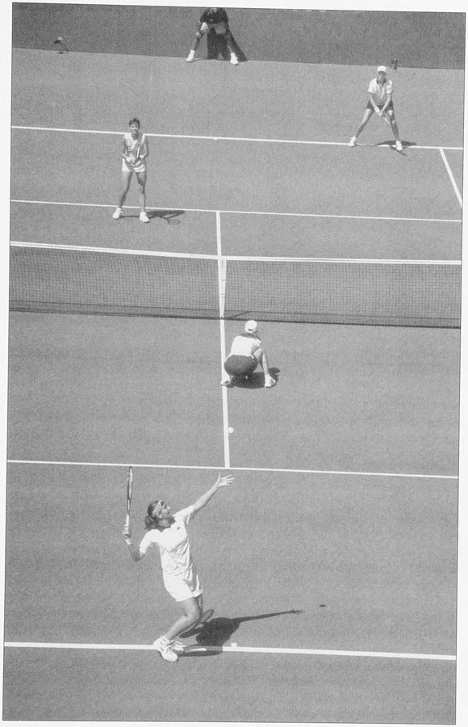
Đánh đôi đã là một phần quan trọng trong sự nghiệp quần vợt của tôi. Nó cho tôi cơ hội được thi đấu như một phần của một đội, đó cũng chính là cách tôi bắt đầu tham gia thể thao. Tôi khởi đầu với bóng rổ, bóng bầu dục và bóng chày trong khuôn khổ một đội, và chính tình bạn với các đồng đội đã khiến những ngày đầu chơi thể thao của tôi trở nên vui vẻ.
Doubles has been a big part of my tennis career. It has provided me with the opportunity to play as part of a team, which is the way I first became involved in sports. I started playing basketball, football, and baseball as part of a team, and fellowship with my teammates is what made my early participation in sports fun.
Tôi đã học được rất nhiều về cách đánh đôi qua những kinh nghiệm thi đấu và huấn luyện ở cấp trẻ, cấp đại học và cấp chuyên nghiệp. Tôi đã may mắn được chơi cùng một số tay vợt đánh đôi rất giỏi, trong đó có người bạn cặp đánh đôi thường xuyên nhất của tôi, Bob Lutz. Tôi đã chơi 11 trận chung kết Grand Slam, và tất cả trừ 3 trận đều là cùng với Bob. Bob và tôi cũng từng hai lần vô địch giải NCAA với tư cách một đội đánh đôi cách đây nhiều năm. Không cần phải nói, chúng tôi đã hiểu lối chơi của nhau tốt đến khó tin, và điều này đã giúp chúng tôi thắng một số trận đấu gay cấn. Bob là một tay đánh đôi tuyệt vời vì anh ấy giao bóng ổn định, bắt vô-lê tốt, trả giao bóng chắc chắn, và anh ấy biết cách khai thác các góc của sân đôi giỏi như bất kỳ tay vợt nào trong làng. Chúng tôi vẫn còn chơi cùng nhau ở các giải Grand Slam cấp cao tuổi, và việc thi đấu với những đối thủ rất quen mặt vẫn tiếp tục là niềm vui đối với chúng tôi.
I have learned a great deal about playing doubles through my junior, college, and professional playing and coaching experiences. I have been fortunate enough to play with some very good doubles players, including my most frequent doubles partner, Bob Lutz. Ihave played in 11 Grand Slam event finals, and all but 3 of them were with Bob. Bob and I also won the NCAAs twice as a doubles team many years ago. Needless to say, we have gotten to know each other’s games unbelievably well, and this has helped us win some tight matches. Bob is a great doubles player because he serves consistently, he volleys well, he returns serve solidly, and he knows how to play the angles of the doubles court as well as any player in the game. We still play together in the senior Grand Slam events, and it continues to be fun for us to compete against some very familiar rivals.
Ngày nay phần lớn những người chơi quần vợt đều chơi đánh đôi, có lẽ vì đánh đôi ít đòi hỏi thể lực khắc nghiệt hơn, cũng mang tính xã hội cao hơn, và do đó vui hơn. Mục tiêu của tôi khi viết cuốn sách này là mang đến cho bạn một số trợ giúp cụ thể cho lối chơi đánh đôi của bạn, dựa trên những kinh nghiệm và quan sát của tôi ở nhiều trình độ thi đấu khác nhau. Tôi hy vọng lời khuyên này không chỉ giúp bạn trở thành một tay đánh đôi hiệu quả và thành công hơn mà còn làm tăng niềm vui của bạn khi chơi môn này. Có một câu nói cũ rằng khía cạnh quan trọng nhất của một trận đánh đôi là việc chọn bạn cặp. Điều đó hơi giống chuyện hẹn hò; bạn muốn tìm được người bạn cặp tốt nhất có thể, một người có thể chống đỡ cho bạn trong những tình huống then chốt, trong khi cùng lúc người bạn cặp của bạn cũng đang cố tìm một người giỏi ngang hoặc hơn mình để hỗ trợ khi mọi thứ trở nên khó khăn. Mỗi tay vợt đều muốn có đầy đủ những phẩm chất và kỹ năng cá nhân của một tay đánh đôi giỏi, đồng thời cũng muốn có một người bạn cặp hội đủ những tố chất cần thiết. Trong thực tế vốn chẳng mấy lý tưởng, một tay vợt có thể có những điểm yếu cụ thể đòi hỏi một người bạn cặp có những phẩm chất bù đắp lại. Tôi sẽ giúp bạn gỡ rối cái tình huống "trò chơi hẹn hò" này để bạn có thể tạo nên một cuộc hôn nhân thành công. Tôi cũng sẽ cung cấp một số chiến lược giúp bạn làm cho cuộc hôn nhân của đội đánh đôi mình vận hành hiệu quả hơn. Tôi sẽ bàn về cách cải thiện giao tiếp với bạn cặp cả trên sân lẫn ngoài sân, và những cách xây dựng chiến lược cho lối chơi của bạn nhằm làm nổi bật điểm mạnh của đội trong khi giảm nhẹ điểm yếu.
Today most people who play tennis play doubles, probably because doubles is more physically forgiving as well as more social, and therefore more fun. My goal in writing this book is to give you some specific help with your doubles game based on my experiences and observations of many levels of play. I hope that this advice will not only make you a more effective and successful doubles player but will also increase your enjoyment of the game. There is an old saying that the most important aspect of a doubles match is the choosing of a partner. It’s a little like dating; you want to find the best possible partner, someone who can shore you up in crucial situations, while at same time your partner is trying to find someone as good as or better than he or she is to provide support when things get tough. Each player would like to have all the individual characteristics and skills of a good doubles player and would also like to have a partner with all the right stuff. In the less than ideal real world, a player may have specific shortcomings that call for a partner with offsetting attributes. I will help you work through this dating- game dilemma so that you can forge a successful marriage. Ill also provide some strategies to help you make your doubles team marriage work more effectively. I’ll discuss how to improve communication with your partner on and off the court and ways to devise strategies for your game that will highlight your team’s strengths while downplaying your weaknesses.
Những tay đánh đôi giỏi nhất và những đội đánh đôi mạnh nhất có chung một vài đặc điểm. Chúng bao gồm: • Khả năng giao bóng ổn định và chính xác • Khả năng nhanh chóng lên lưới sau khi giao bóng • Kỹ năng bắt vô-lê vững chắc • Đôi tay nhanh nhẹn • Khả năng đoán trước các cú đánh của đối thủ • Khiếu chọn vị trí lý tưởng • Bản tính hung hăng trên sân • Khả năng trả giao bóng đáng tin cậy • Khả năng điều chỉnh • Cảm nhận tốt về cách sử dụng toàn bộ sân • Niềm yêu thích lối chơi đồng đội Bob Lutz và tôi nhận ra ngay sau khi bắt đầu chơi cùng nhau rằng những điểm mạnh của anh ấy bù đắp cho những điểm yếu của tôi và ngược lại. Tôi chơi hung hăng hơn anh ấy, nhưng tôi không ổn định. Anh ấy đáng tin cậy hơn với những cú trả giao bóng, còn tôi hỗ trợ anh ấy ở lưới khi anh ấy giao bóng. Cả hai chúng tôi đều có đôi tay khá nhanh và đều có thể điều chỉnh chiến lược trong trận đấu. Chúng tôi có nhiều lựa chọn trong tay, và chúng tôi dùng lối chơi mà mình cảm thấy hiệu quả nhất cho tình huống cụ thể. Chúng tôi có thể lên lưới sau cú trả bóng hoặc trả bóng rồi ở lại phía sau. Khi chơi ở ô bên phải (deuce), đôi khi tôi sẽ vòng người né cú trái tay trong giao bóng hai, đánh một cú trả thuận tay thấp, rồi tiếp tục tiến vào giữa sân, và Bob sẽ băng ngang để chặn cú vô-lê đầu tiên. Nếu pha bóng không kết thúc bằng cú vô-lê của anh ấy, tôi sẽ lui về bọc lấy nửa sân bên trái, còn anh ấy bọc nửa sân bên phải. Nếu chúng tôi trả bóng không tốt, cả hai sẽ cùng ở lại phía sau khi giao bóng một để cố buộc đội kia phải đánh thêm vài quả bóng. Nếu đối thủ không trả bóng dọc biên, một trong hai chúng tôi sẽ đứng gần giữa sân trong khi người kia giao bóng, nhằm thu hẹp vùng trả bóng và gây thêm áp lực lên người trả giao bóng. Khi chúng tôi chơi không tốt, chúng tôi sẽ cướp bóng (poach) nhiều hơn để tự đưa mình vào cuộc chơi một cách chủ động hơn, để chúng tôi điều khiển thế trận thay vì bị điều khiển.
The best doubles players and the best doubles teams share several charac- teristics. They include the following: ® The ability to serve consistently and accurately ® The ability to quickly follow the serve to the net ® Solid volleying skills ® Quick hands ® The ability to anticipate your opponents’ shots ® A knack for ideal positioning ® An aggressive on-court nature ® The ability to return serves dependably ® The ability to make adjustments ® A good sense of how to use the whole court ® An enjoyment of team play Bob Lutz and I realized soon after we started playing together that his strengths supported my weaknesses and vice versa. I played more aggres- sively than he did, but I was not consistent. He was more dependable with his returns of serve, and I helped him at the net when he was serving. We both had pretty quick hands and were able to adjust our strategy during a match. We had several options at our disposal, and we used the style of play that we felt would be most effective for the particular situation. We were able to come to the net behind our return or to return and stay back. When playing the deuce side, I would sometimes run around my backhand ona second serve, hit a low forehand return, and continue going to the center of the court, and Bob would cross and intercept the first volley. If the point did not end with his volley, I would then cover the left side of the court, and he would cover the right. If we weren’t returning well, we would both stay back on the first serve to try to make the other team hit a few more balls. If our opponents were not hitting the return down the line, one of us would play close to the center of the court while the other was serving in order to make the return area smaller and put more pressure on the returner. When we were not doing well, we would poach more to get ourselves more actively involved in the game so that we were dictating instead of being dictated to.
Cả hai chúng tôi đều tận hưởng cảm giác phấn khích của chiến thắng tập thể, và không ai trong chúng tôi thích nỗi đau của thất bại.
We both enjoyed the thrill of team victory, and neither of us liked the agony of defeat.
Quần vợt đã thay đổi khá nhiều qua nhiều năm, một phần nhờ những thay đổi và cải tiến trong dụng cụ. Các tay vợt có thể đánh bóng mạnh hơn và chính xác hơn bao giờ hết nhờ những cây vợt ngày nay to hơn, chắc hơn, nhẹ hơn và dài hơn. Quần vợt đánh đôi ngày nay bao gồm những cú trả giao bóng hung hăng hơn, ít lốp bóng phòng ngự hơn, nhiều lốp bóng tấn công hơn, nhiều pha cướp bóng (poach) hơn và giao bóng mạnh hơn so với trước đây. Tôi sẽ bàn về những cách bạn có thể tận dụng dụng cụ mới.
Tennis has changed quite a bit over the years, in part because of changes and improvements in equipment. Players are able to hit the ball harder and more accurately than ever with today’s bigger, stronger, lighter, and longer rackets. Doubles tennis today includes more aggressive returns of serve, less defensive lobbing, more offensive lobbing, more poaching, and bigger serving than in the past. I’ll discuss ways that you can take advantage of the new equipment.
Còn có những cách khác để bạn giành lợi thế trước đối thủ. Tôi sẽ nói về cách bạn có thể thay đổi lối đánh đôi của mình thông qua việc tạo cú đánh, chiến lược, thể lực, dinh dưỡng, sự vững vàng tinh thần và những phương cách khác giúp bạn tiến bộ. Tôi sẽ đưa ra những mẹo và ví dụ từ kinh nghiệm thi đấu, huấn luyện và quan sát quần vợt đánh đôi của mình, cùng một vài câu chuyện về những gì các tay vợt chuyên nghiệp đã làm để thắng nhiều trận đánh đôi hơn.
There are other ways you can get an edge on your competition as well. I'll talk about how you can make changes to your doubles game through stroke production, strategy, conditioning, nutrition, mental toughness, and other means that will help you improve. I'll offer tips and examples from my experience playing, coaching, and observing doubles tennis as well as some stories about what the pros have done to win more doubles matches.
Tôi đã từng đối đầu hoặc quan sát kỹ một số tay vợt vĩ đại nhất mọi thời đại, những tay vợt như Billie Jean King, Margaret Court, Chris Evert, Martina Navratilova, Martina Hingis, Rod Laver, Bjorn Borg, Jimmy Connors, John McEnroe và Pete Sampras. Suốt sự nghiệp của họ, những tay vợt này không ngừng trau dồi lối chơi và thực hiện những thay đổi nhỏ để có thể cạnh tranh hơn. Không một tay vợt vĩ đại nào trong số này từng hài lòng với lối chơi của mình. Dù chơi đơn hay đánh đôi, những tay vợt này đều biết rằng họ phải tiếp tục tiến bộ nếu không sẽ bị lật đổ.
I've played against or observed closely some of the great players of all time, players such as Billie Jean King, Margaret Court, Chris Evert, Martina Navratilova, Martina Hingis, Rod Laver, Bjorn Borg, Jimmy Connors, John McEnroe, and Pete Sampras. Throughout their careers these players contin- ued to work on their games and make little changes so that they could be more competitive. Not one of these great players was ever satisfied with his or her game. Whether they played singles or doubles, these players knew that they had to continue to improve or they would be toppled.
Đánh đôi đặt ra những vấn đề giao tiếp mà đánh đơn hoàn toàn không gặp phải. Chẳng hạn, các tay đánh đôi có thể bàn bạc chiến thuật và chiến lược trước, trong và sau trận đấu. Họ có thể động viên nhau trực tiếp trên sân, điều này có thể giúp họ không bị cứng đơ, không bỏ cuộc, hay không mất bình tĩnh trong một trận đấu khó khăn.
Doubles presents communication issues that simply don’t come up in singles. For example, doubles players can discuss tactics and strategy before, during, and after a match. They can encourage each other directly on the court, which may prevent them from freezing up, giving up, or just plain losing it during a difficult match.
Đôi khi hai tay đánh đơn giỏi sẽ chơi đánh đôi như thể họ đang ở trên sân đơn. Một đội như vậy không chỉ chơi không hiệu quả như khả năng của họ, mà còn có thể mang lại màn giải trí hài hước cho đối thủ và khán giả. Thật buồn cười khi thấy cả hai thành viên của một đội cùng để bóng đi qua giữa sân, hoặc thậm chí hay hơn nữa là cả hai cùng lao vào một quả bóng. Trong một trận Davis Cup lớn ở Romania, đối thủ của chúng tôi giận nhau đến mức sau set đầu họ không còn nói chuyện với nhau nữa. Không cần phải nói, trình độ thi đấu vốn cao của họ đã sa sút vì hoàn toàn thiếu giao tiếp.
Sometimes two good singles players will play doubles as if they were on a singles court. Not only will such a team not be as effective as it could be, but it may provide comic relief for the opponents and fans. It’s always fun to see both members of a team let the ball go down the middle or, even better, to see both players go for the same ball. In one big Davis Cup match in Romania, our opponents got so mad at each other that after the first set they stopped talking to each other. Needless to say, their ordinarily high level of play suffered as a result of their complete lack of communication.
Mặt khác, những đội vĩ đại như Martina Navratilova và Pam Shriver, Peter Fleming và John McEnroe, John Newcombe và Tony Roche, Todd Woodbridge và Mark Woodforde, Gigi Fernandez và Natasha Zvereva được mô tả như bơ đậu phộng và mứt, hay như ngựa và xe. Họ mang đến cho nhau sự động viên, động lực, sự bình tĩnh, sự phấn khích, sự khuấy động, một câu đùa đúng lúc, sự đồng cảm và tình bạn khi cần. Tôi sẽ chỉ ra một số cách cụ thể mà những tay đánh đôi chuyên nghiệp ấy phối hợp ăn ý với nhau để bạn có thể áp dụng kỹ thuật của họ cho mình.
On the other hand, the great teams like Martina Navratilova and Pam Shriver, Peter Fleming and John McEnroe, John Newcombe and Tony Roche, Todd Woodbridge and Mark Woodforde, Gigi Fernandez and Natasha Zvereva have been described as peanut butter and jelly, or a horse and carriage. They offer each other encouragement, motivation, calm, excite- ment, distraction, a fitting joke, empathy, and friendship as needed. I will point out some of the specific ways that such professional doubles players work well together so that you can put their techniques to work for you.
Những tay vợt lớn tuổi có thể thấy rằng họ chơi đánh đôi hiệu quả hơn đánh đơn vì họ không phải bao quát nhiều sân như vậy, và họ có thể dùng chiến thuật đa dạng để bù đắp cho sức mạnh và khả năng di chuyển đã giảm sút. Với tay vợt từ 50 tuổi trở lên, trận đấu thay đổi đôi chút khi vài cơn đau nhức bắt đầu xuất hiện, nhưng nó có thể vui bằng hoặc hơn bao giờ hết. Là một tay vợt còn sung sức trong nhóm tuổi này (liệu có thể là tôi thực sự đủ điều kiện chơi ở giải đấu này ư?), tôi nhận thấy rằng nếu giữ được thể trạng khá tốt, tôi có thể chơi ở một trình độ tương đối cao nhờ chọn vị trí thông minh trên sân và lựa chọn cú đánh hợp lý. Hầu hết các tay vợt ở tuổi này đều có vốn kinh nghiệm phong phú, nên việc đánh đúng những cú bóng có lẽ chỉ là vấn đề có một trí nhớ tốt. Dù họ có một trí nhớ tốt hay không, những tay vợt lớn tuổi vẫn luôn có thể tiến bộ và tận dụng những kỹ năng đang mai một dần của đối thủ.
Older players may find that they can play doubles more effectively than singles because they don’t have to cover as much court, and they can use a variable strategy to make up for reduced power and mobility. For the 50 and over player, the game changes a little with the onset of a few aches and pains, but it can be as much or more fun than ever. As an active player in this category (is it possible that I am really eligible to play in this league?), [have found that if I stay in reasonably good shape, I can play at a relatively high level through smart positioning on the court and good shot selection. Most players this age have a wealth of experience, so hitting the right shots may just be a matter of having a good memory. Whether or not they have a good memory, older players can always improve and take advantage of their opponents’ diminishing skills.
Tôi hy vọng bạn không chỉ thích đọc cuốn sách này mà còn thích đưa những lời khuyên này vào thực hành để bạn có thể tận hưởng môn thể thao tuyệt vời này và trở thành một tay vợt thành công hơn.
[hope that you enjoy not only reading this book but also putting these tips into practice so that you can enjoy this great game and be a more successful player.
1. Xây Dựng Một Đội Đánh Đôi Chiến Thắng
Đánh đôi là lối chơi mà phần lớn các tay vợt ngày nay chơi, nhưng quá nhiều người chơi đánh đôi như thể họ đang chơi đơn trên một sân đôi. Tôi đã thấy nhiều tay đánh đơn thực sự giỏi mà hoàn toàn không biết cách chơi một trận đánh đôi. Cliff Richey, một tay vợt hàng đầu thời của tôi, là một ví dụ điển hình. Anh ấy là tay vợt đánh đơn số một nước Mỹ, nhưng khi bước vào sân đôi, anh ấy lại chạy thẳng xuống giữa sân về phía lưới mà chẳng quan tâm bạn cặp của mình đang đứng ở đâu. Có lúc anh ấy đánh một cú thắng điểm, có lúc anh ấy đánh trúng cả bạn cặp của mình. Trong trường hợp sau, anh ấy có thể có hoặc không tập trung vào bạn cặp đủ lâu để xin lỗi trước khi chuyển sang điểm tiếp theo. Tôi khá thích xem những trận đánh đôi của anh ấy vì chúng có màn hài kịch khá hay, nhưng mỗi màn diễn thường chỉ kéo dài một vòng đấu, rồi Cliff lại quay về chơi đơn.
Doubles is the game most tennis players play today, but too many players play doubles as if they were playing singles on a doubles court. Ihave seen several really good singles players who just do not have a clue how to play a doubles match. Cliff Richey, a top player during my era, is a case in point. He was the number-one singles player in the United States, but when he got on the doubles court he would run right down the center of the court toward the net with no regard as to where his partner was positioned. Sometimes he would hit a winner, and sometimes he would hit his partner. In the latter case, he might or might not focus on his partner long enough to apologize before moving on to the next point. I kind of enjoyed watching his doubles matches because they featured some pretty good comedy, but each show usually lasted just one round, and then Cliff was back to playing singles.
Khi đánh giá những khác biệt giữa đánh đơn và đánh đôi, điều quan trọng là phải xem xét những yếu tố thiết yếu của mỗi lối chơi. Những yếu tố thiết yếu này bao gồm chiến lược, thể lực, sự vững vàng tinh thần, đôi tay và đôi chân nhanh nhẹn, cùng những kỹ năng cần thiết trong việc giao bóng, bắt vô-lê, trả giao bóng, đánh cú đánh nền (groundstroke), lốp bóng và di chuyển quanh lưới. Tính cách của bạn cũng sẽ góp phần quyết định xem bạn nghiêng về đánh đơn hay đánh đôi. Bảng 1.1 có thể giúp bạn quyết định liệu mình có đủ tố chất để chơi đánh đôi hiệu quả hay không.
When you evaluate the differences between singles and doubles, it is important to consider the essential elements of each game. These essentials include strategy, conditioning, mental toughness, quick hands and feet, and the skills required in serving, volleying, returning the serve, hitting ground strokes, lobbing, and moving around the net. Your personality will also help determine whether you will lean toward singles or doubles. Table 1.1 may help you decide if you have what it takes to play effective doubles.
Hiểu Về Chiến Thuật Đánh ĐôiUnderstanding Doubles Strategy
Biết và hiểu những khác biệt giữa chiến lược, chiến thuật đánh đơn và đánh đôi là chìa khóa để trở thành một tay đánh đôi giỏi hơn, dù bạn chơi đánh đôi nam, đánh đôi nữ hay đánh đôi nam nữ. Chẳng hạn, một số động tác hiệu quả trên sân đơn nhưng không hiệu quả bằng trong trận đánh đôi là những cú trả giao bóng mạnh mẽ, phóng túng, giao bóng rồi ở lại phía sau, trả giao bóng vào giữa sân, và ở lại vạch cuối sân chờ đối thủ mắc lỗi. Nếu bạn dùng những động tác này, bạn sẽ là miếng mồi ngon cho một đội đánh đôi giỏi.
Knowing and understanding the differences between singles and doubles strategy and tactics is a key to becoming a better doubles player, whether you are playing doubles or mixed doubles. For example, some moves that work on the singles court but are not as effective in a doubles game are those big, freewheeling returns of serve, serving and then staying back, returning serve down the middle, and staying back on the baseline waiting for a mistake. If you use these moves, then you will be easy pickings for a good doubles team.
Những cú trả bóng mạnh và nặng khó đánh ổn định hơn trong quần vợt đánh đôi, và những người bắt vô-lê giỏi có thể xử lý chúng khá tốt. Những tay đánh đôi giỏi không ở lại phía sau sau khi giao bóng mà tiến lên lưới. Họ cũng giữ những cú trả giao bóng tránh xa khu vực giữa sân.
Big, hard returns are more difficult to hit consistently in doubles tennis, and good volleyers can handle them pretty well. Good doubles players don’t stay back after serves but instead approach the net. They also keep returns of serve away from the middle.
Chơi quần vợt đơn là một thử thách lớn vì không có ai giúp bạn trong trận đấu. Nếu bạn đang thua, bạn phải tự tìm cách thay đổi chiến thuật, chiến lược hoặc phong độ của mình, nếu không chắc chắn bạn sẽ về nhì. Một số tay vợt có khả năng làm điều này, số khác thì cứng đơ hoặc gặp khó khăn trong việc tìm cách điều chỉnh lối chơi cho phù hợp với đối thủ hay điều kiện thi đấu. Những tay vợt khó điều chỉnh lối chơi đơn của mình trong các trận đấu gay cấn có thể lại chơi khá tốt khi đánh đôi vì họ có thêm một người giúp xác định phải làm gì. Những tay vợt như vậy cũng có thể cảm thấy ít áp lực hơn trên sân vì họ không đơn độc, và có thể thấy biết ơn khi có một người bạn cặp động viên mình khi trận đấu bắt đầu "đi xuống dốc".
Playing singles tennis is a great challenge because there is no one to help you during a match. If you are losing, then you have to figure out how to change your tactics, strategy, or level of play, or you will surely come in second. Some players have the ability to do this, and others freeze up or have trouble figuring out how to adjust their play to fit their opponent or the conditions. Players who have difficulty adjusting their singles game during tough matches may do quite well in doubles play because they have another player to help them determine what to do. Such players may also feel less pressure on the court because they are not alone and may appreciate having a partner to encourage them when a match starts “going south.”
Xuyên suốt cuốn sách này, tôi mô tả cách lập kế hoạch và phân tích chiến lược đánh đôi của bạn, đặc biệt là cách khắc phục khi một trận đấu đang diễn ra không tốt.
Throughout this book I describe how to plan and analyze your doubles strategy, especially how to troubleshoot when a match is not going well.
Giao tiếp, được bàn ở chương 2, là một trong những chìa khóa quan trọng nhất để chơi quần vợt đánh đôi thành công, đồng thời cũng là một trong những khác biệt lớn nhất giữa đánh đơn và đánh đôi. Việc điều chỉnh vị trí của bạn trên sân như mô tả ở chương 3 sẽ cho phép bạn tối ưu hóa chiến lược của đội, phát huy tối đa điểm mạnh và che chắn điểm yếu. Chẳng hạn, nếu bạn có cú thuận tay mạnh mà trái tay không tốt lắm, bạn nên thay đổi vị trí khi nhận giao bóng hai để tấn công bằng vũ khí mạnh nhất của mình và tránh phải đánh trái tay quá nhiều. Các chiến lược giao bóng, được trình bày ở chương 4, có đôi chút khác biệt trong lối chơi đánh đôi. Có những chiến lược trả giao bóng (xem chương 5) để đối phó với những thách thức riêng của đánh đôi
Communication, discussed in chapter 2, is one of the most important keys to playing successful doubles tennis as well as one of the biggest differences between singles and doubles. Adapting your positioning on the court as described in chapter 3 will allow you to optimize your team’s strategy, make the most of your strengths, and protect your weaknesses. For example, if you have a big forehand and not much of a backhand, you should change your positioning when receiving second serves in order to attack with your strongest weapon and avoid hitting a lot of backhands. Serving strategies, covered in chapter 4, are a bit different in doubles play. There are returning strategies (see chapter 5) to counteract the particular challenges of doubles
Bảng 1.1 |
Table1.1 |
Các Yếu Tố Thành Công Trong Đánh Đơn So Với Đánh ĐôiElements of Success in Singles Versus Doubles Tennis
Các yếu tố thành công Đánh đơn Đánh đôi Chiến thuật Di chuyển đối thủ Buộc đối thủ phải bắt vô-lê lên.
Elements of Success Singles Doubles Strategy Move opponents Make opponents volley up.
từ góc này sang góc kia.
from corner to corner.
Đánh cược nhiều hơn với Hãy ổn định.
Gamble more with Be steady.
những pha cướp bóng (poach).
poaches.
Sự vững vàng tinh thần Chỉ có thể dựa vào chính mình Bạn cặp có thể hỗ trợ bạn trong trận đấu Thể lực Sức bền hiếu khí Rất quan trọng trong các Ít cần thiết hơn so với đánh đơn trận đấu dài Tốc độ Rất quan trọng Quan trọng, đặc biệt khi di chuyển ở lưới Sức mạnh Quan trọng, đặc biệt nếu bạn Phụ thuộc vào lối chơi.
Mental toughness Can depend only on yourself Partner can help support you during match Conditioning Aerobic Very important in long Less necessary than in singles matches Speed Very important Important, especially when moving at the net Strength Important, especially if you Depends on style of play.
là một tay chơi sức mạnh Nếu bạn là tay chơi khéo léo, không quan trọng bằng tốc độ.
are a power player If you are a finesse player, not as important as speed.
Sự nhanh nhẹn Có thể không cần Cần có khả năng phản xạ bóng bay tới lưới nhiều như vậy và lùi về kịp thời, phục hồi nhanh Kỹ năng Giao bóng Cố gắng với giao bóng một, nhưng phải có Giảm lực giao bóng một để đạt tỉ lệ giao bóng hai chắc chắn vào sân cao hơn.
Quickness Can get away with not Need to be able to reflex balls coming to net as much back and recover quickly Skills Serve Go for first serve, but have a Take pace off first serve to get secure second serve higher percentage in.
Lên lưới nhanh sau khi giao bóng.
Get to net fast behind serve.
Vô-lê Nói chung bắt vô-lê mạnh và Vô-lê rất quan trọng và sẽ thay đổi.
Volley Generally volley hard and Volley is important and will vary.
mạnh và sâu.
hard and deep.
Một số cú mạnh và sâu, nhiều góc hơn, và những cú chính xác Thỉnh thoảng có vô-lê thả bóng (drop volley).
Some hard and deep, more angles, and accurate shots Occasional drop volley.
vào chân đối thủ.
at opponent's feet.
Trả giao bóng Mạnh và sâu, hoặc cao và Ngắn và vào chân đối thủ, sâu nếu đối thủ ở lại phía sau.
Return of serve Hard and deep, or high and Short and at opponent's feet, deep if opponent stays back.
giữ thấp.
keep low.
Mạnh và sâu nếu người giao bóng Ngắn và vào chân nếu đối thủ tiến lên.
Hard and deep if server Short and at feet if opponent comes in.
ở lại phía sau.
stays back.
Nặng và sâu Nhiều biến hóa và góc hơn Cú đánh nền Có thể rất hữu ích Lốp bóng Không được dùng nhiều lắm Không được dùng chút nào Rất quan trọng Cướp bóng (poach) Bóng thả (drop shot) Có thể hiệu quả Không được dùng nhiều lắm Hữu ích nếu bạn là người giao bóng Có thể rất hữu ích khi có thể Vô-lê thả bóng đánh vô-lê thả bóng chéo góc và người bắt vô-lê
Heavy and deep More variety and angles Groundstroke Can be very useful Lob Not used very much Not used at all Very important Poach Drop shot Can be effective Not used very much Helpful if you are a server Can be very helpful to be able Drop volley to hit angle drop volley and volleyer
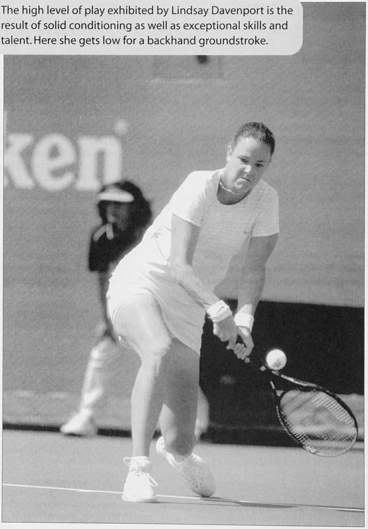
quần vợt, chẳng hạn như ở lại phía sau và buộc những đối thủ nổi tiếng với lối giao bóng mạnh phải đánh thêm nhiều cú vô-lê mà không có mục tiêu là con người. Ở chương 6, tôi giải thích sự đa dạng của các cú vô-lê và các cú đánh góc mà những tay đánh đôi có thể tận dụng. Một đội đánh đôi có thể mạnh hơn tổng các phần của nó (tài năng của từng tay đánh đơn) nếu các thành viên trong đội có bản năng đánh đôi tốt và áp dụng chiến lược đánh đôi hợp lý.
tennis, such as staying back and making opponents who are known as big serving teams hit more volleys without a human target . Inchapter 6] explain the variety of volleys and angle shots that doubles players can take advan- tage of. The doubles team can be better than the sum of its parts (the talents of the individual singles players) if the members of the team have good doubles instincts and apply sound doubles strategy.
Trình độ thi đấu cao mà Lindsay Davenport thể hiện là kết quả của nền tảng thể lực vững chắc cùng những kỹ năng và tài năng đặc biệt. Ở đây cô ấy hạ thấp người để đánh một cú đánh nền trái tay.
The high level of play exhibited by Lindsay Davenport is the result of solid conditioning as well as exceptional skills and talent. Here she gets low for a backhand groundstroke.
Điều Kiện Thể Lực Cho Đánh ĐôiConditioning for Doubles
Một vấn đề luôn xuất hiện mỗi khi bạn ra sân, dù chơi đơn hay đánh đôi, đó là thể lực. Có nhiều loại hình rèn luyện thể lực khác nhau cùng phối hợp để chuẩn bị cho bạn đạt phong độ lý tưởng. Một số loại bao gồm rèn luyện hiếu khí hay sức bền, liên quan đến khả năng cơ thể hấp thụ oxy nhanh bằng với nhu cầu của các cơ bắp và thường được thể hiện qua sức chịu đựng của bạn trên sân; rèn luyện tốc độ và sự nhanh nhẹn, giúp bạn di chuyển đến đúng nơi, đúng lúc cần thiết trên sân và bước, vung vợt đúng thời điểm; và rèn luyện sức mạnh, đảm bảo bạn chơi với lực mạnh và giúp bạn phòng tránh chấn thương. Ở chương 7, tôi sẽ bàn về những cách cụ thể để đưa các loại rèn luyện thể lực này vào một buổi tập vững chắc và toàn diện, nhưng những đoạn sau đây sẽ trình bày những điều cơ bản thiết yếu của việc rèn luyện thể lực toàn diện cho đánh đôi.
An issue that comes into play whenever you are on court, whether you're playing singles or doubles, is conditioning. There are different types of conditioning that all work together to prepare you for your ideal perfor- mances. Some of these types include aerobic or endurance conditioning, which deals with your body’s ability to take in oxygen as fast as your muscles need it and which generally translates into your stamina on the court; speed and quickness conditioning, which allows you to move where and when you need to on the court and to step and swing with appropriate timing; and strength conditioning, which ensures that you play with power and which helps you offset injuries. In chapter 7 I’ll discuss specific ways to work these types of conditioning into a solid and complete practice, but the following paragraphs cover the basic essentials of all-around conditioning for doubles.
• Rèn luyện hiếu khí. Việc bao quát toàn bộ sân khi chơi đơn đòi hỏi khả năng không chỉ di chuyển nhanh mà còn di chuyển nhanh trên một quãng đường dài trong suốt trận đấu. Các tay đánh đơn có thể chạy hơn năm dặm trong một trận. Phần lớn việc di chuyển đó bao gồm những động tác dừng và khởi động nhanh, có thể khiến bạn kiệt sức khá nhiều trong suốt trận đấu.
® Aerobic conditioning. Covering the whole court when playing singles requires the ability to not only move quickly, but to move quickly for a long distance during the course of a match. Singles players may run over five miles during a match. Most of that moving is made up of quick stop and start movements, which can take quite a bit out of you over the course of a match.
Với chỉ 25 giây giữa các điểm để hồi phục, cuộc đấu đôi khi trở thành một phép thử sức bền hơn là kỹ năng.
With only 25 seconds between points in which to recover, the contest sometimes becomes more of a test of endurance than skill.
Giờ đây, trong đánh đôi, bạn không phải di chuyển xa như vậy cho mỗi cú đánh hoặc thường xuyên như vậy trong suốt trận đấu, và do đó bạn sẽ không mệt nhanh như trong một trận đánh đơn. Trong đánh đôi, bạn chỉ di chuyển khoảng hai dặm trong một trận dài bởi vì các pha bóng ngắn hơn, bạn chỉ bao quát một nửa sân, và bạn chủ yếu đi từ vạch cuối sân lên lưới chứ không phải chạy ngang dọc theo vạch cuối sân như khi chơi đơn. Nhịp độ của đánh đôi có thể nhanh và dữ dội, đòi hỏi phản xạ tuyệt vời, chọn vị trí tốt, lựa chọn cú đánh hợp lý và khả năng đoán trước nhạy bén. Chắc chắn việc di chuyển tốt sẽ có ích, nhưng vì bạn không phải bao quát nhiều sân như khi chơi đơn, bạn có thể vẫn ổn dù không ở trong tình trạng thể lực hiếu khí lý tưởng. Bạn sẽ có thể trụ lâu hơn khi đánh đôi so với đánh đơn, và đôi khi bạn buộc phải như vậy! Tôi đã chơi một trận đánh đôi ở Davis Cup mà tôi và bạn cặp phải ở trên sân sáu tiếng đồng hồ vào thứ Bảy mà vẫn chưa kết thúc trận đấu. (Cuối cùng chúng tôi phải chơi set cuối và một set rưỡi nữa vào Chủ nhật.) Tin tôi đi, dù đó chỉ là đánh đôi, tôi thực sự kiệt sức vào cuối ngày hôm đó.
Now, in doubles, you don’t have to move as far for each shot or as frequently over the course of a match, and therefore you will not tire as quickly as you would in a singles match. In doubles you will move only about two miles during a long match because the rallies are shorter, you are covering only half the court, and you are mainly going from baseline to net rather than across the baseline as you would in singles. The action of doubles can be fast and furious, requiring great reflexes, good positioning, proper shot selection, and keen anticipation. Certainly it helps to move well, but since you don’t have to cover as much court as you would in singles, youcan get away with not being in ideal aerobic condition. You should be able to last longer playing doubles than singles, and sometimes you may have to! I played one Davis Cup doubles match in which my partner and I were on the court for six hours on Saturday and still didn’t finish the match. (We ended up playing the last set and a half on Sunday.) Believe me, even though it was just doubles, I was really tired by the end of that day.
• Rèn luyện tốc độ. Trong khi rèn luyện hiếu khí không cần thiết cho đánh đôi nhiều như cho đánh đơn, thì rèn luyện tốc độ lại thiết yếu cho cả hai. Điểm nhấn là nhu cầu lên lưới nhanh và giữ thăng bằng tốt. Sau khi giao bóng, bạn thường phải chạy nước rút ba bước đầu, rồi bước tách để lấy thăng bằng, rồi bứt người để đánh cú vô-lê đầu tiên. Các bài tập tốc độ trên sân hoặc ngoài sân, bao gồm các bài tập bóng, bắt vô-lê, đập bóng trên cao (smash) và những bài tập khác mà tôi sẽ mô tả ở chương 7, sẽ giúp bạn chuẩn bị để thực hiện những động tác này. Các bài tập rèn luyện tốc độ có thể giúp ích cho các tay đánh đơn, nhưng chúng đặc biệt có lợi cho các tay đánh đôi vì khía cạnh giao bóng rồi lên lưới đầy hung hăng của lối chơi đánh đôi.
® Speed conditioning. While aerobic conditioning is not needed as much for doubles play as it is for singles, speed conditioning is vital for both. The need to get to the net quickly and in good balance is the emphasis. After the serve you generally must sprint the first three steps, then split step to get your balance, then make a cut to hit the first volley. Speed work on or off the court, including ball drills, volleying, hitting overheads, and other exercises that I will describe in chapter 7, will help you prepare to execute these moves. Speed conditioning drills can help singles players, but they are particularly beneficial for doubles players because of the aggressive serve- and-volley aspect of the doubles game.
Rèn luyện sức mạnh. Tất cả các tay vợt — cả tay đánh đơn lẫn tay đánh đôi — đều cần có một chương trình rèn luyện sức mạnh tổng thể tốt. Điều đặc biệt quan trọng là các tay vợt phải xây dựng và duy trì sức mạnh ở chân, lưng, bụng, cánh tay và vai. Như bạn thấy, điều đó gần như bao quát mọi nhóm cơ chính của cơ thể.
Strength conditioning. All tennis players—singles and doubles play- ers—need to have a good general strength program. It is particularly important for players to build and maintain strength in the legs, back, stomach, arms, and shoulders. As you can see, that just about covers every major muscle of the body.
Khi bạn bắt đầu rèn luyện thể lực cho mùa giải, có nhiều điều bạn có thể làm để giúp mình thi đấu ở phong độ tốt nhất. Hãy nhớ rằng, với tư cách một tay đánh đôi, bạn chủ yếu hướng đến việc phát triển tốc độ, sự nhanh nhẹn và sự bùng nổ. Một trong những bác sĩ y học thể thao mà tôi yêu thích từng nói rằng, "bạn nên luyện tập cho có thể lực để chơi quần vợt, chứ không phải chơi quần vợt để có thể lực." Đây là lời khuyên xác đáng. Tôi từng biết những người bắt đầu chơi hết sức mình trước khi thực sự sẵn sàng vì họ muốn giảm vài cân hoặc lên cơ nhanh chóng.
As you begin your conditioning for the season, there are many things you can do that will help you compete at your best. Keep in mind that, as a doubles player, you are looking primarily to develop speed, quickness, and explosiveness. One of my favorite sports medicine doctors once stated that, “you should get in shape to play tennis, not play tennis to get in shape.” This is cogent advice. Ihave known people whostart playing hard before they are really ready because they want to shed some pounds or tone up quickly.
Khi các tay vợt lao vào tập luyện theo cách này, họ trở nên dễ bị chấn thương hơn, điều có thể làm họ chậm bắt đầu mùa giải quần vợt hoặc thậm chí khiến họ nghỉ cả mùa. Những người này thường có tính cách tuýp A, vốn quen với việc hoàn thành mọi thứ nhanh chóng. Tôi không thể nhấn mạnh đủ tầm quan trọng của việc luyện tập thể lực dần dần để chuẩn bị cho những trận đấu dài và gian khổ mà bạn sẽ phải đối mặt.
When players go at it in this fashion they make themselves more vulnerable to injury, which can delay the start of the tennis season for them or even keep them out for the whole season. These people are usually type A personalities whoare used to getting things done quickly. I cannot emphasize enough the importance of getting in shape gradually for the long, tough matches you will face.
Vậy nên vào đầu mùa giải, khoảng bốn đến sáu tuần trước trận đấu đầu tiên, hãy chạy đường dài để dần dần rèn luyện hệ tim mạch của bạn. Chẳng hạn, hồi đại học, trong bốn tuần đầu của khóa huấn luyện, huấn luyện viên của tôi, George Toley, cho chúng tôi chạy vài dặm cách ngày, rồi tập nhiều bài thể dục, một ít động tác đi vịt và giãn cơ, cùng vài đoạn chạy nước rút. Qua từng tuần, chúng tôi dần chạy đường dài ít hơn nhưng chạy nước rút nhiều hơn.
So at the start of the season, about four to six weeks before your first match, do some long-distance running to gradually condition your cardiovascular system. For example, in college, during the first four weeks of our training, my coach, George Toley, would have us runa few miles every other day and then do a variety of calisthenics, some duckwalking and stretching, and a few sprints. As the weeks progressed, we would gradually do less long- distance running but more sprinting.
Việc chạy kết hợp các cự ly 400, 600 và những đoạn nước rút 50 yard cùng với rèn luyện sức mạnh cho chân, lưng, vai và cánh tay sẽ xây dựng nền tảng thể lực ban đầu. Sau khoảng sáu tuần, bạn sẽ sẵn sàng bổ sung các bài tập tốc độ và nhanh nhẹn trên sân để chuẩn bị cho mùa giải. Bạn có thể nâng cao thể lực của mình bằng cách chạy thêm vài đoạn nước rút, nhảy dây và tập một số bài tập bóng vài lần mỗi tuần. Khi bạn cảm thấy hài lòng hơn về thể lực tổng thể của mình, bạn có thể chuyển sang một số bài tập tốc độ và sức mạnh. Khi đã có nền tảng thể lực vững chắc, một tay đánh đôi cần chú trọng sức bền ít hơn so với một tay đánh đơn, nhưng phải tập nhiều về sự nhanh nhẹn, phản xạ và giao bóng rồi lên lưới. Chương 7 trình bày chi tiết một số bài tập cụ thể phù hợp với các giai đoạn khác nhau của mùa giải.
Running a combination of 400s, 600s, and 50-yard sprints along with strength training for the legs, back, shoulders, and arms will build a beginning fitness base. After about six weeks, you'll be ready to add on- court speed and quickness work in order to be ready for the season. You can improve your fitness level by doing several more sprints, jumping rope, and doing some ball drills a couple of times a week. When you feel better about your overall fitness level, you can move on to some speed and strength work. Once a solid base of fitness is in place, a doubles player needs to emphasize endurance less than a singles player would, but do a good amount of quickness, reflex, and serve-and-volley work. Chapter 7 details some specific workouts appropriate for the different phases of the seasons.
Ngoài việc rèn luyện thể lực tổng thể, các tay vợt cũng nên khởi động đúng cách. Việc khởi động trước buổi tập hay trận đấu định hình tâm thế cho cả ngày (tôi trình bày một quy trình khởi động cụ thể ở chương 7). Mỗi lần bạn chạy hoặc chơi quần vợt, hãy đảm bảo rằng bạn khởi động và giãn tất cả các nhóm cơ chính để giảm nguy cơ chấn thương. Điều tồi tệ nhất có thể xảy ra với một người đam mê quần vợt đầy háo hức là có thời gian và sự hứng thú để chơi nhưng rốt cuộc lại phải ngồi ngoài, dành thời gian trong phòng phục hồi chức năng để chăm sóc một chấn thương lẽ ra có thể phòng ngừa chỉ bằng vài phút khởi động và giãn cơ.
Inaddition to overall conditioning, players should also doa proper warm- up. The warm-up before practice or a match sets the tone for the whole day (I cover a specific warm-up routine in chapter 7). Each time you run or play tennis, make sure that you warm up and stretch all the major muscles so that you reduce your risk of injury. The worst thing that can happen to an excited tennis enthusiast is to have the time and interest to play but wind up sidelined, spending time in rehab nursing an injury that could have been prevented with just a few minutes of warming up and stretching.
Đánh Giá Điểm Mạnh Và Điểm Yếu Của BạnAssessing Your Strengths and Weaknesses
Khi bạn bắt đầu tìm kiếm một người bạn cặp, điều quan trọng là trước tiên phải xem xét cách bạn chơi. Bạn phải trung thực với chính mình về điểm mạnh và điểm yếu của mình. Bạn càng hiểu rõ tính cách và lối chơi của bản thân, bạn càng dễ hiểu mình đang tìm kiếm điều gì ở một người bạn cặp. Tôi tin đây là một quá trình thú vị có thể hữu ích cho bạn trong lối chơi quần vợt cũng như những lĩnh vực khác của cuộc sống.
As youstart your search for a partner it is important to consider first how you play. You must be honest with yourself as far as your strengths and weaknesses are concerned. The better you know your own personality and style of play, the easier it will be to understand what you are looking for in a partner. I believe this is an interesting process that can be helpful to you in your tennis game as well as other areas of your life.
Vậy làm thế nào để bạn xác định được điểm mạnh và điểm yếu của mình? Tất nhiên, một cách khởi đầu tốt là phân tích lối chơi của chính bạn. Tuy nhiên, việc tự phân tích có thể đúng hoàn toàn hoặc không. Một tay vợt có thể tự nhận mình là một tay đánh đôi thực sự giỏi chỉ đơn giản vì cặp đấu của anh ấy có một mùa giải thành công. Thực tế là bạn cặp của tay vợt đó giỏi đến mức đội đã thành công bất chấp những điểm yếu của chính anh ấy. Hoặc ai đó có thể tự nhận mình giao bóng và lên lưới giỏi vì cô ấy luôn giữ được giao bóng khi chơi với một bạn cặp cụ thể. Sự thật là bạn cặp của cô ấy hiệu quả ở lưới đến mức anh ấy thắng phần lớn điểm cho đội bằng những pha cướp bóng (poach); nếu không có một bạn cặp khéo léo như vậy, người giao bóng đó sẽ rất tầm thường. Bảng 1.2 sẽ giúp bạn thực hiện việc tự phân tích trung thực và chính xác bằng cách yêu cầu bạn cho điểm từng yếu tố trong lối chơi của mình.
So how do you figure out your strengths and weaknesses? A good way to start is, of course, by analyzing your own game. Now, self-analysis may or may not be totally accurate. A player may claim to be a really good doubles player simply because his partnership had a good season. The reality is that the player’s partner was so good that the team was successful in spite of his own weaknesses. Or someone may claim to serve and volley well because she always holds the serve when playing with a particular partner. The fact of the matter is that her partner is so effective at the net that he is winning most of the points for the team by poaching; without a clever partner, that server would be very average. Table 1.2 will help you perform an honest, accurate self-analysis by asking you to rate each element of your game.
Khi phân tích lối chơi của mình, điều quan trọng nữa là phải nghĩ về tính cách của bạn và kiểu thái độ bạn có trên sân. Chẳng hạn, bạn có phải là người thích cạnh tranh và thích áp lực, hay bạn cần sự giúp đỡ về mặt này từ một người có tính cách mạnh mẽ hơn hoặc một tay vợt có thái độ tích cực hơn? Nhìn chung một tay vợt thường có vai trò cổ vũ nhiều hơn người kia một chút, và điều đó dường như tạo nên sự kết hợp tốt cho một đội. Todd Woodbridge và Mark Woodforde, những người từng vô địch đánh đôi Wimbledon năm lần liên tiếp, có khí chất khác nhau, và trong những tình huống khác nhau, mỗi người đảm nhận một vai trò cảm xúc quan trọng cho đội. Khi họ có phần uể oải và chậm chạp, Todd sẽ khuấy động tinh thần cho họ. Nếu mọi thứ trở nên quá kích động và có vài xung đột xảy ra trên sân, Mark sẽ tạo ảnh hưởng trấn an. Bạn thuộc tuýp người thích đập tay hay huých ngực, hay bạn có phần thoải mái hơn? Hiểu rõ bản thân có thể giúp bạn xác định kiểu tính cách mà bạn muốn có người chơi bên cạnh, kiểu tay vợt sẽ bù đắp cho điểm mạnh và điểm yếu của bạn.
When you analyze your game it is also important to think about your personality and the type of attitude you have on the court. For example, are you someone who likes to compete and who enjoys the pressure, or do you need help in this regard from a stronger personality or a player with a more positive attitude? Generally one player is a little more of a cheerleader than the other, and that seems to make a good blend for a team. Todd Woodbridge and Mark Woodforde, who won the Wimbledon doubles five times ina row, have different temperaments and, in different situations, each one played an important emotional role for the team. When they were a bit flat and sluggish, then Todd would get them pumped up. If things got too exciting and there were some conflicts taking place on the court, Mark would exert a calming influence. Are you the high-fiver or chest-bumper type, or are you a little more laid back? Knowing yourself can help you determine the type of personality you want playing beside you, the type of player who will complement your strengths and weaknesses.
Đôi khi sẽ hữu ích nếu thu thập thêm ý kiến của người khác về lối chơi và tính cách của bạn để giúp bạn hiểu rõ hơn mình đang ở đâu về điểm mạnh và điểm yếu thực sự. Tôi khuyên bạn nên gặp gỡ huấn luyện viên chuyên nghiệp của câu lạc bộ mình
It is sometimes helpful to get other opinions of your game and personality to give youa better idea of just where you stand as far as your true strengths and weaknesses. I would suggest that you get together with your club’s pro
Bảng 1.2
Table 1.2
Bảng Tự Đánh Giá Đánh Đôi Hãy cho điểm từng yếu tố theo thang điểm 1-5.
Doubles Self-Assessment Questionnaire Rate each element ona scale of 1-5.
Xuất sắc > 80% Tốt 71% đến 80% Trung bình 56% đến 70% Kém 40% đến 55% Không chấp nhận được < 40% Kỹ năng Câu hỏi Yếu tố thiết yếu cần cho điểm Điểm (1-5) Giao bóng Cú giao bóng một của tôi hiệu quả đến đâu? Tốc độ và lực
Excellent > 80% Good 71% to 80% Average 56% to 70% Poor 40% to 55% Unacceptable < 40% Skill Question Essential Element to Rate Score(1-5) Serve How effective is my first Speed and power serve?
Tỉ lệ vào sân Độ chính xác của điểm rơi Khả năng thay đổi xoáy Khả năng giao bóng từ những vị trí khác nhau trên vạch cuối sân Cú giao bóng hai của tôi hiệu quả đến đâu? Tốc độ và lực
Percentage in Accuracy of placement Ability to vary the spin Ability to serve from different positions on baseline How effective is my Speed and power second serve?
Độ tin cậy — cần có khả năng giữ đối thủ ít nhất ở thế trung hòa Độ chính xác của điểm rơi Theo bóng lên lưới Tôi có thể lên lưới nhanh đến đâu Tỉ lệ phần trăm bạn không phải đánh bán vô-lê Tôi có thể bao quát phần lớn các cú trả bóng không Tỉ lệ phần trăm được bao quát với thăng bằng tốt?
Dependability—should be able to keep opponents at least in a neutral mode Accuracy of placement Following How quickly can | get to Percentage you don’t serve to the net? have to half volley the net Can | cover most returns Percentage covered with good balance?
Cú vô-lê đầu tiên của tôi có Tỉ lệ phần trăm những cú vô-lê đầu tiên được đánh vào đáng tin cậy không?
Is my first volley Percentage of first volleys hit in dependable?
Tôi có cần giúp đỡ ở lưới không?
Dolneed help at the net?
Tỉ lệ phần trăm những cú vô-lê đầu tiên được đánh vào Trả giao bóng Tôi có thể trả bóng chéo sân Tỉ lệ phần trăm các cú trả chéo sân một cách ổn định không?
Percentage of first volleys hit in Return of Can | return cross-court Percentage of cross-court serve— consistently?
những cú trả bóng cú đánh đầu tiên Tôi có thể đánh nhiều loại Chặn các cú trả bóng (cho điểm từng loại)?
returns first shot Can |hit a variety of types Block of returns (rate each)?
Drive (đánh thẳng) Cắt bóng rồi lên lưới (chip and charge) Dọc biên Lốp bóng Tôi có thể trả bóng vào Tỉ lệ phần trăm các cú trả bóng chân đối thủ không?
Dave Chip and charge Down the line Lob Can | hit a return at Percentage of returns opponent's feet?
vào chân
at feet
Kỹ năng Câu hỏi Yếu tố thiết yếu cần cho điểm Điểm (1-5) Trả giao bóng Tôi có thể đánh nhiều loại cú khác nhau không — Đánh thẳng xuống giữa sân (cho điểm từng loại)?
Skill Question Essential Element to Rate Score(1-5) Return of Can | hit a variety of shots — Drive down the middle serve = (rate each)?
Góc ngắn cú đánh thứ hai Dọc biên Lốp bóng tấn công Kỹ năng phòng ngự của tôi Cho điểm kỹ năng phòng ngự như thế nào khi bị buộc ra khỏi vị trí?
Short angle second shot Down the line Offensive lob How are my defensive Rate defensive skills skills when forced out of position?
Của người giao bóng Tôi hữu ích đến đâu cho Cho điểm mức độ hữu ích bạn cặp của tôi khi tôi ở lưới?
Server's How helpful am | to my Rate helpfulness partner partner when | am at the net?
Tôi có đủ nhanh không?
Am | quick enough?
Cho điểm sự nhanh nhẹn Tôi có đủ hung hăng không?
Rate quickness Am | aggressive enough?
Cho điểm mức độ hung hăng Tôi có thể tự bao quát những cú lốp bóng của mình không?
Rate aggressiveness Canlcovermy own lobs?
Tỉ lệ phần trăm các cú lốp bóng được bao quát Tôi có thể cướp bóng (poach) tốt từ Tỉ lệ phần trăm những pha cướp bóng thành công một cú trả bóng tốt không?
Percentage of lobs covered Can | poach well off a Percentage of successful good return?
những pha cướp bóng Tinh thần Tôi có cần được hỗ trợ trong Cho điểm sự chuẩn bị về cảm xúc một trận đấu không?
poaches Mental Dolneed support during Rate emotional preparation a match?
khả năng kiểm soát Tôi có suy nghĩ tốt dưới Cho điểm khả năng khắc phục áp lực không?
control Do | think well under Rate troubleshooting pressure?
khả năng Thể chất Tôi có mệt sớm trong Cho điểm thể lực hiếu khí một trận đấu không?
ability Physical Do | get tired early ina Rate aerobic fitness condition match?
Tôi có cần thêm sức mạnh không?
Do! need more strength?
Cho điểm sức mạnh Tôi có cần thêm sự nhanh nhẹn không?
Rate strength Do | need more quickness?
Cho điểm tốc độ và sự nhanh nhẹn, rồi hỏi ý kiến người đó về việc bạn mạnh ở đâu trong lối chơi đánh đôi và chỗ nào bạn có thể cần cải thiện. Huấn luyện viên chuyên nghiệp cũng có thể gợi ý cho bạn loại tay vợt nào có thể phù hợp với bạn ở thời điểm này trong sự nghiệp.
Rate speed and quickness and ask his or her opinion of where you are strong in your doubles game and where you could use some work. The pro could also give you a suggestion as to what type of player might be good for you at this point in your career.
Nếu bạn không làm việc với một huấn luyện viên chuyên nghiệp, thì bạn có thể muốn nhờ một tay vợt ở trình độ cao hơn mình vài bậc đánh giá những điểm tốt và điểm chưa tốt trong lối chơi của bạn. Nếu bạn không quen ai như vậy, thì hãy nói chuyện với vài người bạn chơi cùng và lấy ý kiến của họ về những khía cạnh cụ thể được nêu trong bảng kiểm (bảng 1.2). Nếu bạn có một nhóm chơi thường xuyên, thì có lẽ chẳng có bí mật nào mà họ ngần ngại chia sẻ.
If you don’t work witha pro, then you may want to ask a player who is a few levels higher than you to assess the good and bad points of your game. If you don’t know anyone like that, then talk to some of your buddies with whom you play and get their opinions about the specific areas outlined in the checklist (table 1.2). If you have a group with whom you play regularly, then there probably aren’t any secrets that they would hesitate to share.
Tìm Bạn CặpFinding a Partner
Sau khi bạn đã xác định được điểm mạnh và điểm yếu của mình, điều quan trọng là tìm một tay vợt có thể bù đắp cho lối chơi, tính cách, kỹ thuật và khả năng thể thao của bạn. Lý do đầu tiên và quan trọng nhất để chọn một người bạn cặp là người đó phải là người mà bạn sẽ tận hưởng khoảng thời gian trên sân cùng.
Once you figure out your strengths and weaknesses, it is important to find a player who can complement your style of play, personality, technique, and athletic ability. The first and foremost reason to pick a partner is that he or she is someone with whom you are going to enjoy your time on the court.
Tôi ghét phải nhắc lại một câu sáo ngữ cũ, nhưng đây chỉ là một trò chơi. Trong Webster's (Merriam-Webster's Collegiate Dictionary, ấn bản thứ 10), định nghĩa đầu tiên của từ "game" là "sự tiêu khiển hoặc giải trí", tiếp theo là "niềm vui, thể thao". Thật vô lý khi chơi với một người mà thời gian bên họ chỉ ở mức vừa đủ chịu đựng. Bạn có thể đến nha sĩ vì điều đó. Hãy nhớ rằng đánh đôi có thể vui hơn đánh đơn chính vì nó thực sự là một môn thể thao đồng đội. Sự đa dạng về tính cách và cú đánh trong đánh đôi sẽ làm tăng niềm vui của bạn với môn thể thao này. Cuộc sống đã có đủ những việc bạn buộc phải làm mà không vui vẻ gì; tại sao bạn lại cố tình đặt mình vào tình huống với một người khiến bạn khó chịu? Giờ khi lý do thực sự để chơi môn này đã rõ ràng trong đầu bạn, chúng ta hãy xem xét một số vấn đề khác cần cân nhắc khi bạn tìm kiếm người đồng hành trên sân lý tưởng ấy.
[hate to bring up an old cliché, but it is only a game. In Webster’s (Merriam- Webster’s Collegiate Dictionary, 10th Edition), the first definition of game is “diversion or amusement,” followed by “fun, sport.” It doesn’t make sense to play with someone with whom the time spent is barely tolerable. You can go to the dentist for that. Remember that doubles can be more fun than singles precisely because it is truly a team sport. The variety of personalities and shots in doubles should increase your enjoyment of the game. There are enough things that you have to do in life that are not enjoyable; why would you deliberately put yourself in a situation with someone who rubs you the wrong way? Now that the true reason to play the game is clear in your mind, let’s look at some other issues to ponder as you look for that ideal courtmate.
Phong Cách Chơi Nếu bạn không nhanh lắm nhưng có lối chơi chắc chắn, tốt, thì bạn nên tìm một người bạn cặp di chuyển tốt và biết tận dụng những cú trả bóng và sự ổn định của bạn. Tay vợt này có thể không chắc chắn bằng trong việc thực hiện kỹ năng hoặc không ổn định bằng trong việc đánh bóng, nhưng lại thích mạo hiểm bằng cách di chuyển để tận dụng một loạt cơ hội nhằm kết thúc điểm một cách dứt khoát. Tay vợt chấp nhận mạo hiểm có thể thỉnh thoảng đánh hỏng, nhưng khả năng di chuyển và sự gan dạ của người ấy sẽ khiến đội đối phương lo lắng mỗi khi họ phải vươn người cho một cú đánh khó. Kiểu chơi này thường mang lại kết quả trong những tình huống then chốt như điểm bẻ giao bóng. Đội kia có thể cố đánh về phía sau lưng tay vợt đang băng ngang, mặc định rằng người ấy đang di chuyển, và hoặc cố đánh một cú quá hiểm hoặc đánh thẳng vào cây vợt đang chờ sẵn của đối thủ. Thật đẹp mắt khi xem một đội giàu kinh nghiệm chơi như vậy và dàn dựng điểm quan trọng để kết liễu.
Style of Play If you are not very quick but have a good solid game, then you should look for a partner who can move well and take advantage of your good returns and consistency. This player may not be as solid in performing skills or as consistent in making shots but may like to take chances by moving to take advantage of a set of opportunities to finish the point decisively. The player who takes the chances may miss occasionally, but his or her movement and daring will make the other team apprehensive every time they have to stretch for a difficult shot. This type of play often pays off in critical situations such as break points. The other team might try to go behind the crossing player, assuming that he or she is on the move, and either try to hit too good a shot or hit right into the waiting racket of their opponent. It is beautiful to watch an experienced team play like this and set up the big point for the kill.
Nếu lối chơi của bạn thất thường và bạn thích mạo hiểm, thì hãy tìm một người bạn cặp ổn định và thận trọng hơn để cân bằng phong cách của bạn. Sự kết hợp này luôn gây khó khăn cho đối phương và do đó có thể rất hiệu quả. Tôi đã chơi cùng Bob Lutz trong phần lớn sự nghiệp của mình. Bob là người chơi ổn định, còn tôi là người thích mạo hiểm. Anh ấy hiếm khi đánh hỏng một cú trả giao bóng khi chơi tốt, và tôi thì di chuyển quanh lưới để cố uy hiếp đối thủ và tận dụng những cú đánh tuyệt vời của anh ấy. Khi anh ấy giao bóng, tôi luôn tìm cách băng ngang và khiến đội kia phải đoán già đoán non. Đôi khi tôi bị trừng phạt vì băng ngang, và đội kia đánh một cú thắng điểm về phía sau lưng tôi. Nhưng khi đến một điểm quan trọng, họ không biết liệu tôi có cướp bóng (poach) hay không. Đôi khi họ sẽ cố
If your style of play is erratic and you like to take chances, then look for a partner who is more consistent and conservative to balance your style. This combination always causes problems for the opposition and thus can be very effective. I played with Bob Lutz for most of my career. Bob was the steady player, and I was the one who liked to take the chances. He would rarely miss a return of serve when he was playing well, and I would move around the net trying to intimidate our opponents and take advantage of his great shots. When he served, I was always looking to cross and keep the other team guessing. Sometimes I would get burned by crossing, and the other guys would hit a winner behind me. But when it came to a big point, they didn’t know if I was going to poach or not. Sometimes they would try
John McEnroe-Peter FlemingJohn McEnroe-Peter Fleming
John McEnroe và Peter Fleming thống trị làng đánh đôi nam vào cuối những năm 1970 vì họ kết hợp hiệu quả hai yếu tố — sức mạnh và sự khéo léo.
John McEnroe and Peter Fleming dominated the men’s doubles scene during _ the late 1970s because they effectively combined two elements—power __and finesse.
Câu đùa thời đó là McEnroe và bất kỳ ai cũng là đội giỏi nhất thế giới, vì McEnroe thực ra là một tay đánh đôi giỏi hơn cả khi chơi đơn (mà anh ấy vốn đã là một tay đánh đơn tuyệt vời).
The joke in those days was that McEnroe and anybody was the best team in the world,as McEnroe was actually a better doubles playerthan he was a singles player (and he was a great singles player).
Nhưng câu đùa đó không ghi nhận đúng công lao của Fleming. Cùng nhau họ giành nhiều danh hiệu trước những đội mạnh, và lối chơi của Peter thường là yếu tố quyết định kết quả. Nếu anh ấy chơi tốt, họ thực sự rất khó chịu, gần như bất khả chiến bại.
But the joke does not give proper credit to Fleming. Together they won many titles against good teams, and Peter's play was usually the determining factor in the outcome. If he played well, then they were really tough, almost unbeatable.
Nếu anh ấy chơi không tốt, thì đội kia có một chút cơ hội.
lf he did not play well, then the other guys had a slight chance.
Như hầu hết các đội thuận tay trái - thuận tay phải, tay vợt thuận tay trái, "Mac", chơi ở ô bên trái (ad) của sân còn tay vợt thuận tay phải, "Big Flem", chơi ở ô bên phải (deuce). Tôi chưa từng thấy một đội vĩ đại nào có một tay vợt thuận tay phải và một tay vợt thuận tay trái chơi theo kiểu ngược lại.
Asonmostlefty-righty teams, the left-hander,”Mac,”played the adsideofthe court while the right-hander,“Big Flem,” played the deuce.| have never seen a great team with a right-hander and a left-hander who played the other way around.
Lối chơi của họ rất hung hăng, đặc biệt theo quan điểm của Fleming.
Their style of play was aggressive, especially from the Fleming point of view.
Peter, cao 6 feet 5 inch (khoảng 1m96), tung ra những cú giao bóng như tên lửa. Vấn đề của anh ấy là đôi khi mất nhịp điệu và giao vài quả lỗi kép. Anh ấy có tư duy "không bắt tù binh" lan tỏa từ cú giao bóng sang những phần khác trong lối chơi. Ở cú trả bóng, anh ấy có một cú trái tay đánh thẳng, hung hăng và đẹp mắt; khi vào phom thì nó rất tốt. Anh ấy vung vợt mạnh ở cú thuận tay, khiến bên đó thất thường nhưng nguy hiểm. McEnroe có cú giao bóng rất khó đoán, và cú cắt bóng (slice) thuận tay trái của anh ấy luôn khiến đối thủ mất thăng bằng. Anh ấy có thể đánh với lực mạnh, nhưng đồng thời cũng có đôi tay mềm mại giúp kiểm soát bóng tuyệt vời. John có những giai đoạn mà anh ấy đơn giản là không mắc một lỗi tự đánh hỏng nào. Nếu anh ấy có mắc một lỗi, bạn cũng không cần phải đoán chuyện gì đã xảy ra; phản ứng của anh ấy trước một sự việc như vậy luôn rõ ràng và dễ hiểu.
Peter, at 65" would rocket the serve. His problem was that he would some- _ times lose his rhythm and serve a few double faults. He had a “take no prisoners” mentality that would carry over from the serve to the other parts of his game.On the return, he had a nice, aggressive, driving backhand; when it was good, it was very good. He would slash at the forehand, which made that side spotty but dangerous. McEnroe had a very difficult serve to read, and the left-handed slice kept opponents off balance all the time. He could hit with power, but he also had soft hands that gave him terrific control of the ball. John would go through periods in which he just would not make an unforced error. If he did make one, you would not have to guess what had happened; his reaction to such an occurrence was always conspicuous and easy to interpret.
McEnroe-Fleming cho đến nay là đội nóng tính nhất trong số những đội đánh đôi vĩ đại.
McEnroe-Fleming was by far the fieriest of the great doubles teams.
Đôi khi họ thực sự mất bình tĩnh, và bất cứ điều gì cũng có thể xảy ra.
Sometimes they would really lose their cool,and anything might happen.
Peter rất nghiêm khắc với chính mình. Người duy nhất còn nghiêm khắc với bản thân hơn anh ấy là John.
_ Peter was hard on himself. The only person harder on himself was John.
Cùng nhau, Peter và John giành nhiều danh hiệu. Họ hiệu quả nhất trên những mặt sân nhanh, nhưng họ có thể chơi trên bất cứ mặt sân nào. Họ hỗ trợ lẫn nhau và biết cách tận dụng những cú đánh tuyệt vời của nhau. Thường thì Peter hoặc John sẽ cướp bóng (poach) và gây áp lực khủng khiếp lên cú vô-lê đầu tiên sau khi giao bóng. Với sải tay dài của Peter, anh ấy có thể với tới nhiều bóng hơn bất kỳ ai khác trong làng.
Together, Peter and John won many titles. They were most effective on the faster surfaces, but they could play on anything. They supported each other and knew how to take advantage of each other's great shots. Often Peter or _ John would poach and put tremendous pressure on the first volley after the serve.With Peter's long wingspan,he could reach more balls than anyone else in the game.
đánh một cú trả bóng quá hiểm và sẽ đánh hỏng. Đôi khi họ đánh bóng thẳng vào tôi, và tôi sẽ dứt điểm cú vô-lê. Nhiều lần họ rời mắt khỏi quả bóng, nhìn xem tôi sắp làm gì, rồi đánh bóng yếu ớt vào lưới. Tất nhiên, thỉnh thoảng họ vẫn tạo ra một cú đánh tuyệt vời, và đó là canh bạc chúng tôi đã chấp nhận. Nhưng bằng cách uy hiếp đối thủ và khiến họ không chắc chắn về điều chúng tôi sắp làm, không rõ liệu và khi nào tôi sẽ di chuyển, chúng tôi giữ họ mất thăng bằng và thắng một số điểm dễ dàng.
to hit too good a return and would miss. Sometimes they would hit the ball right to me, and I would put away the volley. Many times they would take their eyes off the ball, looking to see what I was going to do, and mis-hit it feebly into the net. Of course, they would make a great shot occasionally, and that was the chance we took. But by intimidating our opponents and keeping them unsure of what we were going to do, uncertain as to whether and when I would move, we kept them off balance and won some easy points.
Một số tay vợt thích chơi sát lưới để có thể dứt điểm bất kỳ cú vô-lê nào mà họ với tới được bằng vợt. Đây không phải là cách chơi lý tưởng, nhưng nếu bạn chọn chơi như vậy, thì bạn cần tìm một người có khả năng bao quát những cú lốp bóng vượt qua đầu bạn. Nếu bạn thích "đóng quân" ở lưới, thì tôi khuyên bạn nên học một từ rất quan trọng, mà nếu dùng quá nhiều có thể sẽ không khiến bạn trở thành người bạn cặp đánh đôi được yêu mến nhất trong nhóm. Từ đó, tất nhiên, là "của bạn đấy" (yours).
Some players like to play close to the net so that they can knock off any volley on which they can get their racket. This is not the ideal way to play, but if you choose to do so, then you need to find someone who is capable of covering the lobs that get over your head. If you like to camp on the net, then I suggest that you learn a very important word, which if overused may not make you the most popular doubles partner in your group. That word, of course, is “yours.”
Những tay vợt bao quát kém những cú đập bóng trên cao (smash) của chính mình thường không luyện tập việc di chuyển lùi lại nhiều. Tôi từng dẫn một buổi tập huấn ở Atlanta cho một nhóm phụ nữ tương đối mới chơi. Huấn luyện viên của họ đã dạy họ bắt vô-lê trước rồi mới đánh cú đánh nền (groundstroke). Tôi sẽ giao bóng và lên lưới để chơi hết các điểm đánh đôi, và từng người trong số các phụ nữ ấy đều trả giao bóng rồi lên lưới theo sau. Tôi không thể tin vào mắt mình! Sau đó tôi phát hiện ra rằng họ luyện tập đập bóng trên cao và bắt vô-lê trong mỗi buổi học. Những người phụ nữ này bao quát phần lớn các cú đập bóng trên cao của chính mình khi thi đấu. Bạn không cần phải nhanh hay cao để làm được điều đó. Bạn chỉ cần đoán trước và luyện tập việc lùi lại để đập bóng trên cao rồi quay về lưới cho cú đánh tiếp theo.
Players who don’t do well covering their own overheads generally don’t practice moving backward very much. I once did a clinic in Atlanta for a group of women who were relatively new players. Their pro had taught them to volley first and then to hit groundstrokes. I would serve and come to the net to play out the doubles points, and every one of the women would hit the return of serve and come to the net behind it. I could not believe my eyes! Then I found out that they would practice hitting overheads and volleys during every lesson they took. These women covered most of their own overheads when they played matches. You don’t have to be quick or tall to be able to do that. You just have to anticipate and practice going back for the overhead and returning to the net for the next shot.
Tính Cách Nếu bạn có xu hướng tự dằn vặt mình trên sân, thì bạn nên tìm một người bạn cặp luôn tích cực và biết hỗ trợ khi mọi thứ trở nên khó khăn. Người đó có thể nói nhiều hơn bạn và giúp bạn thư giãn hơn trong những tình huống áp lực cao mà bạn gặp phải trong các trận đấu gay cấn. Tôi từng thấy những tay vợt chán nản đến mức cần một người bạn cặp có khả năng phá vỡ tâm trạng đó để đưa tay vợt ấy trở lại đúng hướng.
Personality If you havea tendency to get down on yourself on the court, then you should find a partner who can be very positive and supportive when things get tough. That person may be more talkative than you and keep you more relaxed in those high-pressure situations that you run into during close matches. I have seen players get so despondent that it takes a partner with the ability to break through the mood to get that player back on track.
Đáng tiếc là một số tay vợt rơi vào trạng thái ủ rũ và giữ nguyên như vậy suốt phần còn lại của trận đấu, bất kể bạn cặp của họ nói gì hay làm gì. Nếu bạn thấy mình như vậy, hãy cố ngồi xuống và giải quyết tình hình với bạn cặp, xem liệu hai người có thể nói chuyện cho thông suốt không. Điều này có thể xảy ra với bất kỳ ai đôi lúc, và bạn không nên hoảng loạn khi nó xảy ra nếu mối quan hệ bạn cặp của bạn nhìn chung vẫn vui vẻ và thành công. Tuy nhiên, nếu nó xảy ra quá nhiều lần, bạn nên tìm một người bạn cặp có thái độ tích cực ổn định hơn.
Unfortunately, some players get into a funk and stay in it for the rest of the match no matter what their partners say or do. If you find yourself feeling this way, try to sit down and address the situation with your partner and see if you can talk it through. Now this can happen to anyone once ina while, and you shouldn’t panic when it does if your partnership has generally been enjoyable and successful. If it happens too many times, though, you should look for a partner with a more consistently positive attitude.
Có thể bạn không chán nản hay mất tinh thần, nhưng bạn lại cực kỳ căng thẳng trong những tình huống then chốt. Điều đầu tiên cần biết là mọi tay vợt đều hồi hộp ở thời điểm này hay thời điểm khác; điều đó xảy ra với cả những tay vợt giỏi nhất thế giới vào những giai đoạn khác nhau trong sự nghiệp của họ. Khi Rod Laver giao bóng để kết thúc trận đấu ở Forest Hills (giải US Nationals) nhằm giành Grand Slam lần thứ hai, anh ấy nói rằng mình gần như không thể đưa vợt ra sau lưng trong cú giao bóng.
Perhaps you don’t get despondent or discouraged, but you do get ex- tremely tense in crucial situations. Now, the first thing to know is that every player gets nervous at some point or another; it happens to the best players in the world at various times in their career. When Rod Laver was serving for the match at Forest Hills (the US Nationals) to win the Grand Slam for the second time, he said that he could barely get his racket back on his serve.
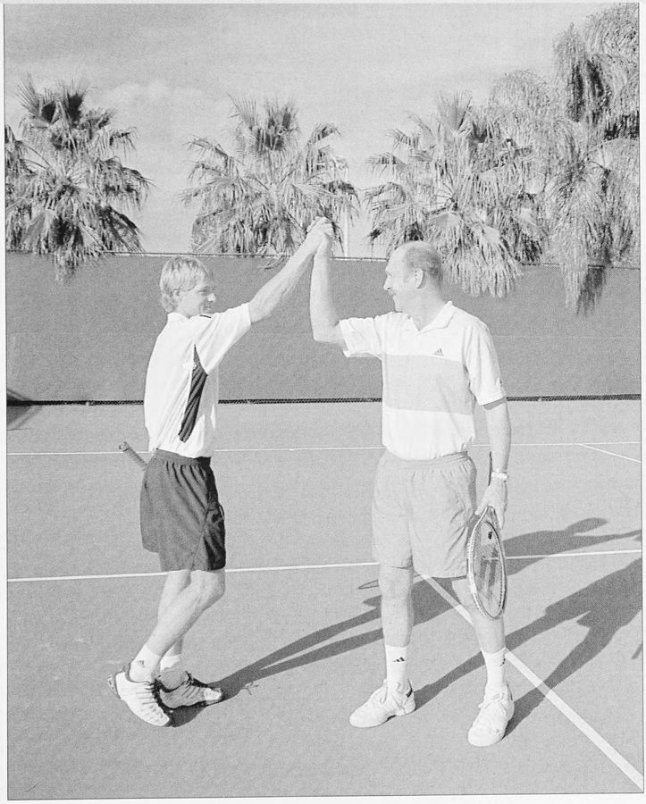
Khi John McEnroe đang ở điểm quyết định (match point) trước Ivan Lendl để giành chức vô địch Pháp mở rộng, anh ấy đã đánh hỏng một cú vô-lê dễ dàng mà anh sẽ không bao giờ quên.
When John McEnroe was at match point against Ivan Lendl to win the French Championships, he missed an easy volley that he will never forget.
Chrissie Evert từng nói rằng nếu tay cô ấy không đổ mồ hôi trước một trận đấu lớn, thì có lẽ cô ấy sẽ không chơi tốt như vậy. Ý ở đây là việc hồi hộp hay căng thẳng khi rơi vào những tình huống then chốt là điều bình thường. Điều mấu chốt là hiểu được điều gì xảy ra với bạn và tìm ra cách xử lý những tình huống đó tốt hơn.
Chrissie Evert used to say that if her hands didn’t get sweaty before a big match, then she probably wouldn’t play as well. The point here is that it is normal to get nervous or tense when you get into critical situations. The key is to understand what happens to you and to figure out how to handle those situations better.
Những lời động viên từ một người bạn cặp biết hỗ trợ có thể khơi dậy sự tự tin và làm dịu căng thẳng. Một cử chỉ ủng hộ, chẳng hạn cái đập tay chúc mừng mà bạn thấy tôi đang trao cho con trai mình, Ramsey, trong hình này, cũng có thể mang lại hiệu quả tương tự.
Encouraging words from a supportive partner can inspire confidence and calm nerves. A supportive gesture, such as the congratulatory high-five I’m shown here giving to my son, Ramsey, can have the same effect.
Tuy nhiên, một số tay vợt hồi hộp đến mức gần như không thể cử động chân, và khả năng di chuyển của họ bị ảnh hưởng. Số khác gần như không thể cử động tay, và họ mất đi lực đánh và độ xoáy. Hầu hết mọi người có xu hướng vội vàng và mắc những lỗi bất cẩn khi cố kết thúc điểm thật nhanh. Một vài người đánh quá mạnh và phung phí những cú đánh của mình khắp các hàng rào. Trong những tình huống căng thẳng, thay vào đó hãy thử dành thời gian của mình, đảm bảo rằng bạn vẫn tiếp tục thở, xác định một kế hoạch thi đấu phù hợp để trong đầu bạn còn ít nghi ngờ khi đánh bóng, và tự nói với mình những lời tích cực. Về kiểu người bạn cặp bạn nên chọn nếu bạn có xu hướng rất hồi hộp, hãy tìm một người tự tin và biết động viên trên sân. Chỉ riêng việc chơi đánh đôi thay vì đánh đơn cũng đã giúp bớt đi phần nào áp lực, và có một người bạn cặp luôn tích cực và đồng hành với bạn qua những tình huống căng thẳng sẽ thực sự làm nhẹ gánh nặng của bạn.
Some players get so nervous, though, that they can hardly move their legs, and their mobility suffers. Others can barely move their arms, and they lose power and spin. Most people tend to rush and make careless errors trying to get the point over with quickly. A few people overhit and spray their shots all over the fences. In tense situations try instead to take your time, make sure that you continue to breathe, determine an appropriate game plan so that there is limited doubt in your mind as you hit the ball, and give yourself some positive self-talk. As far as the type of partner you should pick if you tend to get very nervous, look for someone who is confident and encourag- ing on the court. Just playing doubles rather than singles should take some of the pressure off, and having a partner who will be positive and talk you through tight situations will really lighten your load.
Đánh Đôi Nam Nữ Tôi biết nói gì về đánh đôi nam nữ, ngoài việc đừng chơi kiểu đánh đó ư? Chỉ đùa thôi! Lối chơi này thực sự đặt ra một số thách thức độc đáo mà không hề tồn tại trong đánh đôi nam và đánh đôi nữ. Tôi sẽ nói cụ thể về một số điều này trong chương bàn về giao tiếp. Nhiều người chơi cùng vợ/chồng của mình và có những mối quan hệ tuyệt vời cả trên sân lẫn ngoài sân. Tôi từng chơi cùng vợ tôi, Margie, ở giải US National Championships hai lần trước khi chúng tôi kết hôn. Chúng tôi không thành công lắm, nhưng chúng tôi thấy vui. Tôi nghĩ lỗi là ở tôi khi chúng tôi không thắng; tôi đã chơi không tốt lắm. Đáng tiếc là chúng tôi chưa từng thi đấu cặp với nhau kể từ khi kết hôn, nhưng chúng tôi đã có hơn 25 năm hạnh phúc bên nhau.
Mixed Doubles What can | say about mixed doubles, except don’t play such a game? Just kidding! This game does present some unique challenges that do not exist in men’s doubles and women’s doubles. I'll talk specifically about some of these things in the chapter on communication. Many people do play with their spouses and have great relationships both on the court and off. | played with my wife Margie in the US National Championships twice before we were married.We didn't have great success, but we had fun.| think it was my fault that we didn’t win; | didn’t play very well. Unfortunately we have not competed as partners since we were married, but we have spent over 25 happy years together.
Chọn Bên Sân Của BạnPicking Your Side
Một vấn đề then chốt cần cân nhắc khi bạn xây dựng đội đánh đôi của mình là bạn thích chơi ở bên nào của sân, ô bên phải (deuce) hay ô bên trái (ad).
A key issue to think about as you construct your doubles team is which side of the court you prefer playing, the deuce or the ad side.
Nếu bạn thích chơi ở ô bên phải (deuce), bạn nên tìm một tay vợt thuận tay trái giỏi làm bạn cặp. Nhiều cặp đấu hay nhất qua các năm là những sự kết hợp giữa tay vợt thuận tay phải và thuận tay trái. Chỉ kể vài ví dụ về những đội này là Newcombe và Roche, McEnroe và Fleming, Woodbridge và Woodforde, cùng Navratilova và Shriver. Hầu như luôn luôn tay vợt thuận tay trái chơi ở ô bên trái (ad) để có thể dễ dàng đánh cú trả giao bóng hai và cú đánh thứ hai sau cú trả giao bóng bằng cú thuận tay.
If you like to play the deuce court, you should look fora great left-hander as a partner. Many of the best partnerships over the years have been right- hander and left-hander combinations. Just a few examples of these teams are Newcombe and Roche, McEnroe and Fleming, Woodbridge and Woodforde, and Navratilova and Shriver. Almost always the left-hander plays the ad side in order to hit the second serve return and the second shot after the return of serve more readily with the forehand.
Một cách tiếp cận phổ biến để xác định bên sân trong một đội đánh đôi là để tay vợt mạnh hơn chơi ở ô bên trái (ad), hay bên trái tay. Điều này là vì điểm quyết định (game point) nhiều khả năng sẽ xảy ra ở bên đó, và bạn muốn có cơ hội thắng điểm ấy tốt nhất đó. Vấn đề với kế hoạch này là bạn có thể không bao giờ chạm tới điểm quyết định nếu bạn không thắng được điểm từ ô bên phải (deuce). Lý do đằng sau việc để tay vợt mạnh hơn chơi ở ô bên trái (ad) không phải là tồi, nhưng còn một số yếu tố khác cần cân nhắc (xem bảng 1.3).
Acommon approach to determining sides ona doubles team is to have the stronger player play the ad, or backhand, side. This is because the game point is most likely to occur on that side, and you want your best chance to win that point. The problem with this plan is that you may not get to game pointif you don’t win points from the deuce side. The reason behind having the stronger player play the ad side is not bad, but there are some other factors to consider (see table 1.3).
Khi bạn đang cân nhắc có nên chơi cùng nhau hay không, điều quan trọng là phải hiểu rằng mỗi người trong hai bạn có thể cảm thấy thoải mái hơn khi chơi ở một bên sân so với bên kia. Một số tay vợt cảm thấy họ chỉ có thể chơi một bên và thậm chí không cân nhắc chơi bên còn lại. Nếu đúng như vậy, thì rõ ràng tay vợt ấy bị hạn chế trong việc chọn bạn cặp. Hiện nay hầu hết các tay vợt đều có một bên sân ưa thích nhưng cũng có thể chơi ở bên còn lại, mang lại cho đội một số lựa chọn về cách họ có thể phối hợp hiệu quả nhất.
When you are deciding whether to play together, it is important to understand that each of you may feel more comfortable playing one side of the court than the other. Some players feel that they can only play one side and would not even consider playing the other side. If this is the case, then obviously such a player is limited in selecting a partner. Now most players havea favorite side but are also able to play on the other side, giving the team some options as to how they might work together most effectively.
Những lý do khiến các tay vợt thích một bên sân cụ thể thường xoay quanh việc đâu là những cú đánh ưa thích của họ. Chẳng hạn, Bob Hewitt và Frew McMillan, một trong những đội hay nhất thời của họ, luôn chơi ở cùng một bên sân. Bob chơi ô bên phải (deuce), hay sân thứ nhất, còn Frew chơi ô bên trái (ad), hay sân thứ hai. Bob có một cú trả giao bóng trái tay đánh ngược trong (cú trái tay đánh từ ô bên phải (deuce) sẽ được đánh chéo sân) rất tốt, gần như anh ấy không bao giờ đánh hỏng. Đây là một trong những cú trả bóng khó đánh nhất, nên một tay vợt đánh tốt cú này rất quý giá cho đội và nên chơi ở ô bên phải (deuce).
The reasons players prefer a particular side usually revolve around what their favorite shots are. For example, Bob Hewitt and Frew McMillan, one of the best teams of their time, always played the same side of the court. Bob played the deuce side, or first court, and Frew played the ad side, or second court. Bob had a very good inside-out backhand (the backhand hit from the deuce court that would be hit cross court) return of serve, which he would almost never miss. Now this is one of the hardest returns to hit, so a player who hits this shot well is valuable to a team and should play the deuce side.
Frew đánh hai tay ở cả hai bên và rất hiệu quả trong việc đón sớm những cú giao bóng mạnh rồi đánh bóng xuống ngay dưới chân người giao bóng đang tiến lên. Anh ấy thường theo cú đánh lên lưới và bắt vô-lê ở cú tiếp theo. Tôi không thể kể hết số lần tôi bị trúng một trong những cú vô-lê hai tay của Frew vì rất khó đoán anh ấy đang đánh bóng đi đâu. Với hai tay trên cây vợt, anh ấy có thể đổi hướng bóng vào phút cuối. Chìa khóa để chơi đối đầu với anh ấy là giữ anh ấy phải vươn người để không phải lúc nào cũng có thể đặt cả hai tay lên cây vợt. Nhờ những điểm mạnh đặc biệt của mình, Bob và Frew hiệu quả nhất khi luôn chơi ở những bên sân ưa thích của họ.
Frew was two-handed on both sides and was very effective in taking the hard serve early and hitting it down at the incoming server’s feet. He would often follow the shot in and volley the next shot. I can’t tell you how many times I was hit by one of Frew’s two-handed volleys because it was so difficult to read where he was hitting the ball. With two hands on the racket, he could change the direction of the ball at the last minute. The key to playing against him was to keep him stretching so that he couldn’ t always get both hands on the racket. Because of their particular strengths, Bob and Frew were most effective playing their preferred sides all the time.
Một số tay vợt có cú thuận tay tuyệt vời đến mức bạn sẽ nghĩ họ luôn nên chơi ở ô bên phải (deuce), nhưng điều đó không nhất thiết đúng. Tôi từng thấy những đội chơi rất hiệu quả khi để tay vợt có cú thuận tay tốt hơn chơi ở ô bên trái (ad) và, ở cú đánh thứ hai hoặc cú trả giao bóng, né người vòng qua cú trái tay để đánh một cú thuận tay xoáy lên mạnh mẽ. Bob Lutz và tôi đã thua một đội như vậy ở trận chung kết Wimbledon năm 1980, đó là hai người Úc Paul McNamee và Peter McNamara. Paul rất nhanh và gần như lần nào cũng né người vòng qua cú giao bóng hai để có thể bổ bóng xuống ngay dưới chân chúng tôi bằng cú thuận tay.
Some players have such great forehands that you would think they should always play on the deuce side, but this isn’t necessarily the case. I have seen teams be very effective by having the player with the better forehand play the ad side and, on the second shot or return of serve, run around the backhand and hit a big, topspin forehand. Bob Lutz and I lost to sucha team in the 1980 finals at Wimbledon, Australians Paul McNamee and Peter McNamara. Paul was very quick and would run around the second serve almost every time so that he could dip that ball at our feet with the forehand.
Nếu chúng tôi giao bóng hiệu quả vào đúng bên trái tay của anh ấy, anh ấy sẽ cố đánh bóng thấp để chúng tôi phải bắt vô-lê lên cho anh ấy, tạo điều kiện cho anh ấy đánh cú thuận tay ở cú đánh thứ hai. Nếu chúng tôi lên quá sát lưới sau cú vô-lê đầu tiên, anh ấy có một cú lốp bóng xoáy lên thuận tay rất tốt mà anh ấy có thể vụt qua đầu chúng tôi.
If we did get the serve effectively to his backhand, he would try to hit it low so that we had to volley up to him, enabling him to hit the forehand on the second shot. If we got too close to the net after the first volley, he had a very good forehand topspin lob that he could zip over our heads.
Nếu đội của bạn là sự kết hợp thuận tay trái - thuận tay phải, như nhiều đội vĩ đại qua các năm, thì bạn có một lợi thế lớn. Trước tiên, đội kia luôn phải điều chỉnh để nhận một kiểu giao bóng khác nhau ở mỗi lượt giao
If your team is a lefty-righty combination, as many of the great teams over the years have been, then you have a big advantage. First of all, the other team always has to adjust to receiving a different type of serve each service
Bảng 1.3
Table 1.3
Bảng Kiểm Để Quyết Định Chơi Bên Nào thì có thể bạn phù hợp nhất để chơi...
Checklist for Deciding Which Side to Play then you may be best suited to play the...
Nếu bạn thuận tay phải và bạn ...
If you are right-handed and you ...
thích đánh cú trả thuận tay chéo sân ô bên phải (deuce) đặc biệt khi tấn công một cú giao bóng hai thích đánh cú thuận tay ngược ô bên trái (ad) đặc biệt khi tấn công cú giao bóng hai ô bên phải (deuce) có thể đánh cú trái tay ngược ô bên trái (ad) hoặc ô bên phải (deuce), tùy thuộc vào có thể lên lưới sau cú trả bóng tốt hơn từ một bên bạn đánh mỗi cú tốt đến đâu với một cú cắt bóng (chip) hoặc cú trả hung hăng muốn "điểm lớn"
like to hit the forehand return cross court deuce side especially when attacking a second serve like to hit the off-forehand especially when ad side attacking the second serve deuce side can hit the off-backhand ad or deuce side, depending on can come into the net behind the return better from one side with a chip return or aggressive return how well you hit each shot want the “big point”
hay điểm quyết định ô bên trái (ad) từ một vị trí tấn công, đánh cú đánh thứ hai (sau cú trả giao bóng) chéo sân tốt hơn từ bên thuận tay phải của bạn ô bên phải (deuce) từ một vị trí tấn công, đánh cú đánh thứ hai (sau cú trả giao bóng) tốt hơn từ bên trái của bạn ô bên trái (ad) từ một vị trí phòng ngự, đánh cú đánh thứ hai (sau cú trả giao bóng) tốt hơn từ bên phải của bạn ô bên phải (deuce) từ một vị trí phòng ngự, đánh cú đánh thứ hai (sau cú trả giao bóng) tốt hơn từ bên trái của bạn ô bên trái (ad) cướp bóng (poach) tốt hơn từ bên trái của bạn ô bên phải (deuce) cướp bóng (poach) tốt hơn từ bên phải của bạn ô bên trái (ad) điểm quyết định. Có lần quả giao bóng cong vào từ bên phải, lần khác nó trượt vào từ bên trái. Tiếp theo, cả hai tay vợt trong một đội thuận tay trái - thuận tay phải đều có cơ hội có những cú thuận tay ở phía ngoài, để bất kỳ quả bóng nào không bị đội kia đánh xuống giữa sân đều có thể được đánh bằng cú thuận tay. Điều này áp dụng cho cú trả giao bóng cũng như những quả bóng còn lại được đánh trong một pha bóng.
or game point ad side from an offensive position, hit the second shot (after the return of serve) cross court better from your right forehand side deuce side from an offensive position, hit the second shot (after the return of serve) better from your left side ad side from a defensive position, hit the second shot (after the return of serve) better from your right side deuce side from a defensive position, hit the second shot (after the return of serve) better from your left side ad side poach better from your left side deuce side poach better from your right side ad side game. One time the serve curves in from the right, and another time it slides in from the left. Next, both players ona lefty-righty team have the opportu- nity to have the forehands on the outside so that any ball that is not hit down the middle by the other team can be hit with a forehand. This applies to the return of serve as well as the rest of the balls that are hit during a rally.
Vì hầu hết các tay vợt đều lợi hại hơn với cú thuận tay, nên việc có thể đánh nhiều cú thuận tay hơn có thể là một lợi thế rất lớn. Bạn chỉ cần nhìn vào một vài đội vĩ đại để thấy rằng những sự kết hợp thuận tay trái - thuận tay phải là một số đội hay nhất từng bước lên sân. Hãy nhìn vào số danh hiệu Grand Slam của ba đội này: Newcombe-Roche với bốn chức vô địch Wimbledon cùng một chức vô địch Pháp và hai chức vô địch Úc, McEnroe-Fleming với bốn chức vô địch Wimbledon và thì có thể bạn tốt nhất Nếu bạn thuận tay trái và bạn...
Because most players are more lethal with the forehand, being able to hit more forehands can be a huge advantage. You have only to look at a few of the great teams to see that the lefty-righty combos were some of the best that ever stepped onto a court. Look at the Grand Slam titles of these three teams: Newcombe-Roche with four Wimbledon titles as well as one French and two Australian titles, McEnroe—Fleming with four Wimbledon titles and then you may be best If you are left-handed and you...
phù hợp để chơi...
suited to play the...
thích đánh cú trả thuận tay chéo sân đặc biệt khi tấn công một cú giao bóng hai ô bên trái (ad) thích đánh cú thuận tay ngược đặc biệt khi tấn công cú giao bóng hai ô bên phải (deuce) có thể lên lưới sau cú trả bóng tốt hơn từ bên phải với một cú cắt bóng (chip) hoặc ô bên trái (ad) hoặc ô bên phải (deuce), tùy thuộc cú trả hung hăng vào việc bạn đánh mỗi cú tốt đến đâu có thể lên lưới sau cú trả bóng tốt hơn từ ô bên trái (ad) hoặc ô bên phải (deuce), tùy thuộc bên trái với một cú cắt bóng (chip) hoặc cú trả hung hăng vào việc bạn đánh mỗi cú tốt đến đâu muốn "điểm lớn"
like to hit the forehand return cross court especially when attacking a second serve ad side like to hit the off-forehand especially when attacking the second serve deuce side can come into the net behind the return better from the right side with a chip return or ad or deuce side, depending aggressive return on how well you hit each shot can come into the net behind the return better from —_ ad or deuce side, depending the left side with a chip return or aggressive return on how well you hit each shot want the “big point”
hay điểm quyết định ô bên trái (ad) từ một vị trí tấn công, đánh cú đánh thứ hai (sau cú trả giao bóng) tốt hơn từ bên phải của bạn ô bên phải (deuce) từ một vị trí tấn công, đánh cú đánh thứ hai (sau cú trả giao bóng) tốt hơn từ bên thuận tay trái của bạn ô bên trái (ad) từ một vị trí phòng ngự, đánh cú đánh thứ hai (sau cú trả giao bóng) tốt hơn từ bên phải của bạn ô bên phải (deuce) từ một vị trí phòng ngự, đánh cú đánh thứ hai (sau cú trả giao bóng) tốt hơn từ bên trái của bạn ô bên trái (ad) cướp bóng (poach) tốt hơn từ bên trái của bạn ô bên phải (deuce) cướp bóng (poach) tốt hơn từ bên phải của bạn ô bên trái (ad) ba chức vô địch US Open, và Woodforde-Woodbridge với sáu chức vô địch Wimbledon (năm lần liên tiếp). Một đội người Mỹ khác, một cặp song sinh giống hệt nhau, Bob và Mike Bryan, chơi theo một cách từ năm 5 tuổi. Một năm sau khi chuyển sang chuyên nghiệp, họ đổi bên, và họ đã thành công hơn nhiều khi chơi theo cách đó (thuận tay trái ở ô bên trái (ad)). Việc đổi bên mang lại lợi thế của một cách tiếp cận mới mẻ; các tay vợt được lợi từ việc có một thử thách mới và thoát khỏi lối mòn của mình.
or game point ad side from an offensive position, hit the second shot (after the return of serve) better from your right side deuce side from an offensive position, hit the second shot (after the return of serve) better from your left forehand side ad side from a defensive position, hit the second shot (after the return of serve) better from your right side deuce side from a defensive position, hit the second shot (after the return of serve) better from your left side ad side poach better from your left side deuce side poach better from your right side ad side three US Open titles, and Woodforde—Woodbridge with six Wimbledon titles (five consecutive). Another American team, an identical-twin combo, Bob and Mike Bryan, played from age 5 one way. A year after they turned pro they changed sides, and they have been much more successful playing that way (left-handed on the ad side). Changing sides offers the advantage of a fresh approach; players benefit from having a new challenge and from getting out of their rut.
Tôi đã chơi ở ô bên phải (deuce), hay bên thuận tay, trong phần lớn sự nghiệp của mình. Bob Lutz và Erik van Dillen, những người tôi chơi cùng trong phần lớn sự nghiệp, hầu như luôn chơi ở ô bên trái (ad), hay bên trái tay. Tôi từng trêu Bob rằng bên trái tay dễ chơi hơn vì đánh cú trả giao bóng trái tay chéo sân tự nhiên hơn là đánh cú trái tay ngược.
Ihave played the deuce, or forehand, side for most of my career. Bob Lutz and Erik van Dillen, with whom I have played most of my career, have almost always played the ad, or backhand, side. I used to kid Bob that the backhand side was easier to play because it is more natural to hit the backhand return of serve cross court than to hit the off-backhand.
Cha Mẹ Chơi Cùng ConParent-Child Play
Hầu hết trẻ em bắt đầu chơi quần vợt vì cha mẹ chúng yêu thích môn này. Trong nhiều trường hợp, cha mẹ đưa con ra sân cho trải nghiệm đầu tiên, dù chỉ để xem cha mẹ chúng chơi. Cha mẹ của Ivan Lendl đưa anh ấy ra sân khi anh còn rất nhỏ và buộc anh vào một sợi dây thắt vào cột lưới trong khi họ chơi. Anh ấy kể rằng chẳng bao lâu sau anh muốn được tháo ra và tự mình thử chơi quần vợt. Tôi sẽ không khuyên bạn dùng cách giới thiệu đặc biệt này với con cái mình, nhưng tôi thực sự nghĩ rằng chơi quần vợt cùng con là một cách tuyệt vời để cho chúng thấy môn thể thao này có thể thú vị và vui vẻ đến nhường nào.
Most children start playing tennis because of their parents’interest inthe game. In many cases, parents will take children out to the court for their very first experience, even if it’s just to watch their parents play. Ivan Lendl’s parents brought him to the court when he was very young and put him ona leash that was hooked to the net post while they played.He says he soon wanted to get unattached and try playing tennis himself.| would not recommend that you use this particular method of introduction with your own offspring, but | do think that actually playing tennis with your children is a great way to show them how exciting and enjoyable the sport can be.
Khi trẻ lớn hơn và có hứng thú hơn với môn thể thao này, cả gia đình có thể chơi cùng nhau theo nhiều cách kết hợp khác nhau, chẳng hạn anh trai - em gái, mẹ - con gái, cha - con trai, v.v.
As children get older and develop greater interest in the game, the family can play together in a variety of combinations, such as brother-sister, mother— daughter, father-son, and so forth.
Khi bạn bắt đầu chơi cùng con, đương nhiên bạn sẽ là người chơi giỏi hơn và do đó phải dẫn dắt đội. Điều này có thể hơi khó xử, vì con bạn có thể không thích việc bạn suốt ngày bảo chúng phải làm gì.
When youstart playing with your child, you will naturally be the better player and will therefore have to lead the team. This can be a little tricky, because your child may not enjoy having you tell him or her what to do all the time.
Điều quan trọng là nói ít hơn một chút so với những tình huống cha mẹ - con cái khác, và tập trung vào việc hỗ trợ con như thể bạn đang chơi với một người bạn cặp người lớn. Cách tiếp cận này vui hơn cho cả hai bạn, và việc đối xử với nhau như những người bạn cặp sẽ khuyến khích bạn và con bạn chơi hết mình.
It is important to do alittle less talking than you would in other parent-child situations and to focus on being as supportive as you would be if you were playing with an adult partner. This approach is more fun for both of you,and treating each other as partners encourages you and your child to play your best.
Khi con bạn lớn hơn, bạn có thể thấy rằng vai trò đã đảo ngược.
As your child gets older, you may find that the roles are reversed.
Đứa trẻ có thể trở thành người chơi giỏi hơn. Tôi thấy sự phát triển này thực sự thú vị. Khi một đứa trẻ thực sự ngang tài trên sân, cả cha mẹ lẫn con đều có thể học hỏi lẫn nhau và tận hưởng cuộc so tài. Tôi từng có cơ hội chơi một số trận biểu diễn với các con trai và con gái của mình, và việc đó đã mang lại những trải nghiệm tuyệt vời.
The child may become the better player.| find this development to be really fun.When a youngster is truly an equal on the court, both the parent and child canlearn from one another and enjoy the battle. | have had the opportunity to play some exhibition matches with my sons and daughters, and doing so has resulted in some wonderful experiences.
Bọn trẻ cố gắng hết sức và mắc một số lỗi, cũng giống như những người bạn cặp người lớn, nên tôi khá im lặng và chơi theo cách của mình. Tôi thỉnh thoảng đưa ra vài lời khuyên, nhưng không nhiều hơn mức tôi sẽ dành cho một người bạn cặp khác. Giờ đây hai cậu con trai lớn nhất của tôi có thể tự đứng vững khi chúng tôi chơi cùng nhau. Thực tế, giờ chúng còn mạnh hơn tôi (nhưng đừng nói với chúng là tôi đã nói vậy nhé; tôi vẫn chưa thừa nhận điều này với chúng), và tôi phải nỗ lực nhiều để giữ phần việc của mình trong thỏa thuận này.
The kids try hard and make some mistakes, just like adult partners, so | keep pretty quiet and play my own game.| occasionally give some advice, but not much more than | would offer another partner. Now my oldest two boys can hold their own when we play together. In fact, they are now stronger than | am (don't tell them | said that, though; haven't yet admitted this to them), and | have to work hard to keep up my side of the deal.
Tôi khuyến khích bạn chơi quần vợt cùng con và, nếu có thể, cùng tham gia một số giải đấu. Hoạt động này sẽ giữ bạn trẻ trung, củng cố mối quan hệ của bạn với con cái, và cho bạn điều để trò chuyện trong nhiều năm tới.
| encourage you to play tennis with your children and, if possible, to getinto some competitions together. This activity will keep you young, strengthen your relationship with your kids, and give you something to talk about for _ years to come.
Nhưng Bob cũng có thể chơi ở ô bên phải (deuce). Anh ấy thích đánh cú trái tay ngược từ ô bên phải (deuce), và đương nhiên anh ấy có cú thuận tay chéo sân tốt hơn nhờ cách cầm vợt kiểu lục địa (continental) của mình. Ngoài ra, cú đánh thứ hai tốt hơn cho cú thuận tay của anh ấy vì anh có nhiều lựa chọn hơn: góc chéo sân ngắn, cú đánh thẳng mạnh xuống giữa sân, hoặc một cú đánh muộn một chút dọc biên. Bob cũng có nhiều cơ hội hơn để đánh cú lốp bóng xoáy lên ở cú đánh thứ hai sau cú trả giao bóng. Khi tôi chơi ở ô bên trái (ad), tôi đánh cú trả bóng trái tay đánh thẳng tốt hơn, và tôi có thể cắt bóng (chip) khi trả rồi lên lưới dễ dàng hơn. Sau một chút luyện tập, tôi có thể đánh cú thuận tay ngược khá tốt khi có thời gian. Tôi không giỏi bằng trong việc đánh cú đánh thứ hai từ bên đó.
But Bob could also play the deuce side. He enjoyed hitting the off- backhand from the deuce side, and naturally he had a better cross-court forehand because of his continental grip. Also, the second shot was better for his forehand because he had more options: the short cross-court angle, the hard drive down the middle, or a little late hit down the line. Bob also had more opportunities to hit the topspin lob on the second shot after the return of serve. When I played the ad side, I hit the backhand drive return better, and I could chip the return and come to the net more easily. After a little practice I could hit the off-forehand pretty well when I had time. I wasn’t as good at hitting the second shot from that side.
Giờ đây, một khi bạn đã quyết định muốn chơi ở bên nào, hãy nhận ra rằng đó không phải là một quyết định không thể thay đổi. Bạn có thể trải qua một giai đoạn với người bạn cặp quen thuộc mà bạn đang chật vật và đơn giản là không thể thắng những trận đấu sít sao. Bạn có thể thấy hơi chán với bên sân mình đang chơi và nhận ra rằng cặp đấu của bạn cần một sự thay đổi. Lutz và tôi đã trải qua giai đoạn này vào năm 1979. Chúng tôi đã vô địch US Open năm trước đó nhưng chơi không tốt trước thềm giải đấu năm ấy, nên chúng tôi quyết định đổi bên. Chúng tôi chơi tốt ở những bên sân mới, thích sự thay đổi, và vào được chung kết, nơi chúng tôi thua sít sao trước McEnroe và Fleming. Năm sau chúng tôi trở lại đội hình thường lệ và trả được món nợ trước chính đội đó ở chung kết. Bài học của câu chuyện là đừng sợ đổi bên và thử chơi theo cách khác.
Now, once you decide which side you want to play, realize that it is not an irrevocable decision. You may go through a period with your regular partner when you are struggling and are just not able to win the close matches. You may geta little bored with the side that you’re playing and find that your partnership needs a change. Lutz and I went through this stage in 1979. We had won the US Open the year before but were not playing well leading up to that year’s competition so we decided to switch sides. We played well on our new sides, enjoyed the change, and got to the finals, where we lost a close match to McEnroe and Fleming. The next year we went back to our normal formation and got some revenge against that same team in the finals. The moral of the story is not to be afraid to change sides and try playing the other way.
Tôi đoán phép thử tối hậu để biết tay vợt nào là người bạn cặp tốt nhất cho bạn chính là kinh nghiệm. Tôi từng thấy những cặp đôi kỳ lạ mà không ai có thể ngờ lại phù hợp với nhau, họ đã phối hợp tốt với nhau, có vẻ thích thú khi ở bên nhau trên sân, và đã rất thành công.
I guess the ultimate test of which player is the best partner for you is experience. I have seen some odd couples out there that no one would ever have guessed would be right for each other who have worked well together, have seemed to enjoy each other’s company on the court, and have been very successful.
Cân Nhắc Mặt Sân Thi ĐấuConsidering the Surface of Play
Một trong những điều thú vị về quần vợt là có rất nhiều loại mặt sân khác nhau làm thay đổi trận đấu một cách đáng kể. Những mặt sân cơ bản là sân cứng, sân đất nện, sân cỏ và thảm trong nhà. Ngay cả những mặt sân trong cùng một loại cũng có thể khác nhau đôi chút, tùy thuộc vào lớp mặt trên. Chẳng hạn, sân cứng có thể trải dài từ loại xi măng trơn, bóng đi rất nhanh đến những hỗn hợp rải trên nhựa đường khiến bóng đi rất chậm. Sân đất nện ở châu Âu thường chậm hơn và bóng nảy thấp hơn so với sân đất nện ở Hoa Kỳ. Đặc tính thi đấu của sân trong nhà thường phụ thuộc vào tấm thảm được trải trên mặt sân hiện có; nếu một sân trong nhà có mặt sân cứng hoặc đất nện cố định thì nó sẽ chơi giống sân ngoài trời hơn. Sân cỏ tất nhiên biến đổi ít nhất, nhưng sẽ chơi khác đi nếu được lu lèn rất chặt so với khi mềm.
One of the interesting things about tennis is that there are many different types of surfaces that dramatically alter the game. The basic surfaces are hard courts, clay, grass, and indoor carpets. Even surfaces within the same category can vary slightly, depending on the top surface. For example, hard courts can range from very fast-playing, slick cement to very slow-playing mixtures of top surface over asphalt. Clay courts in Europe are usually slower and lower bouncing than clay courts in the United States. The playing qualities of indoor courts typically depend on the carpet that is laid on the existing surface; if an indoor court has a permanent hard or clay surface it will play more like an outdoor court. Grass varies the least, of course, but plays differently if it is rolled very hard than if it is soft.
Nhìn chung, mặt sân thi đấu ảnh hưởng đến đánh đôi ít hơn so với đánh đơn vì bản thân lối chơi đơn biến đổi nhiều hơn hẳn so với đánh đôi. Trong đánh đôi, những đội giỏi cố gắng giao bóng rồi lên lưới mỗi lần sau giao bóng một và giao bóng hai, trong khi ở đánh đơn, một tay vợt ở lại phía sau nhiều hơn sau khi giao bóng trên sân đất nện hoặc sân cứng chậm so với trên sân cứng nhanh hoặc sân cỏ. Dù vậy, khi chơi trên sân đất nện, đội trả giao bóng sẽ có thể trả bóng tốt hơn trên mặt sân chậm vì họ có thêm một tích tắc để phản ứng. Điều này khiến việc giao bóng tốt hơn và bắt vô-lê chính xác hơn trở nên đặc biệt quan trọng. Ngoài ra, vì đất nện có lớp mặt trên tơi xốp, việc di chuyển khó khăn hơn, đặc biệt với những tay vợt chưa quen hoặc những tay vợt đánh quá nhiều cú khi mất thăng bằng.
Generally, the playing surface affects doubles less than singles because the style of singles play itself varies much more than in doubles. In doubles, good teams try toserve and volley every time after the first serve and second serve, whereas in singles a player stays back more after a serve on a clay court or a slow, hard court than ona fast, hard court or grass court. Having said that, when playing on clay the return of serve team will be able to return better on a slow surface because they will have a split second more time to react. This puts a premium on serving better and volleying more accurately. Also, since clay has a loose top surface, movement is more difficult, especially for players who are not used to it or for players who hit too many shots when they are off balance.
Những tay vợt giỏi tận dụng những mặt sân chậm bằng cách ở lại phía sau khi trả giao bóng và bằng cách buộc đối thủ phải đánh nhiều cú vô-lê hơn và nhiều cú đập bóng trên cao (smash) hơn. Họ sẽ đánh lốp bóng từ cú trả giao bóng và dùng lốp bóng mỗi khi gặp khó khăn trong một pha bóng. Lý do cho chiến lược này là đối thủ khó dứt điểm cú đập bóng trên cao hơn trên một mặt sân chậm như sân đất nện.
Good players take advantage of slower surfaces by staying back on the return of serve and by making their opponents hit more volleys and more overheads. They will hit lobs off the return of serve and use the lob whenever they are in trouble during a rally. The reason for this strategy is that it is harder for opponents to put the overhead away ona slower court such as a clay court.
Mặt khác, bạn sẽ không thấy những tay vợt chơi trên sân cỏ ở lại khu vực cuối sân quá lâu vì họ không bao giờ biết khi nào sẽ gặp một cú nảy bóng bất thường trên sân. Những người giao bóng cố gắng giao bóng rồi lên lưới ở mọi cú giao bóng, còn những người trả giao bóng sẽ cố gắng chiếm lưới càng sớm càng tốt trong pha bóng.
On the other hand, you will not see players who are playing on grass stay in the back court too long because they never know when they will get a bad bounce on the court. The servers try to serve and volley every serve, and those returning serve will try to take the net as soon as possible during the rally.
2. Giao Tiếp Cùng Bạn Cặp
Ưu thế lớn của đánh đôi so với đánh đơn là ở chỗ trong đánh đôi bạn phối hợp cùng bạn cặp của mình. Bạn không phải một mình ngoài sân cố gắng chiến đấu và tìm cách xoay xở khi tình thế trở nên xấu đi. Tình huống lý tưởng là khi bạn và bạn cặp thi đấu như một người và mỗi người luôn biết chính xác người kia đang nghĩ gì. Trong trạng thái lý tưởng đó, bạn có thể đoán trước từng cú đánh và phản ứng theo cách tận dụng được mọi cú đánh.
The great advantage of doubles play over singles is that in doubles you are working together with your partner. You are not out there on your own trying to fight the battle and figure out what to do if things go south. The ideal situation is one in which you and your partner play as one and each of you knows exactly what the other is thinking all the time. In this ideal mode you can anticipate each shot and react in such a way as to take advantage of every shot.
Đáng tiếc thay, lý tưởng chỉ là lý tưởng. Trong thực tế, cần rất nhiều sự giao tiếp để thực sự biết bạn cặp của mình có khả năng làm gì trong từng tình huống trên sân. Ngay cả khi bạn và bạn cặp hiểu nhau rất rõ, bạn không phải lúc nào cũng đánh được cú đánh mà mình nên đánh hay chơi tốt như mình mong muốn. Trong chương này, tôi trình bày cách bạn có thể nâng cao khả năng giao tiếp trong đội trước, trong và sau trận đấu để cải thiện lối đánh đôi của bạn. Có rất nhiều việc bạn có thể làm để giúp đội của mình chơi tốt hơn và tận hưởng trải nghiệm này nhiều hơn cả hiện tại.
Unfortunately, the ideal is just that. In the real world it takes a lot of communication to really know what your partner is likely to do in each and every situation on the court. Evenif you do understand each other very well, you don’t always hit the shot that you should or play as well as you would like. In this chapter I cover how you can enhance team communication before, during, and after matches to improve your doubles game. There is a great deal that you can do to enable your team to play better and to enjoy the experience even more than you do now.
Trước Trận ĐấuBefore the Match
Giao tiếp hiệu quả không bắt đầu khi trận đấu bắt đầu mà là trước trận đấu, trong các buổi tập và ngoài sân; sự khởi đầu sớm này sẽ khiến việc giao tiếp trên sân của bạn rõ ràng và hiệu quả hơn. Cách bạn giao tiếp là một chuyện, còn điều bạn trao đổi lại là chuyện khác. Bạn sẽ muốn bàn bạc kỹ lưỡng những chiến thuật cụ thể mà mình có thể dùng để đối phó với đối thủ và trao đổi cảm nhận của mình về những tình huống có thể xảy ra trong một trận đấu cụ thể.
Effective communication does not start as a match starts but before the match, in practice sessions, and off the court; this head start will make your on-the-court communication clearer and more effective. How you communi- cate is one thing, and what you discuss is another. You will want to talk through specific strategies you might want to use against your opponents and discuss how you feel about situations that could come up during a particular match.
Khi thi đấu với hầu hết các đội, bạn nên chuẩn bị vài phương án khác nhau để chuyển sang nếu kế hoạch ban đầu không đạt hiệu quả như mong muốn. Hãy cởi mở với bạn cặp và cùng nhau phân tích xem có nên thay đổi hay không. Một trong hai người có thể nói: “Được rồi, tôi trả giao bóng không tốt như tôi mong đợi, vậy khi tôi trả giao bóng một thì cả hai ta cùng lùi về vạch cuối sân và xem liệu có thể kéo dài được nhiều pha bóng hơn không.” Bạn có thể trao đổi về những thay đổi chiến thuật hoặc gợi ý về kỹ thuật như: “Thử đưa vợt ra sau nhanh hơn khi trả giao bóng xem,” hoặc bạn có thể chia sẻ cảm giác của mình. Có thể bạn đang cảm thấy nhanh nhẹn và muốn cướp bóng (poach) nhiều hơn, hoặc bạn không tự tin về việc giao bóng rồi lên lưới ở giao bóng hai và thích lùi lại khi giao bóng hai hơn. Hãy trao đổi về cách bạn nghĩ đối thủ đang chơi và điều đội của bạn có thể làm để tận dụng lối chơi của họ. Có thể bạn chỉ muốn động viên bạn cặp hoặc giúp người ấy thư giãn. Một câu nói đơn giản như: “Trận này vui thật, phải không?” hay “Đây chính là ý nghĩa của cuộc chơi, ta xông lên thôi!” có thể giúp đội bạn vượt qua một tình huống căng thẳng.
When playing against most teams, you should prepare a couple different plans to switch to if your original game plan is not working as well as you would like. Be open with your partner and work together to analyze whether or not to implement a change. One of you may say, “OK, I am not returning serve as well as I had hoped, so let’s both stay back when I am returning the first serve and see if we can get into more points.” You may communicate strategy changes or suggestions in technique such as, “Try getting your racket back quicker on the return of serve,” or you may communicate how you are feeling. You may be feeling quick and want to poach more, or you may not feel confident about serving and volleying on your second serve and prefer to stay back on the second serve. Communicate how you think the opponents are playing and what your team can do to take advantage of their type of play. You may just want to encourage your partner or to help him or her relax. A simple comment such as, “Isn’t this fun?” or “This is what it is all about, let’s go for it!” may help your team through a tight situation.
Đánh Giá Điểm Mạnh và Điểm Yếu của Đội Bạn Khi hai người chơi cùng nhau, những điểm mạnh và điểm yếu riêng của họ có thể kết hợp lại để tạo thành một đội vững chắc. Mặt khác, họ có thể có nhiều điểm yếu giống nhau và do đó rất dễ bị tổn thương ở những khu vực đó khi thi đấu với tư cách một đội. Tình huống lý tưởng xảy ra khi một người chơi ổn định nhưng chậm hơn, còn người kia đánh bóng liều lĩnh hơn nhưng nhanh nhẹn; khi đó người nhanh hơn có thể cướp bóng (poach) rất nhiều và tận dụng những cú đánh tốt của bạn cặp. Hãy trao đổi với bạn cặp về việc mỗi người có thể đóng góp gì cho đội.
Evaluate Your Team’s Strengths and Weaknesses When two players get together, their individual strengths and weaknesses may combine to make a solid team. On the other hand, they may have many of the same weaknesses and therefore be very vulnerable in those areas as a team. An ideal situation occurs when one player is consistent, but slower, while the other is wilder in hitting shots, but quick; then the quicker one can poach a lot and take advantage of his partner’s good shots. Talk with your partner about how each of you can contribute to the team.
Sau khi đã quyết định chơi cùng nhau, hãy dành thời gian bàn bạc xem hai bạn có thể trở thành đội mạnh nhất có thể như thế nào. Hãy nói về những điểm mạnh và điểm yếu riêng mà bạn đã đánh giá ở chương 1 và cách chúng có thể ăn khớp để mang lại lợi thế chung. Việc phân tích từng khu vực cụ thể của trận đấu sẽ cho bạn ý niệm rõ ràng về vị trí hiện tại của mình và nơi mình có thể tiến bộ.
Once you have decided to play together, spend some time discussing how you can be the best team possible. Talk about the individual strengths and weaknesses you assessed in chapter 1 and how they can mesh to your collective advantage. Analyzing the specific areas of the game one by one will give you a good idea of where you stand and where you can improve.
Bảng 2.1:
Table21
Phân TíchAnalyzing
Trò Chơi — Khu vực của trận đấu / Cần tìm kiếm điều gì: Giao bóng—giao bóng một: Tốc độ, Xoáy, Điểm rơi, Tỷ lệ vào sân; Giao bóng—giao bóng hai: Khả năng tấn công của cú giao bóng, Xu hướng đánh hỏng hai lần liên tiếp (double-fault), Khả năng kiểm soát điểm rơi, Việc sử dụng xoáy; Vô-lê: Khả năng lên lưới nhanh, Khả năng kiểm soát cú vô-lê, Những pha trao đổi vô-lê nhanh, Chất lượng di chuyển ở lưới khi thi đấu theo cặp, Khả năng lùi về tốt để đập bóng trên cao (smash); Trả giao bóng: Khả năng đưa bóng trả vào cuộc, Khả năng tấn công giao bóng hai, Khả năng tận dụng cú trả giao bóng tốt của bạn cặp bằng cách cướp bóng (poach), Khả năng lên lưới sau cú trả giao bóng; Hỗ trợ: Sự giúp đỡ và động viên bạn cặp, Thái độ tích cực, Phong thái bình tĩnh, Khả năng nghĩ đến việc thay đổi, Sự thích thú với cuộc chiến; Phòng thủ: Khả năng lốp bóng, Khả năng giảm lực bóng, Khả năng phản xạ với những cú đánh mạnh, Khả năng đuổi theo bóng. Có vài cách khác nhau để xem xét lại thông tin này.
the Game Area of the game What to look for Serving—first serve Speed Spin Placement Percentage in Serving—second serve Offensive delivery Tendency to double-fault Ability to control placement Use of spin Volleying Ability to get in fast Ability to control volley Quick volley exchanges Quality of movement at the net as a team Ability to get back well for overheads Return of serve Ability to get returns in play Ability to attack second serves Ability to take advantage of partner's good return by poaching Ability to come to the net after the return Support Help and encouragement of partner Positive attitude Calm demeanor Ability to think about changes Enjoyment of battle Defense Ability to lob Ability to take pace off the ball Ability to reflex hard shots Ability to run the ball down There are a couple different ways to go about reviewing this information.
Một cách để làm rõ suy nghĩ của mình là bạn và bạn cặp hãy viết ra ý kiến của mình về những điểm mạnh và điểm yếu trong lối chơi của cả hai người. Bạn có thể dùng bảng kiểm trong bảng 2.1 làm kim chỉ nam. Việc làm theo quy trình này sẽ buộc cả hai bạn phải suy nghĩ thấu đáo một cách cẩn thận và có tổ chức. Nếu bạn và bạn cặp không đồng ý với nhau về điểm mạnh và điểm yếu của từng người, thì cả hai nên thực hiện lại quy trình này. Những suy nghĩ của bạn về cách mình chơi có thể không hoàn toàn chính xác hoặc không khớp với suy nghĩ của bạn cặp. Việc thảo luận một cách khách quan về những phẩm chất của mỗi người luôn mang lại hiểu biết mới và nhìn chung rất hữu ích. Điều quan trọng là phải trung thực với nhau cũng như cởi mở với ý kiến đóng góp của bạn cặp, để cả hai đều có thể hưởng lợi từ những phản hồi mà mình nhận được.
One way to clarify your thoughts is for you and your partner to write down your opinions on the strengths and weaknesses of both of your games. You can use the checklist provided in table 2.1 as a guide. Following this process will force both of you to think things through in a careful and organized manner. If your partner and you don’t agree on what your respective strengths and weaknesses are, then you should both go through the process again. Your thoughts about how you play may not be entirely accurate or in line with those of your partner. Objectively discussing your respective attributes is always enlightening and generally very helpful. It is important to be honest with each other as well as open to your partner’s input so that both of you can benefit from the feedback you get.
Trong cuộc thảo luận này, điều then chốt là không được coi những nhận xét của nhau về lối chơi của mình là chuyện cá nhân. Những nhận xét này không liên quan gì đến việc bạn là người tốt hay người xấu. Chúng chỉ liên quan đến cách bạn chơi môn thể thao này. Nếu bạn quá nhạy cảm với những ý kiến đó, điều đó cho thấy giá trị bản thân của bạn đang gắn quá chặt với trình độ chơi bóng của mình. Đó là vấn đề bạn phải giải quyết nếu muốn cải thiện kỹ năng quần vợt, lối đánh đôi và giá trị bản thân của mình. Khi bạn và bạn cặp đã vượt qua mọi khác biệt quan điểm, các bạn đang trên đường xây dựng một mối quan hệ hiệu quả và đạt tới tiềm năng của mình với tư cách một đội.
During this discussion, it is critical not to take each other’s comments about your games personally. These comments have nothing to do with whether you are a good person or a bad person. They relate only to how you play the game. If you are overly sensitive to these opinions, it indicates that your self-worth is tied a little too closely to the level of your game. That is a problem you must resolve if you wish to improve your tennis skills, your doubles game, and your self-worth. Once you and your partner get over any differences of opinion, you are on your way to forming a productive relationship and to reaching your potential as a team.
Một cách khác để đi đến đồng thuận về điểm mạnh và điểm yếu riêng của mỗi người là chỉ cần trao đổi miệng mà không cần viết ra giấy. Một số người cảm thấy thoải mái hơn khi làm như vậy vì với họ, giải thích suy nghĩ của mình qua trò chuyện dễ hơn là cố gắng đặt bút xuống viết.
Another way to reach a consensus of your individual strengths and weaknesses is to just talk through them without writing them down. Some people feel more comfortable doing this because it is easier for them to try to explain their thoughts conversationally than to try to put pen to paper.
Điều quan trọng là hai bạn thực sự rõ ràng với nhau để không có sự hiểu lầm hay những kỳ vọng không được nói ra. Cũng như ở những lĩnh vực khác của cuộc sống, kỳ vọng càng gần với thực tế thì về lâu dài mọi người càng cảm thấy thoải mái.
The important thing is that you are really clear with each other so that there are no misunderstandings or unvoiced expectations. As in other areas of life, the closer the expectations are to reality, the more comfortable everyone will feel in the long run.
Dù bạn có bàn bạc bao nhiêu đi nữa trước khi bắt đầu mối quan hệ đồng đội này, vẫn sẽ có những điểm cần được xem lại và cải thiện trong quá trình hai bạn sát cánh thi đấu.
No matter how much discussion you have before you commence your partnership, there will be areas of understanding that need to be revised and improved as you compete side by side.
Mỗi người chơi có thể có ý kiến riêng về mức độ giao tiếp và vận hành của đội, và một huấn luyện viên có thể có ý kiến khác dựa trên những gì người đó nhìn thấy và nghe thấy trong trận đấu. Một huấn luyện viên giỏi có thể giúp một đội hiểu được đâu là điều thường được kỳ vọng, nhưng tính cách của các tay vợt sẽ quyết định mức độ và kiểu giao tiếp lý tưởng cho đội của họ. Nếu bạn không thấy vui khi chơi với một tay vợt nào đó, có thể là một trong hai người đang có những kỳ vọng không được đáp ứng. Cách tốt nhất để đánh giá hiệu quả giao tiếp của đội bạn là ngồi lại với bạn cặp và một huấn luyện viên, rồi nói rõ những kỳ vọng của mình. Dựa trên thông tin đó, huấn luyện viên có thể đưa ra một số định hướng và làm việc với các tay vợt để tìm ra liệu có những khác biệt không thể hòa giải hay chỉ là những vấn đề có thể giải quyết bằng một chút điều chỉnh hành vi.
Each player may have opinions about how well the team is communicat- ing and functioning, and a coach may have a different opinion based on what he or she is seeing and hearing during a match. A good coach can help a team understand what is generally expected, but the players’ personalities will determine the ideal amount and type of communication that is best for their team. If you are not enjoying playing with a certain player, it may be that one of you has expectations that are not being met. The best way to evaluate the effectiveness of your team’s communication is to sit down with your partner and acoachand spell out what your expectations are. Based on this information, the coach can offer some direction and can work with the players to discover whether there are irreconcilable differences or merely issues that can be resolved with some modification of behavior.
Việc thảo luận như vậy với bạn cặp không chỉ là một việc làm một lần.
Having this discussion with your partner isn’t just a one-time exercise.
Những đội giỏi liên tục đánh giá lối chơi của mình theo định kỳ. Tôi gợi ý bạn tận dụng một khoảng nghỉ hợp lý trong mùa giải hoặc lịch thi đấu giải để dùng bảng kiểm và đánh giá lại xem mọi việc đang diễn ra thế nào. Nếu bạn đang thi đấu ở một giải đồng đội, sẽ có những mốc giữa mùa và những kỳ nghỉ giữa các mùa; đó là những thời điểm hợp lý để đánh giá lại lối chơi đồng đội của bạn.
Good teams continue to evaluate their games periodically. lsuggest that you take advantage of a logical break in your season or tournament schedule to use the checklist and reevaluate how things are going. If you are ina league competition, there are halfway points and breaks between seasons; these are logical times to reevaluate your team play.
Đặt Ra Mục Tiêu Bạn và bạn cặp có thể cùng nhau đặt ra các mục tiêu để giúp cả hai có động lực cải thiện những điểm yếu và cả những điểm mạnh của mình. Những mục tiêu này cần cụ thể, có thể đo lường và thực tế. Dưới đây là danh sách những mục tiêu khả thi:
Set Goals You and your partner can set goals together to help motivate both of you to improve your areas of weakness and even your strengths. These goals should be specific, measurable, and realistic. Here is a list of possible goals:
• Giành tỷ lệ phần trăm điểm giao bóng một cao hơn khi giao bóng hoặc khi trả giao bóng • Giành tỷ lệ phần trăm điểm giao bóng hai cao hơn khi giao bóng hoặc khi trả giao bóng • Giữ được tỷ lệ trả giao bóng vào cuộc cao hơn • Lên lưới nhanh hơn và nhờ đó tăng tỷ lệ vô-lê so với bán vô-lê • Giao bóng đa dạng hơn (lực, xoáy, điểm rơi và vị trí xuất phát) • Thắng nhiều điểm hơn ở lưới • Cướp bóng (poach) thường xuyên hơn • Thử những đội hình khác nhau trên sân • Động viên nhau nhiều hơn. Bob Lutz và tôi chơi tốt hơn khi chúng tôi di chuyển ở lưới và trao đổi ý định của mình với nhau. Đội trưởng Davis Cup của chúng tôi thường thách chúng tôi nói chuyện với nhau trước mỗi điểm. Chúng tôi làm điều đó ngày càng tốt hơn, và kết quả chung của chúng tôi cũng được cải thiện.
° To wina higher percentage of first serve points when serving or when returning serve * To win a higher percentage of second serve points when serving or when returning serve e To keep a higher percentage of return of serves in play ° To get to the net faster and thus increase your percentage of volleys to half-volleys e To hit a greater variety of serves (pace, spin, placement, and starting position) e To win more points at the net ¢ To poach more often ¢ To try different on-court formations ¢ To encourage each other more Bob Lutz and I played better when we moved at the net and communi- cated our intentions. Our Davis Cup captain would challenge us to talk to each other before each point. We got better at doing that, and our overall results improved.
Viết ra các mục tiêu của mình là điều tốt vì nhiều lý do. Thứ nhất, bạn sẽ không quên chúng nếu chúng được ghi ra giấy và bạn có thể dễ dàng xem lại. Chính hành động viết chúng ra cũng giúp đảm bảo rằng cả hai bạn sẽ nhắc nhở nhau phải có trách nhiệm. Mỗi khi cảm thấy hơi nản lòng, việc nhìn lại và ghi nhớ cam kết chung của hai người với những mục tiêu đó sẽ thôi thúc bạn tiếp tục nỗ lực hết mình để đạt được chúng.
It is good to write down your goals for several reasons. First, you will not forget them if they are listed on paper and you can refer to them easily. The very act of writing them down helps to ensure that you will both hold one another accountable. Whenever you feel a little discouraged, looking at and remembering your joint commitment to those goals will motivate you to keep pushing hard to attain them.
Sau khi đã đặt ra mục tiêu, bạn có thể nghĩ ra những bài tập mà bạn có thể thực hiện một mình hoặc theo nhóm để giúp mình đạt được những mục tiêu đó. Ví dụ, nếu bạn cảm thấy mình cần biến cú trả giao bóng hai bằng thuận tay thành một thứ vũ khí lợi hại hơn, hãy nhờ bạn cặp giao bóng hai cho bạn, rồi bạn có thể di chuyển và đánh nhiều cú trả thuận tay hơn về phía anh ấy khi anh ấy lên lưới. Anh ấy có thể tập cú giao bóng và cú vô-lê đầu tiên trong khi bạn tập đánh những cú trả thuận tay mạnh mẽ. Hãy thường xuyên nhắc lại những mục tiêu cụ thể và có thể đo lường của mình để theo dõi tiến độ. Các bài tập luyện rất hữu ích, nhưng cuối cùng, tiến bộ được đo bằng việc bạn thể hiện tốt đến đâu trong lúc căng thẳng của cuộc chiến; dù bạn có giả vờ rằng mình đang chơi trong một trận đấu lớn đến đâu đi nữa, tập luyện vẫn không giống như thi đấu thật.
Once you have set your goals you can devise exercises that you can do individually or as a team to help you reach those goals. For example, if you feel that youneed to make your forehand return of serve off the second serve more of a weapon, have your partner hit second serves to you and then you can move around and hit more forehand returns at him as he comes to the net. He can work on his serve and first volley while you work on hitting hard-driving forehand returns. Refer often to your specific and measurable goals so that you can monitor your progress. Practice drills are helpful, but ultimately, progress is measured by how well you perform during the heat of battle; no matter how much you pretend that you are playing in a big match, practice is not the same as the real thing.
Xây Dựng Triết Lý Hay Phong Cách của ĐộiDevelop a Team Philosophy or Style
Mỗi cặp đôi giỏi đều xây dựng một cá tính đội phản ánh triết lý thi đấu mà họ tin tưởng. Bằng cách suy nghĩ về cách bạn muốn tiếp cận môn đánh đôi—triết lý của đội bạn—bạn có thể xác định phong cách thi đấu phù hợp nhất với đội mình. Phong cách của bạn nên dựa trên lối chơi quần vợt theo xác suất và tận dụng tối đa điểm mạnh của đội cùng
Each good tandem develops a team personality that reflects the team philosophy they believe in. By thinking about the way you want to approach the game of doubles—your team philosophy—you can identify the style of play that is best for your team. Your style should be based on playing high- percentage tennis and making the most of your team’s strengths and
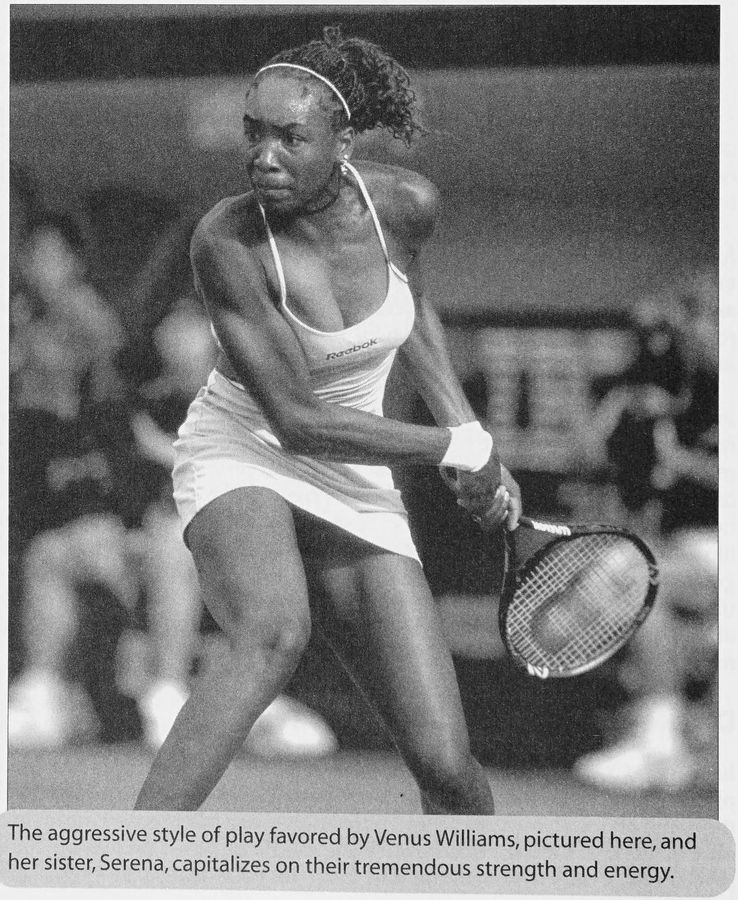
những điểm yếu. Lối chơi theo xác suất bao gồm việc chọn cú đánh có khả năng thành công cao nhất trong mỗi tình huống. Tuy nhiên, chơi theo xác suất không có nghĩa là bạn sẽ luôn thắng điểm. Thường thì cú đánh mà phong cách này chỉ ra không phải là cú đánh hấp dẫn hay thử thách nhất có thể, nhưng đó là cú đánh giúp vô hiệu hóa tình thế hoặc tạo đà để bạn thắng điểm trong phần lớn trường hợp.
weaknesses. High-percentage tennis involves selecting the shot in each situation that has the greatest likelihood of success. Playing the percentages doesn’t mean that you will always win the point, however. Often the shot indicated by this style is not the most exciting or challenging shot possible, but it is the shot that will neutralize the point or set you up to win the point most of the time.
Bob Lutz và tôi đã quyết định ngay từ đầu rằng chúng tôi sẽ là những tay vợt tấn công và sẽ cố gắng chiếm lưới khỏi đối thủ mỗi khi có thể. Chúng tôi cướp bóng (poach) khá nhiều và cố gắng khiến đối thủ sợ hãi để họ mắc lỗi. Tôi thường xuyên di chuyển ở lưới để tận dụng những cú trả giao bóng xuất sắc của Bob. Nhìn chung, tôi là người liều lĩnh hơn. Lối chơi tấn công mà Venus Williams, trong ảnh, và chị gái cô, Serena, ưa thích tận dụng sức mạnh và nguồn năng lượng phi thường của hai chị em.
Bob Lutz and I decided early on that we were going to be aggressive players and that we'd try to take the net away from our opponents whenever we could. We poached quite a bit and tried to intimidate our opponents into making mistakes. I frequently moved around at net to take advantage of Bob’s outstanding returns of serve. In general, I was more of a gambler, The aggressive style of play favored by Venus Williams, pictured here, and her sister, Serena, capitalizes on their tremendous strength and energy.
Venus Williams–Serena Williams Venus và Serena Williams là hai chị em đã có ảnh hưởng to lớn đến làng quần vợt, thi đấu cả đơn lẫn đôi. Họ khởi đầu ở Compton, California với tư cách những cô bé tài năng mang hoài bão lớn trong quần vợt cũng như ở những khía cạnh khác của cuộc sống. Họ không đi theo con đường chuẩn mực là thi đấu các giải quần vợt trẻ ở Nam California rồi tiến lên các giải của nữ. Vì thế, họ bị chỉ trích là không phát triển theo cách truyền thống và, theo một số người, là cách đúng đắn. Họ tạo ra khá nhiều sự ồn ào trước khi có bất kỳ chiến thắng nào, và sự chú ý sớm này không khiến họ được các cô gái cùng tuổi ưa thích cho lắm. Cuối cùng, họ trưởng thành thành những thiếu nữ cao lớn, khỏe mạnh, chơi lối quần vợt rất tấn công.
Venus Williams-Serena Williams Venus and Serena Williams are sisters who have had a huge impact on the tennis scene, playing both singles and doubles. They started out in Compton, California as talented little girls with big ambitions in tennis as well as other aspects of life. They did not travel the standard route of playing junior tennis tournaments in Southern California and then moving on to women’s con- tests. Thus, they were criticized for not developing in the traditional and, some would say, proper way. They stirred up quite a bit of hype before they had any wins, and this premature publicity did not make them very popular with the other girls their age. Eventually, they grew into big, strong young women who play a very aggressive style of tennis.
Cả hai đều thuận tay phải và dùng hai tay để đánh bóng ở bên trái tay. Họ cực kỳ khỏe khoắn, có những cú giao bóng rất tốt và đánh vô-lê giỏi. Hai chị em thỉnh thoảng giao bóng rồi lên lưới trong đánh đơn, và do đó họ có kinh nghiệm giao bóng rồi lên lưới nhiều hơn hầu hết các tay vợt nữ khác trong môn đánh đôi ngày nay. Khi chơi đôi, điều mà họ thường chỉ làm ở các giải Grand Slam, họ thích áp đảo đối thủ bằng những cú giao bóng mạnh, những cú trả giao bóng mạnh mẽ và rất nhiều pha cướp bóng (poach) ở lưới. Khi cả hai đều khỏe mạnh và háo hức thi đấu, họ thống trị những giải mà họ tham dự.
Both are right-handed and use two hands to hit the ballon the backhand side. They are extremely athletic, they have very good serves, and they hit volleys well.The sisters serve and volley in singles periodically, and there- fore they are more experienced at serve-and-volleying than most other women in doubles tennis today. When they play doubles, which they usually do only in Grand Slam events, they like to overpower their oppo- ' nents with big serves, strong returns of serve,and alot of poaching atthe | net. When they are both healthy and eager to play, they dominate the events in which they participate.
Thông thường, Venus chơi bên trái tay, còn Serena chơi ô bên phải (deuce).
Ordinarily, Venus plays the backhand side, and Serena plays the deuce.
Venus từng nói rằng khi chơi đôi nam nữ, cô thích nhận giao bóng ở những điểm quan trọng ad-in hoặc ad-out và do đó thích bạn cặp nam của mình chơi ở ô bên phải (deuce) hơn. Điều này giống như Michael Jordan nói rằng anh muốn có bóng trong những tình huống then chốt và đặc biệt là ở cú ném cuối cùng của trận đấu. Serena cũng không phải người ngồi ngoài cuộc; cô ấy cũng yêu thích sự cạnh tranh. Cả hai đều thích thú với cuộc chiến và rất tự tin rằng mình có thể hoàn thành công việc. Đó là hai trong số những đặc điểm khiến họ trở thành một đội đôi giỏi như vậy.
Venus once said that, when playing mixed doubles, she would rather receive the serve on the big ad-in or ad-out points and would therefore prefer that her male partner play the deuce side. This is like Michael | Jordan saying that he’d like to have the ball in crucial situations and | especially for the last shot of the game. Serena is no wallflower either; she also loves competition. Both women enjoy the battle and are very confi- _ dent that they can get the job done. These are two of the characteristics | that make them such a good team.
Việc cuối cùng họ có được coi là một trong những đội vĩ đại nhất mọi thời đại hay không có thể phụ thuộc vào việc họ chơi cùng nhau bao nhiêu giải Grand Slam trong vài năm tới. Nếu họ chơi đủ nhiều, họ sẽ cải thiện khả năng vô-lê và trở nên thông thạo hơn về những chiến thuật đúng đắn của môn đánh đôi. Hai chị em nhà Williams, với nguồn năng lượng, sức mạnh và sự tự tin của mình, thật thú vị khi xem khi họ thống trị các trận đấu trước những đội giỏi.
| Whether or not they will ultimately be considered one of the great teams | of all time may depend on how many Grand Slam events they play ' together over the next few years. If they play enough of them, they will ' improve their ability to volley and will become better versed in the proper ' tactics of the doubles game. The Williams sisters, with their energy, power, and confidence, are fun to watch as they dominate in matches against | good teams.
mắc vài lỗi bên cạnh những cú đánh ăn điểm của mình, trong khi Bob điềm tĩnh và ổn định hơn. Đôi khi vai trò của chúng tôi có chút thay đổi, tùy vào việc mỗi người đang chơi thế nào. Có lúc tôi là người chơi ổn định còn Bob đánh ăn điểm nhiều hơn. Vậy nên triết lý cơ bản của chúng tôi là “tấn công” đối thủ, chơi tấn công và áp đảo họ bằng những cú giao bóng mạnh và những cú trả giao bóng ổn định. Nếu chúng tôi nhận được giao bóng hai, thì chúng tôi cũng cố gắng tấn công ở khoản đó và tung ra những cú đánh lớn.
making a few mistakes along with my winners, while Bob was steadier and more consistent. Our roles would sometimes shift a little, depending on how each of us was playing. Sometimes I was the steady player and Bob would hit more winners. So our basic philosophy was to “take it to” our opponents, to be aggressive and to overpower them with strong serving and consistent returning of serves. If we got a second serve, then we would try to be aggressive in that department as well and go for big shots.
Những đội khác lại chú trọng nhiều hơn đến sự khéo léo tinh tế. Rafael Osuna và Tony Palafox vĩ đại, đến từ Mexico, là một đội như vậy. Họ nhanh nhẹn quanh lưới và có thể đánh bóng nhỏ (dink), lốp bóng và đánh chéo góc tốt hơn bất kỳ ai trong làng quần vợt. Nếu bạn chơi với đội này, bạn phải đánh một cú thật tốt, nếu không bóng sẽ trở lại hết lần này đến lần khác—thường là dưới chân bạn, qua đầu bạn hoặc ra hai bên. Họ không bao giờ làm bạn đau bằng sức mạnh, nhưng họ cắt tỉa và xẻo bạn ra từng miếng, khiến bạn chết dần chết mòn. Họ nở nụ cười tươi sau trận đấu, dù thắng hay thua, và thường cố gắng an ủi đối thủ sau chiến thắng của mình.
Other teams place more of an emphasis on finesse. The great Rafael Osuna and Tony Palafox, from Mexico, were such a team. They were quick around thenet and could dink, lob, and angle better than anybody in the game. If you played against this team, you had to hit a really good shot or the ball would come back again and again—usually at your feet, over your head, or out to the side. They never hurt you with power, but they sliced and diced you, bringing you to a slow death. They wore big smiles after the match, win or lose, and they usually tried to console their opponents after their victory.
Khi chơi với họ, chúng tôi không thể tin rằng mình có thể thua một đội gần như không bao giờ đánh bóng mạnh. Điểm sáng là chúng tôi đã nhận được vài bài học miễn phí từ họ thuở đầu sự nghiệp về cách đưa một chút khéo léo tinh tế vào lối chơi của mình. Một phong cách thi đấu khác, một lựa chọn hiệu quả cho hai tay vợt không thật thoải mái ở lưới, là để cả hai người lùi lại khi trả giao bóng và buộc đối thủ phải đánh thật nhiều bóng. Đây có thể là cách tiếp cận hiệu quả nếu những cú đánh nền (groundstroke) của đội đủ mạnh và nếu đối thủ không phải là những người bắt vô-lê giỏi. Phong cách này không được khuyến khích mạnh cho phần lớn lối đánh đôi, nhưng nếu được thực hiện tốt thì có thể hiệu quả. Những tay vợt có cú đánh xoáy lên mạnh, có thể làm bóng rơi thấp và buộc đối thủ đánh nhiều cú vô-lê khó, có thể thắng, đặc biệt nếu họ giữ đối thủ mất thăng bằng bằng những cú lốp tấn công và phòng thủ đúng lúc. Vấn đề là nếu đối thủ có thể bắt vô-lê những cú đó một cách ổn định, thì đội theo phong cách này thường phải nhận phần thua trong tỷ số. Nếu đây là phong cách hiện tại của bạn và bạn đã thành công khi chơi như vậy, hãy cố gắng dần dần đưa lối chơi ở lưới vào mối quan hệ đồng đội của mình.
When we played them, we couldn’t believe that we could lose to a team that almost never hit the ball hard. On the bright side, we got a few free lessons from them early in our careers on how to integrate a little finesse into our own games. Another style of play, an option that works well for two players who are not very comfortable at net, is to have both players stay back on the return of serve and make their opponents hit a lot of balls. This can be an effective approach if the team’s groundstrokes are strong enough and if the oppo- nents are not very proficient volleyers. This style is not strongly recom- mended for most doubles play, but if itis done wellit can be effective. Players with big topspin shots who can dip the ball low and force their opponents to hit many difficult volleys can win, especially if they keep their opponents off balance by way of timely offensive and defensive lobs. The problem is that if the opponents can volley those shots consistently, then the team using this style of play usually comes up with the short end of the score. If this is your current style and you have had success playing this way, try to gradually integrate the net game into your partnership.
Bob Lutz và tôi đã chơi với Guillermo Vilas và Jose-Luis Clerc trong một trận Davis Cup trong nhà ở Memphis, Tennessee, vào cuối những năm 1970. Những tay vợt này có những cú đánh nền xoáy lên tuyệt vời, rất ổn định và mạnh mẽ. Họ lùi lại đối đầu với chúng tôi và trả bóng xuống dưới chân chúng tôi để buộc chúng tôi phải đánh vô-lê hướng lên, rồi khi nhận được quả bóng cao mà họ thích, họ sẽ cố đánh xuyên qua chúng tôi hoặc vòng qua chúng tôi. Trong suốt năm set, chúng tôi lao người và phản xạ đưa vô-lê trả lại tốt nhất có thể. Cuối cùng, sau khi bị dẫn một số điểm kết thúc trận, chúng tôi đã xoay xở giành phần thắng. Việc chúng tôi thi đấu trên một sân trong nhà nhanh khiến họ khó phát huy hiệu quả chiến thuật này như khi thi đấu trên sân đất nện chậm hơn.
Bob Lutz and I played Guillermo Vilas and Jose-Luis Clerc in an indoor Davis Cup match in Memphis, Tennessee, in the late 1970s. These guys had great topspin groundstrokes that were very consistent and powerful. They would stay back against us and return at our feet to force us to hit up on the volley, then, when they got the high ball that they liked, they would try to blow one right through us or around us. For five sets we lunged and reflexed volleys back as best we could. In the end, after being down some match points, we managed to come out on top. The fact that we were playing ona fast indoor court made it more difficult for them to be as effective with this tactic as they would have been on a slower clay court.
Hầu hết các đội đều xây dựng một triết lý phù hợp nhất cho đội cụ thể của mình rồi điều chỉnh triết lý đó dựa trên đối thủ và loại mặt sân thi đấu. Vậy nên hãy cân nhắc và bàn bạc xem bạn có thể thực hiện những điều chỉnh cần thiết nào khi đối đầu với những đối thủ ưa thích của mình. Đội của bạn càng toàn diện thì bạn càng có thể phát triển và sử dụng nhiều phương án hơn khi chiến thuật ưa thích của mình không phát huy hiệu quả.
Most teams develop a philosophy that is best for their specific team and then adjust that philosophy based on their opponents and the type of surface on which the match is played. So consider and discuss how you might make any necessary adjustments against your favorite opponents. The more well rounded you are as a team, the more options you can develop and use when your preferred strategy is not working.
Có Một Đội Trưởng Hầu hết các đội đều có một đội trưởng đứng ra chỉ huy khi tình thế trở nên khó khăn. Việc chọn ra một đội trưởng không nhất thiết phải là một quyết định chính thức mà có thể hình thành một cách tự nhiên theo thời gian. Một đội có thể có một người dẫn dắt cho các quyết định chiến thuật và một người khác cho các tình huống cảm xúc. Hãy bàn bạc kỹ chiến thuật của đội trước trận đấu, nhưng hãy sẵn sàng thực hiện một số thay đổi khi trận đấu diễn ra.
Have a Captain Most teams have a captain who takes charge when the going gets tough. The election of a captain does not have to be a formal decision but can evolve naturally over time. A team may have one leader for tactical decisions and another for emotional situations. Talk through your team strategy before the match, but be prepared to make some changes to it as the match progresses.
Thường thì một người chơi đảm nhận việc quyết định khi nào cần thay đổi và cách đưa những thay đổi đó vào dòng chảy của trận đấu. Người này không phải lúc nào cũng là cùng một thành viên; điều đó có thể thay đổi tùy tình huống. Tính cách của mỗi người chơi sẽ ảnh hưởng đến khả năng làm đội trưởng của người đó.
Usually one player takes charge of when to make changes and how to integrate them into the flow of the match. This may not always be the same team member; it can vary with the situation. Each player’s personality will affect his or her aptitude for captaincy.
Bob và tôi đã luân phiên vai trò đội trưởng của đội mình khi chơi cùng nhau.
Bob and I shifted the captaincy of our team when we played together.
Khi anh ấy nản lòng, tôi sẽ cố gắng nâng đỡ anh ấy về mặt tinh thần. Anh ấy thường sẽ đối đầu với đội bạn khi tôi đang chật vật với cú trả giao bóng hoặc cú vô-lê của mình. Khi anh ấy chơi quá thận trọng và không lên lưới sau cú trả giao bóng, tôi sẽ nhắc nhở anh ấy một chút. Khi tôi bắt đầu trả bóng kém, Bob sẽ đề nghị cả hai cùng lùi lại khi giao bóng một.
When he became discouraged, I would try to pick him up emotionally. He would often take on the other team when | was struggling with my return of serve or volleying. When he played too conservatively and failed to come to the net behind his return of serve, I would nudge him a bit. When I started returning badly, Bob would suggest that we both stay back on the first serve.
Ngay cả ngày nay khi chúng tôi chơi với nhau, anh ấy có thể nói khá nhiều nếu tôi đánh vô-lê lốp bóng hơi nhiều lần, hoặc nếu những cú vô-lê lốp bóng của tôi biến thành những quả bóng dễ như bia tập bắn cho Bob đập trên cao. Khi Erik van Dillen và tôi chơi cùng nhau và tôi chơi rất tốt, tôi là đội trưởng. Nhưng nhiều lần khi lối chơi của tôi đi xuống, anh ấy sẽ nắm quyền và trở nên tấn công hơn trên sân.
Even today when we play, he can get pretty vocal if I lob volley a few too many times or if my lob volleys turn into sitting duck overheads that find Bob as the target. When Erik van Dillen and I played together and I was playing really well, I was the captain. But many times when my game went sour, he would take the reins and be more aggressive on the court.
Chuyện thường thấy là một thành viên trong đội hưng phấn hơn người kia và giữ cho bạn cặp của mình không làm đội thất vọng hay bỏ cuộc. Mặt khác, đôi khi người điềm tĩnh sẽ giữ cho người giàu cảm xúc không quá đà khi tranh cãi về một pha bóng sát nút, hoặc không quá bực bội khi mọi việc không suôn sẻ. Thật tuyệt khi những người đồng đội bù đắp và hỗ trợ nhau trên sân. Mỗi đội đều có những khoảnh khắc bực bội và đầy thử thách; những đội vĩ đại là những đội có thể vượt qua những khoảnh khắc khó khăn đó và xoay chuyển trận đấu.
It is common for one team member to get more pumped up than the other and to keep his partner from letting the team down or giving up. On the other hand, sometimes the calm player will keep the emotional player from getting too carried away in arguing a close call or from becoming too upset when things are not going well. It is nice when teammates complement and support each other on the court. Every team has moments that are frustrating and challenging; the great teams are the ones who can overcome those difficult moments and turn the match around.
Tôi đã từng thấy những người bạn cặp xung đột với nhau về vấn đề đội trưởng. Một ví dụ đáng nhớ về chuyện này ở các tay vợt chuyên nghiệp là trận Davis Cup năm 1972 tại Romania mà Erik van Dillen và tôi chơi với Ion Tiriac và Ilie Nastase.
I have seen partners clash over the issue of captaincy. One memorable example of this happening to professionals is the 1972 Davis Cup match in Romania that Erik van Dillen and I played against Ion Tiriac and Ilie Nastase.
Tiriac là người lớn tuổi hơn và từng là người dẫn dắt Nastase, nhưng trận đấu này là bước ngoặt khi Nastase cuối cùng quyết định nắm quyền dẫn dắt. Quyết định đột ngột này không được Tiriac ưa thích. Sau vài lần tranh cãi, họ hoàn toàn ngừng giao tiếp với nhau. Cuộc xung đột này đau đớn cho Tiriac và Nastase, nhưng lại rất thú vị với chúng tôi, những đối thủ xứng tầm của họ, vì nó khiến công việc của chúng tôi dễ dàng hơn.
Tiriac was the older player and had been the mentor of Nastase, but this match was the turning point when Nastase finally decided to take over the lead. This sudden decision did not sit well with Tiriac. After a few arguments, they stopped communicating altogether. This conflict was painful for Tiriac and Nastase, but it was great fun for us, their worthy opponents, because it made our job easier.
Bàn Bạc Về Cách Hai Bạn Sẽ Giao TiếpDiscuss How You'll Communicate
Các đội đánh đôi ngày nay nói chuyện khá nhiều giữa các điểm. Điều này có thể rất hữu ích, đặc biệt với một số kiểu tính cách nhất định và trong một số tình huống trong trận đấu. Lợi ích của việc nói chuyện nhiều trong trận là bạn giữ cho nhau cùng ở trong trận đấu, về mặt tinh thần và cảm xúc. Không có sự giao tiếp này, một người chơi có thể trở nên chán nản, đưa ra vài quyết định tồi hoặc đánh mất sự sắc bén của mình.
The doubles teams of today talk quite a bit between points. This can be very helpful, especially for certain types of personalities and during certain situations in a match. The benefit of talking a lot during the match is that you keep each other in the match, mentally and emotionally. Without this communication one player might get despondent and make some bad decisions or lose his or her edge.
Khi Bob và tôi chơi Davis Cup và có một đội trưởng ở bên lề sân để trò chuyện cách một game một lần, chúng tôi thi đấu hiệu quả hơn trên sân. Tôi thực sự nghĩ rằng việc giao tiếp thường xuyên của chúng tôi là một lý do lớn khiến chúng tôi đạt thành tích 12-1 ở Davis Cup.
When Bob and I played Davis Cup and had a captain on the sideline to talk with every other game, we were more effective on the court. Ireally think that our frequent communication is a big reason we were 12-1 in Davis Cup play.
Chúng tôi sẽ nói chuyện với các đội trưởng và cũng nói chuyện với nhau nhiều hơn trong trận—một phần vì chúng tôi đã quen nói chuyện với đội trưởng và một phần vì đội trưởng khuyến khích chúng tôi nói. Tôi nghĩ tầm quan trọng của dịp này cũng giúp ích cho chúng tôi. Chúng tôi hưng phấn hơn cho cơ hội đặc biệt đó so với những trận đấu giải thông thường.
We would talk with the captains and also talk more with each other during the match—partly because we were used to talking with the captain and partly because the captain encouraged us to talk. I think the importance of the occasion also helped us. We were more pumped up for that special opportunity than for normal tournament play.
Các tay vợt càng có nhiều kinh nghiệm thi đấu cùng nhau thì họ càng biết rõ bạn cặp của mình sẽ phản ứng thế nào trước những tình huống khác nhau. Các thành viên của những đội vĩ đại biết rằng dù có chuyện gì xảy ra trong trận, bạn cặp của họ sẽ chiến đấu đến cùng và cố gắng cho họ cơ hội lật ngược thế cờ.
The more experience players have together, the better they know how their partner is going to react to various situations. Members of great teams know that no matter what happens during the match, their partner is going to fight until the end and try to give them the opportunity to come back.
Có nhiều kiểu giao tiếp khác nhau phù hợp với những phong cách thi đấu khác nhau của các đội. Ví dụ, một kiểu là cái tôi gọi là phong cách hoạt náo viên; người bạn cặp mang phong cách giao tiếp này nói rất nhiều và đầy những lời nhận xét tích cực, có thể hữu ích khi một người chơi đang mất đi sự nhiệt tình hoặc tự tin. Con trai tôi, Trevor, từng thi đấu trong một giải đại học có một ví dụ điển hình cho kiểu người giao tiếp này. Hoạt náo viên này đang chơi một trận ở sân bên cạnh con trai tôi; anh ta sẽ cổ vũ cho bạn cặp của mình sau những điểm của đội mình và cổ vũ cho các đồng đội đang chơi đối đầu với đội của con trai tôi trong khoảng giữa các điểm của đội anh ta. Sau khi trận của anh ta kết thúc, anh ta sẽ cổ vũ từ khán đài cho những người bạn đang chơi đánh đơn. Đó chính là kiểu tính cách hoạt náo viên đồng đội kinh điển! Tất nhiên, phong cách này có thể bị lạm dụng và mất tác dụng với một số người đồng đội. Người đồng đội của một tay vợt như vậy có thể trở nên quá quen với việc cổ vũ đến mức nó không còn tác dụng; thậm chí người đó có thể thấy khó chịu và yêu cầu hoạt náo viên hãy im lặng và chơi bóng đi. Tuy nhiên, những người đồng đội khác lại phát triển nhờ kiểu cổ vũ liên tục này; nó giúp họ tham gia vào trận đấu về mặt cảm xúc và đánh bóng, di chuyển tốt hơn. Phong cách này cũng có thể ảnh hưởng đến đối thủ, hoặc khiến họ khó chịu hoặc truyền cảm hứng để họ cũng nói nhiều hơn. Nhiều tay vợt bị kiểu tính cách hoạt náo viên làm cho sợ hãi nếu họ không thể sánh được mức độ mãnh liệt đó.
There are different sorts of communication styles that fit different teams’ playing styles. For example, one type is what I call the cheerleader style; the partner with this communication style is very vocal and full of positive comments that can be helpful when one player is losing enthusiasm or confidence. My son Trevor played in a collegiate competition that featured a good example of this type of communicator. This cheerleader was playing a match on the court next to my son; he would cheer for his partner after his team’s points and cheer for his teammates playing against my son’s team in between his team’s points. After his match was over, he would cheer from the stands for his buddies who were playing singles. That’s the classic team cheerleader personality! Of course, this style can be overused and lose its effect on some teammates. The teammate of such a player may become so accustomed to the cheering that it has no impact; he or she may even become irritated and ask the cheerleader to just be quiet and play the game. Other teammates, though, thrive on this type of continuous hype; it helps them to get emotionally involved and to hit the ball and move even better. This style can also affect the opponents, either annoying them or inspiring them to get more vocal themselves. Many players are intimidated by the cheerleader personality if they can’t match the level of intensity.
Một phong cách giao tiếp khác là phong cách gào thét. Nó giống với phong cách hoạt náo viên ở chỗ cả hai kiểu đều nói nhiều, nhưng người gào thét dùng giọng nói của mình để đưa ra những nhận xét tiêu cực. Người gào thét phàn nàn về mọi pha bóng sát nút và mọi vận rủi của mình, kể cả những quả bóng chạm lưới (let) (khi bóng chạm lưới rồi bay qua) và những lần bóng nảy xấu. Họ thích chỉ ra rằng trình độ họ đang thể hiện là thứ quần vợt tệ nhất mà họ từng chơi, và họ thường xuyên đưa ra những nhận xét chê bai hướng về bạn cặp và đối thủ. Kiểu tính cách này sớm muộn gì cũng tự hủy hoại chính mình, có lẽ là trước khi trận đấu kết thúc. Nếu bạn cặp của bạn có xu hướng gào thét, hãy có một cuộc nói chuyện đàng hoàng với
Another communication style is the screamer style. It is similar to the cheerleader style in that both types are vocal, but screamers use their voices to make negative comments. Screamers complain about every close call and all their bad breaks, including let cords (when the ball hits the net and goes over) and bad bounces. They like to point out the fact that the level of play they're exhibiting is the worst tennis they have ever played, and they frequently direct disparaging comments toward their partners and oppo- nents. This personality will self-destruct sooner or later, probably before the match is over. If your partner has screamer tendencies, havea good talk with
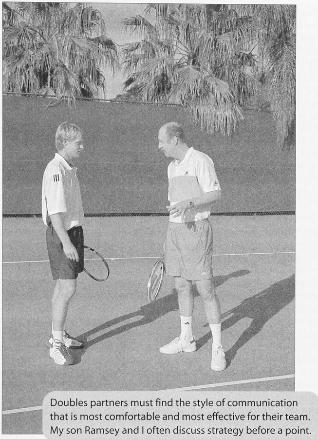
Những người bạn cặp trong đánh đôi phải tìm ra phong cách giao tiếp thoải mái nhất và hiệu quả nhất cho đội của mình.
ie Hanuies partners must find the style a communication i: that is most comfortable and most effective for their team.
Con trai tôi, Ramsey, và tôi thường bàn chiến thuật trước một điểm.
My son Ramsey and | often discuss strategy before a point.
người ấy về cách kiềm chế những thói đó—hoặc hãy rời bỏ mối quan hệ đồng đội này.
him or her about how to curb them—or walk away from the partnership.
Những tay vợt dùng phong cách giao tiếp kiểu huấn luyện viên chia sẻ những ý tưởng chiến thuật và thỉnh thoảng, ở những điểm quan trọng, khuyến khích bạn cặp của mình bừng lên cho dịp quan trọng đó. Phong cách này có thể hữu ích với những tay vợt có tính cách trầm lắng hơn. Một điều đáng lo với kiểu giao tiếp này là tay vợt được khuyến khích bừng lên có thể cảm thấy bị áp lực, vì biết rằng đây hẳn phải là một tình huống điểm quan trọng và mình tốt hơn hết phải làm tròn trách nhiệm trước bạn cặp và cả đội. Phong cách huấn luyện viên có thể hữu ích hơn khi truyền đạt những nhận xét cụ thể về chiến thuật khi cần có một sự thay đổi hay điều chỉnh.
Players who use the coach style of communication share strategy ideas and occasionally, on big points, encourage their partner to gear up for the occasion. This style may be helpful for players with a more low-key person- ality. One concern with this type of communication is that the player being encouraged to gear up may feel pressured, knowing that it must be a big point situation and that he’d better come through for his partner and for the team. The coach style may be more helpful in communicating specific comments on strategy when a change or adjustment is in order.
Có những tay vợt không thúc đẩy nhau nhiều lắm và thậm chí không nói nhiều về chiến thuật trong trận đấu. Tôi gọi đó là phong cách bác sĩ phẫu thuật. Những người này chơi đánh đôi một cách trực diện, theo xác suất, hiệu quả, mà không nói nhiều. Phương châm của họ là chơi lặng lẽ, chơi hết sức, chơi thông minh và kết thúc ca mổ thật gọn gàng. Những tay vợt này thường là những người tự tạo động lực, có niềm tin vào bản thân và vào những người đồng đội của mình. Họ cố gắng chơi hết sức mình mọi lúc. Một đối thủ có tinh thần cạnh tranh cao có thể sẽ áp đảo kiểu đội này bằng sự mãnh liệt nếu trận đấu trở nên thực sự sát nút.
There are players who do not push each other very much and who don’t even talk much about strategy and tactics during the match. I call this the surgeon style. Surgeons play straightforward, high-percentage, efficient doubles, withouta lot of conversation. Their motto is play quietly, play hard, play smart, and finish the operation cleanly. These players tend to be self- motivators who have confidence in themselves and their teammates. They try to play as hard as they can all the time. A highly competitive opponent could possibly overwhelm this type of team with high intensity if the match gets really close.
Một trong những đội vĩ đại của thập niên 1990, hai người Úc Todd Woodbridge và Mark Woodforde, nhìn chung hành xử như những bác sĩ phẫu thuật trên sân, nhưng Todd đôi khi có thể rất giàu cảm xúc. Một dịp như vậy là trận chung kết Davis Cup năm 1999, khi họ chơi với Pháp. Các trận đánh đơn đã chia đều thắng thua, nên trận đánh đôi (trận thứ ba trong loạt năm trận) là cuộc đối đầu mang tính quyết định. Todd và Mark đã thành công hơn ở nội dung đánh đôi và nắm giữ một thành tích sự nghiệp khó tin, nhưng họ vừa thua chính các đối thủ Davis Cup của mình, Fabrice Santoro và Olivier Delaitre, trong hai lần đối đầu gần nhất. Todd khởi đầu trận này tệ hết mức có thể và bị mất giao bóng trong cả ba lần giao bóng đầu tiên. Anh ấy vô cùng bực bội với chính mình, và tôi nghĩ rằng anh ấy đã sụp đổ về mặt cảm xúc. Những người đồng đội sẽ nói chuyện trước mỗi cú giao bóng, và Mark cố gắng lặng lẽ khuyến khích Todd cố gắng trụ lại. Bản thân Mark không quá hưng phấn; anh ấy chỉ tập trung vào việc cố gắng trở thành một thế lực trấn an cho người bạn cặp thất thường của mình. Trong trường hợp này, đội trưởng Davis Cup, John Newcombe, cũng có thể nói chuyện với đội ngôi sao của mình mỗi khi hai đội đổi sân. John khuyến khích Todd tiếp tục thi đấu và đừng quá khắt khe với chính mình; ông bảo Todd đừng cố đánh cú trả giao bóng quá tốt và hãy chắc chắn đưa được giao bóng một vào sân bằng cách giảm bớt lực một chút. John cũng đưa cho Todd một số chiến thuật cụ thể để suy nghĩ tích cực và tránh tập trung chú ý vào việc mình đang chơi tệ đến đâu. Todd đã cố gắng đến mức không cho phép mình chơi hết khả năng. Mark lặng lẽ khuyến khích Todd và truyền đi thông điệp rằng anh ấy biết lối chơi của bạn cặp mình sẽ tốt lên bất cứ lúc nào và không cần phải mãi day dứt về những sai lầm đã qua. Điều này cho Todd sự tự tin và nói rõ với anh ấy rằng dù thắng hay thua, họ cùng ở trong trận này với tư cách một đội. Cuối cùng Todd bình tĩnh lại, thư giãn đôi chút và bắt đầu chơi như đúng Todd Woodbridge thật sự. Người Úc cuối cùng đã gắn kết được với nhau, và sau khi bị dẫn một set và đối mặt với điểm set ở tỷ số 5-4, họ đã lội ngược dòng và thắng khá thuyết phục trong bốn set. Úc tiếp tục thắng trận thứ tư vào ngày hôm sau và giành Davis Cup lần thứ 27 đầy ấn tượng.
One of the great teams of the 1990s, Australians Todd Woodbridge and Mark Woodforde, generally behaved like surgeons on the court, but Todd could get very emotional on occasion. One such occasion was the 1999 Davis Cup final, when they were playing France. The singles matches had been split, so the doubles match (the third match in the best of five series) was the pivotal contest. Todd and Mark had had more success at doubles and held an unbelievable career record, but they had just lost to their Davis Cup opponents, Fabrice Santoro and Olivier Delaitre, in their last two head-to- head matches. Todd started off this match as badly as he could have and lost his serve the first three times he served. He was very upset with himself, and I thought that he had lost it emotionally. The teammates would talk before each serve, and Mark tried to quietly encourage Todd to hang in there. Mark did not get too excited himself; he simply focused on trying to bea calming force on his volatile partner. In this case, the Davis Cup captain, John Newcombe, was also able to talk to his star team when the teams changed sides. John encouraged Todd to keep competing and not be too hard on himself; he told Todd not to try tomake the return of serve too good and to be sure of getting the first serve in by taking a little pace off the ball. John also gave Todd some specific strategies to use to think positively and to avoid focusing his attention on how badly he was playing. Todd was trying so hard that he was not allowing himself to play his best. Mark quietly encouraged Todd and conveyed the message that he knew his partner’s playing would get better at any moment and that there was no need to dwell on past mistakes. This gave Todd confidence and made it clear to him that, win or lose, they were init together as a team. Todd finally calmed down, relaxed a little, and began playing like the real Todd Woodbridge. The Aussies finally got it together, and, after being down a set and facing a 5-4 set point, they came back and won quite convincingly in four sets. Australia went on to win the fourth match the next day and to capture the Davis Cup for an impressive 27th time.
Vậy là có nhiều cách khác nhau để tiếp cận việc giao tiếp trong đội. Tôi gợi ý bạn hãy bắt đầu mối quan hệ đồng đội của mình bằng cách nghiêng về phía giao tiếp quá nhiều và động viên quá nhiều, rồi xem điều đó hiệu quả ra sao. Khi chơi cùng nhau, bạn sẽ có thể nhận ra liệu có cần thay đổi hay không. Hãy đánh giá xem phong cách giao tiếp của bạn đang phát huy hiệu quả thế nào với cả hai người bạn cặp sau vài trận và điều chỉnh cho phù hợp.
So there are different ways to approach team communication. I suggest that you begin your partnership by erring on the side of overcommunication and overencouragement and see how that works. As you play together, you will be able to tell if changes are in order. Evaluate how well your style of communication is working for both partners after a few matches and adjust accordingly.
Trong Trận Đấu Chúng ta đã bàn về những phong cách giao tiếp mà hai người bạn cặp có thể sử dụng. Khi một đội đã phát triển được phong cách giao tiếp của mình, các thành viên trong đội có thể tận dụng nó để tạo lợi thế trên sân. Có một số tín hiệu bằng lời và không lời cụ thể có thể làm thay đổi cục diện trận đấu.
: ) During the Match We've discussed the styles of communication that partners can use. Once a team develops its style of communication, the team members can use it to their advantage on the court. There are a number of specific verbal and nonverbal cues that can alter the course of play during a match.
Tín Hiệu Bằng Lời Giao tiếp bằng lời phải luôn tích cực. Hãy tạo thói quen động viên bạn cặp của mình. Hai câu nói sau đây có thể giúp bạn nhớ nói năng theo cách tích cực và khích lệ: 1. Bạn cặp của bạn không cố tình đánh hỏng bóng.
Verbal Cues Verbal communication has to be positive at all times. Get into the habit of encouraging your partner. These two statements may help you remember to speak in a positive and encouraging manner: 1. Your partner is not missing the ball on purpose.
2. Rất có thể bạn sẽ đánh hỏng đúng kiểu cú đánh mà bạn cặp vừa đánh hỏng, hoặc một cú thậm chí còn dễ hơn, ngay ở điểm kế tiếp.
2. You may miss the same type of shot that your partner just missed, or an even easier shot, on the very next point.
Một quan niệm quan trọng khác cần ghi nhớ là bạn đang chơi với tư cách một đội và bạn sẽ thắng hay thua với tư cách một đội. Không người chơi nào có thể làm được điều đó một mình, và cả hai người chơi đều được ghi công cho chiến thắng hoặc bị quy trách nhiệm cho thất bại. Khi nói với bạn cặp, hãy dùng từ “chúng ta” thay vì “bạn” hay “tôi.”
Another important concept to keep in mind is that you are playing as a team and you will win or lose as a team. Neither player can do it alone, and both players will get the credit for the win or the blame for the loss. When you talk to your partner, use the word “we” instead of “you” or “I.”
Đôi khi tôi đã nghe một tay vợt đang chơi tốt nói với bạn cặp của mình rằng “chỉ cần đưa cú trả giao bóng của anh vào sân thôi!” Đó là điều cuối cùng mà một tay vợt muốn nghe khi anh ta đang không chơi tốt nhất của mình. Nó chắc chắn không giúp ích gì hay khiến anh ta chơi tốt hơn. Sau khi chơi với một người một thời gian, bạn sẽ biết chính xác kiểu động viên nào giúp ích cho người đó nhiều nhất, và bạn cặp của bạn cũng sẽ hiểu rõ hơn điều gì giúp ích cho bạn khi bạn đang chật vật. Ví dụ, Bob Lutz và tôi chơi cùng nhau thường xuyên trong một thời gian dài và do đó không nói chuyện quá nhiều trong trận. Ngược lại, Erik van Dillen và tôi trao đổi bằng lời rất nhiều sự động viên và chiến thuật, và chúng tôi có xu hướng thử những điều hơi khác biệt hơn, chẳng hạn đội hình chữ I hoặc cả hai cùng lùi lại khi trả giao bóng.
I have, on occasion, heard a player who is playing well say to his partner “just get your return of serve in!” That is the last thing that a player wants to hear when he is not playing his best. It certainly does not help or get him to play better. After playing with someone for a period of time, you will know exactly what type of encouragement helps him or her the most, and your partner will get a better feel for what helps you when you are struggling. For example, Bob Lutz and I played together frequently over a long period of time and therefore didn’t talk too much during a match. Erik van Dillen and I, on the other hand, verbally exchanged a lot of encourage- ment and strategy, and we were more likely to try something a little different, such as an I-formation or both staying back on the return of serve.
Tôi thích chơi với những người bạn cặp hiểu được khi tôi chơi kém.
I enjoy playing with partners who understand when I am playing badly.
Sau khi tôi lại đánh hỏng thêm một quả bóng dễ như bia tập bắn, họ có thể nói một câu như: “Không sao, mình sẽ ăn điểm kế tiếp,” hoặc “Mình có thể bẻ giao bóng ở đây,” hoặc “Mình vẫn có thể thắng trận này.” Những lời như vậy mang tính tích cực và giữ cho cả hai người bạn cặp hướng về lối chơi vững vàng phía trước thay vì ngẫm nghĩ về những sai lầm đã qua.
They might make a comment, after I miss yet another sitting duck, such as, “No problem, we'll get the next one,” or “We can break here,” or “We can still win this match.” These comments are positive and keep both partners looking toward solid future play rather than reflecting on past mistakes.
Tôi nhớ lần Erik van Dillen và tôi chơi ở tứ kết Wimbledon gặp Dennis Ralston và Arthur Ashe. Chúng tôi thực sự cảm thấy mình có thể vô địch cả giải năm đó. Trong trận, chúng tôi chơi tạm được, nhưng không gặp chút may mắn nào. Tôi đang cố gắng hết sức và vô cùng bực bội với tình thế. Sau khi thua thêm một điểm trong chuỗi những điểm quan trọng, tôi chuẩn bị than vãn rằng cuộc đời thật bất công thì Erik tiến sát tôi và nói: “Đừng lo, chỉ là Wimbledon thôi mà!”
I remember the time that Erik van Dillen and I were playing in the quarterfinals of Wimbledon against Dennis Ralston and Arthur Ashe. We really felt that we could win the whole tournament that year. In the match, we were playing OK, but we were not getting any good breaks. I was trying hard and getting extremely frustrated with the situation. After losing another ina series of big points I was about to whine about life being unfair when Erik came close to me and said, “Don’t worry, it’s only Wimbledon!”
Điều đó thực sự khiến tôi bật cười, và tôi chợt nhận ra rằng mình phải thư giãn và tận hưởng cuộc chiến thay vì căng thẳng đến mức không thể nhìn hay đánh bóng cho thẳng. Tôi ước gì mình có thể nói rằng sau đó chúng tôi đã thắng trận; chúng tôi đã không thắng, nhưng tôi đã chơi tốt hơn và có thái độ tốt hơn nhiều kể từ thời điểm đó trở đi.
This actually made me laugh, and it suddenly hit me that I had to relax and enjoy the battle rather than getting so uptight that I couldn’t see or hit straight. I wish that I could say that we won the match after that; we didn’t, but I did play better and have a much better attitude from that point forward.
Giao tiếp có thể phức tạp. Bạn có thể nói đúng điều vào đúng thời điểm, nhưng cách bạn nói có thể hoàn toàn sai. Bạn đã từng nghe ai đó nói “Cú đánh hay đấy” theo bao nhiêu cách khác nhau? Cùng một lời nhận xét có thể được hiểu là khích lệ, trịch thượng, mỉa mai, lên giọng bề trên hoặc gây ngạc nhiên; nó có thể truyền đi bất kỳ thông điệp nào, tùy vào giọng điệu mà nó được nói ra.
Communication can be complex. You may say the right thing at the right time, but the way you say it may be all wrong. How many different ways have you heard someone say, “Nice shot”? The same remark can come across as being encouraging, condescending, sarcastic, patronizing, or surprising; it can send any number of messages, depending on the tone in which it is delivered.
Nếu bạn đang chơi với một người mà bạn biết rõ, có lẽ bạn biết kiểu giọng điệu nào giúp ích cho bạn cặp cũng như cách nào khiến người ấy phát cáu. Tôi đã thấy điều này xảy ra thường xuyên trong đánh đôi nam nữ giữa vợ chồng với nhau. Chỉ một nhận xét nhỏ nhất cũng có thể gây ra một cuộc đối đầu lớn không chỉ làm hỏng trận đấu mà còn có thể đe dọa mối quan hệ. Hãy chắc chắn rằng bạn không dùng bất kỳ giọng điệu nào có thể gây ra vấn đề. Nếu bạn có chút nghi ngờ nào về việc liệu lời nói hay giọng điệu của mình có gây ảnh hưởng xấu đến người bạn đồng đội hay không, thì hãy im lặng.
If you’re playing with someone you know well, you probably know the kind of tone that helps your partner as well as how to get under his or her skin. I have seen this happen often in mixed doubles with husbands and wives. The slightest comment may cause a major confrontation that can not only spoil the match but also endanger the relationship. Make sure that you don’t use any tone that could cause a problem. If you have any doubt about whether your statement or tone will have a detrimental effect on your cohort, then keep your mouth closed.
Trong khi chơi một điểm, có những lúc bạn cần cho bạn cặp biết bạn đang ở đâu và bạn muốn người ấy làm gì. Ví dụ, nếu bạn đang đuổi theo một quả lốp bóng vừa bay qua đầu bạn cặp, thì thông thường bạn cặp của bạn nên đổi sang phía bên kia sân để bù vào phía mà bạn vừa rời đi. Đôi khi không rõ ai nên làm gì vì bóng gần như đi xuống giữa sân hoặc bị gió thổi lệch. Trong những trường hợp như vậy, hãy hô lên nơi bạn muốn bạn cặp đi tới khi bạn đánh cú đó. Lốp bóng có thể khó xử lý: nếu bạn có thể đập bóng trên cao (smash), bạn cặp của bạn nên đổi bên và ở lại lưới; nếu bạn không thể đánh một cú tấn công, bạn cặp của bạn cần đổi bên và lùi về sau vạch cuối sân. Vậy nên khi bạn lao tới quả bóng, hãy hô “đổi bên” hoặc “tôi lấy” khi bạn đánh một cú tấn công như đập bóng trên cao hay cú đánh mạnh. Nếu bạn đang phải chạy và buộc phải lốp bóng, hãy hô “lùi lại” để bạn cặp có thể đổi bên và về phía sau vạch cuối sân để phòng thủ.
As you are playing a point, there are times when it’s important to let your partner know where you are and what you would like him or her to do. For instance, if you are running downa lob that has just gone over your partner’s head, your partner should normally cross to the other side of the court to cover the side that you just left. Sometimes it is not obvious who should do what because the ball is nearly down the middle or is being carried by the wind. In such cases, call out where you want your partner to go as you hit the shot. Lobs can be tricky: if you can hit an overhead, your partner should cross and stay at the net; if you cannot hit an offensive shot, your partner needs to cross and move back behind the baseline. So as you go for the ball, yell “cross” or “I got it” when you hit an offensive shot such as an overhead or hard drive. If you're on the run and have to hit a lob, yell “back” so your partner can cross and get behind the baseline to defend.
Một số tay vợt sẽ hô “của bạn” hoặc “của tôi,” đây là một hệ thống khá hiệu quả và rõ ràng. Một đội giàu kinh nghiệm thường biết mỗi người bạn cặp cần gì ở người kia và có thể không nói nhiều, nhưng ngay cả những đội kỳ cựu cũng có thể bị lẫn tín hiệu nếu họ không nói ra mong muốn của mình khi một quả lốp bóng được đánh đi hoặc khi họ bị kéo ra khỏi vị trí bởi một cú đánh chéo góc tuyệt vời.
Some players will call out “you” or “me,” which is a pretty efficient and clear system. An experienced team often will know what each partner needs from the other and may not say much, but even veteran teams can get their signals mixed if they don’t verbalize their desires as a lob is hit or they are pulled out of position by a great angle shot.
Một tình huống khác mà giao tiếp là thiết yếu là khi bóng được đánh xuống giữa sân, cao và đẹp, và cả hai người đều có thể đánh được. Bạn nên hô “của tôi” hoặc “của bạn” (hay “tôi” hoặc “bạn”). Nhìn chung người hô trước nên là người quyết định, để quyết định được đưa ra nhanh chóng và ít gây nhầm lẫn nhất.
Another situation in which communication is essential is when the ball is hit down the middle, nice and high, and either player could hit it. You should call “mine” or “yours” (or “me” or “you”). Generally the person who calls out first should be in charge, so that a decision is made quickly and with the least amount of confusion.
Tín Hiệu Không Lời Giao tiếp không lời của bạn trên sân cũng quan trọng không kém điều bạn nói hay cách bạn nói. Cũng như giao tiếp bằng lời, nó cần mang tính tích cực chứ không phải tiêu cực. Giả sử đây là điểm quyết định thắng game, và bạn cặp của bạn đang trả giao bóng. Đối thủ đánh hỏng quả giao bóng đầu tiên, và bạn bắt đầu liếm môi mong bạn cặp sẽ đánh một cú trả giao bóng tuyệt vời để giúp đôi của bạn có được pha bẻ giao bóng đang rất cần thiết. Bạn cặp của bạn nhận được một quả bóng ngon lành, đúng vào bên thuận tay, rồi đánh nó dài khoảng hai mét hoặc vào ngay giữa lưới. Bạn không nói một lời nào, nhưng bạn đảo mắt lên trời như thể vừa chứng kiến tội ác ghê gớm nhất mà loài người từng phạm phải. Cứ như thể bạn cặp của bạn cố tình làm vậy! Giờ nếu bạn cặp của bạn tình cờ nhìn bạn đúng lúc bạn làm bộ mặt đó, người ấy sẽ cảm thấy rất thất vọng vì đã làm bạn thất vọng.
Nonverbal Cues Your nonverbal communication on the courtis just as important as what you say or how you say it. As with verbal communication, it should be positive rather than negative. Let’s say that it is game point, and your partner is returning serve. The opponents miss the first delivery, and you start licking your lips expecting your partner to hammer a great return to enable your twosome to get the much needed break of serve. Your partner gets a juicy one, right to his forehand, and proceeds to hammer it about six feet long or into the middle of the net. You don’t say a word, but you roll your eyes to the sky as if you have just witnessed the most egregious crime ever committed by mankind. As if your partner did it on purpose! Now if your partner happens to look at you just as you make this face, he or she will feel very disappointed about letting you down.
Bạn cặp của bạn có thể thấy khó chịu vì phản ứng của bạn và trở nên phòng thủ, hoặc có thể đánh mất chút tự tin còn sót lại về khả năng trả giao bóng của mình.
Your partner may be annoyed by your reaction and get defensive, or may lose whatever confidence has not already been eroded in his or her ability to return serve.
Đôi khi tôi đã thấy một tay vợt ném vợt xuống sân sau khi bạn cặp của mình đánh hỏng một quả bóng dễ. Đây không phải là một cử chỉ tế nhị, và nó có thể vừa gây xấu hổ vừa làm nản lòng người đã đánh hỏng. Kiểu phản ứng rõ ràng và mang tính chỉ trích này có thể đặc biệt khó chịu với tâm lý của một tay vợt và có thể làm tổn hại mối quan hệ giữa hai người bạn cặp.
I have sometimes seen a player throw his racket down on the court after his partner has missed a sitter. This is not a subtle gesture, and it can be embarrassing as well as discouraging for the player who missed. This type of reaction, obvious and critical, can be particularly hard on a player’s psyche and can hurt the relationship between the partners.
Tôi gợi ý bạn hãy tạo thói quen giữ cho cả giao tiếp bằng lời lẫn không lời của mình đều tích cực để bạn không mắc sai lầm là nói hay hành động theo cách mà sau này mình có thể hối hận. Đổi lại, bạn có thể tin cậy vào nhau để giúp đỡ khi một trong hai có một ngày tồi tệ, và cả hai có thể tập trung vào việc cải thiện lối chơi của mình thay vì ngẫm nghĩ về những sai lầm đã qua.
Isuggest that you make it a habit to keep both your verbal and nonverbal communication positive so that you don’t make the mistake of speaking or acting ina way that you might later regret. The tradeoff is that you can count on each other to help when one of you has a bad day, and you can both stay focused on improving your game instead of dwelling on past mistakes.
Hãy nhớ rằng những tín hiệu không lời có thể cần được tập luyện, cũng như mọi phần khác trong lối chơi của bạn. Trong đánh đôi, giao tiếp có thể quan trọng không kém kỹ thuật.
Remember that the nonverbal cues may need to be practiced, just like the rest of your game. In doubles, communication can be just as important as technique.
Những tín hiệu tay mà nhiều đội sử dụng là một hình thức giao tiếp quan trọng khác trên sân. Bob Lutz và tôi đôi khi dùng tín hiệu tay trong các trận đấu của mình, và Erik van Dillen với tôi cũng vậy.
The hand signals used by many teams are another important form of on- court communication. Bob Lutz and Isometimes used hand signals during our matches, and so did Erik van Dillen and I.
Mấu chốt để sử dụng tín hiệu tay hiệu quả là khiến đối thủ phải đoán già đoán non điều bạn sắp làm trong khi bạn vẫn tập trung vào trận đấu. Những tín hiệu tay trong quần vợt tương tự như tín hiệu giữa người ném bóng và người bắt bóng trong bóng chày. Người bắt bóng ra hiệu cho người ném bóng bằng bàn tay trần của mình (để không phải tháo găng tay ra) kiểu ném nào mà anh ta nghĩ là tốt nhất cho tình huống, rồi đặt găng đúng vào vị trí mà anh ta muốn bóng được ném tới. Người ném bóng có thể từ chối tín hiệu bằng cách lắc đầu, rồi gật đầu để xác nhận tín hiệu chỉ ra kiểu ném mà anh ta muốn thực hiện.
The key to using hand signals effectively is to keep your opponents guessing what you are going to do while you stay focused on the match. The hand signals in tennis are similar to those between baseball pitchers and catchers. The catcher signals to the pitcher with his bare hand (so he doesn’t have to take his glove off) what type of pitch he thinks is best for the situation and then puts his mitt right where he wants the ball to be delivered. The pitcher can shake off the signal by shaking his head, then nod to confirm the signal that indicates the pitch he wants to throw.
Trong quần vợt, người đứng lưới sẽ ra tín hiệu bằng bàn tay không cầm vợt giấu sau lưng cho người giao bóng (xem hình 2.1, a và b). Tín hiệu có thể chỉ cho biết người đứng lưới có cướp bóng (poach) hay không, hoặc có thể bao gồm một gợi ý về nơi nên giao bóng. Người giao bóng có thể “từ chối” tín hiệu bằng cách chỉ đơn giản nói “không.” Điều thiết yếu là người giao bóng phải xác nhận tín hiệu cuối cùng trước khi giao bóng để tránh nhầm lẫn. Người giao bóng có thể xác nhận tín hiệu to đến mức nào tùy thích vì đội đang trả giao bóng sẽ không biết tín hiệu đó là gì.
In tennis, the net player will give the signal with the nonracket hand behind his or her back to the server (see figure 2.1, 4 and b). The signal might indicate only whether or not the net player is going to poach or it might include a suggestion about where the serve should be hit. The server can “shake off” the signal by simply saying no. It is vital that the server acknowledge the final signal before serving to avoid confusion. The server can be as loud as he or she wants in acknowledging the signal because the returning team won’t know what the signal is.
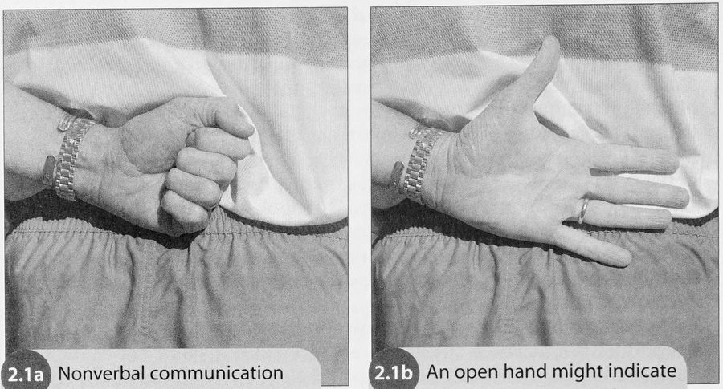
Giao tiếp phi ngôn ngữ giữa hai người bạn cặp có thể diễn ra dưới dạng một tín hiệu tay đưa ra sau lưng, chẳng hạn một nắm đấm khép lại biểu thị “không cướp bóng.” Một bàn tay mở có thể biểu thị rằng đang bật cướp bóng. Vị trí của một số ngón tay nhất định cũng có thể truyền đạt vị trí cần đặt cú giao bóng.
yy) Nonverbal communication yyiie) An open hand might indicate between partners may take that the poach is on. The the form of a behind-the-back position of certain digits might also communicate where to place hand signal, perhaps a closed fist indicating “don't poach.” the serve.
Tín hiệu tay là tốt nếu bạn thích cướp bóng (poach) khá nhiều. Nếu bạn không cướp bóng thường xuyên, tôi nghĩ chúng có thể chỉ là sự lãng phí thời gian. Mục đích là để hai người đồng đội giao tiếp với nhau và giữ cho đối thủ không chắc chắn liệu họ có đổi bên và cướp bóng sau cú giao bóng hay không. Có thể có xu hướng là người trả giao bóng nhìn vào người đứng lưới thay vì chỉ tập trung vào quả bóng. Nếu người trả giao bóng nhìn người đứng lưới bằng một mắt và giữ mắt kia trên quả bóng, thì khả năng cao là người đó sẽ không tiếp xúc bóng một cách chắc chắn.
Hand signals are good if you like to poach quite a bit. If you don’t poach very often, I think they can be a waste of time. The purpose is for the teammates to communicate and to keep their opponents uncertain as to whether they are going to cross and poach after the serve. There may be a tendency for the player who is returning serve to look at the net player rather than focusing only on the ball. If the returner is looking at the net player with one eye and keeping the other eye on the ball, then there is a good chance that he or she will not make solid contact with the ball.
Một vấn đề tiềm tàng khác với tín hiệu tay là những khán giả ngồi sau cuối sân có thể đọc trộm tín hiệu và mách nước cho đội của họ. Tất nhiên đây sẽ là hành vi thiếu tinh thần thể thao, nhưng người ta biết rằng chuyện này từng xảy ra.
Another potential problem with hand signals is that fans behind the end of the court could conceivably steal the signals and tip off their team. Of course this would be bad sportsmanship, but it has been known to happen.
Tôi sẽ không bao giờ quên một sự việc khi khán giả phía sau sân tham gia vào trận đấu một cách rầm rộ. Hoa Kỳ đang chơi với Tây Ban Nha ở Barcelona trong trận bán kết Davis Cup năm 1972. Tỷ số là 1-1 bước vào trận đánh đôi. Tôi chơi cùng Erik van Dillen, và tôi giao bóng suốt trận này với mặt trời ở sau lưng. Trong set thứ hai, mỗi khi tôi giao bóng, lại có một tia sáng lóe nhanh vào mắt tôi. Lúc đầu tôi không hiểu nổi, nhưng chẳng bao lâu tôi nhận ra rằng một khán giả ngồi khoảng hàng ghế thứ năm ngay phía sau sân đang phản chiếu ánh mặt trời vào mắt tôi khi tôi giao bóng. Đó không phải là tín hiệu mà tôi muốn thấy! Cuối cùng tôi đến gặp trọng tài ngồi ghế và đề nghị ông ấy yêu cầu khán giả đó chấm dứt. Đột nhiên, trọng tài không hiểu hay không nói được tiếng Anh. Vị trọng tài trung lập nói điều gì đó với đám đông, nhưng có vẻ không giúp ích gì. Sau thêm vài điểm nữa, tôi quyết định tự giải quyết chuyện này bằng chính đôi tay mình. Tôi giao một quả bóng thẳng vào hàng ghế thứ năm. Đó là một cú đánh tốt nhưng có lẽ là một quyết định tồi vì nhiều khán giả bắt đầu ném đệm ghế xuống sân và la ó. Khoảng 15 phút sau chúng tôi tiếp tục trận đấu, và may mắn thay “tín hiệu” của tôi dành cho khán giả đặc biệt đó dường như đã chấm dứt việc ánh mặt trời bị phản chiếu vào mắt tôi.
I will never forget one incident in which the fans behind the court got into the action big time. The United States was playing Spain in Barcelona in the semifinals of the Davis Cup in 1972. The score was one match all going into the doubles. I was playing with Erik van Dillen, and I served throughout this match with the sun at my back. During the second set, every time I served, there would be a quick flash of light in my eyes. I could not understand it at first, but before long I realized that a fanin about the fifth row directly behind the court was reflecting the sun into my eyes as I was serving. That wasn’t the signal I wanted to see! I finally went to the chair umpire and asked him to ask the fan to cease and desist. All of the sudden, the umpire could not understand or speak English. The neutral referee said something to the crowd, which didn’t seem to help. After a few more points, I decided to take the matter into my own hands. I hit a serve directly into the fifth row. It was a good shot but probably a bad decision because many of the fans started throwing their seat cushions onto the court and booing. About 15 minutes later we resumed the match, and fortunately my “signal” to that particular fan seemed to have put an end to the sun being reflected into my eyes.
Những Thay Đổi Chiến Thuật Khi bạn trải qua những lúc thăng lúc trầm của một trận đấu, hãy đánh giá xem kế hoạch thi đấu ban đầu của bạn đang phát huy hiệu quả thế nào và xem xét những thay đổi chiến thuật nào nên được thực hiện.
Tactical Changes As you go through the ebb and flow of a match, assess how your original game plan is working and evaluate what changes in tactics should be made.
Hy vọng rằng bạn đã nghĩ đến và bàn bạc qua một số biến thể phù hợp có thể áp dụng cho kế hoạch thi đấu và có thể đưa những chiến thuật mới vào mà không cần phải tranh luận trong hoảng loạn. Thật tốt khi có sẵn vài phương án để chuyển sang nếu bạn không thành công. Ví dụ, nếu đối thủ có những cú giao bóng mạnh và bạn không trả bóng hiệu quả, bạn có thể dự tính để cả hai cùng lùi lại. Hãy bàn bạc về những khó khăn khác nhau có thể xảy ra và cách vượt qua chúng. Hãy tập luyện với những tình huống chiến thuật này trong đầu để trên sân bạn có thể nói ngắn gọn về cách thức và thời điểm thay đổi. Điều thiết yếu là bạn phải giao tiếp có mục đích và tích cực trong trận để có thể nâng đỡ nhau, bàn về những thay đổi khả thi và chơi hết tiềm năng của mình.
Hopefully you have thought about and talked through some appropriate potential variations in game plan and can integrate new tactics without too much panicked discussion. It is good to have a few options to go to if you are not having success. For instance, if your opponents have big serves and you are not returning them effectively, you may plan to both stay back. Talk through the various difficulties that might occur and how they could be overcome. Practice with these tactical scenarios in mind so that, on the court, you can talk succinctly about how and when to make a change. It is critical that you communicate purposefully and positively during the match so that you can build each other up, discuss possible changes, and play to your full potential.
Sau Trận Đấu
\.) After a Match
Sau khi trận đấu kết thúc, những đội giỏi sẽ đánh giá lại những gì đã diễn ra cùng một huấn luyện viên, cùng những người chơi khác hoặc chỉ với nhau. Việc này có thể diễn ra một cách không chính thức ngay sau trận trong phòng thay đồ hoặc vào bữa tối hôm đó. Dù theo cách nào, nó nên được làm khi cuộc chiến vẫn còn mới trong tâm trí bạn. Tôi nhận thấy một số đội có thể nhớ gần như từng điểm trong nhiều tuần sau một trận đấu hấp dẫn, trong khi những đội khác hầu như không nhớ nổi mình đã chơi với ai ngay khi cú đánh cuối cùng được thực hiện. Dù trường hợp của bạn là gì, tôi khuyên bạn nên phân tích ưu và nhược điểm trong lối chơi của mình ngay sau khi đã bình tĩnh lại sau trận đấu.
After the match is over, good teams critique what happened with a coach, with fellow players, or just with one another. This may occur informally right after the match in the locker room or that night over dinner. Either way, it should be done while the battle is still fresh in your mind. I have found that some teams can remember nearly every point for weeks after an exciting match and others can barely remember whom they played once the last shot is hit. Whatever is the case with you, recommend that you analyze the pros and cons of your play soon after you have cooled down from the match.
Việc phân tích sau trận này sẽ hữu ích, đặc biệt nếu bạn chơi lại với cùng đội đó. Những khái niệm chung được bàn tới có thể dùng làm cơ sở cho buổi tập kế tiếp của bạn. Hãy chắc chắn xem xét cả những điểm tốt lẫn những điểm yếu của trận đấu để bạn giữ được cái nhìn toàn diện về lối chơi. Một số đội ghi những điểm này vào một cuốn nhật ký để có thể xem lại nếu họ quên chính xác điều gì đã xảy ra trong trận. Hãy dùng kết quả phân tích của mình để thiết kế các bài tập nhằm cải thiện những điểm yếu và có lẽ cả một số khu vực vốn đã mạnh. Một huấn luyện viên được kính trọng từng nói với tôi rằng khi các học trò của ông đang sa sút phong độ, ông thích cho họ tập luyện các điểm mạnh trước rồi mới đến các điểm yếu, nhằm giúp họ tự tin và giữ tinh thần tích cực hơn.
This postmatch analysis will be helpful, especially if you play the same team again. The general concepts discussed can be used as a basis for your next practice session. Be sure to consider the good points as well as the weak points of the match so that you keep the play in perspective. Some teams write these points down in a journal so that they can refer to it if they forget exactly what happened in the match. Use the results of your analysis to fashion drills to improve in your areas of weakness and maybe even in some areas that are already strong. A respected coach once told me that when his players were ina slump, he liked to have them work on their strengths first and then on their weaknesses, in order to help their confidence and keep them feeling more positive.
Một khoảng thời gian hạ nhiệt vài giờ trước khi bàn về trận đấu là một ý tưởng đặc biệt hay nếu bạn vừa thua một trận đấu khó khăn, đầy cảm xúc. Huấn luyện viên và các tay vợt có thể bình tĩnh và biết suy ngẫm hơn nếu họ có thời gian để nhìn trận đấu và mọi diễn biến của nó trong bối cảnh rộng hơn. Phản ứng điển hình trước một thất bại sát nút là “mình chơi tệ quá,” trong khi thực tế chỉ một hai điểm đã tạo nên khác biệt. Trận đấu hoàn toàn có thể đã đi theo chiều hướng ngược lại, và khi đó bạn sẽ đang ăn mừng và nghĩ xem “mình đã chơi hay đến thế nào.” Dù thắng hay thua, điều quan trọng là phải nhìn nhận thực tế về diễn biến trận đấu. Có thể bạn đã chơi tốt nhưng không tận dụng được hai điểm bẻ giao bóng và thua, hoặc bạn đã chơi kém và chỉ thắng vì đội kia chơi còn tệ hơn.
A cooling down period of a few hours before discussing the match is a particularly good idea if you have just lost a tough, emotional match. The coach and the players can be calmer and more reflective if they’ve had time to put the match and its contents in perspective. The typical reaction toa close loss is, “we played awful,” when in reality only one or two points made the difference. It could quite easily have gone the other way, and you would be celebrating and thinking about how “great you played.” Win or lose, it is important to be realistic about how the match went. You might have played well but not converted on two break points and lost, or you might have played badly and won only because the other team played worse.
Một huấn luyện viên giỏi có thể giúp bạn và bạn cặp hiểu chính xác điều gì đã xảy ra và nhìn xa hơn kết quả hiển nhiên. Ý kiến đóng góp của huấn luyện viên đặc biệt hữu ích nếu người đó đã ghi chép trận đấu và có thể cung cấp số liệu thực tế về những khu vực thi đấu cụ thể, chẳng hạn tỷ lệ giao bóng một vào sân hay số cú trả giao bóng đưa được vào cuộc. Những số liệu này không biết nói dối, và những sự thật khách quan, rõ ràng sẽ làm sáng tỏ điều thực sự đã xảy ra trên chiến địa.
A good coach can help you and your partner understand exactly what happened and look beyond the obvious result. A coach’s input is particularly helpful if he or she has charted the match and can furnish actual statistics on specific areas of play, such as the percentages of first serves made or the number of returns put back in play. These stats don’t lie, and the cold, hard facts will clarify what really happened on the field of battle.
Hãy giữ cho việc phê bình trận đấu mang tính sự thật chứ không mang tính cá nhân. Cuộc thảo luận nên xoay quanh việc điều gì đã hay chưa được làm chứ không phải ai là người đáng trách. Điều này không phải lúc nào cũng dễ làm, nhưng điều quan trọng là nói về vấn đề chứ không nói về cá nhân. Ví dụ, khi bàn về game giao bóng, bạn có thể nêu ra sự thật rằng tỷ lệ giao bóng một của đội không cao như lẽ ra phải thế, thay vì nhận xét rằng một người chơi đã giao bóng kém. Bạn có thể kể rằng mức độ mãnh liệt của đội không duy trì được đều đặn suốt trận và điều đó đã giúp đội bạn lật ngược thế cờ.
Keep the critique of the match factual and not personal. The discussion should revolve around what was or was not done rather than who was to blame. This is not always easy to do, but it is important to speak to the issues and not to the individuals. For instance, when talking about the service game, you might bring up the fact that the first-serve percentage for the team was notas highas it should have been instead of commenting that one player served poorly. You might relate that the intensity level of the team was not consistently high throughout the match and that this enabled the other team to come back.
Hãy tiến hành việc đánh giá lối chơi đồng đội này một cách có hệ thống để bạn không bỏ sót bất kỳ khu vực nào của môn đánh đôi. Phân tích của bạn nên bao gồm cú giao bóng, cú trả giao bóng, việc cướp bóng (poach), vị trí đứng, giao tiếp, mức độ mãnh liệt, di chuyển, những tình huống điểm quan trọng, việc chọn cú đánh, điều kiện thi đấu, thể lực bền bỉ và những điểm mạnh cùng điểm yếu về mặt tinh thần. Bạn có thể dùng cùng danh sách câu hỏi mà bạn đã dùng để đánh giá điểm mạnh và điểm yếu của đội trước trận (bảng 2.1) để định hướng cho việc đánh giá sau trận của mình.
Go through this assessment of team play systematically so that you don’t leave out any area of doubles tennis. Your analysis should include the serve, the return of serve, poaching, positioning, communication, intensity, move- ment, big-point situations, shot selection, playing conditions, stamina, and mental strengths and weaknesses. You can use the same list of questions you used to evaluate your team’s strengths and weaknesses before the match
Trong quá trình phân tích này, bạn cũng nên nói về những gì bạn sẽ làm khác đi vào lần tới. Hãy đánh giá kế hoạch thi đấu của mình. Một lần nữa, hãy đi qua các khu vực khác nhau của trận đấu một cách có hệ thống để không bỏ sót điều gì. Tôi chắc rằng một số ý tưởng hay sẽ nảy ra khi bạn cùng nhau bàn về trận đấu hoặc bàn với huấn luyện viên. Có thể sẽ hữu ích nếu bạn ghi những ý tưởng này ra để không quên chúng. Phần lớn những gì bạn bàn tới cũng sẽ áp dụng cho những trận sắp tới gặp các đội khác.
table 2.1) to guide your postmatch evaluation.
Hãy chắc chắn rằng buổi tập tiếp theo bao gồm việc luyện tập những khu vực yếu mà bạn đã xác định được qua phân tích. Ví dụ, nếu bạn chưa cướp bóng (poach) đủ nhiều khi bạn cặp giao bóng, hãy tập các bài tập cướp bóng với một đội khác hoặc với một huấn luyện viên, và tập luyện thời điểm cùng vị trí cần di chuyển khi bạn đánh một số điểm. Hãy giải quyết mọi khu vực cần được giúp đỡ dựa trên đánh giá của bạn.
During this analysis you should also talk about what you would do differently the next time. Evaluate your game plan. Again, go through the different areas of the game systematically so that you don’t leave out anything. I am sure that some good ideas will come to light as you discuss the match together or with a coach. It may be helpful to write down these ideas so that you don’t forget them. Much of what you discuss will also apply to upcoming matches against other teams.
Hãy dùng một bảng kiểm để bạn biết mình không bỏ sót điều gì.
Be sure that the next practice includes work in the weak areas you have identified through your analysis. For instance, if you weren't poaching enough when your partner was serving, do poaching drills with another team or witha coach, and work on when and where to move as you play out some points. Address all the areas that need help based on your evaluation.
Use a checklist so that you know you are not missing anything.
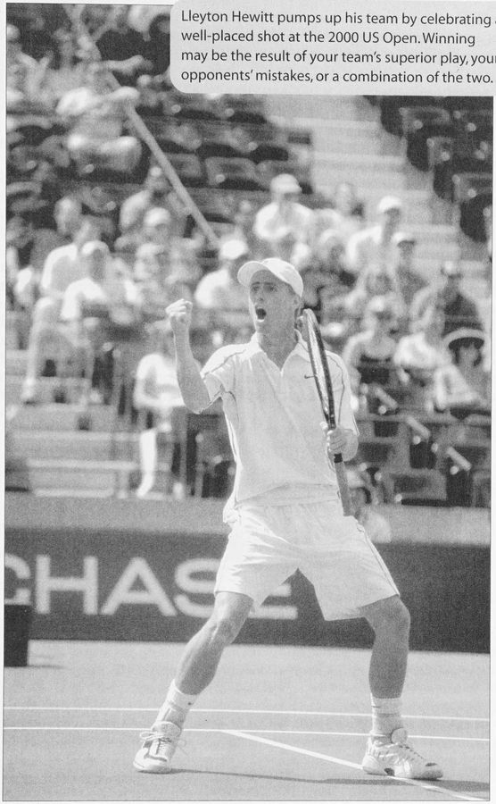
Lleyton Hewitt khích lệ tinh thần đội của mình bằng cách ăn mừng một cú đánh đúng chỗ tại US Open 2000. Chiến thắng có thể là kết quả từ lối chơi vượt trội của đội bạn, từ sai lầm của đối thủ, hoặc từ sự kết hợp của cả hai.
Lleyton Hewitt pumps up his team by celebrating a well-placed shot at the 2000 US Open. Winning may be the result of your team’s superior play, your opponents’ mistakes, or a combination of the two.
Một hoạt động khác có thể tỏ ra hữu ích là xem đội đã thắng bạn thi đấu trận kế tiếp của họ. Việc này có thể hơi đau đớn vì nó gợi lại một số ký ức tồi tệ về thất bại của bạn, nhưng nó có thể cho bạn những ý tưởng về điều có thể làm để đối phó với đội đó mà bạn thậm chí chưa từng nghĩ tới. Nếu bạn và bạn cặp cùng xem trận đấu, hai bạn có thể trao đổi qua lại những ý tưởng khác nhau về điều có thể giúp mình đối đầu với đội cụ thể đó cũng như những mảnh chiến thuật chung. Trải nghiệm này sẽ giúp bạn hiểu rõ hơn cách bạn cặp của mình suy nghĩ, và chính điều đó sẽ giúp ích cho đội của bạn.
Another activity that could prove helpful is to watch the team you lost to play their next match. This can be a bit agonizing because it may bring up some bad memories of your loss, but it can give you ideas about what can be done against that team that you may not have even considered. If you and your partner watch the match together, you can bounce different ideas off each other as far as what might help you against that particular team as well as bits of general strategy. This experience will help you better understand the way your partner thinks, and that in itself will help you as a team.
Lời khuyên cuối cùng của tôi về giao tiếp sau trận đấu, và điều này cực kỳ quan trọng, là bạn tuyệt đối không bao giờ nói xấu bạn cặp của mình sau lưng người ấy (hay trước mặt người ấy, về mặt đó). Điều này nên đúng trong mọi bối cảnh công khai và ngay cả khi riêng tư, trừ khi bạn hoàn toàn chắc chắn rằng cuộc trò chuyện của mình sẽ được giữ kín.
My final piece of advice about communication after the match, and it is extremely important, is that you should never speak negatively about your partner behind his or her back (or in front of him or her, for that matter). This should be the case in any public setting and even in private unless you are absolutely certain that your conversation is going to remain confidential.
Đôi khi các tay vợt nói xấu bạn cặp vì họ muốn đổ lỗi cho người khác về một thất bại. Hãy nhớ lại một suy nghĩ mà tôi đã nêu trước đó: trong đánh đôi, bạn thắng với tư cách một đội và bạn thua với tư cách một đội. Việc cho mọi người biết rằng đội thua trận không phải lỗi của bạn có thể khiến bạn cảm thấy dễ chịu hơn, nhưng chắc chắn nó sẽ không giúp gì cho bạn cặp hay mối quan hệ đồng đội của bạn nếu người ấy nghe được những nhận xét của bạn từ miệng người khác. Có thể bạn cặp của bạn đã chơi kém trong trận đó, nhưng bạn có thể chơi tệ ngang hoặc tệ hơn trong một trận khác. Nếu bạn liên tục chơi tốt hơn bạn cặp, thì có lẽ bạn nên tìm cách thay đổi—nhưng ngay cả khi đúng là như vậy, cũng đừng nói xấu người ấy. Hãy cho bạn cặp của bạn sự tin tưởng mặc nhiên và giữ những nhận xét của mình tích cực. Đó là cách tốt nhất để xử lý một mối quan hệ đánh đôi, cả trên sân lẫn ngoài sân.
Players sometimes speak ill of a partner because they want to blame someone else fora loss. Remember a thought I mentioned earlier: in doubles, you win as a team and you lose as a team. It may make you feel better to let everyone know that it wasn’t your fault that the team lost a match, but it certainly is not going to help your partner or your partnership if he or she hears your comments from someone else. Your partner may have played poorly in that match, but you might play as badly or worse in another. If you consistently play better than your partner does, then you probably should look into making a change—but even if this is the case, don’t badmouth him or her. Give your partner the benefit of the doubt and keep your comments positive. That is the best way to handle a doubles relationship, both on and off the court.
3. Dùng Vị Trí Để Chơi Theo Xác Suất
Nhiều đội vĩ đại có thể đánh những cú đánh ngoạn mục từ mọi vị trí trên sân, trong đó có những cú đánh khác thường này. Đã từng thi đấu ở nhiều trình độ khác nhau, từ tay vợt trẻ cho đến chuyên nghiệp, tôi nhận thấy rằng những cú đánh ngoạn mục khiến khán giả thích thú, nhưng chúng không phải là những cú đánh giúp thắng trận một cách ổn định. Những đội vĩ đại có thể đánh những cú đánh gây choáng ngợp, nhưng họ thắng phần lớn các trận đấu bằng cách đánh đúng cú đánh vào đúng thời điểm. Nói cách khác, họ chơi theo xác suất.
Many of the great teams can hit spectacular shots from all parts of the of these unusual shots. Having played at different levels of the game from junior player through the pros, I have found that the spectacular shots are crowd pleasers, but they are not the ones that win matches on a consistent basis. Great teams can hit the showstoppers, but they win most of their matches by hitting the right shots at the right time. In other words, they play the percentages.
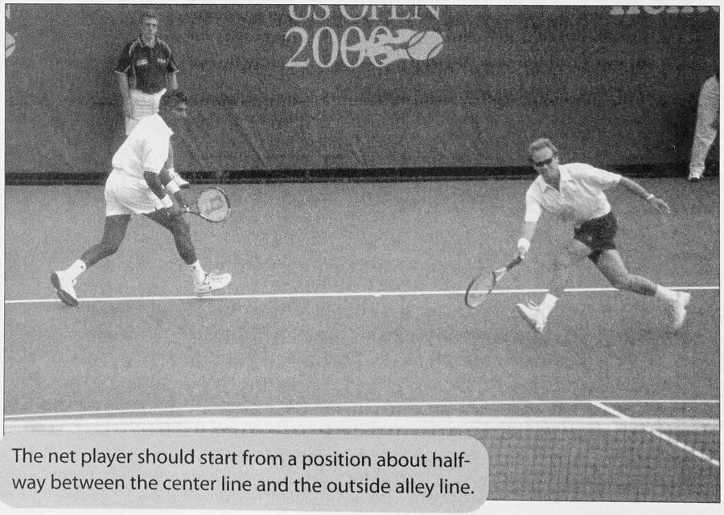
Thật thú vị khi xem một đội vĩ đại mổ xẻ đối thủ bằng cách chọn cú đánh vững chắc, theo xác suất, rồi nghe những nạn nhân than phiền sau trận rằng đội thắng chẳng làm gì đặc biệt. Những người thua không thể hiểu nổi tại sao đội kia lại thắng. Nó giống như một ván cờ vậy. Mục tiêu là luôn giữ thế tấn công, nhưng có lúc cần thận trọng và kiên nhẫn, và cũng có lúc cần phòng thủ. Mỗi nước đi nên được đáp trả bằng nước đi thông minh nhất và có xác suất cao nhất của đội kia. Nếu đội của bạn liên tục đưa ra những quyết định khôn ngoan, thì cuối cùng đối thủ của bạn có lẽ sẽ đưa ra một quyết định tồi hoặc bị dồn vào thế buộc phải mắc lỗi.
It is fun to watcha great team dissect their opponents by using solid, high- percentage shot selection, and then hear the victims complain after the match that the winners didn’t do anything special. The losers cannot understand how the other team won. It is much like a chess game. The goal is to stay on the offensive, but there is a time to be conservative and patient, and also a time to be defensive. Each move should be countered with the smartest and highest percentage move by the other team. If your team consistently makes wise decisions, your opponents will probably eventu- ally make a bad decision or be pushed into making a forced error.
Tôi không quá bực bội với một tay vợt hay một đội luôn đưa ra quyết định tốt về việc nên đánh cú nào nhưng đôi khi gặp vấn đề khi thực hiện những cú đánh đó.
I don’t get too upset with a player or team that consistently makes good decisions as to what shots to hit but has occasional problems executing those shots.
Tôi quan tâm hơn đến một tay vợt hay một đội thường xuyên đưa ra những quyết định tồi về cách đánh và đánh vào đâu, và có thể thực hiện đúng hoặc không đúng những cú đánh đó. Giả sử bạn đã trả giao bóng và người giao bóng đã lên lưới và bắt vô-lê đưa bóng rất sâu, đến mức bạn phải đánh cú tiếp theo từ cách vạch cuối sân khoảng ba mét. Một quyết định khôn ngoan của tay vợt sẽ là cố đánh bóng thấp và xuống giữa sân, hoặc đánh một quả lốp phòng thủ cao và sâu xuống giữa sân. Những quyết định tồi, xác suất thấp cho tình huống này bao gồm đánh một cú chéo góc ngắn hoặc đánh một cú bóng phẳng mạnh vào một trong hai đối thủ.
1am more concerned about a player or team that often makes bad decisions about how and where to hit shots and may or may not execute those shots correctly. Let’s say that you have hit a return of serve and the server has come to the net and volleyed the ball very deep, so that you must hit your next shot from 10 feet behind the baseline. A smart player decision would be to try to hita ball low and down the middle or puta high, defensive lob deep and down the middle. Low-percentage, bad decisions for this situation include hitting a short angle shot or blasting a hard, flat ball at one of the opponents.
Một đội đặc biệt giỏi chơi đánh đôi vững chắc, theo xác suất là Don Johnson và Jared Palmer, những nhà vô địch Wimbledon 2001 và những người vào chung kết US Open. Họ thắng nhờ chọn cú đánh thông minh, sự di chuyển quanh. Người đứng lưới nên xuất phát từ vị trí khoảng giữa đường giữa sân và đường biên dọc ngoài cùng.
One team that is particularly good at playing solid, high-percentage doubles is Don Johnson and Jared Palmer, 2001 Wimbledon champions and US Open finalists. They win with smart shot selection, movement around NESTE PMOL The net player should start from a position about half- way between the center line and the outside alley line.
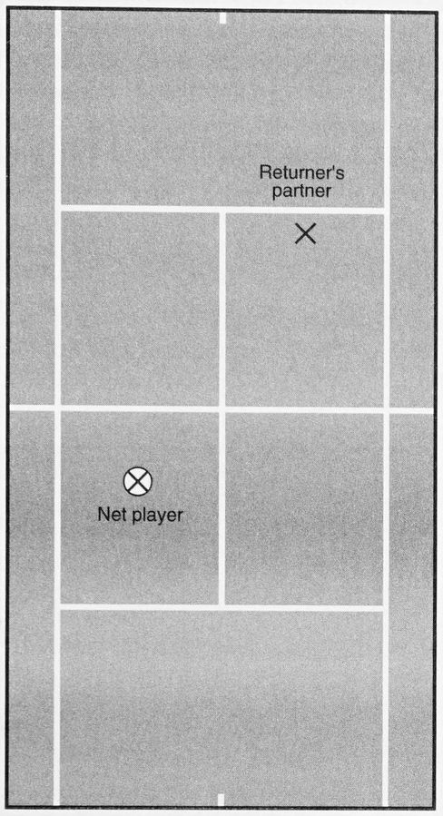
lưới, và đứng vị trí tốt trên sân. Họ hiếm khi đánh sai cú đánh, và họ tận dụng sự kết hợp giữa người thuận tay phải (Palmer) và người thuận tay trái (Johnson) để giữ đối thủ mất thăng bằng bằng xoáy và điểm rơi.
x &) the net, and good court positioning. They seldom hit the wrong shot, and they take advantage of their right-handed (Palmer) and left-handed (Johnson) combination to keep their opponents off balance with spin and placement.
Họ sử dụng những vị trí đứng cơ bản trên sân và những biến thể của các nguyên tắc cơ bản mà tôi trình bày trong chương này.
They use basic court positioning and variations on the basics that I explain in this chapter.
Tôi muốn bàn về vị trí đứng trên sân để bạn và bạn cặp sẽ biết tại sao mình thắng, hoặc ít nhất là có thể xác định được tại sao mình thua.
I want to address on-court positioning so that you and your partner will know why you won or, at the very least, be able to determine why you lost.
Thắng trong đánh đôi bắt đầu từ việc vào đúng vị trí cho mỗi một trong bốn vai trò mà bạn có thể đảm nhận trên sân trước khi điểm bắt đầu.
Winning doubles starts with assuming the proper position for each of the four roles you may play on the court before the point begins.
Bốn vị trí xuất phát cơ bản cho bạn một nền tảng để xây dựng (xem hình 3.1). Nếu bạn biết những vị trí cơ bản này, thì bạn có thể thi đấu hiệu quả trước hầu hết đối thủ. Sự khác biệt chính về vị trí đứng trong
The four basic beginning positions give you something from which to build (see figure 3.1). If you know these basic positions, then you can be effective against most opponents. The main difference in positioning for
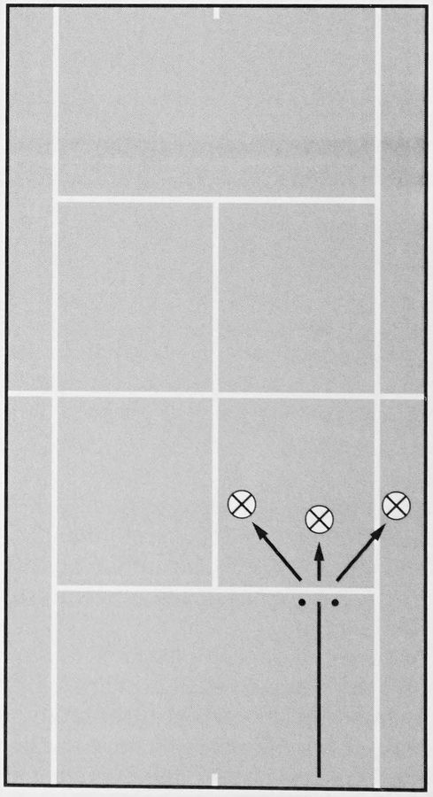
đánh đôi so với đánh đơn là ở chỗ các tay vợt chỉ cần bao quát một nửa sân thay vì toàn bộ sân. Vì hành lang biên được tính vào cuộc, sân đánh đôi rộng hơn, nhưng khu vực mà mỗi người chơi phụ trách lại nhỏ hơn.
doubles as opposed to singles is that players need to cover only half the court rather than the whole court. Since the alleys come into play, the doubles court is bigger, but the area for which each player is responsible is smaller.
Trong hai chương tiếp theo, tôi sẽ trình bày một số biến thể của những vị trí cơ bản này mà bạn có thể dùng để giữ cho những đối thủ có điểm mạnh và điểm yếu khác thường mất thăng bằng. Những vị trí xuất phát này nhằm cho bạn cơ hội tốt nhất để chơi thứ quần vợt hay và theo xác suất.
In the next two chapters, I will go through some variations on these basic positions that you can use to keep opponents with unusual strengths and weaknesses off balance. These starting positions are meant to give you the best opportunity to play good, high-percentage tennis.
Người Giao Bóng Với tư cách người giao bóng, bạn là người điều khiển; những người chơi khác phải phản ứng trước hành động của bạn. Một số người giao bóng quên mất khái niệm đơn giản này và không tận dụng lợi thế nắm quyền chủ động. Vì người giao bóng bắt đầu điểm, người đó định giao bóng từ vị trí nào giúp tối đa hóa điểm mạnh của đội giao bóng và khai thác điểm yếu của đội trả giao bóng. Sau khi giao bóng, người đó nên bước tách (split step) và lao vào đánh cú vô-lê đầu tiên.
\. Server As the server you are the dictator; the other players have to react to your actions. Some servers forget this simple concept and do not take advantage of being in command. Because the server starts the point, he or she sets the serve from which- ever position best maximizes the strengths of the serving team and capitalizes on the liabilities of the return- ing team. After serving, he or she should split step and cut to hit the first volley.
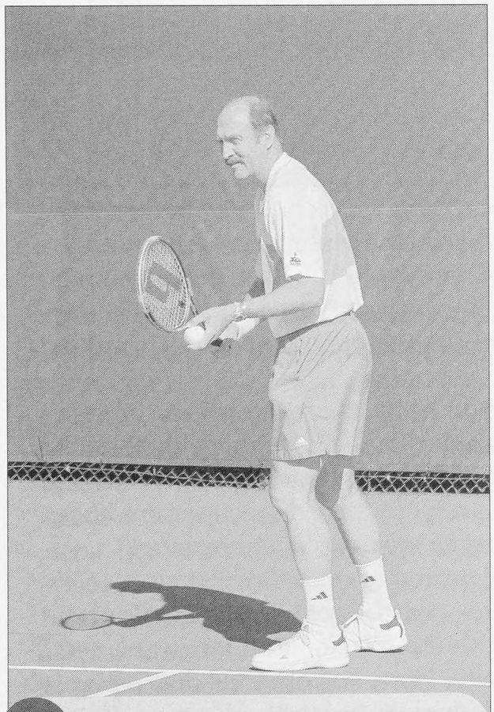
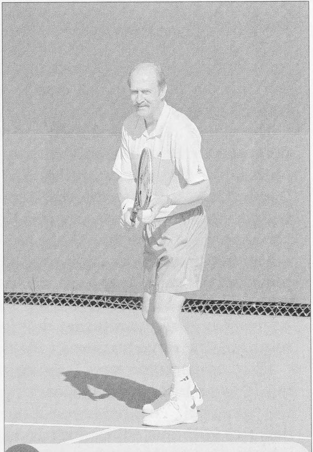
nhịp độ, trong giới hạn hợp lý, và giao bóng khi đã sẵn sàng. Hãy đứng khoảng giữa vạch giao bóng giữa sân và đường biên dọc ngoài để bạn có thể giao bóng dễ dàng như nhau vào bên thuận tay hoặc bên trái tay của đối thủ. Bạn có thể đứng ở bất kỳ đâu dọc theo vạch cuối sân để giao bóng, thậm chí lọt vào hành lang biên, nếu thấy phù hợp (xem hình 3.2).
pace, within reason, and serves when ready. Stand about halfway between the center service line and the outside sideline so that you can serve with equal ease to either the forehand or the backhand of the opponent. You can stand anywhere along the baseline to serve, all the way into the alley, if appropriate (see figure 3.2).
Vị trí giao bóng có thể không giống nhau cho mọi cú giao bóng trong mọi trận đấu.
The serving position may not be the same for every serve of every match.
Điều đó thực sự phụ thuộc vào điểm mạnh của cả người giao bóng lẫn người trả giao bóng. Nếu một người giao bóng gặp khó khăn trong việc giao bóng ổn định vào bên trái tay (ở ô bên phải (deuce)), người đó có thể đứng gần đường giữa sân hơn. Nếu một người giao bóng không giao bóng ra biên hiệu quả, người đó có thể dịch về phía hành lang biên hoặc vào trong đó.
It really depends on the strengths of both the server and returner. If a server has trouble getting the serve to the backhand consistently (on the deuce side), he or she can move closer to the center. If a server is not effectively serving wide, he or she can move toward or into the alley.
Bản thân tư thế giao bóng sẽ thay đổi rất nhẹ khi người giao bóng dịch về phía đường biên dọc; nếu không thì người giao bóng sẽ bị quá mở hoặc quá khép, tùy vào ô sân mà người đó giao bóng tới. Ví dụ, nếu bạn thuận tay phải và giao bóng vào ô bên phải (deuce), tư thế của bạn sẽ càng khép lại khi bạn dịch về phía đường biên dọc vì phần lưng của bạn sẽ hướng nhiều hơn về phía ô sân mà bạn đang giao bóng tới (xem hình 3.3a). Khi bạn rời xa đường giữa sân, bạn nên xoay bàn chân trước, hông và vai một chút sao cho cơ thể bạn ở cùng một vị trí tương quan với mục tiêu trong mọi cú giao bóng (xem hình 3.3b).
The serving stance itself will vary ever so slightly as the server moves toward the sideline; otherwise the server would be too open or too closed, depending on which court he or she is serving to. For example, if you are right-handed and are serving to the deuce court, your stance will become more closed as you move toward the sideline because more of your back will be facing the court into which you are serving (see figure 3.32). As you move away from the center you should angle your front foot, hips, and shoulders slightly so that your body is in the same position in relation to the target on all serves (see figure 3.3b).
Đây là tư thế đúng để giao bóng vào ô bên phải (deuce). Khi vùng mục tiêu của cú giao bóng thay đổi, cơ thể người giao bóng phải dịch chuyển. Tư thế này khép quá mức. Hãy chú ý sự thẳng hàng của bàn chân trước, hông và vai.
This is the proper stance for As the target area for the serve serving to the deuce court. changes, the server's body Note the alignment of the front foot, must shift. This position is too closed hips, and shoulders.
Việc thay đổi vị trí sẽ khiến đối thủ mất thăng bằng vì nó có nghĩa là góc mà bóng tới người trả giao bóng sẽ hơi khác đi.
Achange in position will keep your opponent off balance because it means the angle at which the ball arrives at the returner will be slightly different.
Theo nghĩa này, một người giao bóng quần vợt có lợi thế hơn một người ném bóng bóng chày: người ném bóng luôn phải ném từ gò ném, trong khi người giao bóng có thể thay đổi vị trí của mình và do đó thay đổi cả góc nhìn của người trả giao bóng về cú giao bóng. Người giao bóng nên tận dụng cơ hội này bằng cách thay đổi vị trí dọc theo vạch cuối sân.
In this sense, a tennis server has an edge over a baseball pitcher: a pitcher always has to throw from the mound, whereas a server can alter his or her position and therefore the returner’s perspective on the serve. Servers should take advantage of this opportunity by varying their position along the baseline.
Lỗi phổ biến nhất mà tôi thấy những người giao bóng bình thường mắc phải là đứng quá gần đường giữa sân, đến mức họ không thể giao bóng ra biên và bao quát cú trả giao bóng ra biên một cách hiệu quả. Đứng gần đường giữa sân cho phép bạn giao bóng xuống giữa sân tốt, nhưng nó hạn chế các lựa chọn giao bóng của bạn và do đó khiến đối thủ dễ đón cú giao bóng của bạn hơn. Ngoài ra, vị trí này không cho phép bạn mở rộng sân tốt. Nếu bạn giao bóng ra biên trong khi đứng gần đường giữa sân, thì đối thủ sẽ có thể trả giao bóng ra xa bạn và khiến bạn bị kéo ra ngoài sân đuổi theo bóng, dù bạn giao bóng rồi lên lưới hay giao bóng rồi lùi lại.
The most common error I see the average server make is standing too close to the center, so that he or she is not able to serve wide and cover the wide return of serve effectively. Standing close to the center enables you to serve down the center well, but it limits your serving options and therefore makes it easier for your opponent to field your delivery. Also, this position does not allow you to open up the court well. If you do serve wide while standing close to the center, then your opponent will be able to return the serve away from you and send you off court chasing the ball, whether you serve and volley or serve and stay back.
Người Đứng LướiNet Player
Bạn cặp của người giao bóng, hay người đứng lưới, đóng một vai trò quan trọng trong việc hỗ trợ mục tiêu của đội là giữ giao bóng (thắng game mà bạn đang giao bóng). Nhiều người nghĩ rằng người giao bóng chịu trách nhiệm chính hoặc hoàn toàn về việc thắng game mà người đó giao bóng. Đôi khi điều ngược lại mới đúng, khi người đứng lưới hoạt động quá tích cực đến mức khiến người trả giao bóng phải sợ.
The server’s partner, or net player, plays an important role in supporting the team goal of holding serve (winning the game during which you are serving). Many people think that the server is mainly or entirely responsible for winning the game in which he or she is serving. Sometimes the opposite is true, when the net player is so active that he or she intimidates the player returning the serve.
Nhìn chung người đứng lưới nên đứng khoảng giữa lưới và vạch giao bóng, và khoảng giữa vạch giao bóng giữa sân và đường biên dọc ngoài cùng (xem hình 3.4). Vai trò của người đó là khiến người trả giao bóng cảm thấy không thoải mái bằng cách hoạt động rất tích cực. Việc di chuyển và thay đổi vị trí thường xuyên khiến người trả giao bóng dành nhiều thời gian nghĩ về người đứng lưới hơn là về quả bóng.
The player at the net should generally stand about halfway between the net and the service line, and halfway between the center service line and the outside alley line (see figure 3.4). That player’s role is to keep the player who is returning serve uncomfortable by being very active. Moving and chang- ing positions often causes the service returner to spend more time thinking about the net player than the ball.
Cả vị trí lẫn thái độ của người đứng lưới đều ảnh hưởng đến người trả giao bóng. Nếu người đứng lưới trông như chưa sẵn sàng hoặc thiếu sự mãnh liệt, thì người trả giao bóng sẽ thư giãn hơn. Nhưng nếu người đứng lưới trông nhanh nhẹn, linh hoạt và tấn công, thì người trả giao bóng sẽ cảm thấy bị áp lực và kém tự tin hơn khi trả giao bóng vì mối đe dọa từ việc người đứng lưới đổi bên.
The net player’s position and attitude both affect the return of serve player. If the net player looks unprepared or lacking in intensity, then the returner will be more relaxed. But if the net player looks agile, mobile, and aggressive, then the returner will feel pressured and less confident about returning the serve because of the threat of the net player crossing.
Lỗi phổ biến nhất mà tôi thấy những người đứng lưới mắc phải là đứng quá gần lưới. Tôi thậm chí đã nghe một số huấn luyện viên nói rằng người đứng lưới nên đứng đủ gần lưới để có thể vươn vợt ra chạm vào lưới. Tôi không đồng ý với lời khuyên này vì hai lý do. Thứ nhất, rõ ràng là một người đứng gần lưới rất dễ bị lốp bóng qua đầu. Thứ hai, hãy tự hỏi mình, tiến lên hay lùi lại thì dễ hơn? Mọi người tôi từng hỏi đều nói rằng tiến lên thì dễ hơn. Vì đúng là như vậy, nên hợp lý là bạn nên đặt mình ở
The most common error I see net players make is standing too close to the net. [have even heard some teaching pros say that net players should stand close enough to the net to reach out with their racket and touch the net. I disagree with this advice for two reasons. First, it is obvious that a player who is close to the net is vulnerable to the lob. Second, ask yourself, is it easier to move forward or backward? Everyone I have asked says it is easier to move forward. Since this is the case, it makes sense then to position
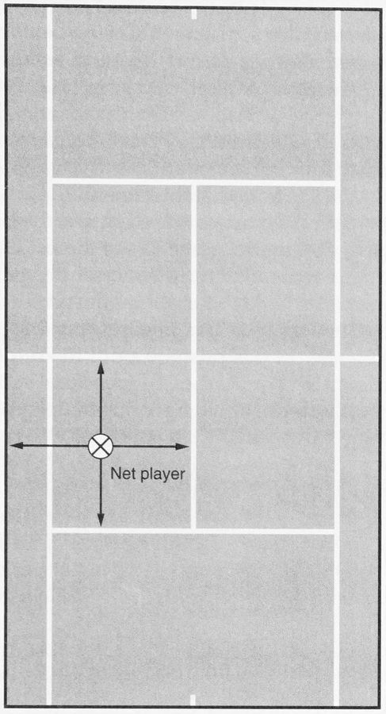
< sive
sive
Từ vị trí đó, người đứng lưới có thể bao quát nửa sân của mình, xử lý các quả lốp bóng và vẫn có thể tiến lên để cướp bóng (poach).
From there, the net player can cover his or her half of the court, cover lobs, and still move forward to poach.
vị trí giữa lưới và vạch giao bóng thay vì quá gần lưới. Nếu bạn xuất phát lùi hơn một chút, thì bạn có cơ hội bao quát quả lốp bóng tốt hơn. Tôi cảm thấy rằng bạn nên cố gắng tự bao quát những quả lốp bóng về phía mình bất cứ khi nào có thể, chứ đừng dựa vào bạn cặp để bao quát mọi quả bóng có khả năng bay qua đầu bạn. Bạn cặp của bạn đã có đủ việc để bao quát nửa sân của chính mình. Giờ nếu bạn đứng giữa vạch giao bóng và lưới, và bóng được đánh ngắn, bạn có thể tiến lên bằng vài bước nhanh. Nếu bạn cảnh giác, thì bạn sẽ không thường bị hạ bởi những quả bóng ngắn, và bạn sẽ có thể bao quát phần lớn những quả lốp bóng được đánh về phía sân của mình.
®) yourself halfway between the net and the service line rather than too close to the net. If you start a little further back, then you have a better chance to cover the lob. I feel that you should try to cover your own lobs whenever possible, and not rely on your partner to cover every ball that has the potential to go over your head. Your partner has enough to do to cover his or her own half of the court. Now if you do stand halfway between the service line and the net, and a ball is hit short, you can move forward with a few quick steps. If you are alert, then you will not often get hurt by the short ball, and you will be able to cover most of the lobs hit on your side of the court.
Một sai lầm khác mà tôi thấy, đặc biệt trong đánh đôi nam nữ, là bạn cặp của người giao bóng đứng quá gần hành lang biên hoặc thậm chí đứng trong hành lang biên. Điều này thường xảy ra vì người bạn cặp nam có tính gia trưởng nghĩ rằng mình giỏi hơn, nhanh hơn, khỏe hơn, lanh lẹ hơn, và không biết còn hơn bạn cặp nữ của mình bao nhiêu thứ nữa, đến mức anh ta có thể bao quát mọi quả bóng ngoại trừ những quả được đánh vào hành lang biên của cô ấy. Anh ta có thể nói điều gì đó như: “Cưng chỉ cần lo hành lang biên của em thôi nhé,” rồi đặt cô ấy cách lưới một mét. Khi bạn cặp của người giao bóng ở quá xa trung tâm sân, người trả giao bóng có một khoảng trống lớn để trả bóng vào. Mối đe dọa từ việc người đứng lưới làm bất cứ điều gì gần như không còn. Nhìn thấy khoảng trống lớn đó khiến người trả giao bóng cảm thấy ít bị đe dọa hơn và thư giãn hơn, và do đó người đó có thể đánh được tỷ lệ cao những cú trả giao bóng chéo sân tốt. Điều này có thể là án tử cho đội giao bóng (và đôi khi cho cả mối quan hệ), và nó chẳng vui vẻ gì với tay vợt nữ.
The other mistake I see, particularly in mixed doubles, is the server’s partner standing too close to the alley or even in the alley. This is usually done because the macho male partner thinks that he is so much better, quicker, stronger, faster, and who knows what else than his female partner that he can cover every ball except those hit in her alley. He may say something like, “just cover your alley, sweetheart,” and put her three feet from the net. With the server’s partner so far from the center of the court, the returner has a big space into which to return the serve. The threat of the net player doing anything is all but gone. Seeing the big opening makes the returner feel less threatened and more relaxed, and therefore he or she is better able to hit a high percentage of good cross-court returns of serve. This can spell death for the serving team (and sometimes for the relationship), and it is no fun for the female player.
Tuy nhiên, nếu người đứng lưới đứng cách đường giữa sân khoảng một mét, thì cú trả bóng dọc biên trở nên hấp dẫn hơn và vùng trả bóng chéo sân trở nên thật sự nhỏ. Từ góc nhìn của người trả giao bóng, việc nhìn thấy đôi chân của người đứng lưới gần đường giữa sân hơn làm giảm sự tự tin của người trả giao bóng về khả năng đưa bóng chéo sân thành công mà không bị chặn. Nếu người trả giao bóng không thoải mái khi đánh cú trả giao bóng dọc biên, thì vị trí này có thể khá hiệu quả.
If, however, the net player stands a few feet from the center line, the down-the- line return becomes more tempting and the cross-court return area becomes really small. From a returner’s point of view, seeing the feet of the net player closer to the center diminishes the returner’s confidence in successfully getting the ball cross court without interception. If the returner is not comfortable hitting the return of serve down the line, then this position can be quite effective.
Tôi gợi ý bạn hãy giữ vị trí này cho đến khi người trả giao bóng cho thấy rằng người đó có thể làm bạn đau bằng những cú dọc biên. Ở trận chung kết US Open năm 2001, Palmer và Johnson thi đấu khá hiệu quả với Johnson giao bóng bằng tay trái và Palmer đứng rất gần giữa sân. Cuối cùng họ chặn đứng nhiều cú trả bóng bằng một cú vô-lê. Đội đối phương đơn giản là không thể trả bóng dọc biên tốt trong giai đoạn đầu trận. Đáng tiếc cho Palmer và Johnson, họ đã thua cặp đôi người Nam Phi gồm Wayne Black và Kevin Ullyett, những người cuối cùng đã điều chỉnh và đánh được một số cú trả bóng dọc biên tốt.
| would suggest that you stay in this position until the returner shows that he or she can hurt you down the line. At the US Open Final in 2001, Palmer and Johnson were quite effective with Johnson serving his lefty serve and Palmer very close to the middle of the court. They ended up cutting off many of the returns with a volley. The opposing team just wasn’t able to return down the line well early in the match. Unfortunately for Palmer and Johnson, they lost to the South African pair of Wayne Black and Kevin Ullyett, who eventually adjusted and hit some good returns down the line.
Người đứng lưới phải tham gia vào trận đấu và phải gánh vác phần của mình, nếu không đội sẽ không thể thành công. Vị trí đứng cho giao bóng một và giao bóng hai có thể khác nhau đôi chút. Nhìn chung, ở giao bóng một, người đứng lưới có thể đứng gần lưới hơn một chút vì người trả giao bóng khó có thể trả bóng hiệu quả như vậy. Người đứng lưới có lẽ sẽ có nhiều cơ hội hơn để giúp người giao bóng bằng cách chặn những cú trả giao bóng yếu hơn. Khi đứng gần hơn ở giao bóng một, mối quan tâm chính của người đứng lưới là phải sẵn sàng cho quả lốp bóng có thể xảy ra.
The net player has to be involved in the match and carry his or her own weight or the team will not be successful. Positioning for the first and second serves may vary slightly. Generally, on the first serve, the net player canstand a little closer to the net because the returner is not likely to return as effectively. The net player will probably have more opportunities to help the server by intercepting the weaker returns of serve. When standing closer on the first serve, the net player’s primary concern is to be prepared for the possible lob.
Ở giao bóng hai, người đứng lưới có thể muốn lùi lại một bước để có thêm một tích tắc thời gian phòng thủ trước một quả bóng được đánh thẳng vào mình.
On a second serve, the net player may want to move back a step so that he or she has a split second more time to defend a ball that is hit at him or her.
Ngoài ra, người đứng lưới ít có khả năng cướp bóng (poach) hơn ở giao bóng hai vì người trả giao bóng sẽ tấn công mạnh hơn. Điều này càng khẳng định tầm quan trọng của quan niệm trong đánh đôi là phải đưa được tỷ lệ cao giao bóng một vào sân. Đây là những hướng dẫn chung về vị trí đứng; khi trận đấu diễn ra, một đội giao bóng giỏi sẽ thực hiện những thay đổi và biến thể tinh tế để giữ cho đối thủ mất thăng bằng và phải đoán già đoán non. Tôi sẽ giải thích những phương án này trong chương 4.
Also, the net player is less likely to poach on the second serve because the returner will be more aggressive. This reinforces the importance of the doubles concept of getting a high percentage of first serves in the court. These are general positioning guidelines; as the match progresses a good serving team will implement subtle changes and variations to keep their opponents off balance and guessing. I will explain these options in chapter 4.
Người Trả Giao BóngReturner
Vị trí của người giao bóng và những kiểu giao bóng mà người đó thường thực hiện góp phần quyết định vị trí của người trả giao bóng. Những điểm mạnh và điểm yếu cụ thể của người trả giao bóng cũng đóng một vai trò.
The server’s position and the types of serve that he or she normally hits help determine the service returner’s position. The particular strengths and weaknesses of the service returner also play a role.
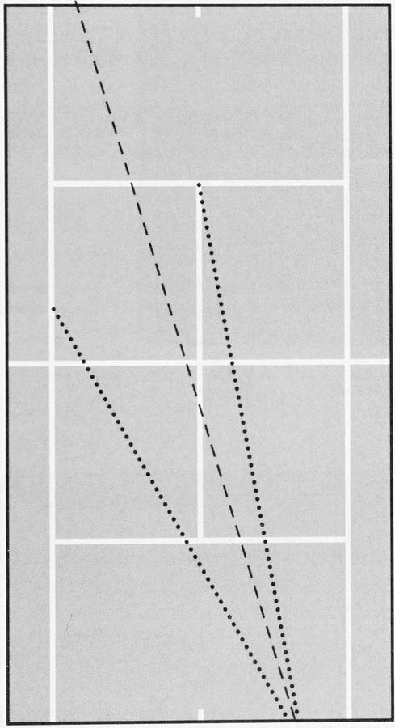
Về cơ bản, người trả giao bóng nên đứng sao cho có cơ hội ngang nhau để trả bất kỳ quả bóng nào do người giao bóng đánh tới. Nói cách khác, người trả giao bóng nên đứng ở vị trí chia đôi góc của toàn bộ dải giao bóng có thể có (xem hình 3.5, a đến c). Ví dụ, nếu người giao bóng đứng gần vạch giao bóng giữa sân để đưa bóng đi, thì người trả giao bóng nên đứng ở vị trí mà người đó sẽ đứng để trả giao bóng trong đánh đơn, tức là khoảng giữa đường giữa sân và đường biên dọc đánh đơn. Người giao bóng càng dịch về phía đường biên dọc để bắt đầu điểm bao nhiêu, thì người trả giao bóng càng nên dịch ra xa trung tâm sân để chuẩn bị trả bóng bấy nhiêu.
Basically, the returner should stand so that he or she has an equal oppor- tunity to return any ball hit by the server. Another way to say this is that the returner should stand in a position that bisects the angle of the range of potential serves (see figure 3.5, a through c). For example, if the server stands close to the center service line to deliver the ball, then the returner should stand where he or she would stand to return a serve in singles, that is, about halfway between the center line and the singles sideline. The more the server moves toward the sideline to begin the point, the more the returner should move away from the center of the court to prepare for the return.
Mục tiêu chính của người trả giao bóng là đưa được bóng trở lại, đặc biệt ở những cú giao bóng một quan trọng, và buộc đội giao bóng phải đánh thêm một quả bóng nữa. Sai lầm lớn nhất mà tôi thấy những người trả giao bóng mắc phải là cứ đứng nguyên một chỗ trên vạch cuối sân cho mọi cú giao bóng.
The main goal of the returner is to get the ball back, especially on the big first serve, and to make the serving team hit another ball. The biggest mistake Isee returners make is to stay ina certain spot on the baseline for every serve.
Nếu người giao bóng đang trừng phạt đối thủ bằng một kiểu giao bóng nhất định, chẳng hạn cú giao bóng ra biên
If the server is punishing an opponent with a certain serve, such as the wide
Hình 3.5a: Khi xác định vị trí chia đôi khu vực mà người giao bóng có khả năng đánh bóng tới cao nhất, người trả giao bóng nên tính đến việc lưới thấp hơn ở giữa sân (0,9 mét so với 1 mét ở hai bên).
a] In determining the position that splits the area in which the server is most likely to hit the ball, the returner should allow for the fact that the net is lower in the middle of the court (3.0 feet versus 3.3 feet at the sides).
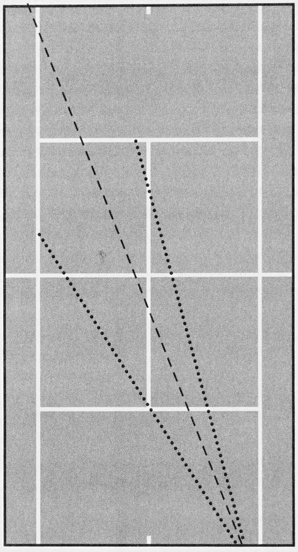
Imps
Imps
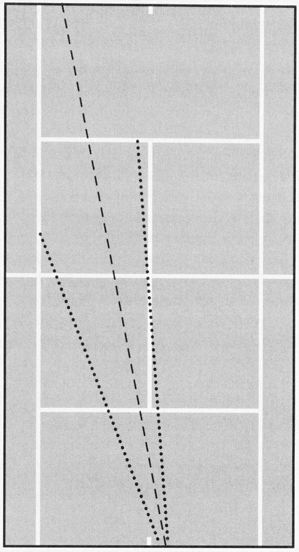
x
x
Người giao bóng giao bóng, và người trả giao bóng không có sự điều chỉnh nào, thì người trả giao bóng không nhận thức được điểm mạnh hay vị trí giao bóng của người giao bóng. Tôi đã thấy những tay vợt không hề có sự điều chỉnh nào trong suốt trận, chẳng hạn đứng gần đường biên dọc hơn để nhận cú giao bóng đang hành hạ mình, rồi bước ra khỏi sân mà than vãn rằng mình bị cú giao bóng ra biên giết chết.
Server serve, and the returner doesn’t make an adjustment, then the returner is unaware of the server’s strengths or serving position. I have seen players who never made an adjustment during the match, such as standing closer to the sideline to receive the victimizing shot, walk off the court talking about getting killed by the wide serve.
Có hai vị trí trả giao bóng cơ bản, một cho việc trả giao bóng một và một cho việc trả giao bóng hai. Nhìn chung một đội sẽ giao bóng một mạnh hơn, phẳng hơn, và cú giao bóng này có thể rất khó trả nếu nó vào sân.
There are two basic returning positions, one for returning a first serve and another for returning the second serve. Generally a team will serve a harder, flatter first serve, which can be very difficult to return if it goes in.
Vì mục tiêu chính khi trả giao bóng một là đưa bóng trở lại qua lưới, nên một điều chỉnh rất hữu ích bạn có thể thực hiện là lùi ra xa hơn để có thêm chút thời gian đọc quả bóng. Cho đến tận bây giờ, sau ngần ấy năm, tôi vẫn thấy kinh ngạc về việc người trả giao bóng chỉ cần lùi ra xa người giao bóng thêm khoảng một đến một mét rưỡi lại có ích đến thế. Bạn sẽ thấy rằng tích tắc mà bạn có thêm có thể tạo ra khác biệt lớn trong cú trả bóng của mình. Và việc đưa thêm một hai cú trả bóng vào cuộc có thể chính là yếu tố cho bạn cơ hội bẻ giao bóng. Ngoài việc cho bạn thêm thời gian phản ứng, việc lùi lại còn cho người giao bóng một góc nhìn khác. Khi bạn đứng lùi xa hơn để trả bóng, ô giao bóng dường như dài hơn vì góc nhìn của người giao bóng được quyết định bởi lưới, vạch giao bóng, vạch cuối sân và vị trí của người trả giao bóng. Rõ ràng chiều cao của lưới và hai vạch kẻ không thay đổi (nếu lưới được đo trước trận), nhưng sự hiện diện của người trả giao bóng ảnh hưởng đến cảm nhận thị giác của người giao bóng về sân đấu. Nếu người trả giao bóng đứng lùi hẳn ra sau, ô giao bóng sẽ dường như dài hơn, khiến người giao bóng có xu hướng giao bóng dài. Nếu người trả giao bóng đứng gần lưới hơn, người giao bóng sẽ thấy ô giao bóng ngắn hơn và do đó có thể giao nhiều bóng vào lưới hơn. Tóm lại, vị trí tiến lên hay lùi lại cơ bản của người trả giao bóng ở giao bóng một sẽ phụ thuộc vào độ mạnh của cú giao bóng. Nhìn chung, cú giao bóng càng mạnh thì người trả giao bóng càng nên chơi lùi ra sau.
Since the main goal in returning the first serve is to get the ball back over the net, one very helpful adjustment you can make is to move further back to give yourself a little more time to get a read on the ball. It is still surprising to me, even after all these years, how beneficial it is for the returner to move just three to five feet further back from the server. You'll find that the split second you gain can make a big difference in your return. And getting one or two more returns back in play just might be the factor that allows you the opportunity to break serve. Besides giving you more time to react, moving back gives the server a different perspective. When you stand back further to return, it makes the service box seem longer because the server’s perspec- tive is determined by the net, the service line, the baseline, and the returner’s position. Obviously the net height and two lines do not change (if the net is measured before the match) but the returner’s presence affects the server’s visual assessment of the court. If the returner stands way back, the service box will seem longer, resulting in the server’s tendency to serve long. If the returner stands closer to the net, the server will see the service box as shorter and therefore may hit more serves into the net. In sum, the basic forward or back position of the returner on the first serve will depend on the strength of the serve. Generally, the harder the serve, the further back the returner should play.
Ở giao bóng hai, vị trí của người trả giao bóng nên thay đổi tùy theo tâm thế của người đó. Người đó có thể tiến lên và dịch sang bên, qua đó có cơ hội tốt hơn để đánh cú mạnh nhất của mình. Đây là cơ hội để tận dụng cú giao bóng yếu hơn của đối thủ. Tâm thế của người trả giao bóng nên chuyển từ phản ứng ở giao bóng một sang điều khiển điểm ở giao bóng hai. Với những người giao bóng thực sự giỏi, cú giao bóng hai vẫn có thể rất đáng gờm, nhưng gần như chắc chắn nó sẽ yếu hơn cú giao bóng một.
On the second serve, the returner’s position should change according to his or her mind-set. He or she may move forward and to the side, thereby gaining a better opportunity to hit his or her strongest shot. This is a chance to take advantage of the opponent’s weaker delivery. The returner’s mind- set should shift from reacting on the first serve to dictating the point on the second serve. With really good servers, the second serve may still be formidable, but it is fairly certain that it will be weaker than the first serve.
Tôi thích mạo hiểm đôi chút ở giao bóng hai và cho đối thủ biết rằng nếu họ đánh hỏng cú giao bóng một, họ sẽ phải trả giá. Trong suốt một trận đấu, người giao bóng sẽ làm một trong ba việc: tập trung tốt hơn và đưa nhiều giao bóng một vào sân hơn trong khi giữ nguyên tốc độ, tiếp tục đánh hỏng và cho tôi cơ hội trả giao bóng, hoặc giảm bớt tốc độ ở giao bóng một để đưa được tỷ lệ vào sân cao hơn. Hai điều chỉnh sau sẽ khiến công việc trả giao bóng trở nên dễ dàng hơn.
I like to take some chances on the second serve and let my opponents know that if they miss their first serve, they will have to pay the price. Over the length of a match, the server will do one of three things: concentrate better and serve more first serves in while maintaining the same pace, keep missing and giving me opportunities to return the serve, or take off some pace on the first serve to get a higher percentage in. The latter two of these adjustments will make the job of returning serve easier.
Việc chọn vị trí của người trả giao bóng có thể có ảnh hưởng lớn đến trận đấu. Hãy dùng vị trí để gieo vào đầu người giao bóng mối nghi ngờ về điều bạn có thể đang cố làm trong cú trả bóng.
The returner’s choice of position can have a big impact on the match. Use position to plant the seed of doubt in the server’s mind as to what you might be trying to do on the return.
Martina Hingis–Anna Kournikova Martina Hingis là tay vợt nữ toàn diện nhất mà tôi từng xem thi đấu.
Martina Hingis-Anna Kournikova Martina Hingis is the most well-rounded women’s player that | have seen play.
Cô ấy có đủ mọi cú đánh và là một chiến thuật gia tuyệt vời trên sân. Cô ấy có thể nhanh chóng giải mã lối chơi của đối thủ, và cô ấy có đủ công cụ để đưa một kế hoạch thi đấu thành công vào thực tế. Khu vực duy nhất mà cô ấy yếu là cú giao bóng. Một số tay vợt nữ hàng đầu có thể tận dụng cú giao bóng hai nói riêng và khiến Martina phải chao đảo bằng những cú trả giao bóng của họ. Cô ấy thường đánh cặp với Anna Kournikova, và cùng nhau hai người phụ nữ này đã trở thành một đội đánh đôi xuất sắc mà sự nổi tiếng đã góp phần lấp đầy các khán đài trên khắp thế giới.
She has all the shots and is a great tactician on the court. She can figure out an opponent's game fairly quickly, and she has the tools to put into action a successful game plan. The only area in which she is weak is her serve. Some of the top women are able to take advantage of the second serve in particular and put Martina on her heels with their return of serve. She has often partnered with Anna Kournikova, and together the women have become an outstanding doubles team whose popularity has helped to fill stadiums around the world.
Cả hai người phụ nữ đều có những cú trả giao bóng tốt, thường xuyên đẩy đối thủ vào thế phòng thủ ngay từ đầu điểm. Họ cũng khá tích cực ở lưới; khi đối thủ đánh một cú trả giao bóng hiệu quả, họ thường cướp bóng (poach) và dứt điểm cú đánh yếu của đối phương. Họ có đôi tay nhanh nhẹn, và họ tạo ra những cú vô-lê phản xạ ấn tượng giúp họ trụ lại trong điểm. Một điểm mạnh khác trong lối chơi của họ là khả năng đánh những cú chéo góc khiến đối thủ bị kéo ra khỏi sân. Khả năng này tạo ra thứ quần vợt thú vị và khiến họ trở nên hấp dẫn khi xem.
Both women have good returns of serve that frequently put their opponents on the defensive early in the point. They are also quite active at the net;when an opponenthits an effective return of serve they will often poach and knock off their foe’s weak shot. They have quick hands, and they make impressive reflex volleys that keep them in the point. Another strong aspect of their game is their ability to hit angles that take their opponents off the court. This ability produces some interesting tennis and makes them fun to watch.
Về mặt chiến thuật, cả Martina và Anna đều có cảm giác rất tốt trong việc xác định cú đánh đúng đắn cần thử trong mỗi tình huống. Tất nhiên họ không đánh được mọi cú, nhưng những quyết định của họ về việc nên thử cú nào thường là hoàn toàn chính xác. Tôi đã thấy họ xoay chuyển một điểm mà họ đang ở thế phòng thủ bằng cách đánh cú đánh thông minh và giành quyền kiểm soát tình thế. Đôi khi họ giao bóng rồi lùi lại; đây là vị trí đứng không theo lệ thường, nhưng khả năng kiểm soát những cú đánh nền và khả năng lên lưới khi có cơ hội của họ cho phép họ thắng được nhiều điểm.
Tactically, both Martina and Anna have a very good feel for determining the right shot to attempt in every situation. Of course they do not make every shot, but their decisions about which shot to try are usually right on the money. | have seen them turn around a point in which they were in a defensive position by hitting the smart shot and taking control of the situation. They sometimes serve and stay back; this is unorthodox position- ing, but their control of their groundstrokes and their ability to come to the net when the opportunity presents itself enables them to win many points.
Phần lớn thời gian, hai tay vợt nữ này thể hiện rõ rằng họ thích chơi với nhau bằng cách chủ động hỗ trợ nhau trước và sau mỗi điểm. Đôi khi bạn có cảm giác rằng họ đang cố gắng hết sức để làm hài lòng nhau hoặc ít nhất là không làm nhau thất vọng. Đây là một thái độ tuyệt vời để dành cho bạn cặp của mình, và với nhiều tay vợt, cảm giác rằng bạn cùng chung tay trong cuộc chiến giữ cho trải nghiệm này luôn vui vẻ.
Most of the time these women make it clear that they enjoy playing with each other by actively supporting each other before and after points. You some- times feel that they are trying hard to please one another or, at least, not to let each other down. This is a great attitude to have toward your partner, and for alot of players, feeling that you are in it together keeps the experience fun.
Giống như những đội vĩ đại khác từng thi đấu môn này, Martina và Anna ghét thua và thúc ép bản thân chơi hăng hơn khi tình thế trở nên khó khăn.
Like the other great teams that have played the game, Martina and Anna hate to lose and push themselves to play harder when the going gets tough.
Bạn Cặp của Người Trả Giao BóngReturner’s Partner
Bạn cặp của người trả giao bóng đang ở thế ngàn cân treo sợi tóc. Nếu người trả giao bóng đánh một cú trả bóng tốt, thì bạn cặp nên ở vào vị trí để tận dụng nó. Nếu cú trả bóng không được đánh tốt, thì bạn cặp đang ở vào vị trí có thể bị hạ gục. Bạn cặp của người trả giao bóng phải cảnh giác và sẵn sàng tiến lên hoặc lùi lại.
The returner’s partner is in the hot seat. If the returner hits a good return, the position to take advantage of it. If the return is not hit partner should be ina well, then the partner is in a position to get killed. The returner’s partner must be alert and ready to go forward or back.
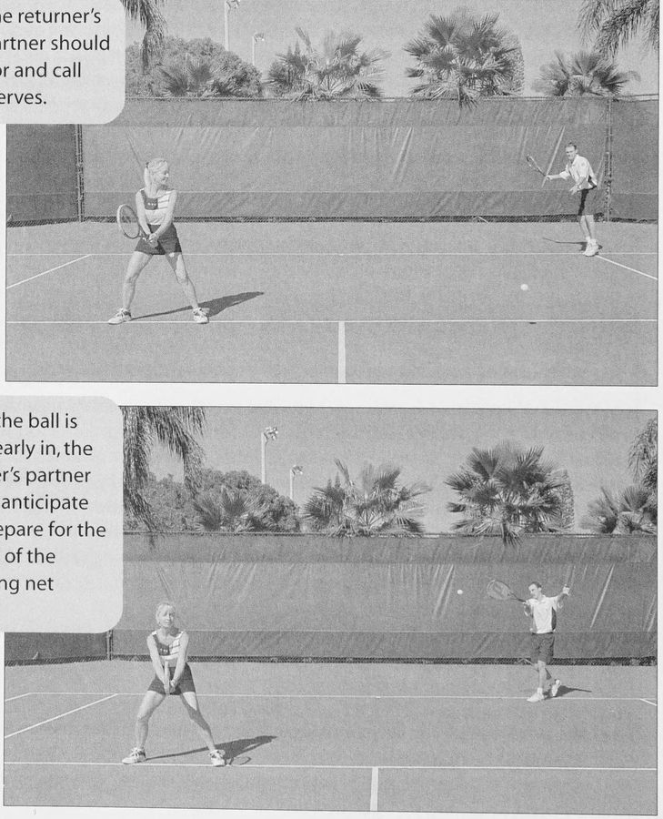
Nhiệm vụ đầu tiên của người này là hô vạch giao bóng. Bạn cặp của người trả giao bóng đang ở vị trí hoàn hảo để hô bóng, và điều này giảm bớt áp lực cho người trả giao bóng. Theo cách này, người trả giao bóng chỉ cần nghĩ đến việc hô vạch giao bóng giữa sân và đường biên dọc, và tất nhiên là đánh trả quả giao bóng.
The first job of this player is to call the service line. The returner’s partner is in perfect position to call the ball, and this takes some pressure off the player returning the serve. This way, all the returner has to think about is calling the center service line and sideline and, of course, hitting the serve back.
Để hô vạch giao bóng, hãy đứng gần vạch giao bóng, mặt hướng về phía lưới, và quay đầu về phía vạch kẻ. Hãy nhìn quả bóng suốt cho đến khi nó chạm sân, nếu có vẻ như nó sắp rơi sát vạch (xem hình 3.6). Nếu có vẻ như cú giao bóng sẽ không rơi gần vạch kẻ, mà vào sân khá sâu, thì bạn nên lập tức hướng sự chú ý sang người đứng lưới ở phía bên kia lưới (xem hình 3.6b). Người đó là người có thể làm bạn đau trước tiên. Nếu bạn tập trung vào người đứng lưới, bạn sẽ có cơ hội tốt hơn để phản ứng với một pha cướp bóng (poach) tiềm tàng.
To call the service line, stand near the service line, facing forward toward the net, and turn your head toward the line. Watch the ball all the way until it lands, if it looks like it is going to be close (see figure 3.6). If it appears that the serve is not going to land close to the line, and itis way in, then youshould immediately direct your attention to the net player on the other side of the net (see figure 3.6b). That player is the one who can hurt you first. If you focus on the net player, you will have a better chance to react to a potential poach.
Hình 3.6a: Bạn cặp của người trả giao bóng nên theo dõi và hô những quả giao bóng sát vạch.
a] The returner’s partner should oe monitor and call close serves.
Hình 3.6b: Nếu bóng rõ ràng vào sân, bạn cặp của người trả giao bóng nên đoán trước và chuẩn bị cho hành động của người đứng lưới bên kia.
If the ball is clearly in, the returner’s partner should anticipate and prepare for the actions of the opposing net . player.
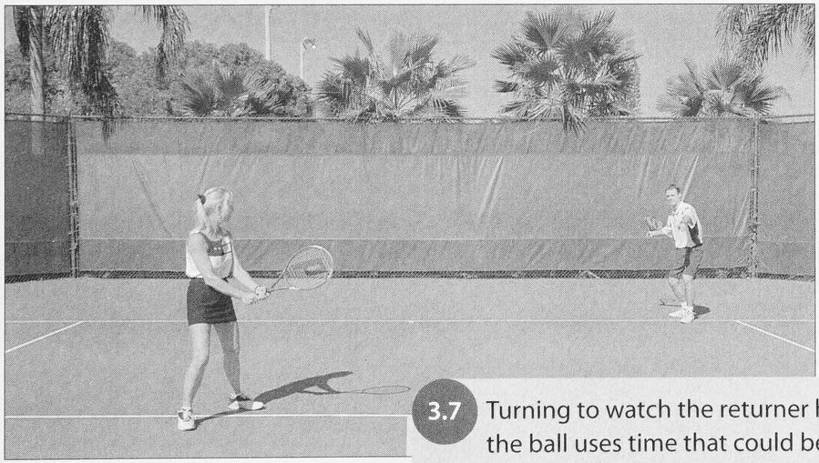
Một số tay vợt giỏi chủ trương nhìn vào người trả giao bóng khi người đó đánh bóng rồi dõi theo quả bóng rời khỏi vợt của người trả giao bóng. Tôi không thích cách làm này. Nếu người đứng lưới cướp bóng (poach), bạn sẽ không có đủ thời gian để phản ứng với quả bóng; bạn sẽ phải quay đầu trở lại về phía bên kia lưới, và bạn sẽ không nắm bắt được động tác của người đứng lưới nhanh như vậy (xem hình 3.7).
Some good players advocate looking at the returner as he or she hits the ball and then following the ball off the returner’s racket. I don’t like this system. If the net player poaches, you won’t have enough time to react to the ball; you will need to turn your head back toward the other side of the net, and you won't pick up the net player’s move as quickly (see figure 3.7).
Một sai lầm phổ biến khác khi hô cú giao bóng là quay mặt về phía vạch kẻ (như một trọng tài biên) để đưa ra phán quyết. Cách đó cũng đủ tốt để hô cú giao bóng, nhưng sau đó bạn phải xoay cả người trở lại về phía lưới để thi đấu. Nếu đối thủ cướp bóng (poach), có lẽ bạn sẽ không kịp sẵn sàng để phản ứng.
Another common mistake in calling the serve is facing the line (like a linesman) to make the call. That works well enough for calling the serve, but then you have to turn your whole body back toward the net to play. If your opponents poach, you probably will not be ready in time to respond.
Vị trí xuất phát của bạn cặp người trả giao bóng nên là khoảng giữa đường giữa sân và đường biên dọc ngoài cùng, và gần vạch giao bóng. Có vài biến số ảnh hưởng đến việc người bạn cặp nên đứng trong vạch giao bóng hay lùi sau vạch đó vài bước. Chất lượng của cú giao bóng là yếu tố đầu tiên cần xem xét. Nếu đối thủ giao bóng đặc biệt tốt, thì người trả giao bóng nên đứng lùi lại một chút ở giao bóng một và bạn cặp của người trả giao bóng cũng nên làm như vậy. Điều này cho cả người trả giao bóng lẫn bạn cặp của người đó thêm một tích tắc thời gian để phản ứng với quả bóng. Một biến số quan trọng khác là độ ổn định của những cú trả giao bóng. Nếu người trả giao bóng đang gặp vấn đề trong việc trả giao bóng, thì bạn cặp cần lùi lại.
The starting position for the returner’s partner should be halfway between the centerline and the outside alley line, and near the service line. A couple of variables affect whether the partner should be inside the service line or behind it a couple of steps. The quality of the serve is the first element to consider. If the opponent is serving particularly well, then the returner should stand back a little on the first serve and the returner’s partner should do the same. This gives both the returner and his or her partner a split second more time to react to the ball. Another critical variable is the consistency of the service returns. If the returner is having problems returning the serve, then the partner needs to move back.
Một trong những người bạn cặp Davis Cup của tôi, Erik van Dillen, cực kỳ giỏi trong việc linh hoạt về vị trí đứng và di chuyển khi tôi trả giao bóng.
One of my Davis Cup partners, Erik van Dillen, was extremely good at being flexible in his positioning and movements when I was returning serve.
Một trong những động tác của anh ấy mà tôi nhớ rõ tỏ ra hiệu quả khi tôi đánh một cú trả bóng kém và nó trở thành một quả bóng dễ cho người đứng lưới bên kia. Thay vì đứng đó phó mặc cho tay vợt đang đổi bên và đang muốn dành cho mình chút “ân huệ”, Erik sẽ lùi lại theo kiểu bước giật trong khi vẫn để mắt vào người bắt vô-lê đối phương và giữ vợt đưa ra trước người (xem hình 3.8).
One of his moves that I remember well was effective when I would hit a poor return that turned out to be a sitter for the other net player. Instead of standing there at the mercy of the player who was crossing and looking to give hima little attention, Erik would backpedal while keeping his eye on the opposing volleyer and keeping his racket out in front of him (see figure 3.8).
Điều này cho anh ấy thời gian để đưa vợt chạm vào bóng, nếu có thể, và huých nó trở lại. Việc quay sang xem người trả giao bóng đánh bóng tiêu tốn thời gian mà lẽ ra nên dùng để dõi theo người đứng lưới.
This gave him time to get his racket on the ball, if possible, and poke it back Turning to watch the returner hit the ball uses time that could be better spent tracking the net player.
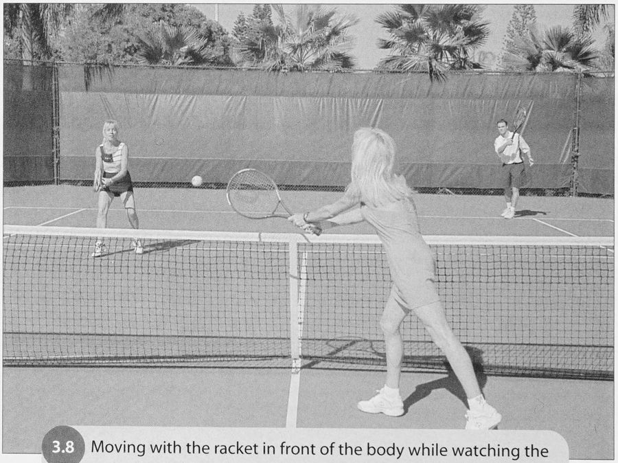
vào cuộc. Ngoài ra, đối thủ cuối cùng sẽ đánh cú vô-lê quá mạnh hoặc quá sâu vì mục tiêu đang di chuyển.
into play. Also, opponents would end up hitting the volley too hard or too deep because of the moving target.
Thông thường sau cú giao bóng một, người trả giao bóng sẽ tiến lên và suy nghĩ theo hướng tấn công; điều đó có nghĩa là cơ hội để cả hai người tận dụng một cú trả bóng tốt được tăng lên. Vậy nên trong tình huống giao bóng hai, bạn cặp của người trả giao bóng nên di chuyển vào bên trong vạch giao bóng và sẵn sàng cướp bóng (poach).
Normally after the first serve, the returner will move forward and think offensively; that means the chance of both players taking advantage of a good return is enhanced. So in a second serve situation, the returner’s partner should move inside of the service line and be ready to poach.
Lỗi phổ biến nhất mà tôi thấy ở vị trí này là sự thụ động. Tôi nghĩ rằng đôi khi người chơi không trực tiếp tham gia vào việc đánh bóng cảm thấy rằng mình không cần phải chú ý cho đến sau khi cú trả giao bóng được thực hiện.
The most common fault I see in this position is passivity. I think that sometimes the player whois not directly involved in hitting the ball feels that he or she does not have to pay attention until after the return of serve is hit.
Việc xem các tay vợt chuyên nghiệp thi đấu có thể là một điều mở mang tầm mắt đối với những tay vợt như vậy. Cả bốn người chơi đều tập trung cao độ mỗi khi bóng vào cuộc, nghĩ về cách họ có thể giúp đội của mình. Tư thế sẵn sàng mà các tay vợt chuyên nghiệp sử dụng, dù họ có đang trả bóng hay không, luôn giống nhau. Hai bàn chân của họ cách nhau khoảng bằng vai hoặc rộng hơn một chút, và đầu gối hơi khuỵu.
It can be quite an eye-opener for such players to watch the pros play. All four players are intensely focused every time the ball goes into play, thinking about how they can help their team. The ready position used by the pros, whether they are returning the ball or not, is always the same. Their feet are about shoulder-width apart or a little wider, and their knees are slightly bent.
Họ đứng trên đầu ngón chân, sẵn sàng tiến lên, thắt lưng hơi khom, rất giống một cầu thủ bóng rổ đang kèm một đối thủ. Họ cầm vợt đưa ra trước người, dùng bàn tay không thuận để đỡ lấy khung vợt ở phần cổ. Họ nhìn chằm chằm đầy căng thẳng vào đối thủ đang đánh bóng, và họ mong đợi mọi quả bóng sẽ đến phía mình. Hãy nhìn vào mắt họ, và bạn có thể thấy rằng họ đang hoàn toàn nhập cuộc vào trận đấu.
They are on their toes, poised to move forward, waist slightly bent, very much like a basketball player guarding an opponent. They hold their rackets out in front of them, using their nondominant hand to support the frame at the throat. They stare intensely at the rival who is hitting the ball, and they expect every ball to come to them. Look into their eyes, and you can see that they are into the match.
Những tay vợt vĩ đại này thực hiện được những pha cứu bóng tưởng chừng như bất khả thi. Đó là kết quả của sự chuẩn bị, việc mong đợi quả bóng sẽ bay về phía mình, khả năng đoán trước nhạy bén, sự hồi vị nhanh, và trong một số trường hợp là những phỏng đoán có cơ sở. Thật đẹp mắt khi xem những cú vô-lê phản xạ được trả lại, nhưng còn thú vị hơn nữa khi thực sự tham gia vào những pha trao đổi bóng nhanh và dữ dội. Lối chơi chất lượng cao bắt đầu từ vị trí đứng tốt, bao gồm một tư thế sẵn sàng đúng đắn.
These great players make seemingly impossible gets. This is the result of preparation, expecting the ball to fly their way, keen anticipation, quick recovery, and, in some cases, educated guessing. It is beautiful to watch reflex volleys come back, but it is even more fun to actually participate in fast and furious exchanges. High-quality play starts with good positioning, including a proper ready position.
4. Tối Đa Hóa Cú Giao Bóng
Một tỉ lệ rất cao các điểm số được định đoạt chỉ trong hai cú chạm bóng đầu tiên, đó là giao bóng và trả giao bóng. Vì lý do này, việc tập trung vào những gì bạn có thể làm để tối đa hóa cú giao bóng và phản công bằng một cú trả giao bóng hiệu quả là điều thiết yếu. Ở chương 3, tôi đã nhấn mạnh tầm quan trọng của việc nắm quyền kiểm soát điểm đấu khi bạn giao bóng. Cú giao bóng nên là một vũ khí lớn kể cả khi nó không có tốc độ cao. Trong đánh đôi, bạn cặp của bạn có thể giúp biến cú giao bóng của bạn thành một vũ khí tốt hơn bằng cách góp phần giữ cho đối thủ mất thăng bằng.
A very high percentage of points are awarded within the first two hits of the ball, the serve and the return of serve. For this reason it is vital to concentrate on what you can do to maximize the serve and to counter with an effective return of serve. In chapter 3, I emphasized the importance of being in control of the point when you are serving. The serve should be a big weapon even if it is not of high velocity. In doubles your partner can help make your serve a better weapon by helping to keep your opponents off balance.
Ở chương 3, tôi đã phác ra những vị trí cơ bản mà mỗi tay vợt nên đứng để bắt đầu một trận đấu và đã nói về việc thay đổi đôi chút các vị trí đó, nếu cần, để đưa đà hưng phấn về phía mình. Trong chương này, tôi sẽ bàn về những điều chỉnh cụ thể mà đội giao bóng — người giao bóng và người đứng lưới — có thể thực hiện. Ở chương 5, tôi sẽ đề cập đến một số điều chỉnh mà đội nhận bóng — người trả giao bóng và bạn cặp của người đó — có thể áp dụng.
In chapter 3, I outlined the basic positions in which each player should stand to begin a match and talked about making some changes to those positions, if necessary, to get the momentum going your way. In this chapter, I deal with the specific modifications the serving team—the server and net player—can make. In chapter 5, I'll cover some adjustments the receiving team—the returner of the serve and his or her partner—can implement.
Hãy nhớ rằng, mục tiêu là giữ cho đối thủ luôn khó chịu và không chắc chắn về việc bạn có thể làm gì hay không làm gì. Trong đánh đôi, bạn có lợi thế là có hai người cùng tác động lên đối phương ở phía bên kia lưới. Bạn không cần phải nhảy nhót và hét vào mặt đối thủ để uy hiếp họ. Vị trí của bạn và những điều chỉnh tinh tế bạn thực hiện khi điểm đấu bắt đầu sẽ đưa ra một thông điệp rất mạnh mẽ.
Remember, the goal is to keep your opponents uncomfortable and uncertain about what you might or might not do. You have the advantage in doubles of having two players to impact your adversaries on the opposite side of the net. Now, you don’t need tojump up and down and shout at your opponents to intimidate them. Your position and the subtle adjustments you make as the point begins will make a very strong statement.
Người Giao Bóng
Server
Ở bên giao bóng, đội của bạn nên có cảm giác nắm quyền chủ động; bạn đang ở thế có thể ghi điểm. Khi bắt đầu mỗi điểm với bạn cặp đứng ở lưới, hãy ý thức rằng đội bạn nhiều khả năng sẽ thắng những game mà mình giao bóng, tức là giữ được game giao bóng. Mục tiêu là ngăn đối phương bẻ giao bóng. Trong môn này, bạn có cơ hội thứ hai nếu đánh hỏng giao bóng một — hãy tận dụng điều đó. Đã nói vậy, tôi sẽ trình bày những cách tận dụng tối đa cả giao bóng một lẫn giao bóng hai.
Being on the serving side should give your team a sense of power; you are in position to score. As you start each point with your partner at the net, be aware that you're likely to win games in which your team is serving or holding serve. The goal is to prevent a service break by the other team. In this sport, you get a second chance if you miss a first serve—take advantage of that fact. Having said that, lam going to relate ways to make the most of both the first and second serves.
Nếu bạn đang gặp khó khăn với cú giao bóng của mình, hãy dùng bảng kiểm sau để đánh giá các động tác kỹ thuật của bạn (bảng 4.1). Hãy đánh giá động tác tung bóng (độ cao, vị trí phía trước và sang bên), tư thế đứng, vị trí tay, vị trí cổ tay, vị trí đầu và sự phân bổ trọng lượng.
If you are struggling with your serve, use the following checklist to assess your mechanics (table 4.1). Evaluate your toss (height, forward, and sideward positions), stance, arm position, wrist position, head position, and weight distribution.
Giao Bóng Một Trước khi nói về một số điều then chốt bạn có thể làm để trở thành người giao bóng hiệu quả hơn, tôi muốn lưu ý điều mà tôi cho là khái niệm nền tảng nhất khi giao bóng trong đánh đôi: hãy cố đạt tỉ lệ giao bóng một vào ô giao bóng thật cao. Lý do điều này là nền tảng của lối đánh đôi tuyệt vời nằm ở chỗ một cú giao bóng một được đặt đúng chỗ cho phép đội bạn tiếp tục nắm quyền kiểm soát trận đấu. Người giao bóng nắm quyền kiểm soát khi bước lên vạch để đánh cú giao bóng một. Nếu đánh hỏng giao bóng một, người trả giao bóng hai bỗng cảm thấy mình đứng ở thế ngang bằng hoặc hơn người giao bóng và sẽ tìm cách tấn công. Một cú giao bóng một bị hỏng lấy đi cảm giác kiểm soát của đội giao bóng và tiếp thêm rất nhiều sức mạnh cho đội nhận bóng. Trước khi bạn đánh cú giao bóng một, đối thủ không biết bạn sẽ tung ra cú bóng 120 dặm/giờ hay 50 dặm/giờ, và sự không chắc chắn của họ có lợi cho bạn.
First Serve Before I talk about some key things you can do to become a more effective server, I want to note what I think is perhaps the most fundamental concept in serving in doubles tennis: Strive to get a high percentage of first serves into the service box. The reason that this is a cornerstone of great doubles is that a well-placed first serve allows your team to stay in charge of the game. The server is in charge when he or she steps up to the line to hit the first serve. If he or she misses the first serve, the player returning the second serve suddenly feels on equal or better footing with the server and will now look to attack. A missed first serve takes away the serving team’s sense of being in control and gives the returning team a great boost. Before you hit the first serve, your opponents don’t know if you are going to send it at 120 miles per hour or 50 miles per hour, and their uncertainty works to your advantage.
Tốc độ của cú giao bóng một bạn tung ra không quan trọng lắm. Nhưng đối thủ biết rằng nếu bạn đánh hỏng giao bóng một, bạn sẽ giảm mạnh lực của cú giao bóng hai để tránh phạm lỗi giao bóng kép. Nếu bạn có thể thực hiện được tỉ lệ cao những cú giao bóng một tốt (kể cả khi không ở tốc độ tối đa) từ nhiều vị trí khác nhau, với nhiều kiểu xoáy khác nhau, và với độ chính xác
The speed of the first serve you deliver doesn’t matter all that much. But your opponents know that if you miss the first serve you will reduce the pace of your second serve dramatically in order to avoid double-faulting. If you can execute a high percentage of good first serves (even at less than top speed) from a variety of positions, with an assortment of spins, and with accurate
Bảng 4.1
Table 4.1
Bảng kiểm đánh giá giao bóng. Giai đoạn giao bóng — Điều cần kiểm tra. Tư thế ban đầu: Hai bàn chân tạo góc khoảng 45 độ so với vạch cuối sân và song song với nhau; trọng lượng hơi dồn về phía trước; tư thế thẳng và thư giãn; hai tay thả lỏng đặt trước thân người ngang tầm bụng. Động tác đưa vợt ra sau: Vợt hạ thẳng xuống, ra sau rồi đưa lên tới vị trí gãi lưng; các động tác tay được đồng bộ. Xoay vai: Thiết lập tư thế xoay người, co lại sang một bên. Kỹ thuật tung bóng: Bóng được giữ bằng hai ngón cuối của bàn tay ở tư thế nghiêng; tay chuyển động chậm và giữ thẳng. Vị trí đầu: Đầu đi theo bóng tung lên và giữ nguyên hướng lên để quan sát điểm tiếp xúc. Chuyển trọng lượng: Trọng lượng cơ thể chuyển về bàn chân sau khi vợt di chuyển. Gập gối: Cơ thể chuyển động lên và ra trước về phía điểm tiếp xúc. Nhịp điệu: Tăng tốc vào cú đánh khi gần tới điểm tiếp xúc. Điểm tiếp xúc: Tay cầm vợt duỗi hoàn toàn; tiếp xúc về phía trước hoặc phía sau sao cho bóng nảy ngay bên trong vạch cuối sân; nhìn từ góc nghiêng, tiếp xúc ở khoảng vị trí 1 giờ với giao bóng một và 12 giờ với giao bóng hai. Động tác kết thúc (follow-through): Vợt tiếp tục di chuyển về phía mục tiêu với động tác xoay cổ tay (pronation) để đặt bóng chính xác, khi đó đội nhận bóng sẽ phải làm được điều gì đó đặc biệt, hoặc có lẽ là liều lĩnh, mới bẻ được giao bóng.
Serving Evaluation Checklist Serve segment What to check for Initial stance Feet at about 45-degree angle to the baseline and parallel to one another Slightly forward weight distribution Upright and relaxed posture Arms relaxed and positioned in front of body at about stomach level Backswing Racket falls straight down, back, and up to back-scratching position Synchronized arm movements Shoulder turn A sideways, coiled position is established Toss technique _ Ball is held in the last two digits of the hand in a sideways position Arm moves slowly and stays straight Head position Head follows the toss up, remains up to watch contact Weight transfer | Body weight shifts to back foot as racket moves Knees bend Movement up and forward toward contact Tempo Acceleration into the shot as contact point is reached Contact point Racket arm is fully extended Forward or backward contact so that ball bounces just inside the baseline Contact occurs, from the side view, at about 1 o'clock for first serve and 12 o'clock for second Followthrough Racket continues moving toward target with arm pronation placement, then the returning team will have to do something special, or perhaps something desperate, to break serve.
Tôi thấy rất thú vị khi xem những tay vợt câu lạc bộ to con, ta đây đánh cú giao bóng một với tốc độ 120 dặm/giờ bay thẳng vào hàng rào cuối sân trong 90 phần trăm số lần, rồi sau đó buộc phải chuyển sang một cú giao bóng hai nhẹ hều chỉ 20 dặm/giờ. Những tay vợt này trông thật oai phong trong khoảnh khắc họ đánh cú giao bóng một mạnh mẽ, nhưng chẳng mấy chốc họ bị những đối thủ thân thiện, vốn chỉ chờ dịp giơ vợt đón cú giao bóng hai mềm như kẹo dẻo ấy, nghiền nát. Một số người trong đám này không hiểu nổi vì sao mình có thể thua những đối thủ "kém cỏi" dù có khả năng đánh cú giao bóng một mạnh hơn hẳn.
I get a kick out of watching big, macho club players hitting the first serve at 120 miles an hour into the back fence 90 percent of the time and then having to resort to a little 20-mile-an-hour dink of asecond serve. These players look good for the instant they hit the big first serve, but they are soon chewed up by friendly adversaries who can’t wait to get a racket on that marshmallow second delivery. Some of these guys can’t understand how they can lose to “substandard” foes despite their ability to hit the first serve so much harder.
Nhiều khi những gã khổng lồ này chẳng có gì khác trong kho vũ khí các cú đánh của mình; họ đập bóng thật lực trong mọi tình huống. Một chút hiểu biết và sự khéo léo có thể giúp
Many times these beasts have nothing else in their repertoire of strokes; they bludgeon the ball on every occasion. A little knowledge and finesse can help
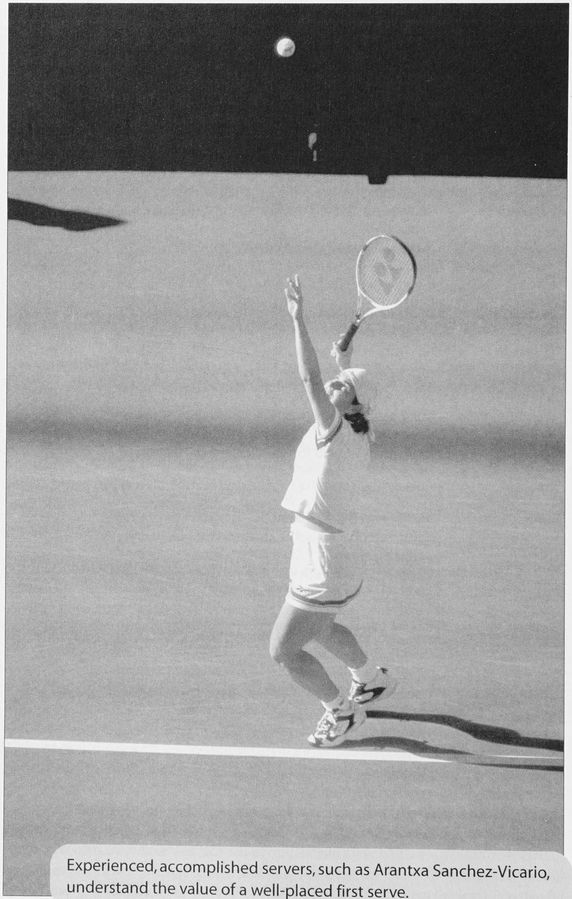
Những người giao bóng dày dạn và tài giỏi, như Arantxa Sanchez-Vicario, hiểu rõ giá trị của một cú giao bóng một được đặt đúng chỗ.
Experienced, accomplished servers, such as Arantxa Sanchez-Vicario, understand the value of a well-placed first serve.
một tay vợt như thế trở thành một đối thủ hiệu quả hơn. Việc pha trộn những cú đánh mạnh với một chút xoáy, góc độ và những cú đánh ổn định khiến cho các cú đánh uy lực trở nên còn tốt hơn nữa. Điều này rất giống một cầu thủ ném bóng chày tung ra vài cú bóng xoáy cong, vài cú bóng trượt và vài cú bóng đổi tốc; người đánh bóng không biết phải chờ đợi điều gì và vì thế luôn bị mất thăng bằng.
a player like this to become a more effective competitor. Mixing up the big shots with some spins, angles, and steady shots makes the forceful shots even better. It is much like a baseball pitcher throwing some curves, some sliders, and some change-ups; the batter doesn’t know what to expect and therefore is kept off balance.
Ở chương 2 tôi đã kể về trận đấu mà Bob Lutz và tôi chơi với cặp đấu tuyệt vời Frew McMillan và Bob Hewitt. Họ có tốc độ giao bóng một rất bình thường, thậm chí là dưới trung bình. Thoạt nhìn, bạn thậm chí có thể nghĩ rằng cú giao bóng của họ chậm đến mức họ không thể nào là một cặp đấu đẳng cấp thế giới.
Imentioned in chapter 2 the match Bob Lutz and I played against the great team of Frew McMillan and Bob Hewitt. They had very average, ifnot below average, speed on their first serves. At first blush, you might even think that their serves had so little speed they couldn’t possibly be a world-class team.
Nhưng khi quan sát kỹ hơn, ngay trên cùng mặt sân và ở phía bên kia lưới đối diện McMillan và Hewitt, bạn sẽ thấy rằng bẻ giao bóng của họ khó khủng khiếp. Vì sao? Họ đưa được những cú giao bóng một cực kỳ chính xác vào sân, khiến bạn hơi mất thăng bằng bằng sự đa dạng và độ chuẩn xác trong việc đặt bóng, rồi nhanh chóng lên lưới. Trừ khi bạn đánh được một cú trả giao bóng xuất sắc, họ sẽ kết thúc bằng cú vô-lê dứt khoát đến mức bạn buộc phải liều lĩnh đánh một cú có xác suất thấp để cố thắng điểm. Họ không để bạn có cơ hội nhìn thấy quá nhiều cú giao bóng hai, và họ đơn giản là không đánh hỏng vô-lê. Sau khi chơi với họ một lần, bạn nhiều khả năng bước ra khỏi sân và tự lẩm bẩm rằng mình đã trả giao bóng tệ đến thế nào và chắc chắn lần sau sẽ hạ được họ. Sau khi chơi với họ lần nữa, cuối cùng bạn sẽ nhận ra rằng những tay vợt này thật sự đẳng cấp và bạn phải nâng trình độ của mình lên mới có cơ hội đánh bại họ.
Upon closer inspection, on the same court and across the net from McMillan and Hewitt, you would find that it was darn difficult to break serve against them. Why? They would get in very accurate first serves, keeping youa little off balance with accurate shot variety and placement, and get to the net quickly. Unless you hit an exceptional return, they would nail the volley so that you would have to resort to a low-percentage shot to try to win the point. They would not let you get a look at too many second serves, and they would just not miss a volley. After playing them once, you would likely walk off the court talking to yourself about how badly you returned serve and how you would surely get them next time. After playing them again, you would finally realize that these guys were the real thing and that you would have to raise the level of your game to have a chance of beating them.
Giao Bóng Hai Yếu tố then chốt quyết định việc một tay vợt có được coi là giao bóng giỏi hay không chính là khả năng đánh cú giao bóng hai. Nói cách khác, cú giao bóng của bạn chỉ tốt ngang với cú giao bóng hai của bạn. Trở thành một người giao bóng giỏi nghĩa là khi bạn thật sự cần đánh một cú bóng sâu, chính xác, xoáy nhiều và đủ lực, bạn có thể làm được điều đó phần lớn thời gian, kể cả dưới áp lực của một cú giao bóng hai.
Second Serve The key element that determines whether a player is considered a good server is how well he or she hits the second serve. That is, your serve is only as good as your second serve. Being a good server means that when you really need to hit a deep, accurate, heavily spun ball with enough pace, you are able to do so most of the time, even under the pressure of a second serve.
Ai cũng có thể vung vợt loạn xạ vào cú giao bóng một và thỉnh thoảng đưa được bóng vào sân, rồi đẩy cú giao bóng hai vào cho xong. Tôi thà chơi với người có cú giao bóng một cực mạnh nhưng giao bóng hai yếu còn hơn chơi với người có giao bóng một trung bình mà giao bóng hai tuyệt vời. Những tay vợt có cú giao bóng hai tuyệt vời thường sở hữu động tác kỹ thuật vững chắc đến mức họ cũng có cú giao bóng một rất tốt. Một tay vợt như vậy là Pete Sampras, người có một trong những cú giao bóng một vĩ đại nhất cũng như một trong những cú giao bóng hai hay nhất mọi thời đại. Khi chơi đánh đôi, anh ấy biết rằng nếu đánh hỏng cú giao bóng một, cú giao bóng hai của mình vẫn sẽ khó xử lý. Anh ấy đã nhiều lần tung ra một cú giao bóng hai tuyệt vời trong những tình huống điểm quan trọng đến mức người ta gần như mặc định chờ đợi điều đó ở anh.
Anybody can flail wildly at the first serve and get it in occasionally, then push the second serve in. I would rather play against someone with a huge first serve and a weak second serve than a player with an average first serve and a great second serve. Players with a great second serve usually possess such solid mechanics that they also have a very good first serve. One such player is Pete Sampras, who has one of the greatest first serves as well as one of the best second serves of all time. When he plays doubles he knows that if he misses the first serve, his second serve will still be hard to handle. He has come through witha great second serve in big-point situations so many times that people kind of expect him to do so.
Cú giao bóng hai thường được đánh với nhiều xoáy hơn, để kiểm soát bóng và giữ bóng trong sân. Cần luyện tập để cảm nhận được bạn có thể đánh cú giao bóng hai mạnh đến mức nào mà vẫn không đưa bóng ra ngoài sân. Hãy xác định thật rõ trong đầu lực đánh và quỹ đạo tối ưu cho cú giao bóng hai ổn định của bạn.
The second serve is generally hit with more spin, to control the ball and to keep it in the court. It takes practice to get a feel for how hard you can hit the second serve and not miss the court. Be very clear in your mind as to your optimal pace and trajectory for your consistent second serve.
Khi đánh cú giao bóng hai, hãy nhớ rằng bạn vẫn đang kiểm soát điểm đấu và vì thế không cần quá dè dặt. Nếu bạn đang phạm quá nhiều lỗi giao bóng kép, hãy giảm bớt lực hoặc tăng thêm xoáy cho bóng.
When you are hitting the second serve, keep in mind that you are still in control of the point and therefore don’t need to be too conservative. If you are double-faulting too much, throttle back the pace or put more spinon the ball.
Cú giao bóng hai có thể trở thành vấn đề nếu bạn mất tự tin. Nếu bạn nghi ngờ khả năng đánh bóng tốt của mình, bạn sẽ bắt đầu cảm thấy căng thẳng. Bạn càng căng thẳng thì càng ít có khả năng giữ được nhịp điệu và kỹ thuật tốt. Khi cảm thấy mình đang căng lên, hãy thử thả lỏng tay nắm vợt và đảm bảo động tác tung bóng chính xác. Hãy nhớ rằng bạn không nhất thiết phải đánh mọi quả bóng đã tung lên. Tôi đã từng thấy McEnroe bắt lại những quả bóng tung ngay trên sân trung tâm Wimbledon chỉ vì chúng chưa thật chuẩn.
The second serve can become a problem if you lose confidence. If you doubt your ability to hit it well, you will begin to feel tense. The more you tense you get, the less likely you are to have good rhythm and technique. When you feel yourself getting tense, try relaxing your grip on the racquet and making sure the toss is accurate. Remember, you do not have to hit every toss. I have seen McEnroe catch tosses on the center court of Wimbledon because they weren't just right.
Một cách luyện tập tốt là chơi chỉ với một cú giao bóng. Điều này buộc bạn phải tập trung vào từng cú giao bóng và giúp bạn ý thức được mình nên đưa bao nhiêu lực và bao nhiêu xoáy vào cú giao bóng.
A good way to practice is to play with only one serve. This forces you to concentrate on every serve and makes you aware of how much power and how much spin you should put into your serve.
Nếu bạn vẫn không thể nhận diện và sửa chữa những vấn đề trong cú giao bóng của mình, hãy tìm đến chuyên gia quần vợt tại địa phương để được hướng dẫn.
If you are still unable to identify and correct your serving problems, see your local tennis professional for guidance.
Giữ Cho Đối Thủ Luôn Phải Đoán Già Nếu đối thủ không biết phải chờ đợi gì ở bạn, họ sẽ rất khó chuẩn bị đầy đủ. Có bốn cách để giữ cho đối thủ luôn phải đoán già. Bạn có thể điều chỉnh vị trí đứng, kiểu giao bóng, điểm đặt bóng và lực đánh. Trong mỗi lĩnh vực này có rất nhiều biến thể mà bạn có thể dùng để khiến đối thủ luôn tự hỏi không biết cú bóng tiếp theo sẽ như thế nào.
Keep Your Opponents Guessing If your opponents don’t know what to expect from you, they will havea hard time being adequately prepared. There are four ways to keep your oppo- nents guessing. You can adjust your positioning, type of serve, placement, and pace. There are many variations within each of these four areas that you can use to keep your opponents wondering what is coming next.
Vị Trí Đứng Khi giao bóng, hãy thay đổi vị trí đứng của bạn trên vạch cuối sân để bóng liên tục tiếp cận đối thủ từ một góc độ khác. Để làm tốt điều này, bạn phải luyện tập giao bóng từ những vị trí khác nhau. Có ba vấn đề về vị trí xuất phát đặc biệt quan trọng: 1. Việc tung bóng đi từ những điểm khác nhau trên vạch cuối sân (xem hình 4.1, trang sau) thật sự khiến đối phương mất thăng bằng. Các tay vợt thường gặp khó khăn trong việc vào gu khi những cú giao bóng họ đang cố trả lại xuất phát từ những vị trí bất ngờ. Điều đặc biệt khiến họ khó chịu là bóng bay về phía thân người họ từ một góc độ khác.
Positioning When serving, vary your positioning on the baseline so that the ball continu- ally approaches the opponent from a different angle. To do this well, you must practice serving from different locations. Three issues about the starting position are especially important: 1. Delivering the ball from different spots on the baseline (see figure 4.1, next page) really does keep the opposition off balance. Players tend to have a hard time getting into a groove when the serves they are attempting to return originate from unexpected locations. It is particu- larly disturbing to them to have the ball come toward their body froma different angle.
2. Bằng việc thay đổi vị trí đứng, bạn đang cố làm cho đối thủ khó chịu, nhưng nếu bạn không luyện tập giao bóng từ những vị trí khác nhau thì chính bạn sẽ cảm thấy khó chịu.
2. By varying your positioning, you are trying to make your opponents uncomfortable, but if you don’t practice serving from different loca- tions, you will feel uncomfortable.
Đôi khi tôi không thể giao bóng một cách tự tin từ một điểm chỉ cách vị trí giao bóng ưa thích của mình vài bước chân. Vì thế tôi luyện tập riêng từ ba hoặc bốn điểm trên vạch cuối sân, cho tới khi tôi cảm thấy thoải mái và có khả năng tung ra từ mỗi vị trí kiểu giao bóng mà tôi muốn dùng trong một tình huống căng thẳng.
| am sometimes not able to serve confidently from a certain spot that is only a few feet from my favorite serving location. I therefore practice specifically from three or four points on the baseline, until I feel comfortable and capable of delivering the type of serve I’d want to use in a tight situation from each position.
Nếu bạn đánh mất lợi thế được thoải mái, thì bạn đang làm hỏng chính mục đích của việc thay đổi vị trí.
If you give up the advantage of being comfortable, then you are defeat- ing the purpose of varying your position.
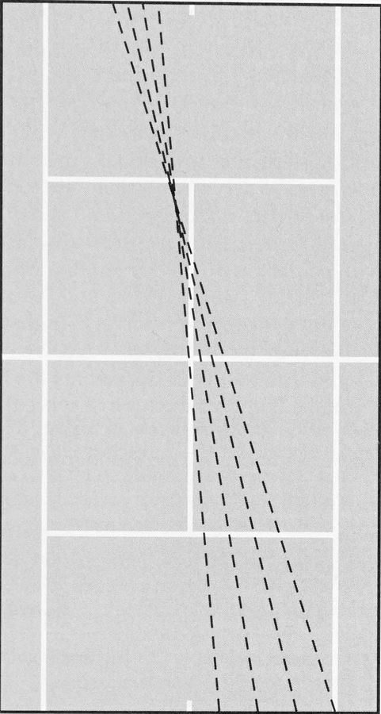
Hình 4.1: Giao bóng từ những vị trí khác nhau. Khi bóng bay tới từ những góc độ khác nhau, người trả giao bóng buộc phải điều chỉnh.
©), W, W, W, positions.When the balls come in from different angles, the returner is forced to make an adjustment.
3. Hãy sắp đặt thế trận với đối thủ để đến khi có một điểm quan trọng, bạn có thể giao bóng từ bất kỳ vị trí nào trên vạch cuối sân mà tay vợt đó gặp khó khăn nhất khi xử lý. Nhờ di chuyển xung quanh, bạn sẽ giữ cho đối thủ không chắc chắn về điều sắp tới, đồng thời làm quen với những điểm yếu trong cú trả giao bóng của họ. Rồi khi bạn thật sự cần một điểm, bạn có thể dùng cú mạnh nhất của mình để đánh vào chỗ yếu nhất của đối phương.
3. Set up your adversary so that on a big point you can hit the serve from whatever location on the baseline that player has the most difficulty dealing with. By moving around you will keep your opponent unsure of what to expect and also become familiar with his or her weaknesses in the return of serve. Then when you really need a point, you can go with your best against his or her worst.
Kiểu Giao BóngType of Serve
Hãy cân nhắc việc thay đổi kiểu giao bóng bạn đánh; điều này kéo theo việc cân nhắc lượng xoáy bạn đưa vào bóng. Một số tay vợt luôn đánh cùng một kiểu giao bóng với cùng một lượng xoáy. Điều đó cũng tốt, miễn là nhờ vậy bạn có thể thắng các game giao bóng của mình một cách dễ dàng. Nhưng những tay vợt giỏi hơn sẽ thích nghi với cú giao bóng đó và bắt đầu trả nó hiệu quả hơn. Mẹo ở đây, cũng giống như với vị trí giao bóng dọc vạch cuối sân, là thay đổi những gì bạn làm để giữ cho đối thủ phải đoán già và để giữ bạn ở thế chủ động.
Consider varying the type of serve you hit; this in turn involves considering the spin you put on the ball. Some players always hit the same type of serve with the same amount of spin on the ball. This is well and good, if by so doing youare able to win your service games handily. But better players will adjust to the serve and start returning it more effectively. The trick, as with your serving positioning along the baseline, is to vary what you do in order to keep your opponents guessing and to keep you in command.
Có ba kiểu giao bóng cơ bản: phẳng, cắt bóng (slice) và xoáy lên (topspin) (xem bảng 4.2).
There are three basic types of serves: flat, slice, and topspin (see table 4.2).
Mỗi kiểu tạo ra một đường nảy khác nhau trên sân và gợi ra một phản ứng khác nhau từ đối thủ. Trước trận đấu, hãy chắc chắn bàn bạc với bạn cặp, huấn luyện viên và những người liên quan về việc đối thủ có khả năng phản ứng thế nào với từng kiểu giao bóng. Sẽ là một sai lầm nghiêm trọng nếu bạn chơi một trận rồi mới phát hiện ra rằng mình đã giao đúng kiểu bóng ưa thích của đối thủ trong mọi lần. Ngay cả các tay vợt chuyên nghiệp cũng có một kiểu giao bóng ưa thích mà họ muốn được nhận nếu được lựa chọn. Tôi khuyên bạn đừng làm ơn cho đối thủ bằng cách chiều theo mong muốn của họ; thay vào đó, hãy buộc họ phải đánh kiểu giao bóng mà họ ít thích nhất.
Each results in a different bounce on the court and elicits a different reaction from your opponents. Before the match, be sure to discuss with your partner, coach, and other involved parties how your opponents are likely to react to each type of serve. It would bea crime to play a match and then find out that you served your opponent's favorite serve every single time. Even the pros have a favorite serve that they would prefer to receive if they were given a choice. I suggest that you don’t do your opponents the favor of catering to their wishes; instead, make them hit the type of serve they like the least.
Bob Lutz và tôi đã chơi một số trận mà chúng tôi phải cẩn thận khi giao một số kiểu bóng nhất định, vì đối thủ sẽ xơi chúng ngon lành như
Bob Lutz and I have played some matches where we had to be careful about serving certain serves because our opponents would eat them up as
Bảng 4.2
Table 4.2
Ba Kiểu Giao Bóng Cơ Bản. Kiểu giao bóng — Cách đánh — Hệ quả. Phẳng: Mặt vợt tiếp xúc phẳng, hướng về mục tiêu; đánh trực tiếp vào phía sau bóng; vung vợt thẳng ra trước. Bóng bay và nảy thẳng tới mục tiêu; vung mạnh hơn để có tốc độ cao hơn. Cắt bóng (slice): Mặt vợt tiếp xúc tạo góc so với mục tiêu; đánh vào phía bên phải của bóng*; vung vợt ngang qua bóng từ trái sang phải*. Bóng nảy thấp và lệch sang trái*; bóng xoáy văng ra ngoài sân ở ô bên phải (deuce)*; vung mạnh hơn để có nhiều xoáy hơn. Xoáy lên (topspin): Mặt vợt tiếp xúc tạo góc so với mục tiêu; đánh vào phía dưới bên trái của bóng*; vung vợt lên trên và từ trái sang phải*. Bóng nảy cao và lệch sang phải*; bóng văng ra ngoài sân ở ô bên trái (ad)*; vung mạnh hơn để bóng nảy xoáy cao hơn. * Cách đánh và hệ quả của cú giao bóng được viết cho người giao bóng thuận tay phải. Người giao bóng thuận tay trái nên đổi mỗi mục được đánh dấu bằng ký hiệu này sang phía ngược lại (ví dụ: "nảy cao và lệch sang phải" với người thuận tay phải sẽ đọc là "nảy cao và lệch sang trái" với người thuận tay trái).
The Three Basic Serves Type of serve How to hit it Consequences Flat Contact with racket face flat Hits and bounces straight through toward target the court Hit directly behind ball Swing harder for more speed Swing straight forward Slice Contact with racket face at Bounces low and to the left* angle to target Spins off court on the deuce side* Hit right side of ball* Swing harder for more spin Swing across ball from left to right* Topspin Contact with racket face at Bounces high and to the right * angle to target Hit the lower left side of ball* Goes off court on the ad side* Swing harder for more kick Swing up and from left to right* * Serving how-tos and consequences are written for right-handed servers. Left- handed servers should change each item marked with this symbol to the opposite side (i.e.,"bounces high and to the right” for a right-handed server would read “bounces high and to the left” for a left-handed server).
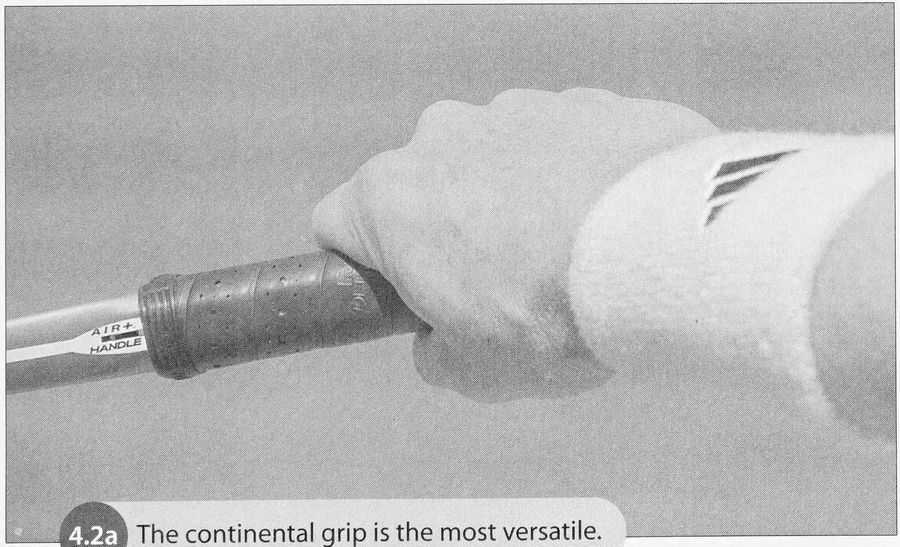
một món tráng miệng ngon lành. Vào ngày chúng tôi chơi với Peter Fleming và John McEnroe ở trận chung kết US Open 1980, Peter xử lý dễ dàng những cú giao bóng phẳng của chúng tôi vào phía trái tay của anh ấy, nhưng lại gặp khó khăn với những cú giao bóng xoáy lên hoặc cắt bóng vào phía trái tay và với những cú cắt bóng vào phía thuận tay. Vì thế chúng tôi giao phần lớn bóng vào hai điểm đó và dùng cú cắt bóng nhắm vào thân người; điều này tỏ ra rất hiệu quả. Nếu chúng tôi tiếp tục giao bóng phẳng xuống giữa sân vào phía trái tay của anh ấy, anh ấy đã khiến chúng tôi trả giá đắt.
they would a tasty dessert. On the day we played Peter Fleming and John McEnroe in the final of the 1980 US Open, Peter was having an easy time with our flat serves to his backhand but was struggling with topspin or slice serves to his backhand and with slice serves to his forehand. We therefore hit the majority of our serves to these two locations and used the slice serve into the body; this proved very effective. If we had continued going flat down the middle to his backhand, he would have hurt us badly.
Một khi bạn nhận ra mình có lựa chọn đánh ba kiểu giao bóng này, bạn phải tự hỏi liệu mình có thể đánh cả ba kiểu giao bóng đó một cách hiệu quả hay không. Cũng như việc giao bóng từ những khu vực khác nhau trên vạch cuối sân, cần luyện tập mới có thể đánh tốt và tự tin từng kiểu giao bóng trong một trận đấu lớn. Hãy chắc chắn rằng bạn hiểu rõ các động tác kỹ thuật, và luyện tập từng cú giao bóng cho tới khi bạn cảm thấy thoải mái thực hiện nó dưới áp lực. Sẽ thật đáng tiếc nếu bạn biết rằng mình nên đánh một kiểu giao bóng cụ thể trong một điểm quan trọng nhưng lại không chắc mình có thể làm được. Ở chương 7, tôi sẽ cung cấp một số bài tập giúp bạn trở nên thành công hơn. Nhìn chung, tay nắm tốt nhất cho mọi kiểu giao bóng là tay nắm kiểu continental (xem hình 4.2a). Có hai trường phái về cách dạy tay nắm đúng cho cú giao bóng. Một là cho người mới bắt đầu với tay nắm kiểu Eastern (hình 4.2b) rồi sau đó, khi họ lớn hơn, khỏe hơn hoặc giỏi hơn, chuyển tay sang trái nhiều hơn để dùng tay nắm kiểu continental. Trường phái kia là đơn giản bắt đầu học giao bóng luôn với tay nắm kiểu continental. Tôi đã nhiều lần đổi ý về vấn đề này nhưng tôi cảm thấy tốt nhất là bắt đầu và giữ luôn tay nắm kiểu continental. Tay nắm này cho phép người chơi đánh cú giao bóng phẳng bằng động tác xoay cổ tay (pronation) và cũng có thể đánh cú cắt bóng hoặc xoáy lên.
Once you realize that you have the option of hitting these three types of serves, you must ask yourself whether or not you can hit all three serves effectively. As with serving from different areas on the baseline, it takes practice to be able to hit each type of serve well and confidently in a big match. Make sure that you understand the mechanics, and practice each delivery until you feel that you would be comfortable executing it under pressure. It would be unfortunate to know that you should hit a particular type of serve ona big point but not be sure that you could pullit off. In chapter 7, V/ll provide some drills that will enable you to become a more successful server. In general, the best grip for all types of serves is a continental grip (see for the serve. One is to start beginners with an Eastern grip (figure 4.2b) and then, as they get older, stronger, or better, have them move the hand more to the left to assume the continental grip. The other is to simply start learning the serve with the continental grip. Ihave gone back and forth on this issue but I feel that it is best to start and stay with the continental grip. This allows a player to hit the flat serve with the pronation of the arm and also to hit the slice or topspin.
Hình 4.2a: Tay nắm kiểu continental là kiểu linh hoạt nhất.
4.2a Wie continental grip is the most versatile.
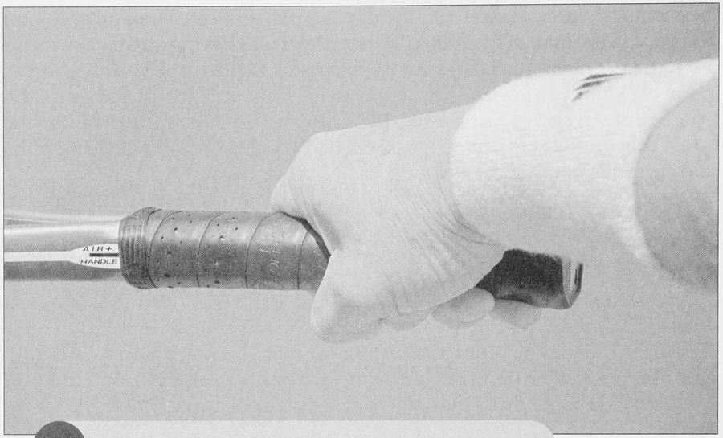
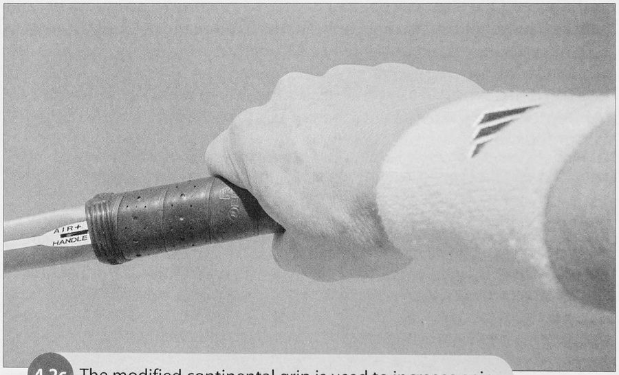
Hình 4.2b: Tay nắm kiểu Eastern dễ nắm bắt hơn với người mới chơi.
710) The Eastern grip is easier for beginners to master.
Để đánh bóng với nhiều xoáy hơn, có thể dịch tay nắm thêm một chút sang trái; điều này cho phép bàn tay dễ dàng tạo ra một cú chạm xượt ngang qua bóng hơn (xem hình 4.2c).
To hit the ball with more spin, the grip canbe moved a little more to the left; this allows the hand to more easily produce a glancing blow across the ball (see figure 4.2c).
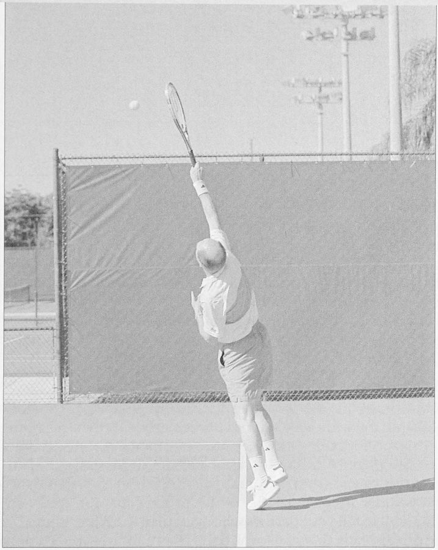
Giao Bóng Phẳng Cú giao bóng phẳng, mạnh là vũ khí lớn. Đây cũng là kiểu giao bóng khó đưa vào sân một cách ổn định nhất. Nếu bóng không vào, bạn bị đẩy vào thế dễ bị tổn thương là phải làm bất cứ điều gì cần thiết để đưa cú giao bóng hai vào sân. Ngày nay nhiều tay vợt thiếu niên, đại học và chuyên nghiệp hàng đầu thường xuyên đánh cú giao bóng một phẳng, mạnh, và họ thường rơi vào rắc rối vì đánh hỏng. Tôi cho rằng bạn có thể đánh cú giao bóng một phẳng trong đánh đôi nếu giảm bớt một chút lực và đánh chính xác vào các góc (xem hình 4.3, a và b). Điều này sẽ giúp đưa được tỉ lệ giao bóng vào sân cao hơn và khiến đối thủ gặp khó khăn.
Flat Serve The hard, flat serve is the big weapon. It is also the most difficult to getinon a consistent basis. Ifit doesn’t go in, you are left in the vulnerable position of having to do whatever it takes to put the second serve in the court. Today many top junior, college, and professional players frequently go for the hard, flat first serve, and they often wind up in trouble because they miss. I think that you can hit the flat first serve in doubles if you take a little pace off the shot and hit it accurately into the corners (see figure 4.3, aand b). This will put a higher percentage of serves in and make things tough on your opponents.
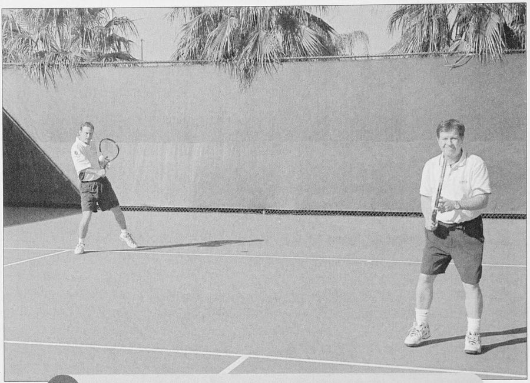
Một cú giao bóng phẳng vào góc rất khó xử lý, ngay cả với những tay vợt giỏi. Một số tay vợt quần vợt rất thích trả những quả bóng được đánh phẳng, kể cả khi bóng được đánh khá mạnh. Những tay vợt này tận dụng lực mà đối thủ truyền vào bóng; họ chặn bóng ngay dưới chân người giao bóng đang lao lên lưới, và đánh bóng chắc và sâu về phía vạch cuối sân nếu người giao bóng ở lại phía sau. Những tay vợt như vậy trông có vẻ bất khả chiến bại vì họ trả kiểu giao bóng này quá tốt. Nhưng mặt khác, họ có thể lại không thể trả nổi một cú giao bóng có nhiều xoáy hơn là lực và nảy khá cao.
A flat serve into the corner is tough to handle, even for good Some tennis players love to return a ball that is hit flat, even if it is hit fairly hard. These players use the pace their opponents put on the ball; they block the ball at the feet of the net rushing server, and hit it firm and deep toward the baseline if the server stays back. Players like this seem invincible because they return this type of serve so well. They may, on the other hand, be unable to return a serve that has more spin than pace and that bounces quite high.
Khi đối mặt với kiểu giao bóng đó, vẻ bất khả chiến bại của họ có thể bỗng chốc bị thay bằng sự mong manh. Thật kinh ngạc khi chứng kiến sự tự tin của một tay vợt như vậy sụt giảm và thấy một người phàm trần trở lại ở phía bên kia lưới.
Faced with that type of serve, their seeming invincibility may suddenly be replaced by vulnerability. It is amazing to watch the confidence of such a player drop and to see a mere mortal again on the other side of the net.
Cắt Bóng (Slice) hay Bóng Trượt (Slider)
Slice or Slider”
Vì rất nhiều tay vợt dùng tay nắm bán Western hoặc tay nắm Western hoàn toàn cho cú thuận tay, cú giao bóng cắt bóng rộng sang bên đặc biệt hiệu quả (xem hình 4.4, a và b). Cú giao bóng này khó xử lý với người trả giao bóng vì bóng trượt đi và giữ độ nảy thấp sau khi chạm đất. Nó thường tạo ra những lỗi trực tiếp hoặc những cú đánh trúng không ngay giữa vợt có thể bay đi bất cứ đâu. Giao bóng rộng sang bên tạo tiền đề cho một tổ hợp một-hai tuyệt vời vì nó mở ra khoảng giữa sân cho cú đánh tiếp theo của bạn. Điều quan trọng là phải báo cho bạn cặp biết khi bạn định đánh cú "bóng trượt", để người đó sẵn sàng dịch chuyển về phía hành lang biên một chút để đỡ cú trả bóng có thể
With so many players using a semi-Western grip or full Western grip for the forehand, the wide slice serve is particularly effective (see figure 4.4, a and b). This serve is difficult for the returner to handle because it slides away and stays low after it hits the ground. It often produces outright errors or mis-hit shots that can go anywhere. Hitting wide sets up a great one-two combina- tion because it opens up the center of the court for your next shot. It is important to tell your partner when you plan to hit the “slider,” so that he or she can be ready to move toward the alley a little to cover a possible return
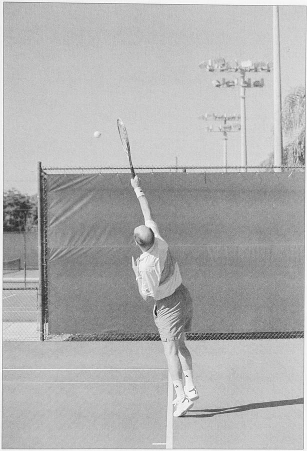
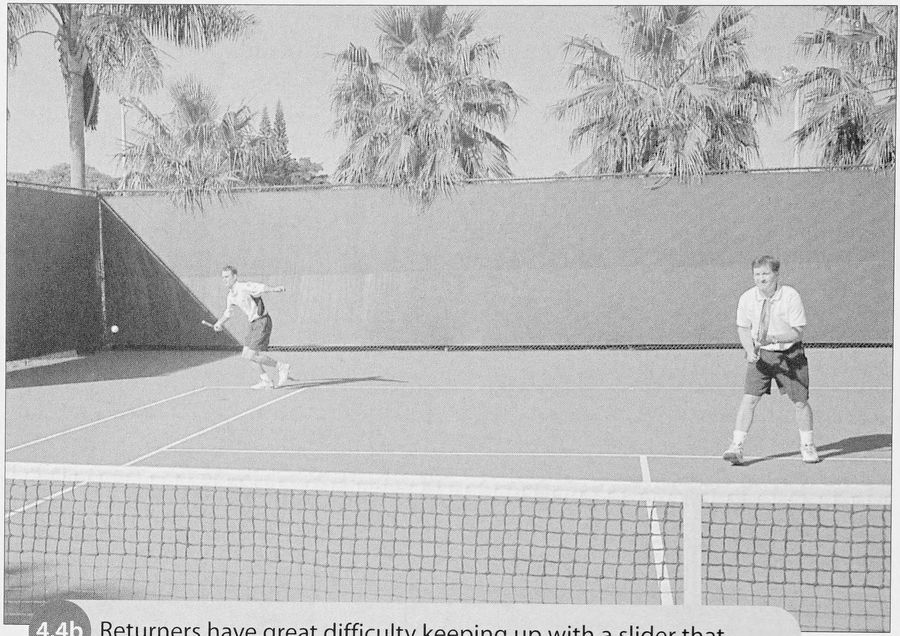
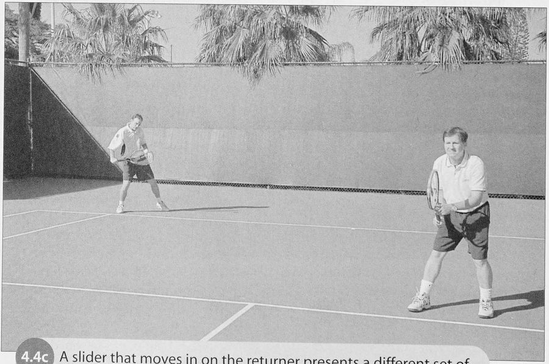
Hình 4.4c: Cú bóng trượt bay vào người người trả giao bóng tạo ra một thách thức khác.
4Ac A slider that moves in on the returner presents a differ “Challenges.
dọc biên. Nếu cú giao bóng cắt rộng sang bên không được đánh tốt như người giao bóng mong muốn hoặc nếu người trả giao bóng đã đoán trước được nó, thì người đứng lưới phải cảnh giác với cú đánh dọc biên. Cú đánh dọc biên là cú bóng đi quãng đường ngắn nhất và mất ít thời gian nhất để vượt qua người đứng lưới, vì thế đó là cú đánh đầu tiên cần phòng bị.
down the line. If the wide, slice serve is not hit as well as the server had hoped or if the returner has anticipated it, then the net player has to be alert for the shot down the line. The down-the-line shot is shortest and takes the least amount of time to get by the net player, so that is the first shot to cover.
Cách khác để dùng cú bóng trượt là đánh sao cho bóng bay vào thân người trả giao bóng, làm hạn chế khả năng di chuyển của người đó (xem hình 4.4c). Đây là một cú giao bóng đặc biệt khó trả bằng trái tay; tình huống này giống như một cầu thủ bóng chày chống đỡ một cú bóng xoáy cong bay vào người. Người trả giao bóng khó có thể tung ra được một cú đánh tốt và chắc chắn.
The other way to use the slider is to hit it so that it moves into the re- turner’s body, cramping his or her ability to move (see figure 4.4c). This is a particularly difficult serve to return with the backhand; the situation is similar to that of a baseball batter fighting off an inside curveball. The returner is unlikely to get off a good solid shot.
Cú giao bóng cắt bóng hay bóng trượt được thực hiện bằng cách đánh bóng bằng một cú chạm xượt truyền xoáy ngang. Bóng nhận xoáy ngang vì mặt vợt hướng về mục tiêu khi bóng rời vợt, nhưng đường đi của vợt lại hơi lệch sang một bên. Cảm giác là bạn đang vung vợt vòng quanh phía ngoài quả bóng, với bàn tay khum quanh bóng (xoay vào trong), dẫn dắt bởi ngón út.
The slice or slider serve is executed by hitting the ball witha glancing blow thatimparts sidespin. The ball picks up sidespin because the racket is facing the target as the ball leaves the racket, but the path of the racket is slightly to the side. The feeling is that you are swinging around the outside of the ball, with the hand cupping the ball (turning inward), led by the little finger.
Trên thực tế, ngay khi bạn tiếp xúc với bóng, cẳng tay xoay (lòng bàn tay hướng xuống), với ngón cái dẫn dắt động tác xoay của bàn tay. Cảm giác mới là điều bạn nên tập trung vào; thực tế sẽ tự lo liệu cho chính nó. Âm thanh của cú cắt bóng là tiếng vút nhẹ hoặc tiếng quất, chứ không phải tiếng nổ chắc gọn của cú giao bóng phẳng.
In reality, as soon as you make contact with the ball, the arm pronates (palm turns downward), with the thumb leading the turning of the hand. The feeling is what you should focus on; the reality will take care of itself. The sound of the slice is a soft whooshing or whipping sound rather than the solid pop of the flat serve.
Xoáy Lên Cú giao bóng xoáy lên hay giao bóng nảy xoáy (kick) là lựa chọn hàng đầu của phần lớn những tay vợt giỏi vì bóng chúi xuống sau khi bay qua lưới. Cú đánh này có thể vượt qua lưới khá cao mà vẫn vào được ô giao bóng. Nó cũng có thể được đánh với những mức xoáy ngang khác nhau, khiến bóng không chỉ nảy cao mà còn lệch sang phải (với người thuận tay phải; sang trái với người thuận tay trái) sau khi nảy. Điều này mang lại cho đối thủ một quả bóng cao để xử lý, đồng thời buộc người đó phải với tay bằng trái tay để tiếp xúc bóng. Đây là một cú giao bóng khó trả với những tay vợt đánh trái tay một tay hoặc hai tay.
Topspin The topspin or kick serve is the serve of choice for most good players because it dips down after going over the net. This shot can clear the net by quite a bit and still go into the service box. It can also be hit with various degrees of sidespin, which will not only cause it to bounce high but also to veer off to the right (for right-handed players, to the left for lefties) after it bounces. This gives the opponent a high ball to handle and also forces him or her to reach out witha backhand to make contact. This is a difficult serve for players with one-handed or two-handed backhands to return.
Thật ra phần lớn tay vợt đánh cú giao bóng một với một chút xoáy lên để giúp bóng rơi xuống an toàn vào ô giao bóng sau khi vượt qua lưới. Nên luyện tập sử dụng những lượng xoáy khác nhau, để bạn có thể áp dụng lượng xoáy thích hợp một cách tự tin trong tình huống giao bóng hai ở một điểm quan trọng.
Most players actually hit the first serve with a little topspin to help it come down safely into the servie box after going over the net. It is a good idea to practice using different amounts of spin, so that you can apply the appropri- ate amount with confidence during a big-point, second-serve situation.
Hãy cố ý đánh một vài quả với rất ít xoáy, một vài quả với nhiều xoáy hơn, và một vài quả với lượng xoáy rất lớn. Nhờ một tay vợt khác hoặc một huấn luyện viên cố gắng xác định lượng xoáy.
Make a conscious effort to hit a few with just a little spin, some with more spin, and some with a great deal of spin. Have another player or a coach try to determine the amount of spin.
Cú giao bóng xoáy lên (cú xoáy kiểu American twist là phiên bản cực đoan của giao bóng xoáy lên) được đánh bằng cách vuốt vợt lên trên và ngang qua phía sau quả bóng, từ trái sang phải với người thuận tay phải và từ phải sang trái với người thuận tay trái.
The topspin serve (the American twist is the extreme version of the topspin serve) is hit by brushing the racket up and across the back of the ball, from left to right for right-handed players and from right to left for lefties.
Đôi chân cần gập xuống và bật lên để truyền thêm lực đẩy hướng lên vào bóng.
The legs need to bend and spring up to put more upward thrust into the ball.
Động tác tung bóng nên ra sau và hơi lệch sang trái, để bạn có thể nắm được bóng một cách thuận lợi. Điều quan trọng là phải vung vợt mạnh, đây không phải là xu hướng tự nhiên khi bạn đang cố kiểm soát bóng. Bằng cách vung mạnh và vuốt bóng dứt khoát, bạn sẽ có nhiều xoáy hơn và do đó kiểm soát tốt hơn. Lượng xoáy này khiến bóng đi theo một quỹ đạo cong hơn qua lưới và bật lên — văng ra xa khỏi phía trái tay của người thuận tay phải (xem hình 4.5a) hoặc bật lên và bay vào phía thân người ở cú thuận tay (xem hình 4.5b) — khi chạm đất. Nếu bóng được vuốt đúng cách, bạn sẽ nghe thấy tiếng vút hoặc tiếng quất, chứ không phải tiếng nổ bụp, ở thời điểm tiếp xúc. Nhiều tay vợt gặp khó khăn khi thực hiện đúng cú giao bóng này.
The toss should be back and a little to the left, in order to allow you to get a good grip on the ball. It is important to swing hard, which is not a natural inclination when you are trying to get control. By swinging hard and brushing the ball forcefully, you will get more spin and therefore more control. This spin causes the ball to take more of an arc over the net and to kick up—away from the backhand of a right-hander (see figure 4.5a) or up and in toward the body ona forehand (see figure 4.5b)—when it bounces. If the ball is being brushed properly, you should be able to hear a whooshing or whipping sound, rather than a popping sound, at contact. Many players struggle to execute this serve correctly.
Điểm Đặt Bóng Yếu tố thứ ba mang lại cho bạn cơ hội giữ cho đối thủ mất thăng bằng là điểm đặt bóng. Có vẻ hiển nhiên rằng bạn muốn đánh bóng vào các góc để đối thủ không thể giơ vợt tới bóng. Đó sẽ là điều lý tưởng, nhưng trong quần vợt cũng như trong cuộc sống, điều lý tưởng thường khó đạt được.
Placement The third element that will give you an opportunity to keep your opponents off balance is placement. It may seem obvious that you’d want to hit the ball into the corners so that your opponents can’t get a racket on the ball. That would be ideal, but, in tennis as in life, the ideal is often difficult to achieve.
Trong lúc khởi động cho trận đấu, hãy xác định cú đánh nào là yếu nhất trong kho vũ khí của từng đối thủ, để khi bạn thật sự bị dồn vào chân tường, bạn sẽ biết nên giao bóng thế nào và ở đâu. Một khi xác định được cú đánh yếu nhất của mỗi đối thủ, bạn sẽ biết vị trí đứng và kiểu giao bóng nào có khả năng hiệu quả nhất khi đối đầu với người đó.
While you are warming up for your match, determine which shot is the weakest shot in the repertoire of each of your opponents so that when you really have your back against the wall, you will know how and where to serve. Once you determine each opponent's weakest shot, you will know what position and type of serve is likely to be most effective against him or her.
Khi chơi với một tay vợt nhỏ con, ít có tầm với, cú giao bóng vào góc là một cú giao bóng rất khôn ngoan để sử dụng. Đối thủ của bạn sẽ liên tục phải lao người để đưa bóng trở lại. Nếu bạn thay đổi luân phiên các góc, tay vợt đó sẽ không biết phải đi về hướng nào và luôn bị căng người với bóng.
When playing a smaller player who does not have much reach, the serve into the corner is a very smart serve to use. Your opponent will be continu- ally lunging to get the ball back. If you vary the corners, the player will not know which way to go and will always be on the stretch.
Với một số đối thủ nhất định, cú giao bóng vào góc có thể phản tác dụng nếu bạn không đánh thật chuẩn. Một tay vợt cao lớn, sải tay dài thích nhìn thấy bóng ở xa khỏi thân người; giao bóng về phía các góc có thể đưa bóng ngay vào vùng đánh thuận lợi của người đó nếu bạn không đánh chính xác vào đúng nơi bạn muốn. Điều này sẽ cho phép tay vợt đó vung vợt thoải mái và đầy uy lực. Cú giao bóng hiệu quả hơn với kiểu tay vợt này là cú giao bóng bay vào phía thân người. Nó làm hạn chế động tác vung vợt của người chơi và buộc người đó phải đẩy bóng trả lại thay vì thoải mái vung vợt vào bóng. Tôi biết cảm giác này vì nó đã làm tôi bực bội suốt bao năm (xin đừng mách với bất kỳ người bạn nào của tôi — những người kém tinh ý, chưa nhận ra điều này, sẽ có lợi thế trước tôi trong lần tới chúng tôi chơi với nhau).
Against certain opponents, the serve into the corner may backfire if you don’t hit it just right. A tall, rangy player likes to see the ball out away from the body; serving toward the corners might put the ball right in his or her strike zone if you don’t hit it precisely where you want it. This will enable the player to swing away with fluidity and power. The serve that is more effective against this type of player is one that goes in toward the body. This cramps the player’s swing and forces him or her to push the return back instead of taking a free swing at the ball. I know this feeling because it has frustrated me over the years (please don’t tell any of my buddies—the less observant ones who haven’ figured this out yet will have an edge on me the next time we play).
Bạn có thể đánh bóng vào phía thân người bằng cú giao bóng phẳng, cú nảy xoáy (kick) hoặc cú cắt bóng. Rất khó để người trả giao bóng xử lý kiểu giao bóng này khi không biết hướng bóng bay tới hay kiểu xoáy của bóng. Tôi biết một số tay vợt có thể xử lý được cú giao bóng phẳng bay vào thân người, nhưng họ thật sự bối rối và không thể tạo ra chút lực nào khi cú giao bóng bay tới với tốc độ chậm hơn và lượng xoáy rất lớn.
You can hit the ball into the body with a flat, kick, or slice serve. It is very difficult for a returner to handle this kind of serve without knowing the direction it will come from or the type of spin it will have. I know some players who can handle a serve into the body that is flat, but they get really confused and can’t generate any power when a serve comes in at slower pace and with a great deal of spin.
Lực Đánh Việc tận dụng vị trí đứng, độ xoáy và điểm đặt bóng, cùng những lựa chọn trong các lĩnh vực đó, cho phép bạn liên tục trình ra đối thủ những cú giao bóng khác nhau. Còn một yếu tố nữa có thể làm gia tăng thêm các lựa chọn của bạn.
Pace Making use of positioning, spin, and placement, and the options within those areas allows you to continually present a different serve to your opponents. There is another element that can further increase your options.
Đó là lực đánh.
That is pace.
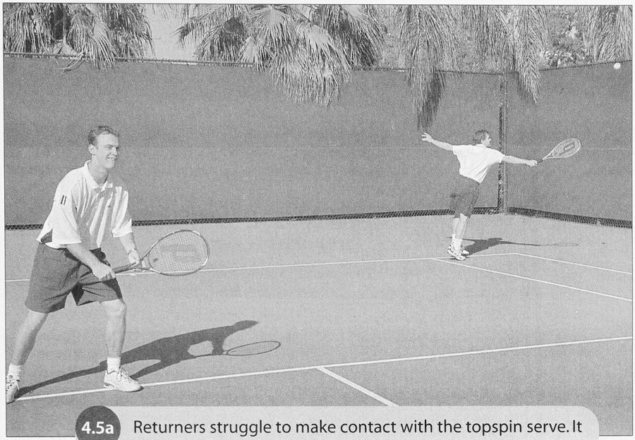
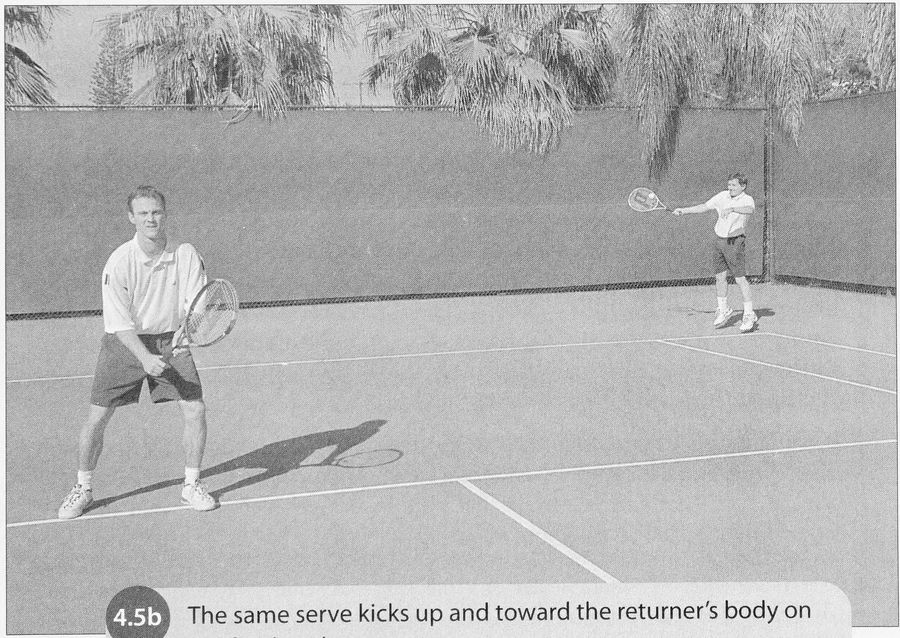
Hình 4.5a: Người trả giao bóng gặp khó khăn khi tiếp xúc với cú giao bóng xoáy lên. Bóng bật lên và văng ra xa khỏi phía trái tay.
“Ey Returners struggle to make contact with the topspin serve. It kicks up and away from the backhand.
Hình 4.5b: Cú giao bóng tương tự bật lên và bay về phía thân người trả giao bóng ở bên thuận tay.
es The same serve kicks up and toward the returner’s body on the forehand.
John Newcombe – Tony Roche Vào cuối thập niên 60 và đầu thập niên 70, Tony Roche và John Newcombe đặt ra chuẩn mực cho lối đánh đôi nam. Một đội đã đánh bại được họ là đã đánh bại những người giỏi nhất, và đó là một thành tích thật sự. Hai người này lớn lên cùng nhau ở Úc rồi cùng nhau đi khắp thế giới như một cặp đấu trong khoảng 25 năm. Họ đã đại diện cho đất nước mình thi đấu Davis Cup nhiều lần và thật ra còn làm việc cùng nhau trong thập niên 90 với vai trò đội trưởng và huấn luyện viên Davis Cup thành công.
John Newcombe-Tony Roche In the late ‘60s and the early ‘70s, Tony Roche and John Newcombe set the standard for men’s doubles play. A team that had beaten them had beaten the best, and this was a real accomplishment. These two guys grew up together in Australia and then traveled the world as a tandem for about 25 years. They represented their country in Davis Cup play several times and, in fact, worked together in the’90s as a successful Davis Cup captain and coach.
Trong thời kỳ thi đấu của họ, "Newk", một tay vợt thuận tay phải, là thủ lĩnh trên sân, toát lên vẻ tự tin lớn và phong thái đáng gờm. "Rochee", một tay vợt thuận tay trái, là người rèn giũa cả đội trên sân tập bằng lối chơi thẳng thắn, không màu mè của mình.
In their playing days, “Newk,” a right-hander, was the captain on the court, exhibiting an air of great confidence and an intimidating manner.“Rochee,” a left-hander, worked the team on the practice court with his no-nonsense style of play.
Newk và Rochee rất ổn định khi đánh cặp. Không có điểm yếu rõ rệt nào trong lối chơi của họ, và họ có thể gây tổn thương cho đối phương theo nhiều cách.
Newk and Rochee were very consistent as a team. There were no obvious weaknesses in their game,and they could hurt their opposition in many ways.
Newcombe thích mạo hiểm và khiến đối thủ phải trả giá vì không giao được bóng vào phía trái tay của anh ấy. Anh ấy sẽ chạy vòng qua để đánh cú giao bóng hai và giáng cú thuận tay vào ngay dưới chân đối thủ, và khi họ ngẩng lên sau khi đánh cú vô-lê sát dây giày ấy thì anh ấy đã ở trên lưới, đập một cú vô-lê xuyên thẳng qua người họ. Anh ấy cũng thích cướp bóng (poach) từ cú trả giao bóng của bạn cặp, cú này được bấm bóng (chip) bằng trái tay hoặc đánh xoáy lên bằng thuận tay. Dù thế nào, đối phương cũng phải nhanh chóng tiến lên để đánh cú vô-lê đầu tiên với một quả bóng ngắn, thấp. Nếu họ không đánh cú vô-lê dứt khoát, Newk sẽ cướp bóng, nên các tay vợt có xu hướng nhìn vào anh ấy thay vì nhìn vào bóng.
Newcombe liked to take chances and make players pay for not getting the serve to his backhand. He would run around the second serve and belt the forehand at their feet, and when they looked up after hitting the shoestring volley he would be up at the net poppinga volley right through them.He also liked to poach off his partner’s return of serve, which was chipped off the backhand or topspinned off the forehand. Either way, Opponents had to quickly move forward to hit the first volley off a short, low ball. If they didn’t hit the volley firmly, Newk would poach,so there wasa tendency for players to be looking at him instead of the ball.
Khi giao bóng, họ có lợi thế là tạo ra diện mạo khác nhau trong mỗi game giao bóng. Newk có cú giao bóng một và giao bóng hai nặng, sâu, và anh nhanh chóng theo bóng lên lưới. Rochee có cú giao bóng cắt xoáy mạnh của một tay vợt thuận tay trái, bóng giữ độ nảy thấp, xoáy văng ra xa khỏi phía trái tay của người thuận tay phải hoặc bay vào thân người.
As a serving team they had the advantage of presenting a different look on every service game. Newk had a heavy, deep first and second serve, which he followed quickly to the net. Rochee had a heavily sliced lefty delivery that stayed low, swinging away from a right-hander’s backhand or into the body.
Rất khó tấn công cú giao bóng của anh ấy dù nó không được đánh mạnh; đến khi đối thủ đánh được bóng thì Tony đã ở trên lưới. Cú vô-lê trái tay của anh được các tay vợt chuyên nghiệp khác coi là một vũ khí chết người. Mục tiêu là cố trả giao bóng vào phía vô-lê thuận tay của anh, nhưng bên đó anh cũng không hề yếu. Trên hết, John luôn ở trên lưới, sẵn sàng chặn bất kỳ cú trả bóng nào không được đánh thật chuẩn. Vì vậy, rất khó bẻ giao bóng của cặp đôi này, và đối thủ phải nỗ lực rất nhiều mới giữ được game giao bóng của mình. Cuối cùng họ sẽ bào mòn đối phương và giành thêm một chữ "W" (thắng).
It was hard to attack his serve even though it was not hit hard; by the time an opponent hit it, Tony was at the net. His backhand volley was considered a lethal weapon by the other pros. The goal was to try to return serve to his forehand volley, but he wasn’t too weak on that side either. On top of that, John was always up at the net, ready to intercept any return that wasn't hit just right. So, it was very hard to break serve against this duo,and opponents had to work really hard to hold serve.Eventually they would break down their Opponents and come up with another”W" (win).
Phong cách của họ mang tính tấn công, và sự phối hợp đồng đội của họ rất hiệu quả. Vì Newcombe và Roche quá ổn định, họ chơi tốt trên cả mặt sân chậm lẫn mặt sân nhanh. Sự hợp tác lâu dài cho họ thêm lợi thế là có thể đoán trước mọi bước di chuyển khả dĩ của nhau trên sân.
Their style was aggressive, and their teamwork was effective. Because Newcombe and Roche were so consistent, they played wellon both slow and fast surfaces. Their long-term partnership gave them the additional advan- tage of being able to anticipate each other's every possible move on the court.
Như tôi đã đề cập trước đó, người trả giao bóng không biết người giao bóng sẽ đánh cú giao bóng một với lực rất mạnh hay chỉ đưa bóng vào sân nhẹ nhàng. Cũng như trong bóng chày, nơi cú bóng đổi tốc có thể rất hiệu quả nếu người đánh bóng đang chờ cú bóng nhanh, điều này có lợi cho người giao bóng. Tôi sẽ không bao giờ quên lần đầu tiên chơi với Arthur Ashe. Chúng tôi chơi ở câu lạc bộ quần vợt nổi tiếng Los Angeles Tennis Club, trên sân trung tâm.
As I mentioned earlier, returners don’t know if the server will hit the first serve with great force or just roll the ball in. As in baseball, where the change- up can be quite effective if the batter is waiting for the fastball, this works to the server's advantage. Ill never forget playing against Arthur Ashe the first time. We played at the famous Los Angeles Tennis Club, on the center court.
Tôi đã nghe nói về cú giao bóng một uy lực của anh ấy, nên tôi đã vạch sẵn kế hoạch để xử lý: tôi sẽ đứng lùi ra sau vạch cuối sân khoảng ba bốn bước chân.
Thad heard about his great booming first serve, so | had a game plan set to handle it: I would stand back behind the baseline about three or four feet.
Điều đó sẽ cho tôi thêm chút thời gian để phản ứng với quả bom lớn mà anh ấy sẽ giáng vào tôi. Tôi không biết liệu Arthur có đọc được suy nghĩ của tôi hay không (một bộ óc 18 tuổi còn khá non nớt), nhưng anh ấy giao cú giao bóng một của mình ở khoảng hai phần ba tốc độ trong suốt set đầu. Nhịp điệu của tôi hoàn toàn rối loạn, và tôi liên tục đưa cú trả giao bóng bổng lên để đối phương dễ dàng dứt điểm bằng cú vô-lê. Ngoài ra, vì tôi đứng quá xa, anh ấy liên tục đánh cú giao bóng chậm, ngắn, cắt xoáy mạnh, rộng sang bên thuận tay của tôi, khiến tôi phải chạy tới tận hàng rào bên. Tôi đoán bốn năm chơi quần vợt đại học đã dạy anh ấy điều gì hiệu quả trong những tình huống như thế này. Tôi nghĩ rằng bất cứ lúc nào anh ấy cũng sẽ tung ra cú bóng lớn, nên tôi vẫn đứng lùi cho tới khoảng giữa set hai. Sau khi bị đau người vì chạy đâm vào hàng rào bên và bị bẽ mặt suốt một giờ đồng hồ, cuối cùng tôi cũng tiến lên. Bạn đoán đúng rồi. Anh ấy giao vài quả bom — trận đấu kết thúc.
That would give mea little more time to react to the big bomb he would slam at me. I don’t know if Arthur had read my mind (an 18-year-old, fairly unused mind), but he served his first serve at about two-thirds speed for the whole first set. My rhythm was totally off, and I kept popping the return of serve up for an easy, put-away volley. Also, because I was so far back, he kept hitting this slow, short, heavily sliced serve wide to my forehand that would take me into the side fence. I guess his four years of college tennis had taught him what worked in situations like this. I thought that at any moment he would hit the big one, so I stayed back until about midway through the second set. Having been physically bruised from running into the side fence and emotionally embarrassed for an hour, I finally moved up. You guessed it. He served a couple of bombs—end of match.
Hãy tưởng tượng nếu bạn có ba biến thể về vị trí, ba biến thể về xoáy và ba biến thể về điểm đặt bóng, rồi pha trộn chúng với vài biến thể về tốc độ. Ai có thể vào được gu khi trả giao bóng trước bạn chứ? Tất cả những gì bạn phải làm là luyện tập giao bóng từ ba vị trí, luyện tập ba kiểu giao bóng xoáy khác nhau, luyện tập đánh vào hai góc cũng như vào thân người, và rèn luyện việc thực hiện tất cả những điều đó ở các tốc độ khác nhau (xem chương 7 để biết các bài tập cụ thể). Chỉ đơn giản như vậy để mang đến cho những đối thủ quen mặt của bạn đủ sự đa dạng dùng cả đời.
Imagine if you had three position variations, three spin variations, and three placement variations, and mixed those up with a couple speed varia- tions. Who could ever get into a groove returning serve against you? All you have to do is practice serving from three positions, practice three different spin serves, practice hitting into the two corners as well as into the body, and work on doing all these things at different speeds (see chapter 7 for specific drills). It is as easy as that to give your favorite opponents enough variety to last a lifetime.
Người Đứng LướiNet Player
Tôi đã đề cập ở đầu chương này rằng trong đánh đôi, bạn có lợi ích từ một người bạn cặp, người có thể giúp bạn thắng những game mình giao bóng. Chiến thắng là nỗ lực của cả đội, và bạn cặp của người giao bóng có thể làm cho cú giao bóng trông tốt hơn thực tế, hoặc khiến đội thua nhiều game giao bóng hơn mức đáng ra phải thua.
I mentioned at the beginning of this chapter that in doubles you have the benefit of a partner who can help you win the games you serve. Winning is a team effort, and the server’s partner can make a serve look better tharvit is or cause the team to lose more service games than it deserves to.
Người đứng lưới có thể góp phần làm phức tạp thêm công việc của người trả giao bóng.
The net player can help complicate the job of the player returning serve.
Người đứng lưới phải khiến hai đối thủ nhận biết rằng mình đang ở đó và là một thế lực đáng phải dè chừng. Điều này được thực hiện thông qua việc đứng vị trí cẩn thận và di chuyển tinh tế. Người đứng lưới cũng có thể chỉ đạo những gì nên diễn ra trong mỗi điểm, giống như cách một người bắt bóng (catcher) làm trong bóng chày. Phần lớn sự chỉ đạo này được thực hiện trước mỗi điểm thông qua một số trao đổi đơn giản giữa hai tay vợt. Việc trao đổi có thể diễn ra bằng lời nói hoặc bằng ký hiệu. Việc trao đổi bằng lời đôi khi diễn ra trong lúc đổi sân hoặc giữa các điểm.
The net player must make the two opponents aware that he or she is there and is a force to be reckoned with. This is done through careful positioning and subtle movement. The net player can also direct what should happen on each point in the same way that a catcher does in baseball. Much of this direction is accomplished before the point by way of some simple commu- nication between the two players. The communication can be done verbally or with signals. The verbal communication sometimes takes place on changeovers or between points.
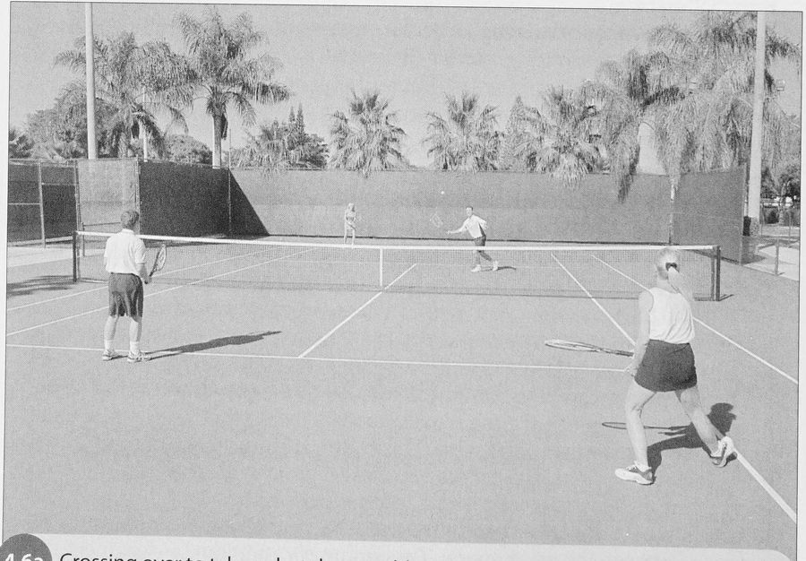
Cướp Bóng (Poach) Một trong những điều thường được bàn bạc và quyết định ngay trước khi giao bóng là việc người đứng lưới có cướp bóng hay không, nghĩa là rời bỏ một bên sân để chặn một quả bóng đã được đánh sang bên kia sân (xem hình 4.6, a và b). Khả năng người đứng lưới cướp bóng khiến trận đấu khá hấp dẫn, và nó gây áp lực lên tay vợt đang cố trả giao bóng.
Poaching One of the points that is usually discussed and decided just before the serve is whether or not the net player is going to poach, that is, leave one side of the court to intercept a ball that has been directed to the other side of the court (see figure 4.6, a and b). The possibility of the net player poaching makes the game quite exciting, and it puts pressure on the player who is trying to return the serve.
Trước khi đi vào những lựa chọn khác nhau liên quan đến việc cướp bóng, tôi muốn lưu ý rằng người ta thường hiểu rằng một tay vợt chỉ cướp bóng ở cú giao bóng một, vì ở cú giao bóng hai người đó có thể quá dễ bị tổn thương nếu thử. Tôi đã thấy những cặp đấu cướp bóng ngang nhau ở cả hai cú giao bóng, nhưng thông thường nếu có một cú cướp bóng diễn ra ở cú giao bóng hai thì đó là sau một cú trả giao bóng bổng lên, hoặc đó hoàn toàn là một nước liều bất ngờ của người đứng lưới. Cả hai thành viên của đội giao bóng cần chắc chắn rằng họ nhất trí với bất kỳ quyết định nào được đưa ra liên quan đến việc cướp bóng. Bạn không muốn mất điểm một cách không cần thiết vì trao đổi thông tin bị rối.
Before I go into the various options associated with poaching, I want to mention that it is generally understood that a player will poach only on the first serve because he or she may be too vulnerable to try it on the second serve. I have seen teams that have poached on both serves equally, but normally if there is a poach that takes place on a second serve, it is after a pop-up return of serve or it is strictly a surprise gamble on the part of the net player. Both members of the serving team need to make certain that they are in accordance with whichever decision is made concerning poaching. You don’t want to lose points unnecessarily because of a communication mix-up.
Có ba cách để quyết định và trao đổi xem bạn có cướp bóng hay không. Một cách, hơi mạo hiểm một chút, là quyết định trong lúc đổi sân xem bạn sẽ cướp bóng ở những điểm nào. Ví dụ, bạn có thể quyết định rằng mình muốn [Hình 4.6a: Băng ngang sang để đánh một quả bóng mà bình thường bạn cặp của bạn sẽ đỡ có thể làm đối phương bối rối. Ở đây người đứng lưới di chuyển để chặn một cú trả bóng.]
There are three ways to decide and communicate whether or not you will poach. One way, which is a little risky, is to decide on the changeover which points you are going to poach. For example, you may decide that you want 46a Crossing over to take a shot that would ordinarily be covered by your partner Can upset the opposition. Here the net player moves to intercept a return.
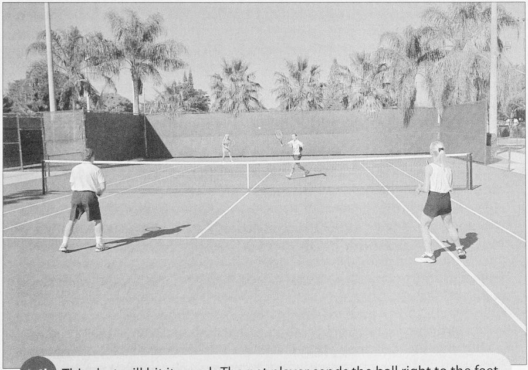
cướp bóng ở điểm thứ nhất và điểm thứ ba của game. Lợi thế của cách này là đối thủ không hề có bất kỳ dấu hiệu báo trước nào rằng bạn sẽ cướp bóng. Thách thức là sau vài điểm và trong lúc căng thẳng của trận đấu, bạn hoặc bạn cặp có thể quên mất quyết định đã đưa ra lúc đổi sân. Khi đó bạn có thể trải qua một trong những khoảnh khắc ngượng ngùng khi cả hai thành viên trong đội đều đứng về một bên sân và không ai đứng bên còn lại. Cách này có thể hiệu quả với bạn, nhưng tôi không khuyến khích vì khả năng gây nhầm lẫn.
to poach on the first and third points of the game. The advantage of this method is that your opponents have no prior warning of any kind that the poach is on. The challenge is that after a couple of points and during the heat of the battle you or your partner may forget about the decision made during the changeover. You may then experience one of those embarrassing mo- ments when both members of your team are on one side of the court and no one is on the other. This method might work for you, but I don’t recommend it because of the potential confusion.
Cách thứ hai để chỉ đạo hành động là dùng ký hiệu bằng tay (xem trang 36).
The second way to direct the action is by using hand signals (see page 36).
Thường thì người đứng lưới đưa ra những ký hiệu này. Bạn có thể dùng bất kỳ ký hiệu nào đã thống nhất trước, miễn là cả hai tay vợt đều hoàn toàn chắc chắn về ý nghĩa của chúng. Một hệ thống đơn giản là nắm đấm để ở lại và bàn tay mở để cướp bóng, hoặc ngược lại. Tôi thích dùng bàn tay mở để ở lại (vì nó trông giống động tác "dừng lại") và nắm đấm để đi. Những cặp đấu ở trình độ cao hơn có thể ra ký hiệu đi hoặc ở lại, cùng với ký hiệu cho biết sẽ giao bóng ở đâu.
The net player generally gives these. You can use any predetermined signals you like as long as both players are absolutely certain what they mean. A simple system would be a closed fist to stay and an open hand to poach, or vice versa. I like using the open hand to stay (because it looks like “stop”) and the closed fist to go. More advanced teams may give the signal to go or stay as well as a signal as to where to serve.
Cách phổ biến khác để trao đổi xem bạn có cướp bóng hay không là nói với nhau vài lời ngắn gọn trước mỗi điểm. Cách này đòi hỏi phải hội ý liên tục, nhưng nó khiến cho việc hiểu sai ý nhau hoặc bị đối phương nắm được kế hoạch gần như là không thể. Trong lúc hội ý, bạn có thể quyết định làm gì với cả hai cú giao bóng, kể cả cách xử lý cú giao bóng hai trong trường hợp [Hình 4.6b: Cú đánh này sẽ trúng đích. Người đứng lưới đưa bóng thẳng tới ngay dưới chân người đứng lưới của đối phương.]
The other common method of communicating whether or not you will poach is by speaking to one another briefly before each point. This re- quires constant meetings, but it does make it just about impossible to mis- communicate or have your plan stolen. During your visit you can decide what to do for both serves, including how to handle the second serve should “UTA This shot will hit its mark. The net player sends the ball right to the feet of the opposing net player.
bạn đánh hỏng cú giao bóng một. Tôi thích cách trao đổi này vì hai lý do. Thứ nhất, nó khiến cả hai tay vợt đều tham gia vào từng điểm, nên không ai trong hai bạn bị cám dỗ buông lỏng đầu óc hay lơ đễnh dù chỉ trong chốc lát. Thứ hai, nó giữ cho đối thủ luôn tự hỏi bạn có thể làm gì và hoài nghi về chiến thuật của bạn. Tôi cho rằng các cặp đấu có xu hướng suy nghĩ quá nhiều về trận đấu, và vì thế chơi tệ hơn, khi họ thấy đối thủ thì thầm những lời ngọt ngào với nhau.
you miss the first. I like this method of communicating for two reasons. First, it gets both players involved on every point, so neither of you will be tempted to mentally float or tune out for evena short time. Second, it keeps your opponents wondering what you might do and second-guessing the strategy. I think there is a tendency for teams to overthink the game, and therefore to play worse, when they see their opponents whispering sweet nothings to each other.
Đây là một ví dụ về cách kiểu trao đổi này có thể khiến đội bên kia khó chịu. Nếu ở điểm đầu tiên người đứng lưới đi ra sau nói điều gì đó với người giao bóng rồi cướp bóng, thì lần sau khi họ hội ý với nhau, đội nhận bóng sẽ cho rằng cú cướp bóng đang được bật. Nếu ở điểm thứ hai người đứng lưới không cướp bóng, thì đến lúc người giao bóng và người đứng lưới hội ý trước điểm thứ ba, đội nhận bóng sẽ không biết phải chờ đợi điều gì. Khi đó đội nhận bóng có xu hướng nhìn vào người đứng lưới (chứ không nhìn vào bóng) để xem người đó sẽ làm gì. Đã đủ khó để đánh bóng khi nhìn bóng bằng cả hai mắt, nói gì đến việc nhìn người đứng lưới bằng một mắt và nhìn bóng bằng mắt kia.
Here’s an example of how this kind of communication can make the other team uncomfortable. If the net player goes back to say something to the server on the first point and proceeds to poach, then the next time they get together the returning team will assume that the poach is on. If the net player does not poach on the second point, by the time the server and net player conference before the third point, the receiving team will have no idea what to expect. There is then a tendency for the returning team to look at the net player (and not at the ball) to see what he or she is going to do. It is hard enough to hit the ball while watching it with two eyes, let alone while watching the net player with one eye and the ball with the other.
Cướp bóng không phải lúc nào cũng thành công. Thật ra, vài lần đầu thử làm, bạn có thể sẽ gặp vài trục trặc. Điều quan trọng nhất cần nhớ là nếu bạn đã cam kết với bạn cặp, người đang giao bóng, rằng bạn sẽ cướp bóng, thì bạn phải cướp bóng! Tôi đã thấy những tay vợt nói rằng họ sẽ cướp bóng, bắt đầu làm rồi lại dừng, bảo rằng họ không thể với tới cú trả bóng chéo sân. Người cướp bóng phải nhận ra rằng khi mình băng ngang, bạn cặp của mình đang nhanh chóng di chuyển sang bên mà người cướp bóng bỏ trống. Nếu người cướp bóng dừng lại, thì sẽ không ai có thể với tới cú trả bóng chéo sân đó. Cũng như trong hôn nhân, khi bạn đã cam kết thì bạn phải tôn trọng cam kết đó. Bạn cặp của bạn đang trông cậy vào bạn.
Poaching is not always successful. In fact, the first few times youtry it, you will probably have some problems. The most important thing to remember is that if you commit to your partner, who is serving, that you are going to poach, then you must poach! Ihave seen players say they are going to poach, start to do so, and then stop, saying that they couldn’t reach the cross-court return. The player who is poaching must realize that when he or she moves across, his or her partner is moving quickly to the side that the poacher is evacuating. If the poaching player stops, then no one will be able to get to that cross-court return. As with a marriage, when you make a commitment you must honor it. Your partner is counting on you.
Một lời khuyên nhanh dành cho trường hợp có người đang xem trận đánh đôi của bạn. Nếu bạn nói rằng mình sẽ cướp bóng rồi ngay lập tức nhận ra mình không thể tới được bóng, bạn có thể hô "của bạn" để khán giả trên khán đài nghĩ rằng việc mất điểm là lỗi của bạn cặp. Biết đâu bạn lừa được khán giả đó. (Tất nhiên, bạn nên nhớ rằng bạn cũng có thể mất luôn một người bạn cặp nếu làm trò này quá nhiều lần!) Khía cạnh quan trọng nhất của việc cướp bóng là thời điểm. Hãy thử nghiệm cùng bạn cặp của bạn. Đừng di chuyển hoặc mở toang bên sân của bạn quá sớm. Thời điểm di chuyển phụ thuộc vào nhiều yếu tố.
One quick piece of advice applies if people are watching your doubles match. If you say that you are going to poach and then immediately realize that you can’t get to the ball, you can say “yours” so that the people in the stands will think the loss of the point was your partner’s fault. Youjust might fool that audience. (Of course, you should keep in mind that you might also lose a partner if you pull this too many times!) The most important aspect of poaching is timing. Experiment with your or open up your side of the court too early. The timing of the move depends on several factors.
Yếu tố đầu tiên là bạn cặp của bạn giao bóng mạnh đến mức nào. Nếu người đó giao rất mạnh thì bạn phải di chuyển sớm để, nếu bóng được trả lại, bạn có thể tới được bóng. Nếu bạn cặp của bạn giao một cú bóng mạnh với nhiều xoáy hoặc một cú đổi tốc và bạn di chuyển sớm, đối thủ sẽ thấy bạn đang làm gì và sẽ đánh vào khoảng trống phía sau bạn. Nếu người trả giao bóng đứng lùi rất xa, hãy xuất phát muộn hơn. Nếu người trả giao bóng đứng trong vạch cuối sân hoặc thường đánh trả bóng mạnh, hãy xuất phát sớm.
The first factor is how hard your partner serves the ball. If he or she serves it very hard then you must move soon so that, if the ball comes back, you will be able to get to it. If your partner serves a big serve with a lot of spin or a change-up and you move early, your opponent will see what you're doing and will hit behind you. If the returner is standing way back, leave later. If the returner is inside the baseline or usually hits a hard return, leave early.
Nếu người đó chỉ bấm bóng trả lại nhẹ nhàng, bạn có thể xuất phát muộn hơn.
If he or she just chips the ball back, you can leave later.
Có lẽ yếu tố quan trọng nhất là bạn nhanh đến mức nào. Nếu bạn có bước xuất phát nhanh và có thể tăng tốc nhanh, thì bạn có thể chờ cho tới khi đối thủ tiếp xúc với cú trả bóng. Nếu bạn rất chậm, bạn có thể muốn xuất phát trước khi bạn cặp của bạn giao bóng (đùa thôi — không ai chậm đến thế). Việc luyện tập cướp bóng cùng một người bạn cặp thật sự rất hữu ích để bạn quen với phong cách giao bóng của người đó. Bạn không cần phải là một Speedy Gonzales mới cướp bóng hiệu quả. Trong đánh đôi không có gì vui hơn việc biến một cú trả bóng tốt của đối thủ thành một cú vô-lê dứt điểm xuyên thẳng qua người đứng lưới của đội đối phương.
Maybe the most important element is how fast you are. If you have a quick first step and can accelerate fast, then you can wait until your opponent makes contact with the return. If you are very slow, you may want to start before your partner serves (just kidding—no one is that slow). It really helps to practice poaching with the same partner so that you get used to his or her serving style. You don’t have to be a Speedy Gonzales to be an effective poacher. There is nothing more fun in doubles than turning an opponent's good return into a put-away volley right through the opposing team’s net player.
Vị Trí Tối Ưu Người đứng lưới không phải lúc nào cũng phải xuất phát ở vị trí truyền thống. Tôi đã thấy nhiều biến thể khác nhau về vị trí xuất phát khiến đối phương tự hỏi không biết phải làm gì, hoặc ít nhất là tự hỏi "Vì sao?". Đôi khi khi một đội đang đặt câu hỏi "vì sao", đội đối phương bắt đầu thắng. Triết lý của tôi là không thay đổi một trận đấu đang thắng, mà cố thay đổi một trận đấu đang thua. Tuy nhiên, ở những cấp độ thi đấu cao hơn, đôi khi cần phải thực hiện một vài thay đổi tinh tế ngay cả khi đội vẫn đang thắng, để ngăn đối thủ nắm bắt được và bắt đầu vào gu. John Newcombe từng nói rằng khi chơi với Rod Laver ở nội dung đơn hay đôi, anh ấy luôn nhìn về phía trước kể cả khi đang dẫn điểm, để Laver không có cơ hội nắm bắt được chiến thuật của anh ấy.
Optimal Positioning The net player does not always have to start in the traditional position. [have seen many different variations in starting positions leave the opposition wondering what to do or at least asking themselves, “Why?” Sometimes when a team is asking the “why” question, the opposing team starts winning. My philosophy is not to change a winning game, but to try to change a losing game. In the higher levels of competition, however, it is sometimes necessary to make some subtle changes while the team is still winning to prevent the opponents from catching on and beginning to get into a groove. John Newcombe once said that when he played Rod Laver in singles or doubles, he would always be looking ahead even when he was in the lead, so that Laver would not get the chance to catch on to his strategy.
Nói chung, người đứng lưới nên đứng ở lưới và ở nửa sân còn lại (xem hình 4.7). Đội hình kỳ dị nhất mà tôi từng thấy là ở giải Orange Bowl, trong một trong những giải thiếu niên quốc tế lớn hơn. Người đứng lưới đứng bên trái người giao bóng ở vạch cuối sân khi bạn cặp của anh ta giao bóng vào ô bên trái (ad). Anh ta không thích vô-lê, nhưng lại thích đánh những cú thuận tay cực mạnh từ vạch cuối sân. Những tay vợt này là thiếu niên quốc tế giỏi, nhưng trong một trận đấu với những tay vợt đánh đôi chuyên nghiệp giỏi, đội hình này sẽ đảm bảo cho họ về đích ở vị trí thứ hai.
Generally, the net player should stand at the net and in the other half of the court (see figure 4.7). The most bizarre formation I have ever seen was at the Orange Bowl, in one of the larger International junior events. The net player stood to the left of the server on the baseline when his partner was serving to the ad court. He didn’t like to volley, but he did like to hit huge forehands from the baseline. These guys were good international juniors, but in a match against good professional doubles players, this formation would guarantee them a second place finish.
Một đội hình tương đối phổ biến là đội hình Australian, được gọi như vậy vì người Úc là những người đầu tiên sử dụng nó (xem hình 4.8). Trong đội hình này, người đứng lưới đứng cùng bên sân với người giao bóng và ở phía trước người giao bóng, còn người giao bóng sau khi giao bóng sẽ tiến lên lưới theo đường chéo thay vì theo đường thẳng. Đội hình này khá hiệu quả trước những cặp đấu có thể trả giao bóng chéo sân tốt nhưng không thích đánh dọc biên. Nếu bạn đang chơi với một đội lần đầu và một tay vợt đang hạ gục bạn bằng cú trả bóng chéo sân tuyệt vời, hãy thỉnh thoảng thử đội hình này, hoặc dùng cho tới khi đối thủ làm bạn bị tổn thương bằng cú trả bóng dọc biên. Nếu người đó cũng làm bạn bị tổn thương bằng cú trả bóng đó nữa, thì dù sao bạn cũng đang gặp rắc rối lớn. Đôi khi đội hình này có thể xoay chuyển cục diện trận đấu rất nhanh và nhờ đó làm đối thủ nản lòng.
One relatively common formation is the Australian formation, so called because the Aussies were the first to use it (see figure 4.8). In this formation the net player stands on the same side of the court in front of the server, and the server comes toward the net on a diagonal, instead of a straightforward path after serving. This formation is quite effective against teams that can hit returns of serve well cross court but don’t like to hit down the line. If you are playing a team for the first time and one player is killing you with a great cross-court return, then try this formation occasionally or until your oppo- nent hurts you with the down-the-line return. If he or she hurts you with that return as well, then you are in big trouble anyway. Sometimes this formation can turna match around very quickly and thereby frustrate your opponents.
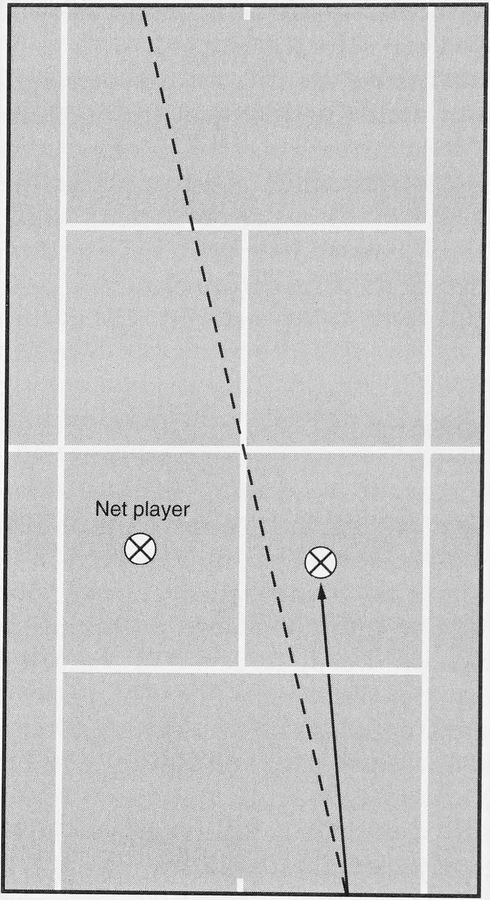
Một số cặp đấu dùng đội hình này ở những điểm quan trọng, chẳng hạn như điểm bẻ giao bóng. Một lần nữa, việc dùng đội hình này khiến đối thủ phải suy nghĩ — và họ có thể suy nghĩ quá nhiều hoặc suy nghĩ đến mức bỏ qua việc đánh một cú bóng khôn ngoan.
Some teams use this formation on key points, such as breakpoint. Again, using this formation makes your opponents think—and they just might think too much or think their way past hitting a smart shot.
Tương tự đội hình Australian là đội hình chữ I. Ở đây người đứng lưới đứng ngay giữa sân, đứng dạng chân hai bên vạch giao bóng giữa sân. Điều này nghĩa là tay vợt đó sẽ phải cúi xuống hoặc có nguy cơ bị bóng đập trúng khi
Similar to the Australian formation is the I-formation. Here the net player stands rightin the middle of the court, straddling the center service line. This means that the player will have to duck down or risk getting hit with the
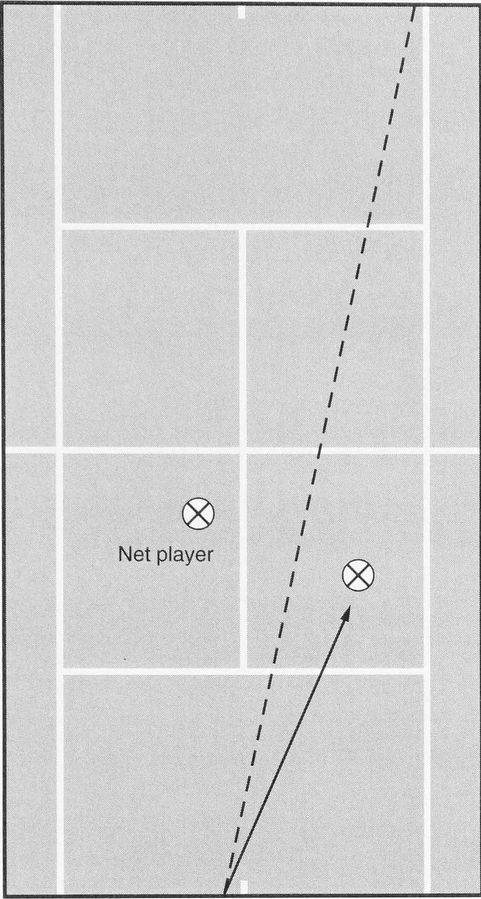
cú giao bóng bay vút qua đầu mình (xem hình 4.9). Đội hình này thật sự khiến đối thủ phải đoán già, vì khi cú giao bóng được đánh đi, người đứng lưới sẽ đi sang bên này hoặc bên kia, và người giao bóng sẽ đảm nhận bên mà người đứng lưới không đảm nhận. Vì vậy mỗi lần cú giao bóng được đưa vào cuộc, người trả giao bóng phải quyết định đánh bóng về hướng nào, hoặc chéo sân hoặc dọc biên. Việc thực hiện chiến thuật này phải cực kỳ chính xác và có đặc điểm
serve as it whizzes over his or her head (see figure 4.9). This formation really keeps the opponents guessing because when the serve is hit, the net player goes to one side or the other, and the server covers the side that the net player does not cover. So every time the serve is put into play the returner has to decide which way to hit the ball, either cross court or down the line. The execution of this strategy must be very precise and feature
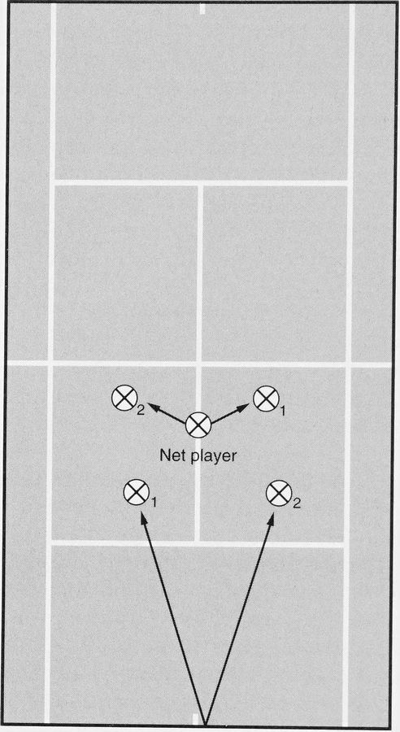
Hình 4.9: Khi được thực hiện đúng cách, đội hình chữ I tạo ra sự không chắc chắn và bối rối cho đội nhận bóng.
6), &) . When executed correctly, the I-formation creates uncertainty and confusion for the returning team.
sự trao đổi thông tin và thời điểm hoàn hảo. Các tay vợt cũng phải di chuyển nhanh thì nó mới hiệu quả. Cũng như với bất kỳ biến thể nào khác, nếu bạn không cần thử thì đừng thử, nhưng nếu bạn đang thua vì chơi đội hình truyền thống, việc pha trộn các đội hình trong vài game có thể sẽ xoay chuyển được cục diện trận đấu. Nếu bạn cảm nhận được rằng đối thủ đang vào gu với những cú trả bóng của họ, có thể đã đến lúc thay đổi đội hình; bằng việc thay đổi đội hình, bạn khiến đối thủ phải suy nghĩ xem vì sao bạn làm vậy, và chỉ riêng điều đó cũng có thể ảnh hưởng tiêu cực đến phong độ của họ. Nếu bạn dùng đội hình này, hãy chắc chắn luyện tập nó trước khi thử trong một trận đấu quan trọng. Khi được thực hiện tốt, đội hình chữ I rất thú vị để xem, và một số đội nhận bóng trở nên rất bối rối và nản lòng khi đối đầu với nó.
perfect communication and timing. The players must also move quickly for it to be effective. As with any other variation, if you don’t need to try this, don’t, but if you are losing by playing the traditional formation, mixing up the formations for a few games just might turn the match around. If you sense that your opponents are getting into a groove with their returns, it may be time to vary your formation; by changing the formation you make your opponents think about why you are doing so, and that in and of itself can negatively affect their performance. If you do use this formation, be sure to practice it before trying it in an important match. When it is done well the I-formation is fun to watch, and some returning teams become very con- fused and frustrated when they are up against it.
Trong tất cả những vị trí cơ bản hay biến thể này, người đứng lưới cần phải năng động ở trên lưới. Điều này nghĩa là người đó thỉnh thoảng nên di chuyển khỏi vị trí xuất phát để cướp bóng, nhưng cũng phải cảnh giác với bất kỳ cơ hội nào để tận dụng một cú trả bóng yếu. Ý tưởng là không để đối phương thoát được với bất cứ thứ gì ngoài một cú đánh chất lượng. Một điều mà người đứng lưới có thể làm, bất kể dùng vị trí xuất phát nào, là giả động tác di chuyển để người trả giao bóng nhìn thấy chuyển động đó từ khóe mắt và bị phân tâm khi cố trả giao bóng. Hiện nay một số tay vợt làm quá đà và nhảy nhót khắp nơi. Tôi cho rằng hành vi như vậy là nghiệp dư và thể hiện tinh thần thể thao tồi. Hãy giữ cho đối thủ mất thăng bằng bằng cách chơi tốt, thay đổi vị trí đứng, dùng chiến thuật khôn ngoan và di chuyển đúng lúc.
In all of these basic positions or variations, the net player needs to be active at the net. This means that he or she should move occasionally from the starting position to poach but also be alert for any chance to take advantage of a weak return. The idea is not to let your foes get away with anything but a quality shot. One thing that the net player can do, no matter what starting position he or she uses, is fake a move so that the returner will see the movement out of the corner of his or her eye and be distracted while attempting the return of serve. Now some players get carried away and jump all over the place. I think that such behavior is bush league and represents bad sportsmanship. Keep your opponents off balance by playing well, varying your positioning, using smart strategy, and moving at the right time.
Những cặp đánh đôi nam nữ giỏi thường thử rất nhiều động tác cướp bóng và biến thể vị trí.
Good mixed doubles teams try a lot of poaching and position variations.
Trong một trận đánh đôi nam nữ, một tay vợt nam nhanh nhẹn sẽ muốn thử vài động tác cướp bóng và biến thể vị trí khác nhau để gây áp lực lên đội nhận bóng. Nếu tay vợt nữ chơi lưới tốt và bạn cặp của cô ấy giao bóng tốt, thì cô ấy có thể tận dụng lợi thế bằng cách dứt điểm vài cú trả bóng yếu. Nhiều cặp đấu cảm thấy cần phải liều lĩnh một chút để cố giữ game giao bóng của tay vợt nữ, và điều này đòi hỏi phải di chuyển ở trên lưới. Tìm được sự cân bằng đúng đắn, chấp nhận mạo hiểm nhưng không mạo hiểm quá nhiều, luôn là điều khó khăn. Hãy thử nghiệm một chút trong khi chơi, và bạn sẽ khám phá ra khi nào và bằng cách nào đội của bạn có thể dùng việc cướp bóng và thay đổi đội hình để tận dụng tối đa game giao bóng của mình.
In a mixed doubles match, a quick male player will want to try some different poaching and position variations to put pressure on the returning team. If the female player is good at the net and her partner has a good serve, then she can take advantage by knocking off some weak returns. Many teams feel the need to gamble a bit to try to hold serve on the female player’s serve, and this calls for movement at the net. Finding the right balance, taking some chances but not too many chances, is always tricky. Experiment a little as you play, and you will discover when and how your team can use poaching and formation changes to make the most of your service game.
5. Vô Hiệu Hóa Cú Giao Bóng Bằng Quả Trả Uy Lực
Cú trả giao bóng là cú đánh quan trọng thứ hai trong môn đánh đôi. Nếu bạn có một cú trả giao bóng tốt, bạn có thể vô hiệu hóa vũ khí lớn đó — cú giao bóng. Khi xem những tay đánh đôi giỏi thi đấu, bạn sẽ nhận thấy họ đưa rất nhiều bóng trở lại vào cuộc, buộc những người giao bóng phải đánh nhiều cú vô-lê hơn mức họ có lẽ mong muốn.
The return of serve is the second most important shot in the game of doubles. If you have a good return of serve you can defuse that big weapon—the serve. When you see good doubles players in action, you'll notice that they put a lot of balls back in play, forcing the servers to hit more volleys than perhaps they would like.
Khái niệm then chốt cần nhớ khi trả giao bóng là bạn không được kỳ vọng sẽ thắng những game mà đối thủ giao bóng. Vì vậy bạn nên tiếp cận những game đó với thái độ có phần liều lĩnh và chấp nhận một số rủi ro để tạo ra chuyển biến. Một trong những lý do tôi thích giao bóng trước trong một trận đánh đôi là niềm vui được liều lĩnh khi đội chúng tôi trả giao bóng. Tôi cũng thường chọn giao bóng trước trong đánh đơn, nhưng đôi khi tôi có thể chọn giao bóng sau trong một số hoàn cảnh nhất định, chẳng hạn khi cú giao bóng của tôi thật sự cảm thấy tệ, hoặc khi tôi biết đối thủ có cú giao bóng yếu hay có xu hướng khởi đầu chậm. Nếu bạn giữ được game giao bóng của mình, thì đối thủ sẽ chịu áp lực chỉ để giữ thế ngang bằng. Khi tỉ số lên 4-5 và 5-6, bạn thật sự có thể làm đối thủ chao đảo bằng cách thử điều gì đó mới hoặc chỉ đơn giản là đánh hết sức vào bóng. Nếu bạn chẳng may mất game giao bóng ở tỉ số 4-đều hoặc 5-đều, thì bạn vẫn còn cơ hội bẻ lại giao bóng và tránh thua set.
The key concept to remember when returning the serve is that you are not supposed to win the games in which your opponents are serving. Therefore you should approach these games with something of a gambling attitude and take some chances to make things happen. One of the reasons I like to serve first in a doubles match is the fun of being able to gamble when our team is returning serve. I usually choose to serve first in singles as well, but Imight occasionally serve second under certain circumstances, suchas when my serve is really feeling bad or when! know that my opponents havea weak serve or tend to start slowly. If you can hold your serve, then your opponents will be under pressure just to stay even. When it gets to 4-5 and 5-6, you can really shake up your opponents by trying something new or just going for your shots. If you happen to lose your serve at 4—all or 5—all, then you still have a chance to break back and avoid losing the set.
Nếu bạn đang gặp vấn đề với cú trả giao bóng, thì có thể bạn đã phạm lỗi là bỏ qua năm mục tiêu cơ bản nhất của phần này trong trận đấu. Hãy nỗ lực đạt được những mục tiêu sau, theo đúng thứ tự được liệt kê: 1. Đưa được vợt vào bóng giao. Mục tiêu nền tảng nhất này chủ yếu áp dụng cho những cú giao bóng một mà đối thủ giáng vào bạn. Nếu bạn bị ăn ace nhiều hoặc hầu như không chạm được vào bóng giao, hãy kiên nhẫn và chờ đến game không thể tránh khỏi mà đối thủ đánh hỏng vài cú giao bóng một. Trong đánh đôi, bạn hiếm khi thấy nhiều cú ace vì việc người giao bóng đưa được tỉ lệ cao giao bóng một vào sân trở nên quan trọng hơn. Những người giao bóng nói chung giảm bớt một chút lực ở cú giao bóng một để tránh cho đối thủ cơ hội khai thác cú giao bóng hai dễ đánh hơn vốn đến sau một cú đánh hỏng.
If you are having problems with the return of serve, then you may be guilty of ignoring the five most basic objectives of this part of the game. Work to meet the following goals, in the order in which they are listed: 1. Get your racket on the serve. This most fundamental goal applies mainly to the first serves your opponent fires at you. If you are getting aced a lot or are barely touching the serve, then be patient and wait for that inevitable game in which your opponent misses a few first serves. In doubles you rarely see a lot of aces because of the increased importance of the server’s getting a high percentage of first serves in the court. Servers generally take alittle pace off the first serve to avoid giving their opponents the opportunity to exploit the easier second serve that follows a miss.
Bạn có thể tự hỏi vì sao việc đưa được tỉ lệ cao giao bóng một vào sân lại là một khái niệm còn quan trọng hơn trong đánh đôi. Như tôi đã đề cập ở chương 4, người giao bóng trong đánh đôi đang cố duy trì thế tấn công và không muốn trao cho đối thủ quá nhiều cú giao bóng hai dễ đánh để tấn công. Ngoài ra, phần lớn những cặp đánh đôi giỏi đều tiến lên theo sau cú giao bóng của mình, và rất khó để người giao bóng vô-lê khi đối phương đang đánh những cú trả bóng hung hãn vào ngay dưới chân họ lúc họ lao lên lưới.
You may wonder why getting a high percentage of first serves in is aneven more important concept in doubles. As [mentioned in chapter 4, the doubles server is trying to stay on the offensive and does not want to give opponents too many easy second serves to attack. In addition, most good doubles teams come in behind their serves, and it is difficult for servers to volley when their adversaries are hitting aggressive returns at their feet as they rush to the net.
Trong đánh đơn, một tay vợt có thể ở lại phía sau và không bị thiệt hại nhiều vì phải đánh nhiều cú giao bóng hai, nhưng trong đánh đôi, việc phải ở lại phía sau là một hình phạt nặng với những tay vợt giỏi. Về sau trong chương này, tôi sẽ giải thích bạn có thể làm gì nếu bạn thậm chí không đưa được vợt vào bóng giao.
In singles a player can stay back and not be hurt much by having to hit a lot of second serves, but in doubles having to stay back is a big penalty for good players. Later in this chapter I’ll explain what you can do if you are not even getting your racket on the serve.
2. Đưa bóng trở lại qua lưới và vào trong sân. Mục tiêu thứ hai cũng chủ yếu liên quan đến việc trả những cú giao bóng một. Nhiều cặp đấu chơi đánh đôi kém hiệu quả đơn giản vì họ không giữ được bóng trong cuộc ở cú trả giao bóng. Những đội này cố làm quá nhiều trước những người giao bóng đang đánh bóng tốt. Chiến thuật tham vọng là cố đánh xuyên qua đối phương, thay vì chỉ đơn giản buộc họ phải đánh một cú bóng thấp, thông thường không mang lại kết quả về lâu dài.
2. Get the ball back over the net and into the court. The second goal also relates primarily to returning first serves. Many teams play ineffective doubles simply because they don’t keep the ball in play on the return of serve. These teams try to do too much against servers who are hitting the ball well. The ambitious tactic of trying to hit the ball through the combatants, as opposed to simply making them play a low shot, does not normally pay off in the long run.
Điều quan trọng cần nhớ là đối thủ có thể đánh hỏng những cú đánh nền (groundstroke) khi họ ở lại phía sau và đánh hỏng những cú vô-lê và những cú đập bóng trên cao (smash) khi họ ở trên lưới. Họ thậm chí có thể đánh hỏng những cú bóng dễ — những quả bóng ngon ăn thật sự. Nhiều lần, tôi hoặc bạn cặp của tôi chỉ vừa đủ đưa được vợt vào bóng và đưa trả một cú bóng bổng mà chúng tôi nghĩ rằng không thể đánh hỏng được, để rồi chứng kiến — trước sự ngạc nhiên của cả chúng tôi lẫn đối thủ — một sai lầm do bất cẩn hoặc do hồi hộp của đội bên kia. Thường thì những sai lầm này xảy ra trong những điểm then chốt và có thể xoay chuyển một trận đấu đang thua.
It is important to remember that it’s possible for your opponents to miss groundstrokes when they stay back and to miss volleys and overheads when they are at the net. They can even miss easy shots—treal sitters. Many times my partner or I have just barely managed to get a racket on the ball and have floated a shot back that we thought couldn’t be missed, only to see—to our surprise as well that of our opponents—a careless or nervous mistake by the other team. Often, these mistakes occur during critical points and can turn a losing match around.
Gần đây, tôi đang chơi trong một tình huống tính điểm không có lợi thế (no-ad); đó là điểm quyết định game cho cả hai đội trong một giải đấu vòng tròn, nên đội nào thắng game đó là thắng cả bảng của chúng tôi.
Recently, I was playing in a no-ad situation; it was game point for both teams in a round-robin contest, so whoever won the game won our division.
Đối thủ của chúng tôi giao một cú bóng mạnh, rộng sang bên mà bạn cặp của tôi chỉ vừa đủ đưa trả qua lưới. Người đứng lưới của đối phương có một cú vô-lê dễ dàng ngay giữa sân, nhưng anh ta lại đưa bóng vào lưới. Bốn chúng tôi không thể tin nổi. Khái niệm đơn giản là đưa bóng trở lại và cho đội bên kia cơ hội đánh bóng thêm một lần quan trọng hơn bạn có thể nghĩ. Bạn không bao giờ biết khi nào đối thủ có thể đánh hỏng.
Our opponents hita big, wide serve that my partner just barely returned over the net. The opposing net player had an easy volley in the middle of the court, but he dumped it into the net. The four of us couldn’t believe it. The simple concept of getting the ball back and giving the other team a chance to hit the ball again is more important than you might think. You never know when your opponents might miss.
3. Đưa bóng trở lại ngay dưới chân người giao bóng. Nếu người giao bóng giao bóng rồi lên lưới, thì mục tiêu của bạn là đánh bóng ngắn, phía trong vạch giao bóng, để người giao bóng phải đánh một cú vô-lê thấp hoặc bán vô-lê. Vì người giao bóng sẽ phải đánh bóng lên trên mà không có nhiều lực, điều này sẽ tạo cơ hội để bạn đánh một cú tấn công tiếp theo. Nếu người giao bóng thường ở lại phía sau sau khi giao bóng, thì bạn nên đánh cú trả bóng sâu để người giao bóng phải đánh cú tiếp theo từ phía sau vạch cuối sân. Nếu trong lúc căng thẳng của trận đấu bạn quên mất vài lời khuyên cuối này, chỉ cần nhớ rằng bạn đang cố trả giao bóng hướng về phía chân của đối thủ bất kể họ ở đâu trên sân. Nếu bạn làm được điều đó, bạn sẽ không sai, trừ khi đối thủ giao bóng rồi chạy ngược về phía hàng rào cuối sân. Nếu đúng là như vậy, thì có lẽ bạn đã khiến họ sợ đến mức bạn không cần bất kỳ lời khuyên nào của tôi nữa.
3. Get the ball back to the server’s feet. If the server serves and volleys, then your objective is to hit the ball short, inside the service line, so that the server will have to hit a low volley or half-volley. Because the server will have to hit up without a great deal of pace, this should create an opportunity for you to hit an offensive shot next. If the server normally stays back after serving, then you should hit the return deep so that the server will have to hit the next shot from behind the baseline. If, in the heat of battle, you forget these last few lines of advice, just remember that you are trying to return the serve toward your opponents’ feet no matter where they are in the court. If you do that, you won’t go wrong unless your opponents serve and run back toward the back fence. If that is the case, you probably have them so intimidated that you don’t need any of my advice.
4. Chiếm lưới. Mục tiêu tối hậu là đánh cú trả bóng rồi tiến lên theo sau nó, nhằm chiếm lấy lưới từ tay đối phương. Bạn có thể làm điều này bằng một cú trả bóng tấn công mạnh mẽ, hoặc bằng cách tiếp cận kiểu bấm bóng rồi lao lên (chip and charge), cho phép bạn kiểm soát cú trả bóng và giảm bớt lực khi đưa bóng chúi xuống dưới chân họ.
4. Take the net. The ultimate goal is to hit the return and come in behind it, in an attempt to take the net away from your foes. You can do this with an aggressive driving return or witha chip and charge approach that allows you to control the return and take some pace off the ball as you dip it at their feet.
Dù bạn chọn cách tiếp cận nào, động tác này cũng sẽ khiến đối thủ e ngại, bất kể họ giao bóng rồi lên lưới hay giao bóng rồi ở lại phía sau, vì nếu bạn thành công thì bạn sẽ nắm quyền chủ động và họ sẽ ở thế phòng thủ. Điều này thường dễ thực hiện hơn với cú giao bóng hai, nên việc cố áp dụng kỹ thuật này có thể khuyến khích đối thủ tận dụng tối đa những cú giao bóng một. Kể cả khi đôi lúc bạn đánh hỏng cú trả bóng, việc người giao bóng nhìn xuống một cú vô-lê thấp rồi ngẩng lên thấy bạn đang lao tới để kết liễu thật sự rất đáng sợ. Cũng như mọi cách giữ cho đối thủ mất thăng bằng, dùng chiến thuật này có thể khiến bạn thua vài trận nhỏ nhưng nó sẽ giúp bạn thắng cả cuộc chiến.
Whichever approach you choose, this maneuver will be daunting for your opponents, whether they serve and volley or serve and stay back, because if you succeed you will be in charge and they will be on the defensive. This is usually easier to accomplish off the second serve, so an attempt to use this technique may encourage your opponents to make the most of the first serves. Even if yousometimes miss the return, it really is intimidating for the server to look down at a low volley and then look up to see you flying in for the kill. As with any means of keeping your opponents off balance, using this tactic may mean that you lose a couple of battles but it should help you win the war.
5. Thay đổi cú trả bóng. Việc ngăn đối thủ chắc chắn về hướng bóng sẽ bay tới mang lại lợi ích lớn. Hãy chủ động và gieo vào đầu họ ý nghĩ rằng, đặc biệt là ở những cú giao bóng hai, bạn sẽ không luôn làm điều giống nhau. Sự không chắc chắn này sẽ khiến đội giao bóng không thể cướp bóng và di chuyển nhiều như họ muốn. Tôi sẽ mô tả một số kiểu trả bóng đa dạng về sau trong chương này.
5. Vary your return. It is of great benefit to prevent your opponents from being certain of the direction the ball will come from. Be proactive and plant the seed in their minds that, especially on second serves, you are not always going to do the same thing. This uncertainty will keep the serving team from poaching and moving as muchas they might like. I’ll describe some varieties of return shots later in this chapter.
Billie Jean King – Rosie CasalsBillie Jean King-Rosie Casals
Vào cuối thập niên 1960 và đầu thập niên 1970, Billie Jean King là Nữ hoàng của làng quần vợt nữ. Cùng với bạn cặp Rosie Casals, Billie cũng thống trị trên sân đánh đôi. Trong thời kỳ King – Casals, ba trong bốn giải Grand Slam được tổ chức trên mặt sân cỏ: Australian Open, Wimbledon và US Open.
In the late 1960s and early 1970s, Billie Jean King was the Queen of the women’s game.With her partner, Rosie Casals, Billie was alsodominantonthe doubles court. In the King—Casals era, three of the four grand slam events were played on grass: the Australian Open, Wimbledon, and the US Open.
Khi Billie Jean và Rosie chơi trên các sân cỏ, họ có thể giao bóng rồi lên lưới tốt vì họ nhanh nhẹn và đầy thể lực. Họ không cao lắm, nhưng là hai cục pin năng lượng trên sân.
When Billie Jean and Rosie played on the grass courts, they were able to serve and volley well because they were quick and athletic. They were not very tall, but they were two balls of energy on the court.
Ngoài việc là một thế lực thống trị trên sân đánh đơn và đánh đôi, Billie Jean King đã làm được nhiều hơn cho làng quần vợt nữ và cho phong trào nữ quyền so với bất kỳ nữ vận động viên nào khác cùng thời. Cuộc đối đầu của cô với Bobby Riggs trong "Trận chiến giữa hai phái"
Besides being a dominant force on the singles and doubles court, Billie Jean King did more for the women’s game and for the women’s movement than any other sportswoman of her time. Her confrontation with Bobby Riggs in the“Battle of the Sexes”
năm 1972 đã mang lại sự chú ý cho quần vợt nữ và cho môn thể thao này nói chung. Khả năng xử lý áp lực và đánh bại Bobby đã mang lại cho cô sự tự tin kéo dài sang lối chơi đánh đôi của mình. Như mọi nhà vô địch đánh đơn và đánh đôi vĩ đại, cô ấy tỏa sáng trong những khoảnh khắc lớn của trận đấu. Rosie đặc biệt nhanh nhẹn và hiệu quả ở trên lưới, dù cô ấy chỉ cao khoảng 1m57. Cô ấy thích "quậy" trong những pha đôi công vô-lê nhanh diễn ra khi cả bốn tay vợt đối mặt nhau ở trên lưới. Cú giao bóng của cô ấy không quá mạnh, nhưng cô ấy sẽ nhanh chóng lên tới lưới và vô-lê chắc chắn. Khi cô và Billie Jean chơi cùng nhau, họ thường mạo hiểm bằng cách cướp bóng nhiều và giữ cho đối thủ luôn phải đoán già. Chiến thuật này cuối cùng sẽ bào mòn đối phương và khiến đội bên kia mắc một số lỗi.
in 1972 provided exposure to women’s tennis and to the game in general. Her ability to handle the pressure and beat Bobby gave her confidence that carried over into her doubles game. Like all the great singles and doubles champions, she thrived on the big moments ofthe Rosie was particularly quick and effective at the net, even though she was only about 5’ 2” She loved to “mix it up” in those quick volley exchanges that take place when all four players are eye-to-eye at the net. Her serve was not overpowering, but she would get to the net quickly and volley soundly. When she and Billie Jean played together, they would take chances by poaching a lot and keeping their opponents guessing. This strategy would eventually wear down their foes and cause the other team to make some errors.
Cả hai tay vợt đều thuận tay phải, và Rosie sẽ chơi ô bên phải (deuce) còn Billie đảm nhận ô bên trái (ad). Billie không có cú thuận tay của tay trái mà rất nhiều cặp đấu vĩ đại sở hữu ở bên ô trái, nhưng cô ấy có một cú trái tay tuyệt vời, khá hiệu quả ở những điểm bẻ giao bóng. Cô ấy thích dấn thân khi có cơ hội, và điều này khiến cô ấy trở nên nguy hiểm, đặc biệt khi đối thủ của cô ấy đánh hỏng cú giao bóng một.
Both women were right-handers,and Rosie would play the deuce court while Billie took the ad. Billie did not have the left-handed forehand that so many of the great teams had on the ad side, but she did havea great backhand that was quite effective on break points. She liked to go for it when she had the opportunity, and this made her dangerous, especially when her Opponents missed the first serve.
Tinh thần mạnh mẽ mà Billie Jean King và Rosie Casals chia sẻ trên sân đã gieo nỗi sợ vào lòng đối thủ và khiến họ khác biệt so với những đồng nghiệp của mình.
The strong spirit shared by Billie Jean King and Rosie Casals on the court put fear into the hearts of their opponents and set them apart from their colleagues.
Cũng như đội giao bóng phối hợp với nhau, các thành viên của đội nhận bóng — người trả giao bóng và người đứng lưới bên đội nhận bóng — nên phối hợp như một khối và giúp nhau bẻ giao bóng. Một người đứng lưới bên đội nhận bóng năng động thật sự có thể làm cho người trả giao bóng trông thật hay. Người đứng lưới bên đội nhận bóng đóng một vai trò quan trọng trong việc giữ cho đội giao bóng mất thăng bằng, đặc biệt khi họ đang đánh cú vô-lê đầu tiên.
Just as the serving team works together, members of the returning team, the returner and the returning net player, should workasa unit and help each other to break serve. An active returning net player can really make the returner look good. The returning net player plays an important role in keeping the serving team off balance, especially when they are hitting their first volley.
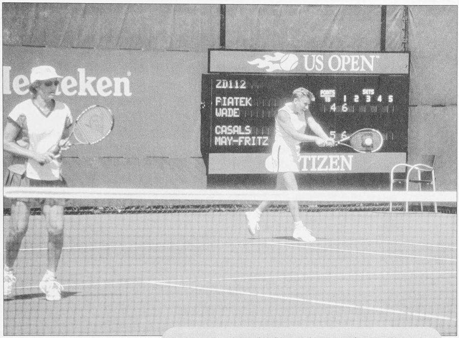
Mary Lou Piatek, được thấy ở đây cùng bạn cặp Virginia Wade, thể hiện một cú trả bóng mạnh mẽ.
Mary Lou Piatek, shown here with partner Virginia Wade, demonstrates a potent return.
Piatek đón bóng bằng chính giữa mặt vợt và giữ thăng bằng tốt ở thời điểm tiếp xúc. Sức mạnh và kiểu trả giao bóng là một phần quan trọng trong việc xác định vị trí của mỗi người bạn cặp, thời điểm cướp bóng và cách triển khai các điểm đấu.
Piatek meets the ball with the center of the racket and is in good balance at the point of contact. The strength and type of return of serve is an important part of determin- ing each partner’s positions, when to poach, and how to play out the points.
Khi người trả giao bóng và bạn cặp của người đó trở nên thoải mái và thử nghiệm những kiểu trả giao bóng khác nhau cùng những chiến thuật khác nhau để áp dụng sau cú trả bóng, họ có thể xác định tốt hơn cách tận dụng điểm mạnh và điểm yếu của mỗi người bạn cặp. Hãy bắt đầu bằng việc phân tích xem mỗi tay vợt nhanh nhẹn đến mức nào ở trên lưới và mỗi tay vợt cảm thấy thoải mái ra sao khi băng ngang sân. Nói chung, cướp bóng ở bên thuận tay dễ hơn vì tay vợt có tầm với tốt hơn; yếu tố đó có thể là căn cứ để quyết định một tay vợt nên chọn bên nào (khi mọi thứ khác đều ngang nhau).
As the returner and his or her partner get comfortable and experiment with different returns of serve and different strategies to use after the return, they can better determine how to take advantage of each partner’s strengths and weaknesses. Start by analyzing how quick each player is at the net and how comfortable each player is crossing the court. Generally it is easier to poach on the forehand side because the player has better reach; that factor can be a determiner of which side a player should chose (all other things being equal).
Một số tay vợt di chuyển tới cú vô-lê trái tay tốt hơn và do đó chơi hiệu quả hơn ở ô bên phải (deuce) và cướp bóng ở những điểm đấu bên ô trái (ad). Roy Emerson, người đã vô địch 16 giải đánh đôi Grand Slam, là tay vợt chơi ô bên phải hay nhất mà tôi từng thấy. Khi bạn cặp của anh ấy trả bóng tốt, anh ấy thường băng ngang và, ngay cả với những quả bóng thấp, vẫn kết thúc cú vô-lê trái tay dứt khoát và giữ được bóng trong sân.
Some players move to the backhand volley better and therefore are more effective playing the deuce side and poaching on ad points. Roy Emerson, who won 16 Grand Slam doubles tournaments, was the best I have ever seen playing the deuce side. When his partner hit a good return, he frequently would cross and, even on low balls, nail the backhand volley and keep it in.
Người Trả Giao Bóng
q) Returner
Cú trả giao bóng phải được thực hiện nhanh như cú vung gậy của một người đánh bóng chày.
The return of serve must be executed as quickly as a baseball batter’s swing.
Khi cú bóng nhanh lao tới với vận tốc 95 dặm/giờ, thời gian phản ứng của người đánh bóng phải nằm trong khoảng vài phần trăm giây. Cú giao bóng một của một tay vợt ở trình độ chuyên nghiệp nam và nữ có thể lao tới người trả giao bóng với tốc độ lên tới 120 đến 140 dặm/giờ, và dù cú nảy làm bóng chậm đi khá nhiều, vẫn có rất ít thời gian để phản ứng. Tôi hy vọng bạn không phải chơi với người có thể giao bóng nhanh đến thế, nhưng dù có hay không, những nguyên tắc cơ bản vẫn như nhau. Việc tuân thủ những khái niệm cơ bản sẽ cho bạn cơ hội tốt nhất để trả thành công bất kỳ cú giao bóng nào.
When the fastball comes at him at 95 miles an hour, the batter’s reaction time must be within hundredths of a second. The first serve by a player at the women’s and men’s pro level may come at the returner as fast as 120 to140 miles per hour, and even though the bounce slows it down quite a bit, there is precious little time to react. I hope that you are not playing someone who can serve that fast, but whether you are or aren’t, the same fundamentals apply. Adhering to the fundamental concepts will give you the best chance to successfully return any serve.
Hãy nhớ tập trung vào bóng khi người giao bóng thả tay tung bóng. Hãy bắt đầu bằng việc gập gối và gập nhẹ ở thắt lưng trước khi bóng được giao. Khi bóng được tung lên, hãy từ từ đứng lên vào một tư thế sẵn sàng tốt và thực hiện bước tách đúng lúc bóng được đánh. Động tác này khởi đầu cho việc di chuyển tới bóng. Tiếp theo là một động tác xoay vai nhanh khi vợt bắt đầu đưa ra sau. Đôi khi, với một cú giao bóng rất nhanh, động tác xoay vai này và một cú vung ngắn ra sau rồi ra trước vào bóng là tất cả những gì bạn có thời gian làm. Với một cú giao bóng chậm hơn, bạn có thể bước một hai bước tới bóng và chuyển trọng lượng vào cú đánh bằng một bước tiến về phía mục tiêu. Hãy thử luyện tập động tác xoay vai nhanh này, trên sân hoặc ngoài sân, trong khi mô phỏng cú trả giao bóng.
Remember to focus on the ball as the server releases the toss. Start by bending your knees and bending slightly at the waist before the serve. As the toss is released, slowly rise into a good ready position and split step as the ball is struck. This initiates the movement to the ball. Next comes a quick shoulder turn as the racket starts its way back. Sometimes, with a very fast delivery, this shoulder turn and a short back-and-forward swing at the ball is all that you'll have time to do. With a slower serve, you can take of couple of steps to the ball and transfer your weight into the shot witha forward step toward the target. Try practicing this quick shoulder turn, on or off the court, while simulating the return of serve.
Vị Trí Đứng Điều đầu tiên người trả giao bóng cần nghĩ tới không phải là mình có thể đánh cú trả bóng mạnh đến đâu, mà là làm sao đưa bóng trở lại qua lưới một cách ổn định.
Positioning The first thing a returner needs to think about is not how hard he or she can hit the return, but how to get the ball back over the net ina consistent manner.
Như tôi đã đề cập ở chương 3, điều quan trọng là xuất phát ở một vị trí mang lại cơ hội tốt nhất để trả cú giao bóng một bất kể bóng được đánh tới đâu.
As I mentioned in chapter 3, it’s important to start ina position that affords the best chance to return the first serve no matter where it is hit.
Ở hình 5.1, a đến d, bạn có thể thấy rằng vị trí đứng của người trả giao bóng phụ thuộc vào vị trí của người giao bóng và kiểu giao bóng mà người đó có xu hướng tung ra. Mỗi người giao bóng đều có một cú giao bóng ưa thích, cũng như mỗi cầu thủ ném bóng đều có một cú ném ưa thích. Nếu bạn đang chơi với người chỉ cố đưa bóng vào sân, thì công việc của bạn với tư cách người trả giao bóng sẽ dễ dàng. Đối thủ càng mạnh, bạn càng có khả năng gặp những tay vợt có thể đánh ít nhất cú giao bóng một với chút lực, sự đa dạng và độ chính xác.
In figure 5.1, a through d, you can see that the positioning of the returner depends on the server’s position and the type of serve he or she is prone to produce. Every server has a favorite serve, just as every pitcher has a favorite pitch. If you are playing someone who is just trying to get the ball in, then your job as a returner is going to be easy. The better the competition, the more likely you are to face players who can hit at least the first serve with some pace, variety, and accuracy.
Sau khi chơi với một đội vài lần, bạn sẽ cảm nhận được đối thủ có khả năng giao kiểu bóng nào và bạn cần đứng ở đâu để trả cú giao bóng đó một cách ổn định và hiệu quả nhất. Hãy cố nắm bắt những khuôn mẫu và xu hướng của người giao bóng để bạn có thể đoán trước người đó sẽ thử kiểu giao bóng và điểm đặt bóng nào ở những điểm quan trọng. Tôi đã từng chơi với một số đội luôn giao cú giao bóng một xoáy nảy (kick) vào phía trái tay của tôi ở điểm bẻ giao bóng, vì họ biết rằng nếu đánh hỏng cú giao bóng một, tôi sẽ cố chạy vòng qua phía trái tay ở cú giao bóng hai và đánh một cú trả bóng thuận tay mạnh mẽ. Điều này rất tốt cho tôi và bạn cặp của tôi; được trang bị kiến thức gần như chắc chắn đó, tôi
After playing a team a few times, you'll get a feel for what type of serve your opponents are likely to hit and where you need to be positioned to return that serve most consistently and effectively. Try to pick up the server’s patterns and tendencies so that you can anticipate what type of serve and placement he or she will attempt on big points. I have played against some teams that would always hit a kick first serve to my backhand on a break point, knowing that if they missed the first serve, I would try to run around my backhand on the second serve and hit a big forehand return. This was great for my partner and me; armed with that almost certain knowledge, I
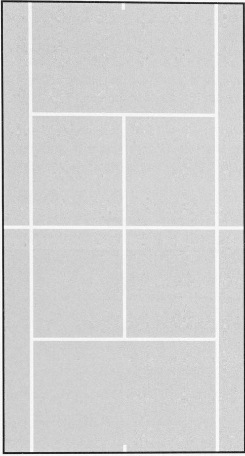
Hình 5.1a
oo.
X3, X1, X2
©, &, W,
Những cú giao bóng mạnh nhất, nhanh nhất sẽ đi xuống giữa sân qua phần lưới thấp hơn.
The hardest, fastest serves will go down the middle over the lower net.
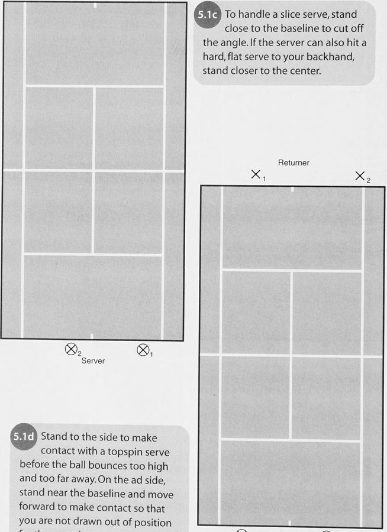
Hình 5.1c: Để xử lý một cú giao bóng cắt bóng, hãy đứng gần vạch cuối sân để cắt bớt góc. Nếu người giao bóng cũng có thể đánh một cú giao bóng phẳng, mạnh vào phía trái tay của bạn, hãy đứng gần giữa sân hơn.
To handle a slice serve, stand close to the baseline to cut off the angle. If the server can also hit a hard, flat serve to your backhand, stand closer to the center.
Hình 5.1d: Đứng lệch sang một bên để tiếp xúc với cú giao bóng xoáy lên trước khi bóng nảy quá cao và quá xa.
x, x, }) Stand to the side to make contact with a topspin serve before the ball bounces too high and too far away.
Ở ô bên trái (ad), hãy đứng gần vạch cuối sân và tiến lên để tiếp xúc bóng, để bạn không bị kéo ra khỏi vị trí cho cú đánh tiếp theo.
On the ad side, stand near the baseline and move forward to make contact so that you are not drawn out of position for the next shot, &), &,
có thể sẵn sàng cả về thể chất lẫn tinh thần để đánh cú trả bóng, và bạn cặp của tôi sẽ biết rằng cú trả bóng sẽ đến từ động tác vung trái tay. Nhưng bạn không thể lúc nào cũng trông đợi bóng sẽ đến một điểm cụ thể.
could be physically and mentally prepared to hit the return, and my partner would know that the return would be coming from the backhand swing. But you can’t always count on the ball coming to a particular spot.
Các Kiểu Trả Bóng Có bốn kiểu trả bóng mà bạn có thể đánh thành công một cách ổn định: cú chặn bóng (block), cú đánh tấn công (drive), cú bấm bóng rồi lao lên (chip and charge) và cú lốp bóng. Mỗi kiểu trả bóng phù hợp với những cú giao bóng và lối chơi khác nhau. Một số tay vợt vĩ đại chỉ đánh bóng theo một cách, nhưng họ làm điều đó tốt đến mức rất hiệu quả trước bất kỳ ai. Nhưng phần lớn những tay vợt giỏi có thể đánh ít nhất vài kiểu trả bóng này và có thể điều chỉnh theo những cú giao bóng khác nhau khi cần.
Types of Returns There are four types of returns you can hit with consistent success: the block, the drive, the chip and charge, and the lob. Each type of return is appropriate against different serves and styles of play. Some of the great players only hit the ball one way, but they do it so well that they are very effective against anyone. But most good players can hit at least a couple of these types of returns and can adjust to different serves as needed.
Cú Chặn Bóng (Block) Cú trả bóng kiểu chặn dùng lực của người giao bóng, nên nó có thể được đánh khá mạnh, nhưng đặc trưng của nó là được đánh có kiểm soát. Cách để có được sự kiểm soát đó là đưa vợt ra sau một quãng ngắn và dùng động tác kết thúc (follow-through) rất gọn (xem hình 5.2, a đến d). Cú chặn thường được đánh với một chút xoáy ngược (underspin) để giảm bớt lực của cú giao bóng đang bay tới và giúp hướng bóng đi thẳng xuống ngay dưới dây giày của người giao bóng.
Block The block return uses the server’s pace, so it can be hit pretty hard, but its hallmark is that it is hit with control. The way to get that control is to take a short backswing and use a very compact followthrough (see figure 5.2, a through d). The block is usually hit with a little bit of underspin to take some pace off the oncoming serve and to help direct the ball right to the server’s shoestrings.
Người trả giao bóng có thể lùi ra sau vạch cuối sân để có thêm thời gian phản ứng với cú giao bóng một và có cơ hội tốt hơn đưa vợt vào bóng để chặn. Người đó cũng có thể đứng gần vào trong và đón cú giao bóng sớm để cho người giao bóng ít thời gian tiến gần lưới hơn. Kiểu đứng sau này được ưa thích hơn vì nó gây sức ép buộc người giao bóng phải chạy nhanh hơn một chút và phản ứng nhanh hơn một chút để cố xử lý một cú đánh khó. Kiểu này cũng khó hơn, đặc biệt trước một cú giao bóng mạnh, nhưng khi luyện tập bạn sẽ thấy nó không khó như vẻ ngoài.
The returner may play back behind the baseline to gain more time to react to the first serve and to have a better chance to get a racket on the ball for the block. He or she may also stand in close and take the serve early to give the server less time to get close to the net. This latter style is preferable because it rushes the server and puts pressure on him or her to runa little faster and react a little quicker to try to handle a tough shot. This style is also more difficult, especially against a hard serve, but with practice you'll find that it is not as hard as it looks.
Cú trả bóng kiểu chặn đòi hỏi thời điểm tốt và khả năng đón bóng sớm một cách ổn định. Cũng như với mọi cú giao bóng một, một động tác xoay vai nhanh sau bước tách sẽ khởi đầu cho động tác đưa vợt ra sau. Trước những cú giao bóng mạnh, đó là tất cả những gì cần chuẩn bị để đánh bóng. Động tác đưa vợt ra sau nên tiếp tục thêm một chút sau khi xoay vai. Cú đánh sẽ tương tự một cú vô-lê, với những biến thể về lượng xoáy. Khi tôi đang "vào phong độ", tôi thường đánh cú chặn khá phẳng. Nếu tôi đang chật vật để kiểm soát bóng, tôi sẽ đánh nó với nhiều xoáy ngược hơn.
The block return requires good timing and the ability to consistently pick up the ball early. As with all first serves, a quick shoulder turn after the split step initiates the backswing. Against big serves, that is all the preparation that is needed to hit the ball. The backswing should continue a bit after the shoulder turn. The shot will be similar to a volley, with variations on the amount of spin. When I was “on,” I would hit the block return fairly flat. If I was struggling for control, I would hit it with more underspin.
Nói chung, người trả giao bóng không nghĩ đến việc tiến lên lưới theo sau cú trả bóng mà tìm cách làm điều gì đó mang tính tấn công bằng cú đánh thứ hai, nếu có thể. Điều này có thể bao gồm những chiến thuật như đánh xuyên qua giữa sân, đánh mạnh vào hông phải của đối thủ, đánh dọc biên, hoặc có thể tung một cú lốp bóng tấn công qua đầu đối thủ nếu họ đang áp sát quá nhiều. Bạn có thể coi chiến thuật này như một đòn phối hợp một-hai, với trọng tâm ở cú thứ hai. Đưa cú trả bóng xuống ngay dưới chân người giao bóng là mục tiêu ở cú đánh đầu tiên, và gây thêm sát thương là mục tiêu ở cú đánh thứ hai (hoặc có thể là cú thứ ba hay thứ tư).
Generally, the returner is not thinking of coming to the net behind the return but is looking to do something offensive with the second shot, if possible. This might include such tactics as hitting through the middle, hitting hard at the right hip of an opponent, going down the line, or possibly throwing up an offensive lob over the opponents if they are closing in too much. You can think of this tactic as a one-two punch, with the emphasis on the two. Getting the return back down at the server’s feet is the goal on the first shot, and doing more damage is the goal on the second (or possibly the third or fourth) shot.
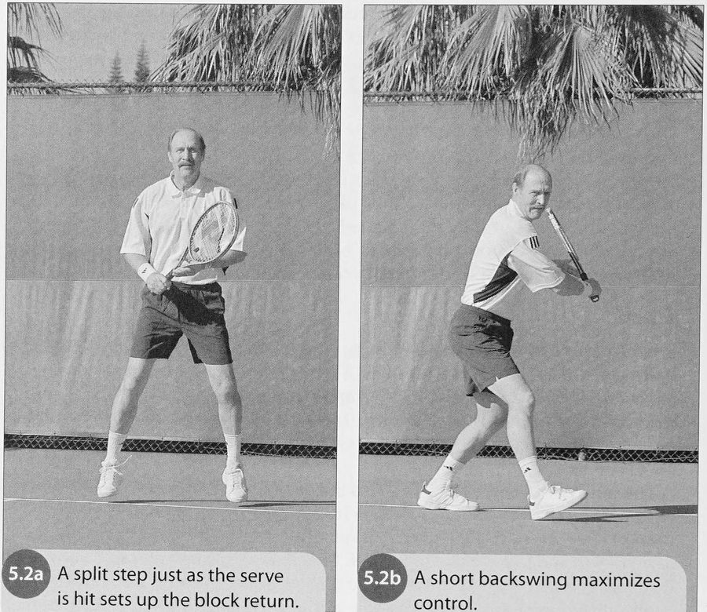
Một bước tách đúng lúc cú giao bóng được đánh sẽ tạo tiền đề cho cú trả bóng kiểu chặn. Một động tác đưa vợt ra sau ngắn giúp tối đa hóa khả năng kiểm soát.
A split step just as the serve A short backswing maximizes is hit sets up the block return. control.
Lợi thế của cú trả bóng kiểu chặn là động tác đánh ngắn, gọn, tận dụng tốc độ giao bóng của đối thủ để đưa bóng trở lại qua lưới với sự kiểm soát và độ chính xác. Nhược điểm là nó không mạnh mẽ và hung hãn bằng một số kiểu trả bóng khác.
The advantage of the block return is the short, compact stroke, which uses the opponent's serving speed to get the ball back over the net with control and accuracy. The disadvantage is that it is not as powerful and aggressive as some other returns.
Việc dùng cú trả bóng kiểu chặn cũng cho người trả giao bóng lựa chọn chuyển sang đánh một cú lốp bóng trả giao bóng, vì động tác chuẩn bị cho hai cú đánh này giống nhau. Khi vợt đã ở phía sau, người trả giao bóng chỉ cần mở mặt vợt để nâng bóng qua đầu người đứng lưới. Việc biết rằng mình không thể đứng quá gần lưới mà không bị một cú lốp bóng có thể đến bất ngờ sẽ khiến người đứng lưới luôn cảnh giác.
Using the block return also gives a returner the option of switching and hitting a lob return of serve because the preparation is similar for the two shots. When the racket is back, the returner can just open up the racket face to elevate the ball over the net player’s head. Knowing that he or she can’t start too close to the net without being vulnerable toa possible lob will keep the net player on the alert.
Cú trả giao bóng kiểu chặn là một lựa chọn phổ biến với các tay vợt thời của tôi. Nó đã và vẫn rất hiệu quả trước phần lớn các cặp đấu vì nó buộc những người giao bóng phải đánh nhiều cú vô-lê thấp, khó và phải tiếp tục chơi phần còn lại của điểm đấu.
The block return of serve was a popular choice for players of my era. It was, and still is, very effective against most teams because it forces servers to hit many tough, low volleys and to continue to play the rest of the point.
Woodbridge và Woodforde đặc biệt giỏi trong việc sử dụng cú trả bóng kiểu chặn, họ đưa được tỉ lệ rất cao các cú trả bóng vào cuộc ngay cả trước những người giao bóng giỏi nhất, rồi họ di chuyển về phía giữa sân (tận dụng
Woodbridge and Woodforde were exceptionally good at using the block return, they gota very high percentage of returns into play even against the best servers, then they moved toward the center of the court (taking
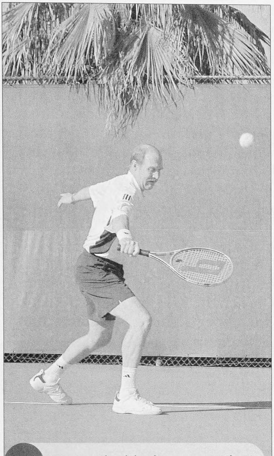
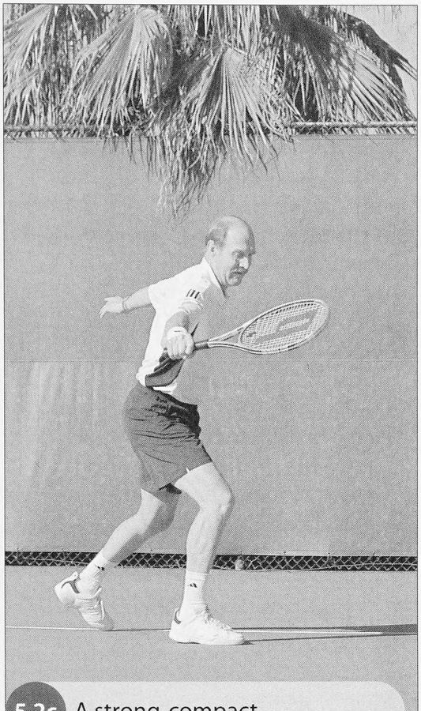
xoáy ngược làm giảm lực và điều chỉnh hướng bóng. Động tác kết thúc hướng về phía mục tiêu sẽ hoàn tất cú đánh mạnh mẽ này. Tận dụng lợi thế của sự kết hợp tay trái/tay phải của họ) và đánh một cú thuận tay ở cú đánh tiếp theo. Những cú trả bóng của họ không đủ sức thổi bay đối phương, nhưng cuối cùng sự ổn định của họ sẽ bào mòn đối thủ. Sau một lúc, đội bên kia sẽ cố quá sức để thắng điểm sớm hầu không phải đối phó với cú đánh tiếp theo. Trong trận chung kết Davis Cup 1999 ở Nice gặp Pháp, cặp "Woodies" khởi đầu chơi rất tệ; trước sự ngạc nhiên của mọi người, họ không đưa được nhiều cú trả giao bóng vào sân dù trận đấu diễn ra trên mặt sân đất nện đỏ. Sau khi chật vật trong gần hai set, cuối cùng họ cũng chơi tốt trở lại (như người Úc hay nói), và từ đó trở đi họ chỉ đánh hỏng một vài cú trả giao bóng. Đáp lại, các tay vợt Pháp bắt đầu cố đánh mạnh hơn ở những cú giao bóng của mình và cũng cố đánh những cú vô-lê đầu tiên mạnh hơn và sát các đường biên hơn. Đây không phải là khởi đầu điển hình của cặp Woodies, nhưng lại là kết thúc bình thường của họ ở chỗ cuối cùng họ đã bóp nghẹt người Pháp bằng lối chơi tấn công vững chắc của mình.
underspin reduces the pace followthrough toward the and adjusts the direction. target completes this powerful, controlled shot. advantage of their left-handed/right-handed combination) and hit a fore- hand on the next shot. Their returns wouldn’t blow the opposition away, but eventually their consistency would take a toll. After a while the other team would try too hard to win the point early so that they wouldn’t have to deal with the next shot. In the 1999 Davis Cup final in Nice against France, the “Woodies” started off playing very poorly; to everyone’s surprise, they were not getting many returns of serve in court even though the match was on red clay. After struggling for nearly two sets, they finally came good (as the Aussies would say), and from that point forward they missed only a handful of returns of serve. In response, the Frenchmen started trying to go for more on their serves and also tried to hit their first volleys harder and closer to the lines. This was nota typical start for the Woodies, but it was anormal ending for them in that they ultimately suffocated the French with their solid offensive play.
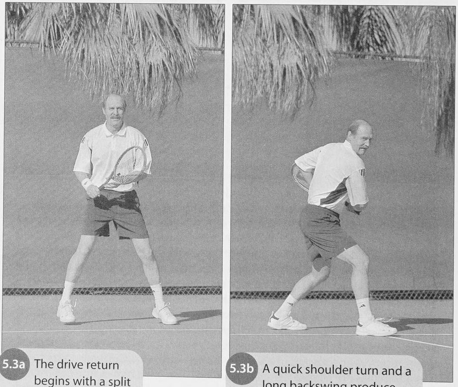
Cú Đánh Tấn Công (Drive) Kiểu trả bóng này ngày càng phổ biến trong lối đánh đôi ở cấp đại học và trên hệ thống chuyên nghiệp. Nhờ những cây vợt lớn hơn, khỏe hơn, nhẹ hơn, các tay vợt đang đánh bóng mạnh hơn; những tay vợt trẻ đang tấn công cú trả giao bóng nhiều hơn thay vì chỉ giữ bóng trong cuộc. Những tay vợt thật sự giỏi, trả bóng tốt ở nội dung đơn, đang đưa được tỉ lệ khá cao các cú trả bóng kiểu đánh tấn công vào sân, nhưng nhiều người khác lại vung vợt loạn xạ và không thể đưa phần lớn cú trả giao bóng trở lại vào cuộc. Trong đánh đôi, mục tiêu nhỏ hơn (một nửa sân), và những người vô-lê giỏi có thể xử lý những cú trả bóng mạnh bay thẳng vào mình bằng cách chặn trả cú vô-lê. Điều này tạo ra một số cú đánh ngoạn mục và một số cú vô-lê rất khó, nhưng chúng đạt được ít nhờ sự khéo léo mà nhiều hơn nhờ việc kiên trì xây dựng từng điểm.
Drive This style of return is increasingly popular in doubles play in college and on the pro tour. Because of the bigger, stronger, lighter rackets, the players are hitting the ball harder; the young players are going for the return of serve more instead of just keeping the ball in play. The really good players who return well in singles are getting a fairly high percentage of drive returns into the court, but many others swing wildly and are unable to get most returns of serve back into play. In doubles the target is smaller (half the court), and good volleyers can handle hard returns coming right to them by blocking the volley back. This results in some spectacular shots and some very difficult volleys, but they are accomplished less by finesse and more by working the points.
Cú đánh tấn công có thể được đánh phẳng, nhưng nói chung nó được đánh với xoáy lên để có thể kiểm soát tốt hơn và đưa bóng trở lại rơi xuống trong sân sau khi bay qua lưới. Rất khó để đánh cú đánh tấn công một cách ổn định vì động tác vung vợt thường khá lớn, với một động tác xoay vai nhanh. Khi cú giao bóng một được đánh vào góc, buộc người trả giao bóng phải với người, thời điểm và sự tiếp xúc bóng của tay vợt Cú trả bóng kiểu đánh tấn công
The drive can be hit flat, but generally it is hit with topspin to allow more control and to bring the ball back down into the court after it travels over the net. It is difficult to be consistent with the drive because the swing is usually pretty big, with a quick shoulder turn. When the first serve is hit into the corner, forcing the returner to stretch, the player’s timing and connection The drive return
Hình 5.3a
a
Một động tác xoay vai nhanh và một động tác đưa vợt ra sau dài tạo ra khả năng tăng tốc lớn và lực mạnh mẽ. Cú trả bóng kiểu đánh tấn công bắt đầu bằng một bước tách đúng lúc cú giao bóng được đánh.
A quick shoulder turn and a begins with a split long backswing produce step as the serve is hit.
khả năng tăng tốc lớn và lực mạnh mẽ.
great acceleration and power.
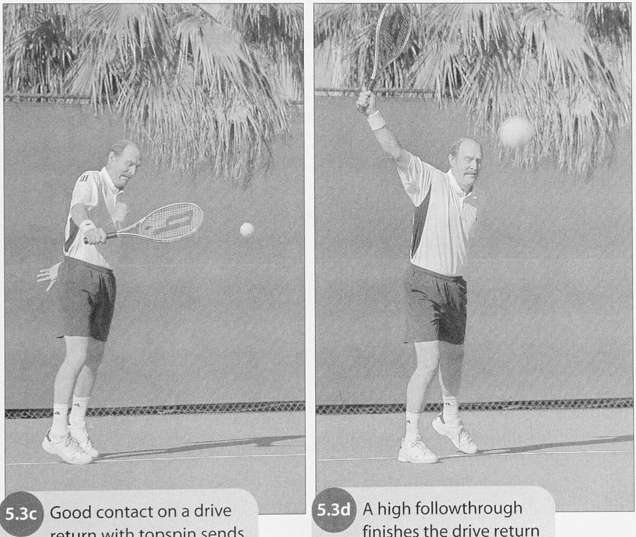
với điểm tiếp xúc phải cực kỳ chính xác để đưa bóng vào sân (xem hình 5.3, a đến d). Tôi thường khuyên rằng một tay vợt muốn chơi tấn công ở mọi cú trả giao bóng thì ít nhất nên cố thực hiện một động tác đưa vợt ra sau ngắn hơn khi cú giao bóng một được đánh tới. Rồi ở cú trả giao bóng hai, vốn bay tới chậm hơn, người đó sẽ có nhiều thời gian hơn để vung vợt lớn hơn vào bóng.
with the contact point must be very precise to put the ball into the court (see figure 5.3, a through d). I generally recommend that a player who wants to be aggressive on all returns of serve at least try to take a shorter backswing when the first serve is being delivered. Then, on the second serve return, which comes in slower, he or she will have more time to take a bigger swing at the ball.
Động tác chuẩn bị cho cú đánh tấn công rất giống với cú trả bóng kiểu chặn, với một bước tách tốt vào thời điểm người giao bóng tiếp xúc với bóng rồi sau đó là một động tác xoay vai nhanh để khởi đầu cho việc đưa vợt ra sau. Với cú đánh tấn công, động tác đưa vợt ra sau sẽ đi xa hơn so với cú chặn, nên sẽ có khả năng tăng tốc lớn hơn và lực mạnh hơn trong cú trả bóng. Động tác đưa vợt ra sau sẽ thấp hơn nếu muốn có xoáy lên, để động tác kết thúc tự nhiên kết thúc phía trên vai (xem hình 5.3d). Cú đánh này sẽ đưa bóng trở lại phía người giao bóng rất nhanh và, nếu bóng vào sân, sẽ đòi hỏi đôi tay tốt để kiểm soát cú vô-lê trong khi đang di chuyển. Xác suất bấp bênh rằng cú trả bóng kiểu đánh tấn công hung hãn này sẽ vào sân khiến nó trở thành một kiểu trả bóng không đáng tin cậy để thử.
The shot preparation for the drive is very similar to that for the block return, witha good split step at the time of the server’s contact with the ball and then a quick shoulder turn to initiate the backswing. With the drive, the backswing will go further back than it does in the block, so there will be more acceleration of the swing and more power in the return. The backswing will be lower if topspin is desired, so that the followthrough will naturally finish above the shoulder (see figure 5.3d). This shot will get back to the server quickly and, if it goes in, will require good hands to control the volley on the move. The uncertain odds that this aggressive drive return is going to goin makes it an unreliable type of return to attempt.
Trong đánh đôi nam nữ, nếu tay vợt nữ giao bóng không mạnh bằng tay vợt nam, cả hai tay vợt của đội nhận bóng có thể cố đánh cú đánh tấn công vào cú giao bóng của tay vợt nữ. Động tác kết thúc cao sẽ hoàn tất cú trả bóng kiểu đánh tấn công với xoáy lên. Tiếp xúc bóng tốt ở cú trả bóng kiểu đánh tấn công sẽ đưa bóng đi lên trên và ra trước.
In mixed doubles, if the female server doesn’t serve as hard as the male server, both players on the returning team may try to drive the female sycie)) A high followthrough Good contact on a drive finishes the drive return return with topspin sends the ball upward and forward.
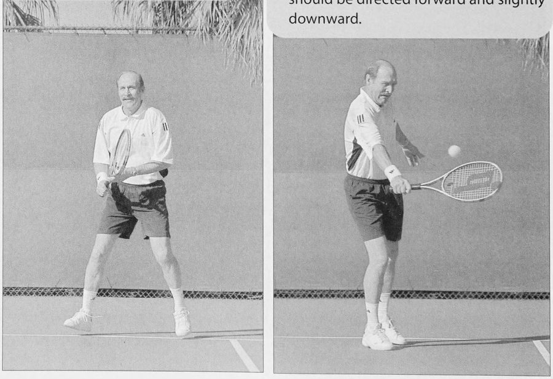
cú giao bóng một của người giao bóng nam trở lại và chặn cú giao bóng một của người giao bóng nam. Tay vợt nữ trả giao bóng có thể đứng lùi xa hơn và lốp cú giao bóng một của người giao bóng nam lên cao và sâu chỉ để buộc đội bên kia phải đánh thêm một quả bóng, hoặc để tận dụng việc tay vợt nữ đối phương thiếu một cú đập bóng trên cao tốt hay không thể di chuyển lùi lại nhanh. Ở cú giao bóng hai, cả tay vợt nam lẫn nữ trả giao bóng đều có thể cố đánh tấn công trả cú giao bóng. Những người trả giao bóng có thể thích bấm bóng rồi lao lên trước cú giao bóng của tay vợt nữ hơn, nếu cô ấy ở lại phía sau khi giao bóng.
server’s first serve back and to block the male server's first serve. The female returner may stand further back and lob the male server's first serve high and deep just to make the other team hit another ball or to take advantage of the opposing female player’s lack of a good overhead or inability to move back quickly. During the second serve, both the male and female returners may try to drive the serve back. The returners might prefer to chip and charge against the female server, if she stays back on her serve.
Bấm Bóng Rồi Lao Lên (Chip and Charge) Cú trả giao bóng kiểu bấm bóng rồi lao lên rất hiệu quả, nhưng ngày nay nó không được dùng thường xuyên trên hệ thống chuyên nghiệp như trước kia. Những cú giao bóng ngày nay mạnh hơn, và những tay vợt đang cố chơi tấn công hơn ở cú trả giao bóng có xu hướng dùng cú đánh tấn công (drive). Tuy vậy, khi các tay vợt thực hiện tốt cú bấm bóng rồi lao lên, họ có thể đánh bại một cặp đấu không quen với nó.
Chip and Charge The chip-and-charge return of serve is very effective, but it is not used as often today on the pro tour as it once was. The serves of today are harder, and players who are trying to be more aggressive with their returns of serve tend to use drives. Still, when players execute the chip and charge well, they can take apart a team that is not used to it.
Ý tưởng của cú bấm bóng rồi lao lên là người trả giao bóng tiến vào cú trả bóng, đánh nó với xoáy ngược để giảm bớt lực nhằm kiểm soát tốt hơn, rồi cố vượt qua người giao bóng để tới lưới trước. Nếu cú trả bóng này được đánh đúng cách và bóng được thả xuống ngay dưới chân người giao bóng đang tiến lên, người giao bóng sẽ chịu áp lực cực lớn phải đánh một cú vô-lê mà người trả giao bóng không thể đánh trả xuống ngay vào người họ.
The idea with the chip and charge is that the returner moves into the return, hits it with underspin to take some pace off the shot for more control, and then tries to beat the server to the net. If this return is hit properly and the ball is dumped at the incoming server’s feet, the server is under tremendous pressure to hit a volley that the returner can’t hit back down at him or her.
Vì các tay vợt đã quen đánh bóng hung hãn và ở lại phía sau trong
Since players are used to hitting the ball aggressively and staying back in
Hình 5.4a: Bước tách tạo tiền đề cho cú bấm bóng
The split step sets up the chip
Hình 5.4b: Cú trả bóng kiểu bấm bóng rồi lao lên nên được "đấm"
(5.ab] The chip and charge return should be “punched”
ở phía trước thân người. Nó nên được hướng về phía trước và hơi hướng xuống dưới.
in front of the body. It va OG a7}; downward.
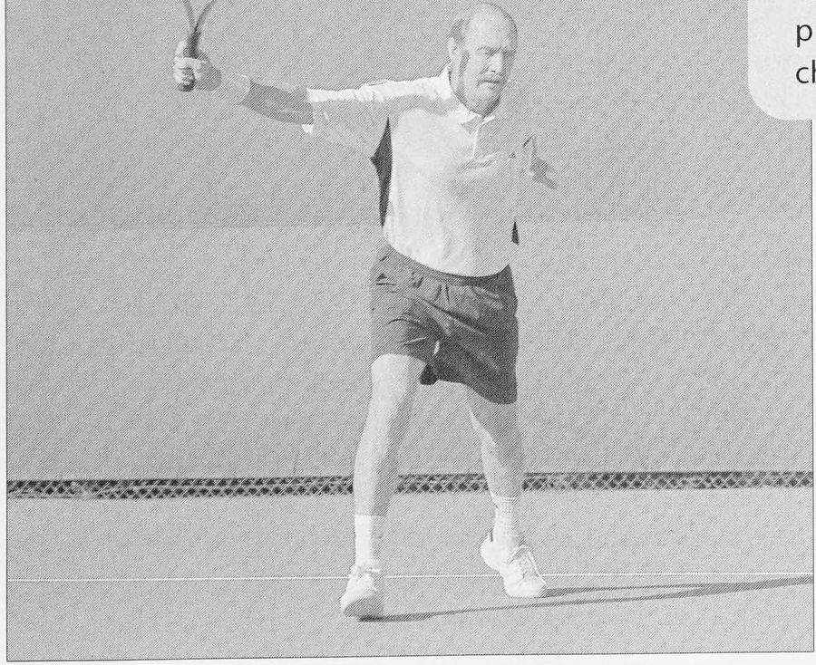
nội dung đánh đơn, họ thường không được chuẩn bị để xử lý cú bấm bóng rồi lao lên trong đánh đôi. Chỉ cần luyện tập một chút việc đánh bóng ngay khi bóng còn đang lên và di chuyển về phía trước, bạn có thể trở nên rất giỏi kỹ thuật này. Nếu đối thủ của bạn ở lại phía sau khi giao bóng, thì bạn đã lấy mất lưới của họ và đưa đội mình vào thế chủ động.
singles tennis, they are often unprepared to handle the doubles chip and charge. With a little bit of practice hitting the ball off the rise and moving forward, youcan get very good at this technique. If your opponents stay back on their serve, then you have taken the net away from them and placed your team in command.
Giống như cú chặn bóng, cú bấm bóng rồi lao lên có phần nào tương tự một cú vô-lê; nó đòi hỏi một động tác xoay vai nhanh sau bước tách (xem hình 5.4a) nhưng cũng đòi hỏi phải di chuyển về phía trước xuyên qua cú đánh. Hãy đưa vợt ra sau một quãng ngắn, và đánh bóng ở phía trước thân người theo kiểu "đấm" nhiều hơn là vung vợt hết tầm khi bạn di chuyển về phía lưới (xem hình 5.4, b và c). Hãy đánh bằng xoáy ngược để hướng bóng hơi chúi xuống cũng như đi ra trước; điều này giữ cho bóng không bay vọt lên vào người bạn. Cú thuận tay và cú trái tay hai tay có thể được chặn bằng một động tác vung ngắn để kiểm soát bóng mà vẫn cho phép bạn tiến vào trong sân theo sau cú trả bóng. Nhiều tay vợt đánh trái tay hai tay không dùng xoáy ngược cho bóng, nhưng vì họ dùng hai tay trên vợt nên họ có thể kiểm soát bóng tốt hơn một tay vợt đánh trái tay một tay.
Like the block return, the chip and charge shot is somewhat similar to a volley; it requires a quick shoulder turn after the split step (see figure 5.4a) butalso requires forward movement through the shot. Take a short backswing, and hit the ball in front of your body with more of a punch than a full swing as you move toward the net (see figure 5.4, b and c). Use an underspin hit to direct the ball slightly downward as well as forward; this keeps the ball from flying up on you. The forehand and two-handed backhand shot can be blocked witha short swing to control the ball that will still allow you to move into the court behind the return. Many two-handed backhand players don’t underspin the ball, but because they use two hands on the racket they can control the ball better than a player hitting a one-handed backhand.
Khi di chuyển về phía lưới, các tay vợt sẽ cảm thấy như thể họ gần như đang mang quả bóng đi về phía trước. Thông thường, bóng không được đánh với nhiều lực. Cú trả bóng kiểu bấm bóng rồi lao lên rất hiệu quả trước những tay vợt không thích những cú vô-lê thấp. Một nhược điểm là nếu cú đánh này không tốt, đối thủ có thể cướp bóng và dứt điểm cú trả bóng trước khi nó tới được người giao bóng đang tiến lên. Mặt khác, bạn có thể chuyển sang cú lốp bóng từ cú bấm bóng rồi lao lên dễ dàng hơn so với từ cú đánh tấn công.
As they move toward the net, players will feel like they are almost carrying the ball forward. Usually, the ballis not hit witha great deal of pace. The chip- and-charge return is very effective against players who don’t like low volleys. One disadvantage is that ifitis not hit well, opponents can poachand knock off the return before it gets to the incoming server. On the other hand, you can more easily shift to a lob from the chip and charge than froma drive.
Hình 5.4c
5.4c | A moderate followthrough and continued movement toward the net com- plete the chip-and- charge return.
Một động tác kết thúc vừa phải và việc tiếp tục di chuyển về phía lưới sẽ hoàn tất cú trả bóng kiểu bấm bóng rồi lao lên.
Cú Lốp Bóng Nói chung, có hai kiểu lốp bóng — lốp bóng tấn công và lốp bóng phòng thủ. Cú lốp bóng tấn công có thể được đánh với xoáy lên rất nhiều, đánh phẳng, hoặc với xoáy ngược. Ngày nay cú đánh phổ biến nhất của các tay vợt chuyên nghiệp là cú lốp bóng với xoáy lên rất nhiều. Cú đánh này được dùng trong tình huống đánh bóng vượt qua đối thủ khi một hoặc cả hai đối thủ đang ở trên lưới.
The Lob In general, there are two types of lobs—the offensive and defensive lobs. The offensive lob canbe hit with excessive topspin, flat, or with underspin. Today the most common shot hit by the pros is the lob with excessive topspin. This shot is used ina passing shot situation with one or both opponents at the net.
Những tay vợt có những cú đánh nền xoáy lên nặng có thể ngụy trang cú đánh này rất tốt vì động tác đưa vợt ra sau rất giống nhau. Cú lốp bóng phẳng hiệu quả khi đối thủ áp sát lưới và đang đoán xem cú bóng vượt qua họ sẽ được đánh về hướng nào. Cú lốp bóng tấn công kiểu bấm bóng và xoáy ngược hoạt động tốt nếu đối thủ đang áp sát để cắt bớt cú bấm bóng tinh tế và người trả giao bóng đánh lừa họ bằng cách đưa bóng bay qua đầu họ khi họ đang nghiêng người về phía trước (xem hình 5.5, a đến d).
Players who have heavy topspin groundstrokes are able to disguise this shot well because the backswing is very similar. The flat lob is effective when the opponents close in on the net and are guessing as to which way the passing shot is going to be hit. The chip and underspin offensive lob works well if the opponents are closing in to cut off the delicate chip and the returner fools them by going up over their heads as they are leaning forward (see figure 5.5, a through d).
Cú lốp bóng phòng thủ được đánh khi một tay vợt đã bị đẩy ra ngoài sân, thường là ở phía sau vạch cuối sân. Cơ hội đánh được một cú bóng vượt qua đối thủ ăn điểm trong tình huống này là thấp nếu đối thủ đang ở vị trí tốt trên lưới và người trả giao bóng không kiểm soát được điểm đấu. Cú đánh này chủ yếu được dùng để buộc đối thủ phải đánh thêm một quả bóng, nhưng cũng để giữ cho họ không chơi quá gần lưới.
The defensive lob is hit when a player is out of court, usually behind the baseline. The chances of hitting a winning passing shot in this situation are low if the opponents are in good position at the net and the returner is not in control of the point. This shot is used primarily to make the opponents hit another shot but also to keep them from playing too close to the net.
Cú lốp bóng là một cú đánh thú vị và hiệu quả vì nhiều tay vợt thấy khó di chuyển lùi lại đủ nhanh để đánh cú đập bóng trên cao (smash). Họ cũng có thể thiếu tự tin vào khả năng đánh cú đập bóng trên cao của mình, đặc biệt khi trời có gió hoặc mặt trời chiếu vào mắt họ. Thường thì phản ứng đầu tiên của các tay vợt trong một đội đánh đôi khi đối phương tung một cú lốp bóng là hô to "của bạn". Mặt khác, phần lớn các tay vợt chuyên nghiệp thích thấy một cú lốp bóng được tung lên vì họ cho rằng mình sẽ có thể thắng điểm. Tôi tin rằng một cú lốp bóng trả giao bóng tốt (hoặc một cú lốp bóng trong điểm đấu), ngay cả ở trình độ thi đấu cao nhất, cũng có thể rất hiệu quả và có thể giúp một đội thắng được khá nhiều điểm.
The lob is an interesting and effective shot because many players find it difficult to move back quickly enough to hit the overhead. They may also lack confidence in their ability to hit the overhead, especially if it is windy or the sun is in their eyes. Often the first reaction by players on a doubles team to a lob hit by the opposition is to yell out “yours.” On the other hand, the majority of pros like seeing a lob go up because they assume that they will be able to win the point. I believe that a good lob return of serve (or lob during the point), even at the highest level of play, can be very effective and can help a team win a good number of points.
Vì những cú giao bóng nói chung được đánh mạnh, cú lốp bóng trả giao bóng ít khi được đánh hung hãn. Khi các tay vợt nam và nữ ở trình độ chuyên nghiệp trả giao bóng hung hãn hơn, việc tung ra một cú lốp bóng trả giao bóng bất ngờ không còn dễ dàng hay hiệu quả như cú chặn bóng. Một khi bạn đã đưa vợt ra sau để đánh cú đánh tấn công hoặc cú trả bóng xoáy lên, bạn đã cam kết với kiểu đánh đó, và rất khó để thay đổi.
Since the serves are generally hit hard, the return of serve lob is seldom hit aggressively. With male and female players at the pro level returning serve more aggressively, hitting a surprise lob return of serve is not as easy or effective as a block return. Once you take the racket back to hit a drive or topspin return, you commit to that type of shot, and it is hard to change.
Những người trả giao bóng đánh cú bấm bóng rồi lao lên, với động tác đưa vợt ra sau cao hơn và gọn hơn, có thể đánh một cú lốp bóng được ngụy trang khá dễ dàng.
Returners who hit the chip and charge, with its higher and more compact backswing, can pretty easily hit a disguised lob.
Woodbridge và Woodforde sử dụng cú lốp bóng hiệu quả trong suốt thời gian họ đánh cặp. Phong cách trả giao bóng của họ hoàn hảo cho chiến thuật này. Cả hai người họ đều đánh cú chặn bóng trái tay trả giao bóng khá nhiều, và họ tìm kiếm cơ hội tung cú lốp bóng ở những điểm then chốt trong trận đấu.
Woodbridge and Woodforde used the lob effectively throughout their partnership. Their return of serve style was perfect for this tactic. Both of them would hit the backhand block return of serve quite a bit, and they would look for the opportunity to hit the lob at key points during the match.
Nếu họ nhận thấy đối thủ đang ở gần lưới hoặc cướp bóng khá nhiều, họ sẽ không tung cú lốp bóng ngay lập tức hay lúc nào cũng đánh nó. Họ lưu thông tin này vào chiếc máy tính nội bộ của mình (trong đầu họ) và chờ đến một điểm bẻ giao bóng hay một tình huống căng thẳng. Khi đó một trong hai người sẽ tung ra cú đánh. Vì họ luyện tập cú đánh này không ngừng, họ gần như liếm mép chờ đợi khoảnh khắc hoàn hảo để bất ngờ tung nó ra trước đối thủ.
If they noticed that their opponents were close to the net or poaching quite a bit, they wouldn’t hit the lob right away or hit it all the time. They would file away this information away in their internal computers (their heads) and wait for a breakpoint or tight situation. Then one of them would hit the shot. Because they practiced this shot incessantly, they would almost lick their chops anticipating the perfect moment to spring it on their opponents.
Thật đẹp mắt khi xem. Đối thủ cứ tiếp tục tiến gần hơn và
It was beautiful to watch. The opponents would keep moving closer and
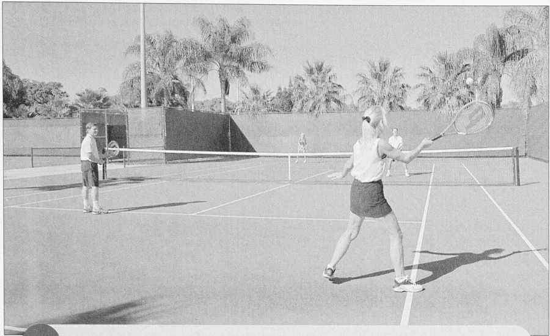
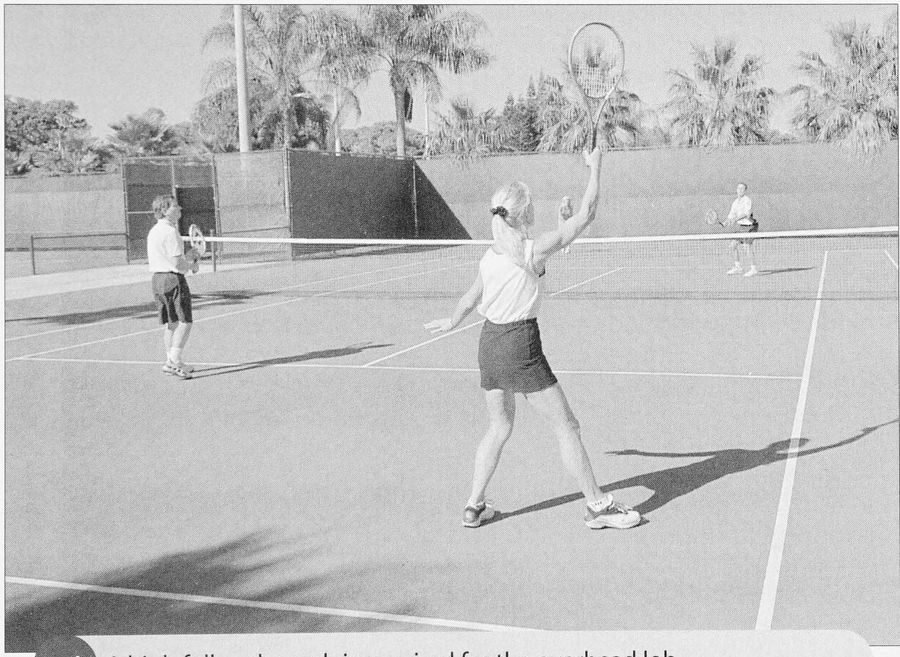
Hình 5.5b: Cú lốp bóng đánh trên cao đòi hỏi một động tác kết thúc cao.
c¥e)0) A high followthrough is required for the overhead lob.
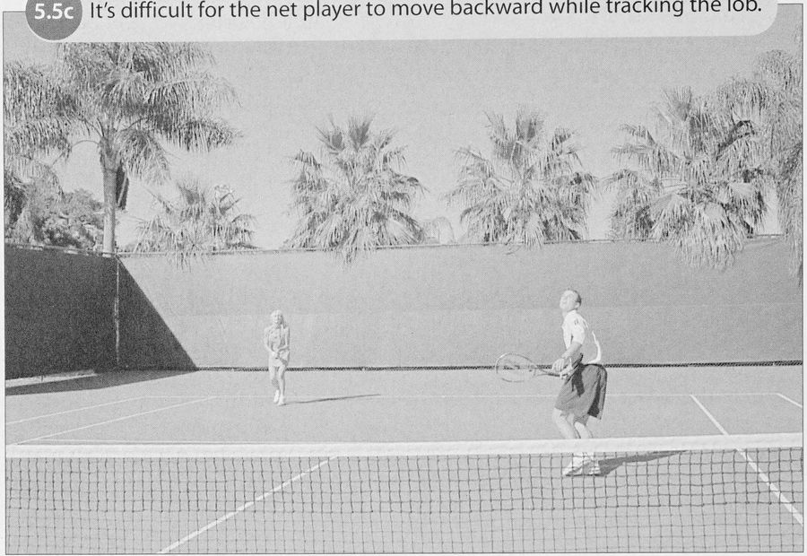
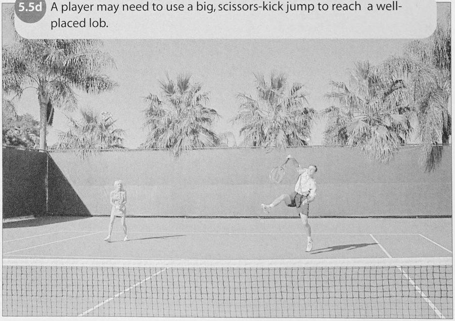
Hình 5.5c: Người đứng lưới khó có thể di chuyển lùi lại trong khi theo dõi cú lốp bóng. Hình 5.5d: Một tay vợt có thể cần dùng một cú nhảy kéo chân kiểu kéo kéo (scissors-kick) lớn để với tới một cú lốp bóng được đặt tốt.
icult for the net player to move backward while track ing the lob 's diff A player may need to use a big, -kick jump to reach a well- placed lob
gần lưới hơn, với mắt nhìn về phía cú trả giao bóng chéo sân để vồ lấy. Rồi đột nhiên họ phải chật vật tuyệt vọng để lùi về hoặc hô gọi bạn cặp cố đỡ lấy cú lốp bóng sâu được ngụy trang kỹ càng. Một khi quả bóng dường như đang bay qua đầu đối thủ và họ nhìn thấy cả hai đối thủ đang phải lùi về, cặp Woodies sẽ nhanh chóng tiến lên để chiếm lấy thế trận trên lưới.
closer to the net, with an eye toward pouncing on the cross-court return of serve. Then all of a sudden they would desperately struggle to get back or call to their partner to try to cover the well-disguised deep lob. Once the ball appeared to be clearing their opponents’ heads and they could see that both players were on the retreat, the Woodies would quickly move forward to take over at the net.
Động tác đưa vợt ra sau cho cú lốp bóng trả giao bóng phải ngắn, với mặt vợt mở (mặt vợt hơi hướng lên trên). Hãy dùng một động tác kết thúc dài để đảm bảo độ dài tốt cho cú đánh. Cú trả bóng nên nhắm qua phía trái tay của người đứng lưới và được thực hiện theo cách mà nếu bóng không đi đúng nơi nhắm tới thì sẽ hướng về giữa sân (xem hình 5.5e).
The backswing for the lob return of serve must be short, with the racket open (racket facing slightly upward). Use a long followthrough to ensure good length on the shot. The return should be aimed over the backhand side of the net player and executed in such a way that it will favor the middle of the court if it does not go exactly where it is aimed (see figure 5.5e).
Cú lốp bóng tấn công, thường được đánh sau khi đội giao bóng đánh cú vô-lê đầu tiên của họ, được đánh theo cách tương tự cách đánh một cú đánh nền (groundstroke). Đây là lý do nó có sức đánh lừa lớn đến vậy. Nếu một đội đang đánh những cú đánh nền tốt, đội đang vô-lê thường chơi khá gần lưới để bóng không chúi xuống dưới chân họ. Nhưng rất khó để một đội đồng thời phòng bị cả cú đánh nền chúi xuống lẫn cú lốp bóng xoáy lên nếu đối thủ đánh tốt cả hai. Những tay vợt giỏi ở khu vực cuối sân có thể gặp bất lợi khi chơi ở trên lưới, nhưng họ có thể bù đắp bằng những cú đánh chúi bóng tốt và những cú lốp bóng xoáy lên.
The offensive lob, which would most likely be hit after the serving team hits their first volley, is hit in a manner similar to that used to hit a groundstroke. This is why it is so deceptive. If a team is hitting good groundstrokes, the volleying team usually plays fairly close to the net so that the ball doesn’t dip down at their feet. But it’s hard for a team to simulta- neously cover the dipping groundstroke and the topspin lob if the oppo- nents hit them both well. Great back-court players may be at a disadvantage when they play at the net, but they can make up for it with good dipping shots and topspin lobs.
Cú lốp bóng xoáy lên được đánh bằng một động tác vung vợt từ thấp lên cao được phóng đại và lượng xoáy lên rất lớn, cả hai điều này khiến bóng rơi xuống nhanh sau khi bay qua đầu người đứng lưới. Cú đánh này nảy văng ra xa lưới, nên một khi bóng đã bay qua đầu một tay vợt thì gần như không thể đuổi theo được.
The topspin lob is hit with an exaggerated low-to-high swing and exces- sive topspin, both of which cause the ball to come down quickly after clearing the net player’s head. This shot bounces away from the net, so once it goes over a player’s head it is almost impossible to run down.
Hình 5.5e: Nếu cú lốp bóng trả bóng bị đánh hỏng, bóng nên đi về phía giữa sân.
74efei-9 If the lob return misses, it should go toward the center of the court.
Trả Cú Giao Bóng Hai Phần lớn mọi người thích một kiểu trả bóng, nhưng tốt nhất là có thể đánh nhiều kiểu trả bóng để bạn có thể thích nghi với những phong cách tay vợt khác nhau mà bạn gặp phải. Bất kể kiểu trả bóng ưa thích của bạn là gì, bạn đều có thể chơi tấn công hơn khi trả cú giao bóng hai. Như tôi đã giải thích ở chương 3, tư duy khi trả cú giao bóng hai rất khác. Đối thủ đã cho bạn một cơ hội; bạn sẽ muốn đánh cú mạnh nhất của mình và tận dụng triệt để cơ hội từ cú giao bóng hai. Giả sử bạn có cú thuận tay mạnh hơn trái tay và bạn đang chờ cú giao bóng thứ hai. Hãy đứng lệch về bên trái và di chuyển vào phía trong vạch cuối sân (xem hình 5.6); từ đó bạn có bốn lựa chọn.
Returning the Second Serve Most people prefer one style of return, but it is best to be able to hit many types of returns so that you can adjust to the different styles of players that you come up against. No matter what your favorite style of return you can be more aggressive when you return the second serve. As I explained in chapter 3, the mindset for returning the second serve is very different. Your opponents have given you an opening; you'll want to hit your strongest shot and take full advantage of a second serve opportunity. Let’s assume that you have a stronger forehand than backhand and that you are waiting for the second delivery. Stand over to the left and move inside the baseline (see figure 5.6); from there you have four options.
Hình 5.6: Vị trí xuất phát tốt để trả cú giao bóng hai là ở phía trong vạch cuối sân và hơi lệch về phía giữa sân.
s.6] A good Ae BAe
X1 (giao bóng một) X2 X1 (giao bóng hai)
me (first serve) ye Ki (second serve)
1. Bạn có thể giữ nguyên ở phía trước và lệch về bên trái.
1. You can stay forward and to the left.
2. Bạn có thể xuất phát ở phía trước và lệch trái, rồi khi đối thủ tung bóng, lùi về một vị trí trung tính, phía trước và ở giữa.
2. Youcan start forward and left, then as the opponent tosses the ball, move back to a neutral position, forward and middle.
3. Bạn có thể xuất phát ở vị trí trung tính rồi di chuyển sang trái khi đối thủ tung bóng.
3. You can start in a neutral position and then move to the left as the opponent tosses the ball.
4. Bạn có thể xuất phát ở vị trí trung tính và giữ nguyên ở đó.
4. You can start in the neutral position and stay there.
Khi áp dụng những vị trí khác nhau này trong các tình huống giao bóng hai, điều đầu tiên bạn làm là khiến đối thủ tự hỏi không biết bạn đang cố làm gì.
By applying these different positions in second serve situations, the first thing you do is make your opponents wonder what you are trying to do.
Thứ hai, bằng cách khuyến khích đối thủ đoán xem bạn sẽ làm gì, bạn có thể khiến họ mất tập trung khỏi trách nhiệm chính của mình: giao bóng. Thứ ba, họ có thể đoán sai và trao cho bạn cú đánh bạn muốn, hoặc họ có thể đoán đúng nhưng vẫn đưa bóng tới nơi bạn có thể đánh được. Họ có thể cố giao bóng rộng sang bên (về phía bên phải), nghĩ rằng bạn đang di chuyển sang trái, hoặc cố giao vào những vùng nhỏ để buộc bạn phải đánh cú yếu hơn của mình là cú trái tay. Nếu họ giao sang bên phải và bạn đang ở đó (trong các kịch bản số 2 và số 4 ở trên), thì bạn có được cú đánh mình muốn. Nếu họ giao sang bên phải nhưng giao chậm hơn vì đó là cú giao bóng hai, bạn nhiều khả năng vẫn đưa được vợt vào bóng. Nếu họ cố giao sát vạch ở phía trái tay của bạn và đánh hỏng, đó là điểm của bạn.
Second, by encouraging your opponents to guess what you will do, you may cause them to break their concentration on their primary responsibility: serving. Third, they may guess wrong and give you the shot you want, or they may guess correctly but still put the ball where you can hit it. They may try to serve wide (to the right), thinking that you are moving left, or try to serve into the small areas in order to force you to hit your weaker shot, the backhand. If they serve to the right and you are there (in scenarios #2 and #4 above), then you have the shot you wanted. If they serve to the right but serve slower because it is a second serve, you will probably still get your racket on the ball. If they try to serve close to the line on your backhand side and miss, it’s your point.
Tôi nhận thấy rằng vào đầu trận đấu, người giao bóng có thể tận dụng khoảng trống bạn tạo ra để làm bạn bị tổn thương bằng cú giao bóng hai. Nhưng khi tỉ số là 15-40 hay 30-40, người giao bóng sẽ căng thẳng hơn một chút và dè dặt hơn, và những điều tồi tệ dễ xảy ra với người đó hơn. Người giao bóng có thể liều một nước và thành công, đánh bóng đúng vào nơi bạn muốn, hoặc phạm lỗi giao bóng kép.
Ihave found that early ina match a server may be able to use the opening you created to hurt you with the second serve. But when it is 15—40 or 30-40, the server is going to be a little tighter and more tentative, and bad things are more likely to happen for him or her. The server may take a gamble that works, hit the ball right where you want it, or double-fault.
Nếu bạn có được cú đánh mạnh mà mình muốn và đánh nó thật lực, thì bạn đã gieo một hạt giống vào đầu đối thủ. Họ sẽ không muốn thấy cú đánh mạnh đó bay tới mình lần nữa. Để ngăn điều đó, người giao bóng có thể bắt đầu đánh cú giao bóng một dễ hơn để đảm bảo bóng vào sân và tránh phải đánh cú giao bóng hai. Điều này đặt bạn vào một thế thuận lợi hơn; bạn nhiều khả năng sẽ nhận được những cú giao bóng một dễ hơn và có thể đặt cú trả bóng của mình vào nơi bạn muốn.
If you do get the strong shot you wanted and you hit it hard, then you will have planted a seed in your opponents’ mind. They will not want to see that hard hit come at them again. To prevent that, the server may start hitting an easier first serve to ensure that it goes in and to avoid having to hit a second serve. This puts you in a more favorable position; you are more likely to get easier first serves and to be able to place your returns where you want them.
Cũng dễ hơn khi đánh cú đánh tấn công, cú chặn bóng và đặc biệt là cú bấm bóng rồi lao lên ở những cú giao bóng hai. Khi Bob Lutz bấm bóng rồi lao lên ở cú giao bóng hai và đưa bóng thấp xuống ngay dưới chân đối thủ, trong khi tôi ở trên lưới và anh ấy đang lao tới, chúng tôi thường thắng điểm đó.
It is also easier to drive, to block, and especially to chip and charge on second serves. When Bob Lutz chipped and charged on the second serve and put the ball low at our opponent’s feet, while I was at the net and he was charging forward, we usually won the point.
Một biến thể tốt khác để trả cú giao bóng hai là đánh thẳng vào người đứng lưới hoặc xuống hành lang biên của người đó. Bạn nên báo cho bạn cặp biết rằng bạn sẽ thử cú đánh này. Nếu bạn cặp của bạn sẵn sàng và bạn đánh cú trả giao bóng tốt, một trong ba điều có thể xảy ra. Bạn cặp của bạn sẽ có cơ hội dứt điểm một cú đánh phản xạ đánh hỏng của người đứng lưới, bạn sẽ có một cú đánh thứ hai dễ dàng, hoặc, trong trường hợp lý tưởng nhất, bạn sẽ thắng điểm ngay lập tức. Cú đánh này khiến người đứng lưới phải nghĩ đến việc bảo vệ hành lang biên thay vì cướp bóng nhiều.
Another good variation for returning the second serve is to hit right at the net player or downhis or heralley. Youshould tell your partner youare going to attempt this shot. If your partner is ready and you hit the return of serve well, one of three things could happen. Your partner will get to put away a mis-hit reflex shot from the net player, you will have an easy second shot, or, ideally, you will win the point outright. This shot keeps the net player thinking about protecting the alley instead of doing a lot of poaching.
Một lợi ích cộng thêm nữa là, nếu người đứng lưới bị bóng đập trúng, bị đánh vượt qua hoặc bị bẽ mặt, người đó có thể sẽ mạnh mẽ thúc giục người giao bóng đưa cú giao bóng một vào sân.
Another added benefit, if the net player gets hit or passed or embarrassed, is that he or she may strongly encourage the server to get that first serve in the court.
Trong đánh đôi nam nữ, tay vợt nam nên cố dùng những biến thể này để uy hiếp cú giao bóng hai của đối thủ. Một chiến thuật tốt là đánh cú giao bóng hai của tay vợt nam vào tay vợt nữ đang ở trên lưới, hoặc, nếu cú giao bóng hai của tay vợt nữ yếu, thì đánh mạnh nó vào tay vợt nam đang ở trên lưới. Khi tay vợt nữ giao bóng, hãy trả cú giao bóng với sự tấn công có kiểm soát.
In mixed doubles, the male player should try to use these variations to intimidate his opponent’s second serve. It is good strategy to hit the male player’s second serve at the female player at the net, or, if the female player's second serve is weak, to rip it at the male player at the net. When the female player is serving, return the serve with controlled aggression.
Bạn Cặp Của Người Trả Giao BóngReturner’s Partner
Sự thành công của đội đang trả giao bóng phụ thuộc chính xác vào điều đó — cả đội. Tất nhiên tay vợt trả giao bóng là nhân tố then chốt, nhưng bạn cặp của người đó cũng rất quan trọng trong việc quyết định thành công hay thất bại của cả đội. Người bạn cặp có ảnh hưởng tới khả năng xử lý một cú trả bóng tốt của đối thủ và có thể cứu được điểm nếu người trả giao bóng đánh một cú không được như mong muốn. Tôi luôn nói rằng tôi đã cho Bob Lutz đủ mọi cơ hội để thực hiện những pha cứu bóng ngoạn mục, phản xạ đánh bóng ăn điểm, với những quả bóng mà anh ấy chỉ có thể chạm tới được nhờ những cú trả bóng bổng lơ lửng và kém hiệu quả của tôi. Tôi đã làm cho anh ấy nổi tiếng, nhưng tôi cũng là nguyên nhân của vài vết bầm tím trong những dịp mà thay vì Bob đánh bóng, thì bóng lại đập vào anh ấy.
The success of the team that is returning serve depends on exactly that—the team. Certainly the player who is returning the serve is the key, but his or her partner is also very important in determining the success or failure of the team. The partner influences the opponents’ ability to handle a good return and can save the point if the returner hits a less than desirable shot. I always said that I gave Bob Lutz all sorts of opportunities to make spectacular saves, reflexing shots for winners, on balls that he was able to touch only because of my high-floating, ineffective returns. I made him famous, but I was also responsible for a few black and blue spots on those occasions when, instead of Bob hitting the ball, the ball hit him.
Như tôi đã đề cập ở chương 3, mọi thứ đều được quyết định bởi cú trả bóng. Sau khi ra tín hiệu cho người trả giao bóng, người bạn cặp nên nhìn thẳng vào người đứng lưới của đội giao bóng để xác định xem cú trả bóng đã được hướng tới đâu. Từ đó trở đi, tay vợt này có thể cướp bóng và áp đặt ý chí của mình lên đối thủ, cũng như bạn cặp của người giao bóng làm ở phía bên kia lưới.
As I mentioned in chapter 3, everything is dictated by the return. After making a call for the returner, the partner should look right at the serving team’s net player to determine where the return has been directed. From that point on, the player can poach and assert his or her will on the opponents, just as the server’s partner does on the other side of the net.
Khi một cú chặn bóng được đánh đi, người đứng lưới của đội nhận bóng đang chờ một cú trả bóng thấp xuống dưới chân đối thủ, buộc người đó phải đánh bóng lên trên. Nếu đó là một cú trả bóng thấp tuyệt vời, thì người vô-lê sẽ không thể đánh bóng mạnh được; điều này sẽ cho người đứng lưới bên đội nhận bóng thời gian để chặn cú vô-lê.
When a block return is hit, the returning team’s net player is looking for a low return at the opponent’s feet that will force him or her to hit the ball up. If itis a great low return, then the volleyer will not be able to hit the ball very hard; this will give the returning net player time to intercept the volley.
Bạn cũng có thể liều lĩnh và cướp bóng khi bạn cặp của bạn trả giao bóng tốt; bạn không kỳ vọng thắng game mà đối thủ đang giao bóng nên cũng không thiệt hại gì nhiều nếu bạn không thành công. Và nếu bạn di chuyển đủ nhiều để gieo hạt giống hoài nghi vào đầu đối thủ, bạn có thể gặt hái thành quả khi trận đấu trở nên thật sự căng thẳng. Bạn có thể có một cú vô-lê dễ dàng hoặc buộc đối thủ mắc sai lầm trong khi họ đang cố đoán xem bạn sẽ làm gì. Vì cú chặn bóng làm giảm bớt lực của bóng, bạn cặp của người trả giao bóng cần chờ thêm một khoảnh khắc trước khi di chuyển để chặn cú vô-lê. Bạn cặp của người trả giao bóng phải có khả năng hành động theo phản xạ để đỡ mọi loại cú đánh. Nếu người trả giao bóng đang đánh khá mạnh, vị trí xuất phát của người bạn cặp nên gần vạch giữa sân hơn để gây chút áp lực lên người vô-lê. Nếu người trả giao bóng không gặp thuận lợi, người bạn cặp nên chơi hơi lệch về phía hành lang biên hơn. Bạn cặp của người trả giao bóng nên thực hiện bước tách khi cú vô-lê đang được đánh, để người đó có thể cắt sang bất kỳ hướng nào để đánh một cú vô-lê hay thậm chí một cú đập bóng trên cao.
You might as well gamble and poach when your partner hits a good return of serve; you are not expecting to win the game that your opponents are serving so it doesn’t hurt too much if you are not successful. And if you do move enough to plant that seed of uncertainty in your opponent’s mind, you may reap dividends when the match becomes really tight. You might get an easy volley or force your opponents into making a mistake while they are trying to guess what you are going to do. Because the block return takes some of the pace off the ball, the returner’s partner needs to wait an instant longer before moving to intercept the volley. The returner’s partner must be able to act reflexively to cover all sorts of shots. If the returner is hitting pretty hard, the partner’s starting position should be closer to the center line in order to puta little pressure on the volleyer. If the returner is not having an easy time, the partner should play a little more toward the alley. The returner ’s partner should split step as the volley is being hit, so that he or she can cut in any direction to hit a volley or even an overhead.
Ở cú trả bóng kiểu bấm bóng rồi lao lên, bạn cặp của người trả giao bóng sẽ không cướp bóng nhiều như nhiều, vì người trả giao bóng đang tiến lên theo sau cú trả bóng. Bạn cặp của người trả giao bóng có thể tiến lên một chút để tăng áp lực lên người vô-lê; cú vô-lê phải rất chính xác mới giữ được bóng xa hai người đang ở trên lưới. Nếu cú trả bóng được đánh tốt và người đứng lưới không cướp bóng, thì đội nhận bóng đang ở thế rất thuận lợi để thắng điểm. Đừng cản trở cơ hội tận dụng cú bấm bóng rồi lao lên của đội bạn bằng cách cướp bóng rồi bỏ trống. Ở cú trả bóng kiểu đánh tấn công, bóng sẽ được người giao bóng đang tiến lên đánh trả rất nhanh, nên người bạn cặp phải sẵn sàng tham gia vào cuộc rất sớm. Cách duy nhất để đội tận dụng được cú đánh tấn công là người bạn cặp phải tỉnh táo và nhạy cảm với tốc độ của cú đánh. Khi cú trả bóng kiểu đánh tấn công được đánh tốt, người vô-lê có thể bị bắt bài và buộc phải chật vật với một cú vô-lê lúng túng hoặc một cú đánh nền khó nếu người đó giao bóng rồi ở lại phía sau. Người đứng lưới cần giữ cho đôi chân luôn di chuyển và giữ vợt ở phía trước. Từ tư thế sẵn sàng này, người đứng lưới sẽ sẵn sàng xử lý phần lớn những cú đánh bay về phía mình. Với tốc độ của những cú đánh, bạn cặp của người trả giao bóng có lẽ sẽ không di chuyển quá xa. Ở những cú trả bóng kiểu đánh tấn công, công việc của tay vợt này bao gồm Cú lốp bóng trả bóng khó xử cho bạn cặp của người trả giao bóng. Nếu cú lốp bóng không đủ cao, tính mạng của người bạn cặp có thể gặp nguy hiểm. Nếu cú lốp bóng bay qua đầu các tay vợt đối phương và người trả giao bóng tiến lên lưới, thì đối phương nhiều khả năng sẽ chuyển sang thế phòng thủ và tung một cú lốp bóng cho cú đánh tiếp theo của họ. Những người giao bóng phải cho bạn cặp biết nếu họ thậm chí chỉ đang nghĩ đến việc tung một cú lốp bóng trả giao bóng, để người bạn cặp có thể sẵn sàng cho một cú đập bóng trên cao uy lực hoặc một cú vô-lê ngon ăn.
On the chip-and-charge return, the returner’s partner will not poach as much because the returner is coming in behind the return. The returner’s partner may move forward slightly to increase the pressure on the volleyer; the volley has to be very precise to keep it away from the two people at the net. If the return is hit well and the net player doesn’t poach, then the returning team is in great shape to win the point. Don’t hinder your team’s opportunity to capitalize on the chip and charge by poaching and leaving On the drive return, the ball will be hit by the incoming server very quickly, so the partner must be ready to get into the act very soon. The only way the team can take advantage of the drive is for the partner to be alert and sensitive to the speed of the shot. When the drive return is hit well, the volleyer can get caught and be forced to struggle with an awkward volley or a tough groundstroke if he or she serves and stays back. The net player needs to keep his or her feet moving and keep the racket out in front. From this ready position, the net player will be ready to handle most of the shots that come his or her way. Given the speed of the shots, the returner’s partner will probably not move too far. On drive returns, this player’s job consists The lob return is tricky for the returner’s partner. If the lob is not high enough, the partner’s life may be in jeopardy. If the lob goes over the opposing players’ heads and the returner comes in to the net, then the opposition is likely to assume a defensive position and hit a lob for their next shot. Servers must let their partner know if they are even thinking about hitting a lob return of serve, so that the partner can be ready for a booming overhead or a sitter volley.
Bạn cặp của người trả giao bóng có thể điều chỉnh vị trí của mình tùy theo chất lượng của cú trả bóng. Sự thay đổi vị trí này có thể có ảnh hưởng rất lớn tới đối thủ. Họ sẽ tự hỏi vì sao, và chỉ riêng điều đó cũng khiến họ chơi khác đi một chút. Thay đổi chính mà bạn cặp của người trả giao bóng có thể thực hiện là ở lại phía sau gần vạch cuối sân cùng với người trả giao bóng. Điều này lấy đi của đối thủ mục tiêu, nếu cú trả bóng được đánh kém. Một số tay vợt thích có một mục tiêu vì nó khiến họ đánh dứt khoát hơn. Không có mục tiêu, người vô-lê có thể không làm được nhiều với cú đánh, nhờ đó trao cho đội nhận bóng thêm một cú vung vợt tử tế ở quả bóng tiếp theo. Thời điểm bạn thay đổi đội hình trả bóng là điều then chốt. Nếu bạn liên tục chật vật để bẻ giao bóng trong set đầu, hãy thực hiện thay đổi ở tỉ số 5-4 hoặc 6-5. Đội bên kia lúc đó đang bon bon chạy và sẽ đột nhiên phải đối mặt với một diện mạo khác. Dù sao thì họ cũng có khả năng cảm thấy hơi căng thẳng một chút vào cuối set, và sự thay đổi này có thể khiến họ bắt đầu suy nghĩ quá nhiều. Đó chính là điều bạn muốn họ làm. Trong khi họ đang suy ngẫm về những nguyên nhân và hệ quả khả dĩ của sự thay đổi chiến thuật này, họ sẽ kém chắc chắn hơn về kế hoạch chơi của chính mình và có thể kém dứt khoát hơn khi thực hiện nó.
The returner’s partner can adjust his or her position according to the quality of the return. This change in position can have a very big effect on the opponents. They will wonder why, and this alone will cause them to play a little differently. The main change a returner’s partner can make is to stay back by the baseline with the returner. This takes away the opponents’ target, if the return is hit poorly. Some players like to have a target because it causes them to hit more decisively. Without a target, the volleyer may not do as much with the shot, thereby giving the returning team another decent swing at the next ball. When you change your return formation is key. If you have consistently been struggling to break serve during the first set, make the change at 5-4 or 6-5. The other team will have been rolling along and will all of asudden be faced with a different look. They are likely to be feeling a little tense near the end of the set anyway, and this change may make them start thinking too much. That is what you want them to do. While they are pon- dering the possible causes and effects of this strategy change, they’II be less certain of their own game plan and possibly less decisive in executing it.
Trong đánh đôi nam nữ, tay vợt nữ là bạn cặp của người trả giao bóng có lẽ sẽ bị nhiều bóng đánh thẳng vào mình khi cô ấy ở trên lưới. Điều này có thể đáng sợ, nhưng nếu cô ấy đang chờ đợi những cú đánh đó và mong đợi chúng bay về phía mình, thì cô ấy
In mixed doubles, the female partner of a returner will probably have many balls hit at her when she is at the net. This can be intimidating, but if she is looking for those shots and expecting them to come her way, then she
có thể xử lý chúng tốt hơn. Chìa khóa để chơi ở trên lưới, ngoài việc mong đợi bóng bay vào mình, là quan sát đối thủ thật kỹ để có manh mối về nơi họ sẽ đánh bóng tới. Hãy giữ vợt ở phía trước thân người để loại bỏ động tác vung vợt lớn, và đừng hoảng. Một khái niệm quan trọng khác là dùng cú trái tay, không phải thuận tay (xem hình 5.7), để đánh những quả bóng bay vào thân người bạn. Mọi quả bóng ở phía trái tay, cho tới tận hông phải, đều nên được đánh bằng cú vô-lê trái tay.
can better handle them. The key to playing at the net, besides expecting balls to come at you, is to watch the opponents intensely to get a clue as to where they will hit it. Keep the racket in front of the body to eliminate a big swing, and don’t panic. Another important concept is to use the backhand, not forehand (see figure 5.7), to hit balls that are hit at your body. Any ball on the backhand side, all the way to the right hip, should be hit with the backhand volley.
một tay đánh đôi thật sự thông minh. Khi bạn cặp của bạn đánh một cú trả giao bóng đặc biệt tốt khiến đối thủ phải căng người ra đánh một cú vô-lê rộng sang bên, người vô-lê rất muốn thấy người đứng lưới cướp bóng để mình có thể chỉ cần đẩy bóng dọc biên. Cú vô-lê chéo sân trong tình huống trả bóng rộng đó rất khó thoát khỏi người đứng lưới, vốn đang chờ bóng đi xuống giữa sân. Vì vậy khi cú trả bóng được đánh tốt, hãy cướp bóng trong một số lần — nhưng đừng tự động làm vậy mỗi lần, nếu không một đội giỏi sẽ đánh cú vô-lê đó dọc biên, tránh xa vùng nguy hiểm. Ở chiều ngược lại, khi bạn cặp của bạn đánh một cú trả bóng tốt, chắc chắn, thẳng vào người vô-lê đang tiến lên, thì bạn nên thỉnh thoảng cướp bóng vì người vô-lê sẽ không chờ đợi động tác đó và bạn sẽ có yếu tố bất ngờ. Người vô-lê sẽ bắt đầu cố đánh cú vô-lê thật chắc, chéo sân và sâu. Cú đánh này, nhắm rơi sâu trong sân, sẽ ở khoảng ngang tầm vai và là một quả bóng hoàn hảo để đón ngay trên không bằng một pha chặn bóng.
a really clever doubles player. When your partner hits a particularly good return of serve that has the opponent stretched out wide to hit a volley, the volleyer would love to see the net player poach so that he or she could just push the ball down the line. The cross-court volley on that wide return is difficult to get away from the net player, who is looking for the ball down the middle. So when the return is hit well, poach some of the time—but do not automatically do so every time or a good team will hit that volley down the line, out of harm’s way. On the flip side, when your partner hits a good, firm return right at the incoming volleyer, then you should poach occasionally because the volleyer will not be expecting the move and you will have the element of surprise. The volleyer will begin trying to hit the volley firmly, cross court and deep. This shot, aimed to land deep in the court, will be about shoulder level and is a perfect ball to take out of the air with an interception.
Khi chơi ở trên lưới, hãy xử lý mọi quả bóng bay vào thân người bằng cú trái tay. Ở đây bạn thấy con trai tôi, Ramsey, đang đánh trái tay một quả bóng đã
When playing at the net, handle any balls that are hit at your body with a backhand. Here you see my son Ramsey backhanding a ball that was y)
Đây là một chiến thuật đặc biệt hiệu quả để dùng trong một tình huống căng thẳng, như tình huống trong câu chuyện sau đây. Tôi vào được các trận chung kết nội dung đơn và đôi ở US Open năm 1971. Các trận bán kết bị hoãn vì mưa ba ngày liên tiếp, nên chúng tôi chơi các trận bán kết đơn và đôi vào thứ Ba và các trận chung kết vào thứ Tư. Không cần phải nói, các trận chung kết có phần kém kịch tính với tất cả những người liên quan. Trận chung kết đơn kéo dài bốn set và tôi đã thắng được. Có một khoảng nghỉ giữa nội dung đơn và đôi, nên trận đánh đôi bắt đầu vào cuối buổi chiều. Trời càng lúc càng muộn khi Erik van Dillen và tôi bước vào set thứ ba với lợi thế dẫn 2-1 về số set. Thật không may, chúng tôi thua set thứ tư. Chỉ còn khoảng 20 phút ánh sáng tự nhiên, và sân không có đèn chiếu sáng.
This is a particularly effective tactic to use in a tight situation such as the one in the following story. I made the finals of the singles and doubles at the US Open in 1971. The semifinals were rained out 3 days in a row, so we played the singles and doubles semis on Tuesday and the finals on Wednes- day. Needless to say the finals matches were a bit anticlimactic for everyone involved. The singles final involved four sets that I was able to win. There was a break between the singles and doubles, so the doubles match started in the late afternoon. It got later and later as Erik van Dillen and I went into the 3rd set with a 2-1 lead in sets. Unfortunately we lost the fourth set. Only about 20 minutes of natural light remained, and there were no court lights.
Chúng tôi gặp trọng tài để bàn bạc về tình hình. Lúc đó mọi người đều đã khá kiệt sức, và không ai muốn ở lại đến thứ Năm để kết thúc giải. Vì vậy chúng tôi đồng ý một thỏa hiệp: chúng tôi sẽ chia đôi số tiền thưởng và chơi một loạt tie-break 9 điểm để quyết định danh hiệu. Nói về áp lực thì đúng là như vậy! Để kể ngắn lại, Erik giao bóng ở 3 điểm cuối (nếu cần) khi tỉ số 3-đều trong loạt tie-break, và ở cả hai điểm đó anh ấy đều đánh hỏng cú giao bóng một. Đối thủ của chúng tôi, John Newcombe và Roger Taylor, đều đánh những cú trả bóng thuận tay xoáy lên thẳng vào bạn cặp của tôi, người trong ánh sáng mờ tối đã cố đánh trả chúng về phía người trả giao bóng. Người đứng lưới cướp bóng và đánh một cú ăn điểm. Game, set, trận đấu, và chức vô địch US Open thuộc về phe xấu.
We got together with the referee to discuss the situation. Everyone was pretty burnt out by then, and no one wanted to stay until Thursday to finish the tournament. So we agreed on a compromise: we would split the prize money and play a 9-point tie-breaker for the title. Talk about pressure! To make a short story shorter, Erik was serving the last 3 points (if needed) at 3—all in the tie-breaker, and on both points he missed his first serve. Our opponents, John Newcombe and Roger Taylor, both hit forehand topspin returns right at my partner, who in the dim light, tried to hit them back toward the returner. The net player poached and hit a winner. Game, set, match, and US Open title to the bad guys.
Hãy nhớ rằng bạn cặp của người trả giao bóng là nhân tố then chốt cho thành công của cả đội, và vai trò của tay vợt này không được xem nhẹ hay bỏ qua. Một màn trình diễn tốt của người bạn cặp có thể cứu vãn tình thế khi những cú trả bóng không hiệu quả, còn một màn trình diễn tồi có thể khiến người trả giao bóng trông thật tệ dù bản thân người đó chơi rất hay.
Remember, the returner’s partner is critical to the success of the team, and the role of this player must not be downplayed or overlooked. A good performance by the partner can save the day when the returns are not working, and a bad one can make the returner look really bad despite his or her own great play.
6. Thực Hiện Cú Vô-Lê Kiểm Soát Và Góc Đánh
Trong đánh đôi, người chơi cần dùng nhiều cảm giác và sự tinh tế hơn so với khi đánh đơn. Điều này nghĩa là gì? Hãy thử nghĩ xem: trong đánh đôi, những người bắt vô-lê có nhiều lựa chọn hơn. Có hai đối thủ để xử lý, và trong một điểm bóng họ có thể ở đủ mọi vị trí khác nhau trên sân. Mục tiêu là giữ cho đối thủ phải đánh những cú vô-lê thấp từ tận mũi chân, hoặc buộc họ phải cố đánh xuyên qua bạn từ phía sau vạch cuối sân. Nếu bạn làm được điều này, bạn sẽ có nhiều cơ hội dứt điểm bóng từ trên lưới. Cần có cảm giác để kiểm soát bóng bằng cách giảm lực khỏi những cú đánh mạnh của đối thủ và hướng bóng tới chân họ. Đôi khi hai từ cảm giác (feel) và sự tinh tế (touch) được dùng thay thế cho nhau. Tuy nhiên, khi tôi bàn về cảm giác, ý tôi là khả năng xử lý lực mạnh và thay đổi nhịp độ cũng như hướng của một cú đánh. Tôi xem sự tinh tế là kết quả của những gì diễn ra với cảm giác — tức là việc thực hiện những cú đánh tinh tế. Tôi sẽ bàn về cách thực sự có được cảm giác tốt hơn với các cú vô-lê ở phần sau của chương này.
The game of doubles requires that players use more feel and touch than they use in singles play. What does this mean? Consider that in doubles there are more options available for volleyers. There are two oppo- nents to work with, and they are likely to be in all sorts of different positions on the court during a point. The goal is to keep your opponents hitting low volleys from their toes or to force them to try to hit through you from behind the baseline. If you can do this, then you will have many opportunities to put the ball away from the net. It takes feel to control the ball by taking the pace off the opponent's hard shots and directing shots to their feet. Sometimes the words feel and touch are used interchangeably. However, when I discuss feel, [mean the ability to handle power and to change the pace and direction of a shot. I see touch as the result of what occurs with feel—the execution of the delicate shots. I’ll discuss how to actually gain better feel with the volleys later in this chapter.
Có ba khái niệm cần ghi nhớ khi bạn cố gắng làm đối thủ mất thăng bằng bằng những cú vô-lê tinh tế: 1. Kiểm soát cú vô-lê quan trọng hơn lực. Trong đánh đôi, đánh mạnh hơn không phải lúc nào cũng tốt hơn.
There are three concepts to keep in mind when trying to keep your opponents off balance with touch volleys: 1. Control of the volley over power. In doubles harder is not always better.
Tôi đã từng thấy những cặp đấu tuyệt vời hiếm khi đánh bóng hết sức, ngay cả khi giao bóng. Nhưng những cặp này kiểm soát cú vô-lê cực tốt, và điều đó giúp họ thắng. Tôi cũng đã thấy nhiều cặp dường như nghĩ rằng họ có thể đánh bật đối thủ ra khỏi sân. Những người bắt vô-lê giỏi khiến những cặp như vậy phải đánh thêm nhiều cú và chờ cho họ đánh một cú vào lưới hoặc ra ngoài sân. Họ tận dụng lực từ những đối thủ mạnh để đánh những cú vô-lê chắc và sâu, buộc đối phương phải đánh thêm một cú nữa từ phía sau vạch cuối sân. Ngày nay các tay vợt chuyên nghiệp đánh bóng ngày càng mạnh hơn, nhưng những người thành công ở nội dung đánh đôi không đánh bóng mạnh trừ khi có đúng cú đánh phù hợp xuất hiện.
I have seen great teams that rarely hit the ball as hard as they can, even when serving. But these teams have terrific control of their volleying, and this helps them win. I’ve also seen many teams who seem to think that they can hit their opponents off the court. Good volleyers make such teams hit more shots and wait for them to hit one into the net or out of play. They use the pace of their powerful opponents to hit firm, deep volleys, forcing the opposition to hit another ball from behind the baseline. Today the pros are hitting the ball harder and harder, but those who are successful in doubles don’t hit the ball hard unless the right shot presents itself.
2. Đặt bóng cẩn thận. Dù bạn đang giao bóng hay trả giao bóng, bạn đều muốn dùng những điểm rơi tinh tế để giữ cho đối thủ mất thăng bằng, khiến họ đánh bóng với ít sự kiểm soát hơn. Họ sẽ hoặc mắc lỗi, hoặc trao cho bạn một cú đánh dễ dàng. Đó là cách bạn thắng trong đánh đôi. Không gì khiến một cặp đấu bực bội hơn việc đánh bóng mạnh hơn hay hay hơn đối thủ mà vẫn không thể thắng. Hãy giữ cho đối thủ bực bội bằng cách đặt bóng vào những vị trí không thoải mái hoặc không dễ đánh đối với họ. Đôi khi việc đặt bóng tốt tinh tế đến mức đối thủ hầu như không nhận ra; họ chỉ đơn giản nhận thấy rằng mình luôn phải với tay một chút và không bao giờ thực sự vào được đúng vị trí mà họ muốn để đánh những cú của mình.
2. Careful placement of the shot. Whether you are serving or returning, you want to use subtle placement to keep your opponents off balance so that they hit the ball with less control. They will either make mistakes or give you an easy shot to hit. That is how you win in doubles. There is nothing more frustrating for a team than to hit the ball harder or better than the opponents and not be able to win. Keep your opponents frustrated by placing shots that are not comfortable or easy for them to hit. Sometimes good placement is so subtle that the opponents are barely aware of it; they simply notice that they are always reaching a little and can never quite get themselves in the exact position they’d like to be in to hit their shots.
3. Đa dạng trong lựa chọn cú đánh. Sử dụng thành công những cú vô-lê tinh tế đòi hỏi bạn phải tạo thế cho cặp của mình bằng cách đa dạng hóa. Đây chính là điều phân biệt quần vợt đánh đôi với đánh đơn. Nó khiến trận đấu sáng tạo và thú vị hơn.
3. Variety of shot selection. Using touch volleys successfully involves setting your team up by using variety. This is what sets doubles tennis apart from the game of singles. It makes the game more creative and fun.
Những tay vợt to con, khỏe mạnh không còn áp đảo trong đánh đôi như họ có thể làm ở đánh đơn, bởi vì ở đây cần suy nghĩ nhiều hơn. Có nhiều cơ hội hơn để đánh những cú khác nhau và nhờ đó khoét vào điểm yếu của đối phương. Tôi đã thấy nhiều tay đánh đôi to con phản ứng rất lúng túng trước những cú bóng nhỏ (dink), lốp bóng, bóng góc và những cú đánh mạnh của những đối thủ nhỏ con, ít sức mạnh hơn. Đánh đôi có thể là trò chơi của người biết suy nghĩ hơn, nhưng bạn phải có đủ công cụ để thực hiện những suy nghĩ đang diễn ra. Những công cụ cần có trong tay bao gồm những cú sâu, bóng tầm trung, vô-lê góc và bóng bỏ nhỏ, tất cả đều có thể thực hiện từ cùng một cú đánh của đối thủ. Tôi sẽ bàn về các lựa chọn để sử dụng từng cú trong số này trong chương này.
The big, strong players are not as dominant in doubles as they might be in singles because there is more thinking involved. There is more opportunity to hit different shots and therefore to penetrate the oppo- nents’ weaknesses. I have seen many big doubles players react very awkwardly to dinks, lobs, angles, and drives from smaller, less powerful foes. Doubles can be more of a thinking player’s game, but you have to have the tools to implement the thoughts that are taking place. The tools to have on hand include deep shots, mid-length balls, angle volleys, and drop shots, all of which you can execute off the same shot from your opponent. I discuss the options for using each of these shots in this chapter.
Đánh Bóng Bằng Cảm Giác Và Sự Tinh TếHit the Ball With Feel and Touch
Để phát triển cảm giác, bạn cần cầm vợt nhẹ và ở phía trước cơ thể, sẵn sàng chuyển sang thuận tay hoặc trái tay. Cách cầm vợt này chính là điều mà người ta gọi là "bàn tay mềm". Một cách diễn tả việc làm điều này cho đúng là: bạn nên dùng lực cầm vợt vừa đủ để giữ một chú chim nhỏ trong tay sao cho nó không thể bay đi, nhưng không đến mức làm chú chim đau. Hãy đỡ vợt bằng tay không thuận ở phần cổ vợt để bạn có thể điều khiển vợt dễ dàng theo mọi hướng.
To develop feel you need to hold the racket lightly and in front of the body, ready to go to the forehand or backhand. This manner of holding the racket is what people refer to as “soft hands.” One way to describe how to do this correctly is that you should use enough pressure on the racket to hold a small bird in your hand so that it could not fly away but not so much that it would hurt the bird. Support the racket with the non-dominant hand at the throat of the racket so that you can maneuver the racket easily in any direction.
Tôi khuyên dùng cách cầm vợt continental khi ở trên lưới, chỉ với một động tác rất nhẹ của lòng bàn tay trên chuôi vợt để điều chỉnh giữa cú vô-lê thuận tay và cú vô-lê trái tay — lòng bàn tay di chuyển xuống dưới và ra sau vợt ở cú vô-lê thuận tay (xem hình 6.1a), và di chuyển lên trên cùng hướng vào trong cơ thể ở cú vô-lê trái tay. Hãy cầm lại vợt chỉ bằng ba ngón tay cuối của bàn tay, giữ nguyên ngón trỏ và ngón cái ở vị trí cũ (xem hình 6.1b).
I recommend using a continental grip at the net, with only a subtle movement of the palm on the handle to adjust for hitting a forehand versus a backhand volley—the palm moves down and behind the racket on the fore- hand volley (see figure 6.1a), and up and in toward the body on the back- hand volley. Regrip the racket with only the last three fingers of the hand, keeping the forefinger and thumb in the same position (see figure 6.10).
Có một trường phái khác khuyên đổi hoàn toàn cách cầm vợt khi đánh vô-lê; tôi thừa nhận rằng một số tay vợt đã rất thành công với phương pháp này. Nhưng hãy nhớ rằng trình độ chơi càng cao thì thời gian để đổi cách cầm vợt trên lưới càng ít.
There is another school of thought that recommends a full change of grip when volleying; I’ll admit that some players have been very successful with this method. But keep in mind that the higher the level of the game, the less time there is to make a grip change at the net.
Hãy bắt đầu với đầu vợt ở khoảng ngang tầm mắt. Điều này cho phép bạn dễ dàng đánh hơi hướng xuống và có mặt vợt hơi mở khi tiếp xúc bóng. Bởi Hình 6.1a: Cách cầm vợt continental chỉ đòi hỏi một sự dịch chuyển nhỏ của lòng bàn tay cho cú vô-lê thuận tay.
Start with the racket head at about eye level. This allows you to more easily hit slightly downward and to have a slightly open racket face at contact. By
Hình 6.1b: Một người bắt vô-lê có thể nhanh chóng xoay lòng bàn tay vào trong và cầm lại vợt bằng ba ngón tay dưới cùng cho cú vô-lê trái tay.
smite) A volleyer can quickly shift the palm inward and regrip the racket with the bottom three fingers for a backhand volley.
làm hai điều này, bạn có thể tạo một chút xoáy ngược (underspin) cho cú vô-lê để kiểm soát bóng và có thể đánh bóng chắc chắn về phía mục tiêu. Nếu bạn đang đánh một cú vô-lê tinh tế trước một cú đánh mạnh, hãy để vợt "nhún" nhẹ khi bạn đánh bóng (xem hình 6.2). Điều này làm giảm lực của cú đánh. Để đánh mạnh, hãy siết chặt chuôi vợt khi tiếp xúc và đừng để vợt nhún. Luyện tập với những khái niệm này trong đầu sẽ giúp bạn phát triển cảm nhận về việc nên để vợt nhún bao nhiêu tùy theo điều bạn muốn làm với cú vô-lê. Khi đã nắm được ý chung, cách tốt nhất để luyện những cú vô-lê tinh tế là luân phiên đánh một cú vô-lê chắc, sâu và một cú bỏ nhỏ chết bóng sau khi vượt qua lưới. Việc đánh lặp đi lặp lại hai cú vô-lê ở hai thái cực này sẽ làm rõ sự khác biệt giữa cú đánh mạnh và cú đánh nhẹ, đồng thời giúp bạn thực hiện cả hai nhanh hơn. Ở chương 7, tôi sẽ đưa ra một số bài tập giúp bạn đa dạng hóa các cú vô-lê và phát triển sự tinh tế.
doing these two things, you can impart some underspin on the volley for control and can hit the ball firmly toward your target. If you are hitting a touch volley off a hard shot, let the racket “give” slightly as you hit it (see figure 6.2). This takes the pace off the shot. To hit it hard, squeeze the grip at contact and don’t let the racket give. Practicing with these concepts in mind will help you develop a sense of how much to let the racket give depending on what you are trying to do with the volley. Once you have the general idea, the best way to practice touch volleys is to alternately hit one firm, deep volley and one drop shot that dies after it goes over the net. Repeatedly hitting these two extreme volley shots will clarify the difference between hard and soft shots and will enable you to execute both more quickly. In chapter 7, I’ll provide some drills to help you vary your volleys and develop teau
Đội Giao BóngServing Team
Lý tưởng nhất là khi giao bóng, bạn hãy giao bóng rồi lên lưới. Chìa khóa để giao bóng và lên lưới thành công là đưa được tỷ lệ giao bóng một vào sân cao và lên lưới nhanh. Vấn đề tiếp theo là cách bạn xử lý cú trả giao bóng.
Ideally, you serve and volley when you are serving. The key to serving and volleying successfully is to get a high percentage of first serves in and get to the net quickly. The next issue is how you handle the return of serve.
Những Cú Vô-Lê Đầu Tiên Những người chơi giỏi lên lưới nhanh đến mức họ phải đánh rất ít cú bán vô-lê. Họ đánh những cú vô-lê đầu tiên ở phía trong vạch giao bóng và trước khi bóng trả giao bóng nảy (hình 6.3). Đánh một cú vô-lê thấp rất khó, và khó có thể tạo nhiều lực cho cú đánh đó, nhưng đánh những cú như vậy vẫn tốt hơn là phải liên tục đánh những cú bán vô-lê tấn công.
First Volleys Good players get to the net so quickly that they have to hit very few half- volleys. They hit first volleys inside the service line and before the return bounces (figure 6.3). Hitting a low volley is difficult, and it is hard to get a ereat deal of power on the shot, but it is better to hit such shots than to have to consistently hit aggressive half-volleys.
để người đó có thể cắt bóng về phía người trả giao bóng và đánh cú vô-lê ở phía trong vạch giao bóng.
_ so he or she can cut | toward the returner and _ hit the volley inside the service line.
Cú Vô-Lê Sâu Cú vô-lê đầu tiên nên được đánh sâu vào sân đối phương để người đó phải đánh cú thứ hai từ phía sau vạch cuối sân (hình 6.4). Đây là một chỗ khác mà cảm giác phát huy tác dụng. Đón một cú trả giao bóng mạnh và kiểm soát cú vô-lê sao cho bóng rơi vừa phía trong vạch cuối sân đòi hỏi một cảm giác đặc biệt. Đánh bóng mềm hơn và cao hơn mức bạn muốn vẫn tốt hơn là đánh bóng mạnh và ngắn, miễn là bóng đi sâu. Thực ra đối thủ đánh một cú bóng vượt qua mặt (passing shot) tấn công từ một cú bóng mạnh và ngắn sẽ dễ hơn là từ một cú bóng rơi gần vạch cuối sân mà không có nhiều lực — và trong trường hợp sau, bạn còn có nhiều thời gian hơn để vào vị trí cho cú đánh tiếp theo.
Deep Volley The first volley should be hit deep into your opponent's court so that he or she has to hit the second shot from behind the baseline (figure 6.4). This is another place where feel comes into play. Taking the hard return of serve and controlling the volley so that the ball hits just inside the baseline requires a special feel. It is better to hit the ball more softly and higher than you'd like, as long as it goes deep, than it is to drill the ball hard and short. It is actually easier for an opponent to hit an aggressive passing shot off a hard and short ball than off a ball that lands near the baseline without much pace on it—and in the latter case, you have more time to get into position for the next shot.
x
x
Cú Vô-Lê Góc Nếu bạn có thể tiếp xúc bóng đủ gần lưới, cú vô-lê góc nhỏ (hình
Angle Volley If you can make contact close enough to the net, the little angle volley (figure 6.5) is an option that can confound your opponents. This is a combination of a drop volley and a firm volley. This precise shot is hit soft and short like a drop volley, but it takes the pace off the ball and sends it to the side like an angle volley. Whenit lands, itruns away from the opponent and off the court.
6.5) là một lựa chọn có thể làm đối thủ bối rối. Đây là sự kết hợp của
Again, it requires good feel and touch to hit this shot consistently. If you hit this delicate creation a little too hard, it will either go wide or sit up for your opponent tojam down your throat or down the line for an easy winner. [have done this a few times on big points and have gotten a fairly strong reaction from my partner (sometimes verbal, sometimes just loud body language). If you perform this precise little maneuver incorrectly too many times, your partner may become an ex-partner.
Hình 6.5: Nếu bạn vào được đường biên dọc,
Cú Vô-Lê Dọc Biên Một lựa chọn khác cho cú vô-lê đầu tiên là cú vô-lê dọc biên. Cú này có thể đánh hướng xuống và mạnh từ một cú trả giao bóng cao, chậm, dựng lên, hoặc có thể đánh như một cú bóng nhỏ (dink) khéo léo đi thẳng tới chân người đứng lưới khi cú trả giao bóng thấp (hình 6.6). Đây là cú đánh tốt để dùng khi đội kia cướp bóng (poach) nhiều và bạn muốn hoặc giữ cho họ phải dè chừng, hoặc đánh dọc biên khi người đứng lưới di chuyển ngang. Cú trả giao bóng cao và cú vô-lê đập mạnh theo sau thì dễ thực hiện. Nhưng chiêu đưa bóng qua lưới mà không có lực và đặt đúng vào chân đối thủ thì đòi hỏi kỹ năng gần như kỳ diệu. Bạn đang lao tới rất nhanh để đón bóng trước khi nó nảy, và bạn có thể đang phải với người tới cú trả giao bóng. Cú đánh này cần khả năng kiểm soát cơ thể và kiểm soát vợt tuyệt vời. Đầu phải giữ ở giữa và động tác chân phải nhanh nhẹn để duy trì thăng bằng. Vợt phải di chuyển hạn chế và có kiểm soát để điểm tiếp xúc được chính xác. Những người bắt vô-lê giỏi đưa vợt ra trước cơ thể từ sớm để không cần phải điều chỉnh lớn vào phút cuối. Nhờ vậy họ chỉ cần — Người trả giao bóng X — dùng bàn tay để đổi hướng bóng khi giảm lực của cú trả.
Down-the-Line Volley Another option for the first volley is the down-the-line volley. This can be hit down and hard from a high, slow, sitting return of serve, or it can be hit as a finesse dink shot that goes right to the net player’s feet when the return is low (figure 6.6). This is a good shot to hit when the other team is poaching a lot and you want to either keep them honest or go down the line when the net player moves across. The high return and subsequent banged volley are easy to accomplish. The trick of putting it over the net with no pace and at the opponent's feet requires almost magical skills. You are moving forward very fast to get to the ball before it bounces, and you may be reaching for the return of serve. Great body control and racket control are necessary for this shot. The head must be kept centered and the footwork must be agile in order to maintain balance. The racket must have limited and controlled movement so that the contact point is precise. Great volleyers put the racket in front of the body early so that there is no need to make a big adjustment at the last minute. This way they canjust Returner X use the hand to redirect the ball as they take the pace off the return.
Dù cú đánh dọc biên được đặt vào chân người đứng lưới hay gần đường biên dọc, nó đều hiệu quả trước những cặp thích cướp bóng (poach).
Whether the down- the-line shot is placed at the net player's feet or near the sideline, it is effective against teams who like to poach.
Cú Bán Vô-Lê Có vài vấn đề cần cân nhắc khi quyết định có nên đánh bán vô-lê trong một tình huống cụ thể hay không. Trước hết, nếu bạn đánh vô-lê, bạn tiếp xúc bóng sớm hơn và gần lưới hơn, khiến đối thủ có ít thời gian hơn để hồi phục sau cú trả giao bóng và di chuyển cho cú đánh tiếp theo. Thứ hai, cú bán vô-lê phải được canh thời điểm hoàn hảo, điều này khó bởi đối thủ có thể dùng nhiều loại xoáy khác nhau. Một cú xoáy lên đi xuống sẽ nảy cao hơn một chút so với bóng phẳng, còn cú cắt bóng (slice) hay chip thì trượt đi một chút. Vấn đề khác là khi đánh vô-lê, bạn vung hơi hướng xuống và mở mặt vợt để đưa bóng qua lưới. Để đánh bán vô-lê, bạn phải đưa vợt xuống dưới bóng với mặt vợt thẳng đứng hoặc khép lại và vuốt lên khi kết thúc động tác, nhằm tránh cho đối thủ cơ hội dứt điểm một cú bóng bật lên dễ dàng. Quyết định đánh vô-lê hay bán vô-lê phải được đưa ra thật nhanh khi bạn tiến tới bóng để có thể điều chỉnh vị trí và góc của mặt vợt (xem bảng 6.1).
Half-Volley There are several issues to consider when deciding whether or not to hit a half-volley ina particular situation. First of all, if you hit the volley, you make contact sooner and closer to the net, which gives your opponent less time to recover from the return of serve and to move to the next shot. Second, the half-volley has to be timed perfectly, which is difficult in light of the different types of spin that your opponents may use. A dipping topspin shot jumps up a bit more than a flat ball, and the slice or chip shot skids a little. The other issue is that when you hit the volley, you swing slightly downward and open the racket face to get the ball over the net. To hit the half-volley, you have to get the racket below the ball with a vertical or closed racket face and brush up as you follow through in order to avoid giving your opponent the chance to put away an easy pop-up. The decision of whether to hit a volley or a half- volley has to be made quickly as you approach the ball so that you can adjust the position and angle of the racket face (see table 6.1).
Một số người chơi có cảm giác với cú bán vô-lê và xử lý tốt những cú bóng thấp. Hầu hết những người đánh tốt cú này đều đã giao bóng rồi lên lưới trong thời gian dài và nhờ đó học được từ kinh nghiệm. Người bạn cặp đánh đôi cũ của tôi, Bob Lutz, có một trong những cú bán vô-lê hay nhất làng quần vợt (thực ra đến giờ anh ấy vẫn vậy). Anh ấy rất khỏe và giữ nguyên một cách cầm vợt (continental) cho cả thuận tay lẫn trái tay. Thực tế anh ấy giữ nguyên một cách cầm vợt cho mọi cú đánh của mình để không phải nghĩ đến việc đổi cách cầm với bất kỳ quả bóng nào bị đập tới. Vấn đề là khi cách cầm vợt của anh ấy lệch đi một chút, nó ảnh hưởng đến mọi cú đánh anh ấy thử. Chuyện này khá buồn cười khi xảy ra, nhưng vấn đề thường không kéo dài. Anh ấy sẽ điều chỉnh một chút và lại trở về đỉnh cao phong độ. Khi Bob lên lưới, anh ấy có thể dùng một động tác lấy đà ngắn để quét bóng ngay sau nhịp nảy ngắn và đánh bóng
Some players have a feel for the half-volley and are able to handle the low balls well. Most people who hit this shot well have served and volleyed for a long time and therefore have learned from experience. My old doubles partner, Bob Lutz, had one of the best half-volleys in the game (actually he still does). He was very strong and held the same grip (continental) for both the forehand and the backhand. In fact he held the same grip for all of his shots so that he wouldn’t have to think about changing grips for any ball that was swatted at him. The problem was that when his grip was off slightly, it affected every shot that he attempted. It was kind of funny when this happened, but the problem didn’t usually last long. He’d make a minor adjustment and be back on top of his game. When he Bob came to net, he could use a short backswing to sweep the ball off the short hop and drive it
Bảng 6.1
Table 6.1
Lựa Chọn Cú Vô-Lê Loại vô-lê chính xác vào góc sân. Để đánh cú này, Bob hạ người xuống bóng bằng cách khuỵu đầu gối trước và bước một sải khá dài sao cho đầu vợt không đổ xuống bóng mà giữ gần như song song với mặt đất. Cổ tay anh ấy khỏe đến mức anh ấy có thể hất bóng dọc biên vào phút cuối nếu đối thủ cướp bóng. Đôi khi tôi thực sự bật cười khi anh ấy làm được điều đó, dù đây không phải là tinh thần thể thao đẹp. Vài người trong nhóm trêu Bob rằng lý do anh ấy có cú bán vô-lê tuyệt vời đến vậy là vì anh ấy không lên lưới đủ nhanh để đánh bóng trước khi nó nảy, và do đó đã luyện cú này nhiều hơn bất kỳ ai khác.
Volley Shot Selection Volley type accurately into the corner. In order to hit this shot, Bob would get down to the ball by bending the front knee and taking a fairly long stride so that the racket head would not drop to the ball but would instead stay more or less parallel to the ground. His wrist was so strong that he could flick the ball down the line at the last minute if the opponents poached. I would literally laugh sometimes when he pulled this off, even though this was not good sportsmanship. A few of the guys would kid Bob that the reason he had such a great half-volley was that he didn’t get into the net quickly enough to hit the ball before it bounced and therefore had had more practice at it than anyone else.
Khi đối thủ trả giao bóng hai, họ thường sẽ tấn công hơn và do đó buộc bạn phải bắt vô-lê một quả bóng có nhiều lực. Nếu đúng như vậy, hãy sẵn sàng kiểm soát bóng bằng cách giảm bớt lực của cú đánh và dẫn bóng về phía vạch cuối sân. Nếu cú trả giao bóng mạnh và cao thì nó sẽ đi ra ngoài. Nếu cú trả giao bóng cao do chặn (block) hay chip, hãy đón bóng trước khi nó nảy và đập dọc biên hoặc đánh một cú vô-lê góc mạnh để ghi điểm. Bạn nên có thể tiến gần lưới hơn khi giao bóng chậm, trừ khi đối thủ đón bóng ngay khi bóng lên và thả bóng xuống chân bạn. Trong trường hợp đó, dùng cú vô-lê góc hoặc cú vô-lê ngắn vào chân họ sẽ là hợp lý.
When your opponents return the second serve they will usually be more aggressive and therefore force you to volley a ball with a lot of pace. If this is the case, be prepared to control the ball by taking some pace off the shot and guiding it toward the baseline. If the return is hard and high, then it is going out. If the return is high from a block or chip, get it before it bounces and knock it down the line or hit a hard angle volley for a winner. You should be able to get closer to the net on a slow serve unless the opponent takes the ball on the rise and dumps it at your feet. In that case, using the angle volley or the short volley at their feet would be appropriate.
Những Cú Vô-Lê Thứ Hai Khi cú vô-lê đầu tiên đã được đánh, đội tấn công hay đội giao bóng nên nắm quyền kiểm soát lưới. Đây là lúc cặp đang bắt vô-lê phải phối hợp như một khối và dịch chuyển theo hướng bóng được đặt tới. Ví dụ, nếu cú vô-lê đầu tiên được đánh chéo sân (và hy vọng là sâu), bạn cặp của người giao bóng nên di chuyển về phía đường biên dọc của mình để canh cú bóng vượt qua mặt dọc biên.
Second Volleys Once the first volley is hit, the offensive team or serving team should be in control of the net. This is when the volleying team should work together as a unit and shift in the direction that the ball is placed. For example, if the first volley is hit cross court (and hopefully deep), the server’s partner should move toward his or her sideline to guard for the down-the-line passing shot.
Cùng lúc đó, người giao bóng hay người đánh cú vô-lê đầu tiên nên di chuyển về phía đường giữa sân. Để hình dung vị trí này, hãy tưởng tượng bạn và bạn cặp được nối với nhau bằng một sợi dây dài 10 feet và hai người phải luôn giữ sợi dây đó căng bằng cách giữ khoảng cách với nhau không đổi. Hai bạn nên cùng đi theo bóng sao cho không bao giờ có khoảng trống lớn giữa hai người, và cũng không bao giờ đứng quá gần nhau đến mức phần còn lại của sân bị bỏ ngỏ. Khi tôi chơi với những cặp giỏi, tôi thường cảm thấy các tay vợt ấy phối hợp như một khối và che sân tốt đến mức tôi phải đánh một cú có xác suất rất thấp chỉ để có cơ hội thắng điểm. Nếu bạn và bạn cặp giữ vị trí tốt và bắt vô-lê ổn định, bạn có thể gây áp lực đáng kể lên đội kia.
At the same time the server or first volleyer should move toward the centerline. To visualize this positioning, imagine that you and your partner are connected by a 10-foot rope and that the two of you must always keep that rope taut by staying the same distance away from each other. You should follow the ball together so that there is never a big gap between you and so that you are never so close together that the rest of the court is open. When I play against good teams, I often feel that the players are working as a unit and covering the court so well that I have to hit a very low-percentage shot just to have a chance to win the point. If you and your partner stay in good position and volley consistently, then you can put significant pressure on the other team.
Cú vô-lê thứ hai nhiều khả năng là một cú vô-lê tinh tế. Nếu đội giao bóng ở vị trí tốt, đối phương hoàn toàn nằm trong tay họ. Nếu đội trả giao bóng cứ ở dưới cuối sân, những người bắt vô-lê có thể đánh vài cú vô-lê góc ngắn để thắng điểm. Nếu người trả giao bóng lên lưới theo sau cú trả, mục tiêu của những người bắt vô-lê là đưa bóng xuống dưới chân đối thủ để buộc họ phải đánh bóng đi lên. Nếu bóng thấp, bạn không thể bắt vô-lê mạnh và hướng nó vào chân họ. Bạn phải đánh nhẹ vào những người đang lao tới sao cho bóng rơi đủ sớm để trở thành một cú vô-lê thấp dành cho họ. Mục tiêu của bạn là dây giày của họ. Thật đẹp mắt khi xem một tay vợt cố xử lý quả bóng thấp đó mà không bật nó lên cho đội kia dứt điểm. Nếu cú vô-lê đầu tiên không được đánh chính xác như dự định, trận đấu biến thành một cuộc giằng co ác liệt.
The second volley is more likely to be a touch volley. If the serving team is in good position, the opposition is at their mercy. If the receiving team stays back, then the volleyers can hit some short angle volleys to win the point. If the receiving player comes in behind the return, the volleyers’ goal is to get the ball down at their opponents’ feet to force them to hit up. If the ballis low, you cannot volley hard and direct it at their feet. You must hit it softly at the onrushing players so that the ball will drop soon enough to be a low volley for them. Your target is their shoestrings. It is beautiful to watch a player try to negotiate that low ball and not pop it up to the other team for the kill. If the first volley is not hit as precisely as intended, the game becomes a dogfight.
Roy Emerson-Fred StolleRoy Emerson-Fred Stolle
Một trong những cặp đấu vĩ đại của thập niên 1960 là Roy Emerson và Fred Stolle. Họ là hai trong số những tay vợt hàng đầu đáng gờm ở nội dung đánh đơn, và khi họ hợp sức chơi đánh đôi thì họ thực sự phi thường. "Emmo"
One of the great teams of the 1960s was Roy Emerson and Fred Stolle. They were two of the top players to be reckoned with in singles,and when they got together to play doubles they were truly remarkable.“Emmo’
đã dạy cho "Fiery" vài bài học ở nội dung đánh đơn trong trận chung kết Wimbledon, nhưng điều đó dường như không ảnh hưởng đến khả năng của họ trong việc chung sức và đánh bại hầu hết các đối thủ đánh đôi. Thực tế họ ở chung một căn hộ trong thời gian diễn ra Wimbledon, và Fred nấu bữa sáng cho cả hai mỗi buổi sáng, kể cả vào ngày chung kết.
gave “Fiery” a couple of lessons in singles in the Wimbledon final, but that didn't seem to affect their ability to pull together and whip most of their doubles foes.|n fact they shared a flat during Wimbledon, and Fred cooked breakfast for them each morning, even on the day of the final.
Hai tay vợt người Úc này có lối chơi hoàn hảo cho đánh đôi. Khi chơi đánh đơn, họ là những người giao bóng rồi lên lưới; khi chơi đánh đôi, họ là những người giao bóng tốt và những người bắt vô-lê tuyệt vời, đồng thời trả giao bóng rất ổn định và có bản năng tốt trong việc chọn cú đánh. Họ đã thành công với những bạn cặp khác, nhưng hiệu quả nhất là khi họ hợp sức cùng nhau.
These two Aussies had perfect games for doubles. They were serve and volleyers when they played singles; when they played doubles, they were good servers and great volleyers who also returned serve very consistently and had good instincts for shot selection. They were successful with other partners, but they were most effective when they joined forces.
Những tay vợt thuận tay phải này gây ấn tượng nhất.
These right-handers were most impressive.
Fred thực sự rất chắc chắn ở mọi hạng mục của lối chơi đánh đôi, còn Emmo có thể bùng nổ và chiếm lĩnh trận đấu bằng những cú đánh khó và những bước di chuyển nhanh, đặc biệt là ở trên lưới. Anh ấy đánh cú vô-lê trái tay từ dưới lưới mạnh như bất kỳ tay vợt nào tôi từng thấy và hầu như không bao giờ đánh hỏng. Fred và Emmo gây áp lực lên đối thủ bằng cách đánh những cú trả bóng thấp và tận dụng những cú vô-lê không được đánh đủ dứt khoát. Nếu đối phương đánh hỏng giao bóng một, Fred sẽ chip rồi lên lưới, và "dán" cú vô-lê nếu bóng ở tầm với của anh ấy. Emmo có thể trả giao bóng mạnh và phẳng, và cũng có thể chip rồi lên lưới. Cú trả trái tay của anh ấy từ ô bên phải (deuce) hay không kém ai. Nếu hai người này không lên lưới theo sau cú trả giao bóng, họ có thể đánh xuyên qua, đánh vòng quanh hoặc đánh bổng qua đối thủ ngay ở cú thứ hai.
Fred was really solidinallcatego- ries of the doubles game,and Emmo could get hot and take overa match with tough shots and quick movement, especially at the net. He would hit the backhand volley from below the net as hard as any player | have ever seen and would almost never miss. Fred and Emmo would put pressure on their opponents by hitting low returns and taking advantage of volleys that were not hit crisply enough. If the competition missed the first serve, Fred would chip and charge, and “stick” the volley if the ball was up in his reach.Emmo could hit the return hard and flat, and could chip and charge as well. His backhand return from the deuce court was as good as they come. If these guys did not come to the net behind their returns, they could hit through, around, or over their opponents on the second shot.
Họ thi đấu tốt và thích chơi cùng nhau trên mọi mặt sân, bất kể tỷ số thế nào. Họ là những đối thủ khó chịu, nhưng nếu thua, họ sẽ ghi công cho người thắng là đã chơi một trận hay. Khi họ ở đỉnh cao phong độ, họ hiếm khi phải làm điều đó.
They competed well and enjoyed playing with each other on any surface,no matter what the score. They were tough competitors, but if they lost, they would credit the victors with having played a good match. When they were on top of their game, they rarely had to do this.
Ngày nay, khi người chơi nhận được những cú bóng cao lửng lơ trong lúc đang tiến lên lưới, đôi khi họ đánh những cú vô-lê vung tay thay vì những cú đấm bóng gọn gàng.
These days, when players get floating high shots as they are approaching the net, they sometimes hit swinging volleys instead of concise punch shots.
Cú vô-lê vung tay có thể là thuận tay hoặc đôi khi là trái tay hai tay; chúng giống như một cú đánh nền (groundstroke) vung cao và được đánh với lực mạnh cùng xoáy lên.
Swinging volleys can be off the forehand or sometimes off the two-handed backhand; they are like a high-swinging groundstroke and are hit with power and topspin.
Với những cây vợt mới hơn, to hơn, dài hơn và chắc hơn, cú đánh này có thể được thực hiện với khả năng kiểm soát khá tốt cùng với lực mạnh. Nó thường sẽ là một cú ghi điểm hoặc một lỗi, và điểm bóng sẽ kết thúc. Trước đây tôi không khuyên dùng cú này, nhưng giờ tôi nghĩ nó là một cú đánh tốt, có xác suất thành công cao nếu bạn đã luyện tập đủ nhiều.
With the newer, bigger, longer, stronger rackets, this shot can be hit with pretty good control as well as pace. It will usually be a winner or error and the point will be over. In the past I didn’t recommend this shot, but now I think it is a good, high-percentage shot if you have practiced it enough.
Đội Trả Giao BóngReturning Team
Về mặt bắt vô-lê, đội trả giao bóng ở một tình thế khác với đội giao bóng. Kỹ thuật bắt vô-lê là như nhau khi đội trả giao bóng đã lên được lưới, nhưng việc lên lưới ở một vị trí bắt vô-lê tốt lại là một thử thách.
As far as volleying, the returning team is in a different situation from the serving team. The volleying technique is the same once the returning team gets to the net, but getting to the net in good volleying position is a challenge.
Trong những phần tiếp theo, tôi sẽ bàn về thời điểm và cách sử dụng cú vô-lê lốp bóng, cũng như những tình huống mà một đội trả giao bóng có thể gặp khi cố gắng vào vị trí trên lưới để đánh các loại vô-lê và bóng góc khác nhau.
In the following sections, I’ll discuss when and how to use lob volleys as well as the scenarios that a returning team may face while trying to get into position at the net to hit the various types of volleys and angles.
Bí quyết đối với đội trả giao bóng là vào được vị trí để thực hiện những cú vô-lê hiệu quả. Điều này có thể có nghĩa là dịch chuyển về một bên sau cú vô-lê đầu tiên, như Ramsey và tôi đã làm ở đây.
The trick for the retuning team is to get into position to execute effective volleys. This may mean shifting toward one side after the first volley,as Ramsey and | did here.
Cú Vô-Lê Lốp BóngLob Volley
Cú vô-lê lốp bóng là một trong những cú đánh khéo léo tuyệt vời mọi thời đại. Nó có thể hoặc là một lối chơi rất hiệu quả, hoặc là gần như tự sát. Thời điểm dùng nó là khi bạn đang chơi với một cặp thích áp sát lưới một cách mạnh mẽ. Thường thì cặp như vậy đã đánh một cú bóng thấp tốt và sau đó sẽ cố chiếm lấy lưới. Luôn thú vị khi thấy đối thủ lao về phía lưới rồi phải đột ngột dừng lại, ngước lên và lùi về phía vạch cuối sân. Nếu bạn dùng cú lốp bóng thành công vài lần, đối thủ của bạn có lẽ sẽ lên lưới chậm hơn một chút và nhờ đó bạn có thể đánh bóng vào chân họ dễ dàng hơn.
The lob volley is one of the great finesse shots of all time. It can be either very effective play or virtual suicide. The time to use it is when you are playing against a team that likes to close in dramatically. Usually such a team will have hit a good low shot and will then try to take the net away. It is always fun to see your opponents flying toward the net only to see them have to stop abruptly, look up, and retreat back toward the baseline. If you use the lob successfully a few times, then your opponents will probably come ina little slower and thus allow you to hit the ball at their feet more easily.
Đó là tin tốt. Nếu bạn thực hiện cú vô-lê lốp bóng chỉ lệch một chút thôi, bạn có thể phải nói lời tạm biệt với... bạn cặp... của mình. Nếu bạn đánh bóng quá nhẹ và bóng không lên đủ cao, thì có thể có người bị thương vì tất cả các bạn đều ở quá gần nhau. Tôi nhớ mình đã nhận được những ánh mắt đầy ẩn ý và sau đó là vài lời không mấy tốt đẹp từ Bob Lutz về chứng "viêm vô-lê lốp bóng" mà tôi mắc phải. Tôi đã đánh quá nhiều cú tinh tế không thành công trong số đó, và việc làm ấy khiến chúng tôi thua mất vài trận. Tôi cứ nghĩ rằng cú lốp bóng sẽ hiệu quả, nhưng nó không, và tất nhiên đối thủ bắt đầu đoán trước được cú đánh. Cú vô-lê lốp bóng là một cú đánh tốt để dùng nếu bạn có khả năng đánh nó tốt và nếu bạn dùng nó như một chiến thuật gây bất ngờ.
That is the good news. If you are just a little bit off in executing the lob volley, you can kiss your... partner... goodbye. If you strike the ball too softly, and it doesn’t get up high enough, then someone can get hurt because you are all so close to each other. remember getting some meaningful looks and then a few less than complimentary words from Bob Lutz about a case of “lob volleyitis” I developed. I hit a few too many of these touch shots that were not successful, and my doing so cost us some matches. I kept thinking that the lob was going to work, but it didn’t, and of course the opponents started to anticipate the shot. The lob volley is a good shot to use if you have the ability to hit it well and if you employ it as a surprise tactic.
Một Người Trên Lưới, Một Người Dưới Sân Thường thì điểm bóng bắt đầu với một người ở trên lưới và người kia ở dưới cuối sân trả giao bóng. Lý tưởng nhất là người ở vạch cuối sân đang cố chiếm lưới và nắm quyền kiểm soát điểm bóng. Nếu người đối diện không lên lưới theo sau cú trả giao bóng, thì đội trả giao bóng phải đánh giá chất lượng của cú đánh đó. Nếu cú trả được đánh kém, người đứng lưới phải sẵn sàng lùi lại, phản xạ đỡ bóng, hoặc cúi đầu né. Ngược lại, nếu cú trả được đánh tốt, người đứng lưới có thể áp sát lưới và cố cắt cú vô-lê đầu tiên.
One Up and One Back Generally the point starts with one player at the net and the other one back by the baseline returning the serve. Ideally the player at the baseline is trying to take the net and take charge of the point. If the opposing player does not come to the net behind the return of serve, then the returning team has to assess the quality of the shot. If the return is hit poorly, then the net player has to be ready to move back, reflex the ball, or duck. On the other hand, if the return is hit well, then the net player can close in toward the net and try to intercept the first volley.
Như tôi đã đề cập ở chương 3, người đứng lưới bên phía trả giao bóng nên quan sát đối thủ để xác định xem cú trả giao bóng đã được đánh theo kiểu nào. Người đó có thể quyết định ngay hành động cần làm dựa trên loại giao bóng đã được thực hiện. Nếu đó là một cú giao bóng mạnh vào góc sân, thì người đứng lưới có lẽ sẽ suy nghĩ theo hướng phòng thủ. Nếu giao bóng một bị hỏng, người đứng lưới sẽ hy vọng bạn cặp của mình thực hiện một cú trả tấn công và cho phép mình chơi tấn công hơn. Tất nhiên cũng có thể người trả giao bóng sẽ đánh một cú trả tuyệt vời từ một cú giao bóng một xuất sắc, hoặc phán đoán bóng sai đến mức phải xin lỗi trước cả khi bóng qua lưới.
As I mentioned in chapter 3, the returning net player should be looking at the opponents to determine what kind of return of serve has been hit. He or she can decide what action to take right away based on the type of serve that was hit. If it is a big serve into the corner, then the net player will probably be thinking defensively. If the first serve is missed, then the net player will hope that his or her partner will make an aggressive return and allow the net player to play more offensively. Now it is also possible that the returner will hit a great return off a sterling first serve or misjudge the ball so badly that he or she is apologizing for it before it gets over the net.
Khi người đứng lưới cướp bóng (poach) sau một cú trả tốt, người đó sẽ muốn đánh một cú vô-lê chắc hoặc dọc theo đường giữa, hoặc nhắm vào người đứng lưới bên kia. Nhiều khả năng đó sẽ không phải là một cú vô-lê tinh tế, nhưng cũng có thể chỉ là một cú góc nhỏ khiến đội kia bất ngờ hoặc làm họ mất thăng bằng. Một ví dụ về một tình huống có thể xảy ra điều này là khi người trả giao bóng ở ô bên phải (deuce) đánh một cú trả thấp tốt dọc theo đường giữa về phía người giao bóng đang lao lên lưới, và người giao bóng đánh cú vô-lê dọc theo đường giữa. Khi bạn cặp của người trả giao bóng băng ngang để cướp bóng, người đó có thể đánh một cú vô-lê góc thuận tay vào hành lang biên của người giao bóng.
When the net player poaches after a good return, he or she will want to hit a firm volley either down the middle or at the other net player. It will most likely not be a touch volley, but then again it just might be a little angle that takes the other team by surprise or catches them off balance. An example of a situation in which this might occur is if the returner on the deuce side hits a good low return down the middle to the net-rushing server, and the server hits the volley down the middle. When the returner’s partner crosses to poach, he or she can hit a forehand angle volley into the alley of the server.
Vì vậy người đứng lưới bên phía trả giao bóng phải hết sức cảnh giác, và đó là lý do vị trí này đôi khi được gọi là "chiếc hộp nóng". Bạn sẽ hoặc yêu bạn cặp trả giao bóng của mình vì đã tạo cho bạn quá nhiều cơ hội để tỏa sáng, hoặc ghét người đó vì đã để đối thủ đập bạn không thương tiếc. Điều duy nhất không nên đúng là việc bạn cặp của bạn cố ý đánh bóng kém.
So the returning net player has to be alert, and that is why this position is sometimes referred to as the “hot box.” You will either love your returning partner for creating so many opportunities for you to look good, or hate him or her for enabling the opponents to clobber you unmercifully. The one thing that should not be true is that your partner is making bad shots on purpose.
Nếu đúng là như vậy, thì hãy nói lời cảm ơn vì đã chơi cùng và tạm biệt, rồi đi tiếp.
If this is the case, then say thanks for playing and goodbye, and move on.
Khi mọi thứ không suôn sẻ, bạn có thể thử cho cả hai người đều ở dưới vạch cuối sân khi đối thủ giao bóng một. Điều này cho bạn cơ hội đưa bóng trở lại mà không để người đứng lưới của mình quá dễ bị tổn thương. Nó cũng buộc người bắt vô-lê phải đánh những cú vô-lê mạnh xuống khu vực vạch cuối sân mà không có một mục tiêu cụ thể để nhắm. Đội hình cả hai cùng ở dưới sân này chỉ nên dùng khi giao bóng một. Bạn cặp của người trả giao bóng nên di chuyển lên vạch giao bóng khi giao bóng hai.
When things aren’t going well, you may want to try having both players stay back at the baseline while the opponents serve their first serve. This gives you a chance to get the ball back without leaving your net player too vulnerable. Also it forces the volleyer to hit strong volleys at the baseline without the benefit of a target. This both-back formation should be used only on first serves. The returner’s partner should move to the service line on the second serve.
Vị trí một người trên lưới, một người dưới sân của đội trả giao bóng chỉ nên là tạm thời, và người ở dưới sân nên tha thiết tìm kiếm một quả bóng ngắn để có thể tiến về phía lưới và vào vị trí tốt cho một cú vô-lê kết thúc điểm bóng. Nếu bạn cứ ở dưới sân vì không đón được đúng quả bóng để đánh và lên lưới, thì bạn cặp của bạn nên tìm một quả bóng để cắt ngang trong lúc giằng co ở khu vực cuối sân. Một số cặp thích ở trong tình thế này vì người trên lưới là người bắt vô-lê mạnh còn người ở vạch cuối sân là người đánh nền giỏi. Như tôi đã nói, việc tạm thời ở trong đội hình này là ổn, nhưng bạn nên luyện tập nghệ thuật đón bóng ngắn và lên lưới theo sau nó để đối thủ buộc phải đánh xuyên qua, đánh vòng quanh hoặc đánh bổng qua Sandy Mayer là một người bắt vô-lê giỏi, người luôn cố lên lưới sau mỗi cú trả giao bóng. Anh ấy rất giỏi đón bóng ngay khi bóng lên trong lúc đang tiến về phía trước. Khi anh ấy vào phong độ, đối phương rốt cuộc đánh rất nhiều bóng vào tận dây giày của anh ấy, chỉ để rồi ngước lên và thấy anh ấy đang tiến về phía mình.
The one up and one back positioning for the returning team should only be temporary, and the back player should be looking fervently for the short ball so the that he or she can move toward the net and get in good position for a point-ending volley. If you stay back because you cannot get the right ball to hitand come in on, then your partner should look fora ball to intercept during the back-court rally. Some teams like to be in this situation because the player at the net is the strong volleyer and the one at the baseline is the good groundstroker. As I said, itis OK to be in this formation temporarily, but you should practice the art of taking the short ball and coming to the net behind it so that your opponents are forced to hit it through, around, or over f Sandy Mayer was a good volleyer who would try to come to the net after every return of serve. He was very good at taking the ball on the rise as he was moving forward. When he got hot, the opposition would wind up hitting a lot of balls at their shoestrings only to look up and see him moving toward them.
Cả Bốn Người Trên LướiAll Four at the Net
Dù đội trả giao bóng bắt đầu với cả hai người ở dưới sân hay với một người trên lưới một người dưới sân, cả hai người của cả hai đội đều có thể lên được lưới, và trận đấu khi đó giống như một cuộc đấu súng ngắn ở khoảng cách 15 feet. Cú vô-lê thứ hai là lúc mọi chuyện thực sự diễn ra, và điểm bóng thường kết thúc bằng cú đánh đó. Nếu đội trả giao bóng làm tốt phần việc của mình, hoặc đội giao bóng không thực hiện cú vô-lê đầu tiên tốt như họ mong muốn, thì cả bốn người có thể cùng lên lưới. Đôi khi các cặp luyện tập việc giành lấy lưới từ đội đang ở đó. Đây là bài luyện tốt cho sự khéo léo và cảm giác. Bạn có thể chiếm lưới bằng cách đánh mạnh để khuyến khích đối thủ mắc lỗi, hoặc bằng cách chip một quả bóng thấp rồi lên lưới theo sau cú đánh, trong khi tìm kiếm một quả bóng cao. Nếu bạn không đưa được bóng đủ thấp, bạn có thể bị đập tơi tả khi lên lưới. Tất nhiên bạn có thể xen vào vài cú lốp bóng để giữ những người đứng lưới lùi xa lưới hơn một chút, nhờ đó cú bóng nhỏ (dink) hoặc cú xoáy lên vào góc có cơ hội tốt hơn để tới được chân họ.
Whether the returners start with both players back or with one up and one back, both players on both teams may get to the net, and the game then resembles dueling pistols at 15 feet. The second volley is when things really happen, and the point often ends with that shot. If the returning team does their job well or the serving team doesn’t execute the first volley as well as they’d hoped to, then all four players can end up at the net. Sometimes teams practice trying to take the net away from the team that is there. This is good practice for finesse and feel. You can take the net by hitting hard to encourage the opponents to make a mistake or by chipping a ball low and coming up to the net behind the shot, looking fora high ball. If you don’t get the ball low enough, you could get clobbered when you come up to the net. Of course you can throw ina couple of lobs to keep the net players a little further back from the net so that the dink shot or topspin angle has a better chance of getting to their feet.
Nếu những người chơi giữ được bóng thấp và lên lưới, cảnh bốn người đánh bóng và phản xạ chỉ cách nhau từ 10 đến 15 feet là điều mà tôi coi là tình huống thú vị nhất trong môn quần vợt. Không có lúc nào khác mà diễn biến lại nhanh và dữ dội đến thế. Diễn biến này có thể bao gồm vài cú vô-lê phản xạ từ một quả bóng cao bị đánh hỏng, vài cú bóng nhỏ kiểu mèo vờn chuột để chờ một cú trả bóng cao, hoặc vài cú góc nhỏ xinh xắn khiến cả bốn người chơi phải luống cuống và điều chỉnh vị trí trên lưới. Đây là lúc mà một số cú đánh phi thường nhất trong quần vợt, chẳng hạn cú đánh vòng qua cột lưới mà tôi mô tả ở phần sau của chương này, có thể xuất hiện. Loại cú đánh này chỉ xảy ra vài lần trong cả một sự nghiệp, nhưng chắc chắn rất thú vị khi nó xảy ra.
If the players can keep the ball low and come to the net, four players hitting and reflexing from only 10 to 15 feet apart is what I consider the most exciting situation in the game of tennis. At no other time is the action more fast and furious. This action may contain some reflex volleys off of the odd misplayed high ball, some cat-and-mouse dink shots hoping for a high reply, or some cute little angle shots that keep all four players scrambling and adjusting their positions at the net. This is the time when some of the most extraordi- nary shots in tennis, such as the around the net post shot I describe later in this chapter, may transpire. This kind of shot happens only a few times ina career, but it sure is fun when it happens.
Những cú góc từ đánh nền và những cú góc từ vô-lê khiến đối thủ phải thực sự vươn người, và cú đánh dọc biên có thể là lựa chọn tốt nhất nếu họ bị kéo ra khỏi vị trí. Khi một cú góc được tạo ra, có thể sẽ có một cú trả lại bằng một góc còn sắc hơn nữa. Tôi từng tham gia một loạt đánh qua lại mà góc được tạo ra nhiều đến mức bóng gần như di chuyển song song với lưới. Điều này có thể xảy ra nếu đối thủ đoán trước được cú góc và do đó sẵn sàng chạy đuổi theo. Từ vị trí bị kéo rộng ra ngoài sân, cú trả góc là một lựa chọn tốt, nhưng vì đối thủ có lẽ đang chờ cú góc, nên cú đánh dọc đường giữa có thể là lựa chọn tốt nhất. Nếu bạn cặp của đối thủ cố che đường giữa, thì cú đánh dọc biên là hướng nên đi. Lựa chọn còn lại, nếu cả hai người chơi đang áp sát để che các góc, là cú lốp bóng nhanh. Đây là lúc kinh nghiệm thi đấu theo cặp và tất nhiên là khả năng đánh những cú khéo léo trở nên quý giá hơn bao giờ hết.
Angles from groundstrokes and angles from volleys make for some real stretching on the part of the opponents, and the down-the-line shot may be the best option if they are drawn out of position. When an angle is produced, there may be a reply with an even sharper angle. I was involved in an exchange where so much angle had been produced, the ball’s movement was almost parallel to the net. This can happen if the opponent anticipates the angle and is therefore ready to run it down. From the wide position off the court, the return angle shot is a good selection, but because the opponent probably expects the angle, the shot down the middle could be the best choice. If the opponent’s partner tries to cover the middle, then the shot down the line is the way to go. The other alternative, if both players are closing in to cover the angles, is the quick lob. This is when team experience and, of course, the ability to hit finesse shots become even more valuable.
Dù quần vợt trong những năm gần đây đã thiên về sức mạnh hơn, tôi đảm bảo rằng những cú đánh khéo léo này vẫn có thể hiệu quả như xưa trước hầu hết đối thủ.
Even though tennis has become more power oriented in recent years, I guarantee that these finesse shots can be as effective as ever against most opponents.
Sử Dụng Các Góc SânUsing the Angles
Một lý do khiến đánh đôi thú vị đến vậy là việc sân rộng hơn sân đánh đơn tới chín feet. Điều này tạo ra những cơ hội rất thú vị cho việc sử dụng các góc sân. Chiều rộng mở rộng của sân làm tăng lên theo cấp số nhân số lượng góc bạn có thể dùng để cố đẩy đối thủ ra khỏi vị trí. Với hiểu biết tốt về lợi ích của khoảng không gian thêm này, một cặp đấu có thể khiến đối thủ phải chạy nhiều hơn và ít tận hưởng trận đấu hơn.
One reason doubles is so much fun to play is the fact that the court is nine feet wider than the singles court. This creates some very interesting opportuni- ties for the use of angles. The extended width of the court geometrically increases the number of angles you can use to try to get your opponents out of position. With a good understanding of the benefits of this extra space, a team can make their foes run more and enjoy the game less.
Để cho bạn một ví dụ về sự khác biệt mà chín feet này tạo ra, hãy để tôi kể cho bạn nghe về một trải nghiệm tôi có khi chơi một trận đấu biểu diễn đánh đơn với một
To give you an example of what a difference this nine feet makes, let me tell you about an experience I had playing a singles exhibition against another
Ellis Ferreira, một tay đánh đôi tuyệt vời, thể hiện kỹ thuật tuyệt vời ở cú vô-lê góc tiến lên này.
Ellis Ferreira, a great doubles player, demonstrates fine technique on this forward angle volley.
nhà vô địch Wimbledon. Chúng tôi không chơi ở Wimbledon, và đó cũng không hẳn là một trận đánh đơn nam. Thực ra đó là một trận "đánh đơn hỗn hợp", tôi đấu với tay vợt vĩ đại Evonne Goolagong Cawley người Úc, tại Sea Pines Resort trên đảo Hilton Head. Evonne trẻ hơn tôi, nhưng đó không phải là vấn đề. Vấn đề là chúng tôi chơi trên sân đất nện và tôi bị giới hạn chỉ được giao bóng một lần, còn cô ấy có thể đánh bóng vào hành lang biên của tôi! Điều này có nghĩa là tôi không thể thắng bất kỳ điểm miễn phí nào bằng giao bóng mà không chấp nhận rủi ro lớn, và nếu tôi không đánh được một cú tấn công vào sân ngay từ cú đầu tiên thì tôi đang trên đường phải vận động nhiều hơn hẳn mức tôi mong đợi. Tin tốt là Evonne đã dành khoảng 30 năm cuộc đời để cố không đánh bóng vào hành lang biên khi chơi đánh đơn, nên cô ấy không dễ tận dụng được chiều rộng thêm đó. Khi cuối cùng cô ấy quen với ý tưởng dùng 4-1/2 feet ở cả hai bên sân đánh đơn, cô ấy đã có một khoảng thời gian rất vui với tôi. Điều duy nhất đôi khi khiến cô ấy dừng lại là khi cô ấy cười hơi quá to trong lúc nhìn tôi trượt vào hàng rào bên hông sân khi chạy đuổi theo một trong những cú góc nhỏ ngớ ngẩn của cô ấy. Ngày hôm đó tôi học được rằng chiều rộng thêm thực ra còn nhiều hơn 9 feet đáng kể khi bạn đánh một cú chéo sân sắc từ bên ngoài hành lang biên của chính mình.
Wimbledon champion. We weren’t playing at Wimbledon, and it wasn’t exactly a men’s singles match. In fact it was a “mixed singles” match, me against the great Evonne Goolagong Cawley from Australia, at Sea Pines Resort on Hilton Head Island. Evonne is younger than me, but that was not the problem. The problem was that we were playing on clay and I was limited to one serve and she could hit the ball into my alleys! This meant that I could not win any free points on my serve without taking a big risk, and that if I didn’t hit an offensive shot that went in on the first shot then I was onmy way to getting much more exercise than I had bargained for. The good news was that Evonne had spent some 30 years of her life trying not to hit in the alleys when playing singles, so it wasn’t easy for her to take advantage if the extra width. When she finally got used to the idea of using the 4-1/2 feet on both sides of the singles court, she had a great time with me. The only thing that stopped her occasionally was when she laughed a little too hard as she watched me slide into the side fence running for one of her stupid little angles. That day I learned that the extra width is considerably more than 9 feet when you hit a ball sharply cross court from outside your own alley.
Tôi đã thấy những cú góc được sử dụng bởi một số tay vợt giỏi nhất. Người bạn cặp lâu năm của tôi, Bob Lutz, tạo ra cú góc trái tay chéo sân ngắn từ hư không. Đôi khi tôi còn phải vỗ tay cùng với đối thủ của chúng tôi, khi mà dù họ biết nó sắp tới, bóng vẫn lướt qua những cây vợt vươn ra của họ. Dường như không có chỗ nào trên sân cho cú góc của Bob, vậy mà theo góc nhìn của tôi, nó cứ vào sân rất gọn gàng, hết lần này đến lần khác.
I have seen angles used by some of the best. My longtime partner, Bob Lutz, created the short cross-court backhand angle from nowhere. I even had to clap along with our opponents periodically when, although they knew it was coming, the ball slid past their outstretched rackets. There would seem to be no room for Bob’s angle shot in the court, yet it would fit very nicely, from my point of view, time after time.
Để cú góc hoạt động tốt, bạn phải nhận được đúng loại bóng từ đối thủ. Bóng phải là một cú đánh rộng ra biên thì mới tạo ra cơ hội đánh góc. Nói chung, một cách tốt để tạo ra cơ hội đánh góc là giao một cú bóng rộng ra biên. Điều này không tự động mang lại cho bạn một cú trả bóng rộng, nhưng nó đẩy đối thủ ra khỏi sân và tạo ra vài khoảng trống. Trong khi người chơi hồi phục sau cú trả giao bóng từ quả giao bóng rộng đó, bạn có thể đánh về phía sau lưng người đó bằng một cú góc sắc, hoặc đánh cú vô-lê dọc đường giữa nơi có một lỗ hổng.
For the angle to work well, you have to have to receive the right kind of ball from your opponent. The ball has to be a wide shot in order to offer an angle opportunity. In general, a good way to bring about an opportunity to hit an angle is to hit a wide serve. This does not automatically give you a wide ball in return, but it moves your opponents off the court and creates some openings. While the player recovers from hitting the return of serve from the wide serve, you may be able to hit behind him or her with a sharp angle or hit the volley down the middle where there is a hole.
Trong lúc giằng co, sẽ có những cơ hội để đánh những cú góc, đặc biệt là khi bạn nhận được một quả bóng trong hành lang biên của mình hoặc ở ngoài hành lang biên. Thật thú vị khi tận dụng những tình huống này và đẩy đối thủ ra xa sân. Cú đánh góc sẽ cứ thế kéo đối thủ đang đuổi theo nó ra ngày càng xa sân.
During the rally, there will be opportunities to hit angle shots, especially when you get a ball in your alley or outside the alley. It is fun to take advantage of these situations and get your opponent way off the court. The angle shot will just keep drawing the opponent who is chasing it further and further off the court.
Có một điều cần lưu ý mà bạn nên ghi nhớ. Khi bạn đánh một cú góc tốt, hãy để ý đến vị trí của cặp mình sau cú đánh. Sau khi bạn đánh cú góc, bạn cho đối thủ một cơ hội tuyệt vời để trả lại một cú góc còn hay hơn nếu họ kịp tới cú đánh của bạn để tạo thế. Hãy di chuyển cùng nhau như một cặp về phía bên mà cú đánh đã được đánh tới để che những lựa chọn tốt nhất mà đối thủ có. Nhưng một khi một cú góc cực rộng đã được đánh, không thể che hết mọi lựa chọn trên sân đánh đôi: cú đánh dọc biên rất nguy hiểm, cú đánh hướng vào giữa sân vẫn có thể xảy ra, và cú trả góc sắc là một khả năng. Bạn chỉ còn che có thể che được cả ba tình huống này, cùng với cú lốp bóng, khi chỉ có hai người chơi. Bài học của câu chuyện là bạn cần quyết định cẩn thận khi nào nên đánh cú góc và phải đánh đủ tốt để đối thủ không có thời gian tạo thế và làm bạn đau bằng cú trả của họ.
There is one caution you should keep in mind. When you hita good angle, be aware of your team’s positioning after the shot. After you hit the angle, you give your opponents a great chance to hit an even better angle back if they can get to your shot in time to set up. Move together as a team to the side where the shot has been hit to cover the best options that your foes have. But once an extreme angle is hit, it is impossible to cover all the options on a doubles court: the down-the-line shot is dangerous, the shot directed to the middle is available, and the sharp return angle is a possibility. You simply cannot cover all three of these scenarios, as well as the lob, with only two players. The moral of the story is that you need to decide carefully when to hit the angle and strike it well enough so that the opponents will not have time to set up and hurt you with their reply.
Phải mất một thời gian mới có được cảm nhận về việc một cú góc có thể làm gì cho bạn và cách phòng thủ hoặc tận dụng một cú góc được đánh về phía mình. Nhưng cú đánh góc chắc chắn mang lại sự đa dạng và hứng thú lớn cho lối chơi đánh đôi. Ở tứ kết năm 1978 trên sân trung tâm Wimbledon, Bob Lutz và tôi bị cuốn vào một trận chiến khốc liệt với Bob Hewitt và Frew McMillan. Cùng nhau, hai quý ông này đã giành 10 danh hiệu lớn (Pháp, Wimbledon và Davis Cup) ở nội dung đánh đôi và tạo nên một trong những cặp đấu vĩ đại của thập niên 70. Chúng tôi đang ở set thứ năm và bị dẫn 9-8 khi mặt trời đang lặn. Lúc đó khoảng 9 giờ 30 tối và một khán đài chật kín đang theo dõi màn trình diễn muộn này. Tỷ số là deuce, và chúng tôi chỉ còn cách thất bại hai điểm. Bob ở trên lưới và đánh một trong những cú vô-lê góc trái tay kinh điển của mình; nó đẩy Frew ra khỏi sân và vào tận những hàng ghế rẻ tiền (thực ra ở Wimbledon không có ghế rẻ tiền, đặc biệt là không ở những hàng đầu). Frew lúi húi chạy theo và đuổi kịp bóng ngay trước khi nhảy qua bức tường nhỏ bảo vệ hàng ghế đầu. Anh ấy đập quả bóng trắng nhỏ (đây là thời trước khi chuyển sang bóng vàng) từ độ cao bốn inch trên mặt đất, dọc biên, vòng qua cột lưới, vào hành lang biên của chúng tôi. Đây là một cú đánh hợp lệ, và tôi đã sẵn sàng cho nó vì anh ấy đã đánh đúng cú đó để ghi điểm trước đó trong trận. (Một tay vợt đánh cú này hai lần trong một trận là điều cực kỳ bất thường; cú đánh này có thể chỉ được thực hiện một lần một năm trong thi đấu, vào một năm may mắn, bởi một cặp đánh đôi chuyên nghiệp.) Tôi bật cú vô-lê lên từ ngay phía ngoài vạch giao bóng, và Bob Hewitt đập quả bóng dễ đó bằng cú thuận tay dọc biên, trượt ra ngoài khoảng hai inch. Chúng tôi chỉ còn cách bị dẫn điểm trận đúng đến thế. Chúng tôi thắng game đó, và trận đấu được tạm hoãn qua đêm. Tôi ước mình có thể kể cho bạn rằng câu chuyện có một kết thúc có hậu. Chúng tôi trở lại vào ngày hôm sau và thua 15-13 trong một trận kết thúc ly kỳ nhưng đau lòng. Điều an ủi duy nhất là trận đấu được ca ngợi là một trong những cuộc đối đầu vĩ đại trên sân trung tâm năm đó.
It takes a while to get a feel for what an angle can to do for you and how to defend or take advantage of one that is executed against you. But the angle shot certainly brings great variety and interest to the game of doubles. In the 1978 quarterfinals on the center court of Wimbledon, Bob Lutz and I became ensconced ina mighty battle with Bob Hewitt and Frew McMillan. Together, these gentlemen won 10 major titles (French, Wimbledon, and Davis Cup) in doubles and made up one of the great teams of the ‘70s. We were in the fifth set and behind 9-8 as the sun was going down. It was about 9:30 p.m. and a packed stadium was watching this late show. It was deuce, and we were two points away from losing the match. Bob was at net and hit one of his classic backhand angle volleys; it took Frew off the court and into the cheap seats (actually, there are no cheap seats at Wimbledon, especially not in the front rows). Frew scurried after it and tracked it down just before jumping over the little wall that protects the front row. He slapped the little white ball (this was before the change to yellow balls) from four inches above the ground, down the line, around the net post, into our alley. This a legal shot, and I was ready for it because he had hit the exact same shot for a winner earlier in the match. (A player hitting it twice in one match is more than unusual; this shot may be hit once a year in competition, in a good year, by a professional doubles team.) I popped up the volley from just beyond the service line, and Bob Hewitt hit the sitter with his forehand down the line, missing by about two inches. We were that close to being down match point. We won that game, and the match was suspended for the evening. I wish I could tell you that there was a happy ending to the story. We came back the next day and lost 15-13 in a thrilling, but heartbreaking finish. The only consolation was that it was billed as one on the great confrontations on center court that year.
Đó là một trận đấu hấp dẫn và là một điểm sáng thực sự trong những ký ức Wimbledon của tôi, dù chúng tôi đã thua trong trận chiến đó.
It was an exciting match and a real highlight of my Wimbledon memories, even though we lost the battle.
Có thể đánh cú góc theo nhiều cách khác nhau. Mỗi cú trong số này đều có thể được tạo ra với nhiều loại tốc độ và xoáy khác nhau: Cú góc xoáy lên có thể tàn phá đối thủ của bạn. Nếu nó được đánh đúng và vượt qua được người đứng lưới, thì gần như không có cơ hội cứu bóng. Cú đánh này sẽ được thực hiện với tốc độ đầu vợt khá lớn từ phía dưới bóng, với một động tác vung từ thấp lên cao mạnh mẽ. Điều đó khiến bóng đổ xuống đột ngột sau khi vượt qua lưới, và khi chạm đất nó sẽ phóng về phía trước. Cú góc xoáy lên phải được đánh thật chính xác; đầu vợt di chuyển nhanh theo hướng lên nhiều hơn hướng tới, nên rất dễ đánh hỏng bóng. Kể cả khi nó không lướt qua hoàn hảo để ghi điểm, quả bóng đổ xuống đó vẫn sẽ là một thử thách để đối thủ bắt vô-lê tấn công.
Angles can be hit a number of different ways. Each of these shots can be produced with various types of speed and spin: The topspin angle can be devastating to your opponents. If itis hit properly and gets by the player at the net, then there is almost no chance of retrieving it. This shot will be struck with quite a bit of racket head speed from below the ball, with a severe low-to-high swing. That makes the ball dip abruptly after it clears the net, and when it hits the ground it will shoot forward. The topspin angle shot has tobe hit precisely; the fast racket head is moving more up than forward, so it is easy to mis-hit the ball. Even if it doesn’t zip by perfectly for a winner, that dipping ball will be a challenge for your opponents to volley offensively.
Cú góc lăn chậm hoặc cú góc phẳng hiệu quả khi đối thủ thực sự bị lừa ra khỏi vị trí. Nếu nó được đánh trong đúng tình huống, khi đối thủ đang di chuyển hoặc nghiêng về phía giữa sân, thì chỉ cần đẩy nhẹ bóng chéo sân. Đây là một cú đánh thú vị để xem, nhưng còn thú vị hơn khi đánh, bởi vì đối thủ bị bỏ lại trong vẻ bất lực và bối rối.
The slow rolling or flat angle is effective when the opponents are really faked out of position. Ifitis hitin the proper situation, when the opponents are moving or leaning toward the middle of the court, it can just be poked cross court. This is a fun shot to watch, but it is even more fun to hit, because the opponents are left looking hapless and embarrassed.
Một cách khác để đánh cú góc là dùng xoáy ngược. Cú chip này giữ bóng thấp suốt đường qua lưới và trượt đi khi chạm sân. Bạn nên đánh cú này với sự kiểm soát cao hơn một chút, và không nên đánh quá mạnh. Nếu bạn đánh cú góc xoáy ngược hơi cao, bạn sẽ gặp rắc rối lớn, nên hãy chính xác.
Another way of hitting the angle is with underspin. This chip shot stays low all the way over the net and skids away as it bounces. You should hit this shot with a little more control, and it should not be hit too hard. If you hit the underspin angle shot a little high, you're in big trouble, so be precise.
Bạn có thể tiến lên theo sau cú này khá dễ dàng và hy vọng nhận được một cú vô-lê cao để lao vào dứt điểm.
You can move in behind this fairly easily and hopefully get a high volley on which to pounce.
Điều tuyệt vời ở đánh đôi là bạn có thể đánh bại đối thủ bằng cách dùng sự tinh tế vào đúng thời điểm thay vì phải dựa vào sức mạnh thuần túy. Cần một thời gian ở gần lưới để làm quen với những cú bóng nhỏ (dink), cú góc và cú lốp bóng vốn rất hiệu quả trong lối chơi này. Nếu bạn là một tay vợt trẻ mới bắt đầu nghiêm túc với môn này, tôi khuyên bạn hãy chơi nhiều trận đấu trên nửa sân, trong đó bạn không đánh bóng mạnh mà phải điều khiển bóng quanh khu vực ô giao bóng với sự kiểm soát và dùng các loại xoáy khác nhau. Nếu bạn đã chơi lâu năm, hãy dần đưa những cú vô-lê tinh tế vào vốn kỹ năng của mình trong lúc luyện tập và thi đấu. Hãy chủ động giảm lực ở một số cú đánh của bạn để bóng rơi vào chân đối thủ, buộc người đó phải đánh bóng đi lên. Khi đó bạn sẽ có cơ hội dứt điểm những quả bóng mà đối thủ đánh lên — và đó chính là lúc dùng sức mạnh.
The great thing about doubles is that you can beat your opponents by using touch at the appropriate times rather than having to rely on sheer power. It takes some time around the net to get used to the dinks, angles, and lobs that are so effective in the game. If you are a young player who is just getting serious about the game, I suggest that you play a lot of half-court games in which you don’t hit the ball hard but you have to maneuver it around in the service box with control and use different types of spin. If you have been playing for a long time, gradually work touch volleys into your repertoire as you practice and play. Consciously take the pace off some of the shots you hit so that they land at your opponent's feet, forcing him or her to hit up. You will then have the opportunity to put away the balls the opponents hit up—and that is the time to use power.
7. Luyện Tập Có Mục Đích
Chìa khóa để cải thiện thành tích đánh đôi của bạn là không ngừng rèn luyện những điểm yếu của mình, cả với tư cách cá nhân lẫn với tư cách một cặp đấu. Nhiều người chơi không đánh giá điểm mạnh và điểm yếu ban đầu của mình, và họ thường trở nên bực bội vì không tiến bộ. Họ có thể mắc cùng những lỗi hết trận này đến trận khác. Vấn đề không phải là những người chơi này không thể đánh những cú đó hay họ dùng chiến thuật không hiệu quả, mà đơn giản là họ cần sự luyện tập thông minh, tập trung để phát triển đầy đủ năng lực thể chất và tinh thần của mình. Trong chương này, tôi phác thảo cách đánh giá lối chơi của bạn sau khi bạn và bạn cặp đã chơi cùng nhau một thời gian và cách lên kế hoạch cho một buổi luyện tập hiệu quả. Tôi đưa vào những bài tập bạn có thể thực hiện với bạn cặp, với huấn luyện viên và với những người chơi khác.
The key to improving your doubles performance is to continually work on your areas of weakness, both as an individual and a team. Many players do not assess their initial strengths and weaknesses, and they tend to get frustrated because they are not improving. They may make the same mistakes match after match. The problem is not that these players cannot hit the shots or that they use ineffective strategy, it is simply that they need smart, focused practice to fully develop their physical and mental In this chapter, I outline how to evaluate your play after you and your partner have been playing together for a while and how to plan for an effective practice session. I include drills you can do with your partner, with a coach, and with other players.
Cách tốt nhất để bắt đầu quá trình lên kế hoạch cho một buổi tập là xem xét những lĩnh vực mà bạn và bạn cặp đã gặp khó khăn trong các trận đấu.
The best way to begin the process of planning a session is to examine the areas in which you and your partner have been struggling during matches.
Nếu có thể, hãy nhờ một huấn luyện viên giỏi giúp bạn đánh giá việc này; một huấn luyện viên hoặc một nguồn khách quan khác có thể mang đến góc nhìn mới mẻ về lối chơi của bạn. Hãy tập trung vào những màn trình diễn gần đây nhất của bạn. Buổi đánh giá có thể diễn ra trong một bữa ăn hoặc trong một tình huống ngoài sân nào đó cho phép đủ thời gian để đi qua hết mọi lĩnh vực trong sự hợp tác của hai bạn.
If possible, have a competent coach help you with this evaluation; a coach or other neutral source can provide fresh insight into your game. Focus on your most recent performances. The evaluation session can take place overa meal or during some other off-court situation that allows sufficient time to go through all the areas of your partnership.
Trong quá trình đánh giá, hãy xem xét những khía cạnh của lối chơi như các buổi khởi động trước trận, kỹ thuật cá nhân, chiến thuật của cặp đấu, di chuyển và thể lực, giao tiếp, vị trí, thái độ và sự ăn ý của cả cặp. Khi đã xác định được những điểm yếu của mình, bạn có thể dùng những gợi ý trong chương này để cải thiện chúng.
During your evaluation, consider aspects of the game such as warm-up sessions before matches, individual technique, team strategy, movement and conditioning, communication, positioning, attitude, and team chemis- try. Once you've identified your areas of weakness, you can use the sugges- tions given in this chapter to work on them.
Khởi Động Hầu hết người chơi nghĩ rằng trận đấu là điều duy nhất cần xem xét khi nhìn vào kết quả. Buổi khởi động tạo nên tâm thế cho cả ngày, nhưng nó thường bị bỏ qua khi đánh giá màn trình diễn của bạn trong các trận đấu. Vì cả hai người đều đang cố sẵn sàng chơi hết khả năng của mình, nên có thể khó thỏa mãn hoàn toàn nhu cầu khởi động của từng người nếu hai bạn khởi động cùng nhau. Một người có thể cần nhiều thời gian hơn, hoặc muốn luyện những lĩnh vực khác của lối chơi, so với người kia.
Warm-Up Most players think that the match is the only thing to consider when looking at results. The warm-up session sets the tone for the day, but it is often overlooked when evaluating your performance during matches. Since both partners are trying to get ready to play at their best, it may be difficult to completely satisfy each player’s warm-up needs if the two warm up to- gether. One partner may need more time, or want to practice different areas of the game, than the other.
Người chơi ở mọi trình độ đôi khi nhầm lẫn về mục đích của việc khởi động. Đây là lúc để làm giãn cơ bắp và đánh tất cả những cú khác nhau có thể sẽ được dùng trong trận. Đây không phải là lúc để rèn luyện lối chơi của bạn bằng cách đánh cả một rổ giao bóng, chẳng hạn, hay luyện kỹ thuật giao bóng rồi lên lưới trong 20 phút. Đó là việc luyện tập để cải thiện kỹ thuật và nên được thực hiện sau trận đấu hoặc vào một ngày bạn không thi đấu. Một số người chơi thiếu tự tin về chất lượng lối chơi của mình đến mức họ để lại phần lớn năng lượng, sự tập trung và nhiệt huyết của mình trên sân luyện tập. Đến lúc bắt đầu trận đấu, có lẽ họ vẫn còn thiếu tự tin về kỹ thuật của mình và cũng đã kiệt sức.
Players at all levels sometimes get confused about the purpose of the warm-up. Itis a time to get the muscles loosened up and to hit all the different shots that might be used in the match. It is not the time to work on your game by hitting a basket of serves, for example, or practicing the serve and volley technique for 20 minutes. That is practice for technique improvement and should be done either after the match or on a day when you are not competing. Some players are so insecure about their quality of play that they leave much of their energy, focus, and enthusiasm on the practice court. By the time they start the match, they are probably still insecure about their technique and fired as well.
Tất nhiên một số người chơi, trong đó có cả một vài tay vợt vĩ đại nhất từng chơi môn này, có thể phớt lờ lời khuyên này mà không hề hấn gì. Khi Guillermo Vilas ở đỉnh cao, tôi đã thấy anh ấy khởi động cả một tiếng đồng hồ trước các trận đấu ở giải Pháp mở rộng, vốn được chơi trên sân đất nện. Lúc đó anh ấy chỉ chơi đánh đơn ở những giải lớn. Các trận của anh ấy là những cuộc trường kỳ kéo dài 3 đến 5 tiếng, kể cả khi anh ấy thắng liền ba set, bởi vì anh ấy là một bức tường người và hầu như không bao giờ lên lưới. Một ngày nọ tôi hỏi huấn luyện viên của anh ấy, Ion Tiriac, tại sao Vilas lại khởi động lâu đến vậy trước các trận đấu của mình. Tôi đặc biệt tò mò vì anh ấy sẽ luyện đánh nền trong 45 phút, rồi đánh vài cú giao bóng và một vài cú vô-lê trong 15 phút còn lại. Tiriac nói rằng Vilas không cảm thấy sẵn sàng trừ khi anh ấy đã toát được mồ hôi và đã đánh đủ số bóng (những cú khác nhau, hoặc cùng một cú đủ nhiều lần). Tất nhiên tôi không thể phản bác kết quả ở giải đấu đó. Vilas thắng một cách dễ dàng giải đấu đòi hỏi thể lực khắc nghiệt nhất thế giới, thắng ít nhất một set 6-0 trong mỗi trận (và cho kẻ đang viết những dòng này một trận nhừ tử trong quá trình đó!). Sau mỗi trận, anh ấy chạy khoảng năm dặm, rồi vào phòng thay đồ và thực hiện khoảng 100 động tác gập bụng cùng 100 động tác chống đẩy. Đôi khi đối thủ của anh ấy vẫn còn ở trong phòng thay đồ, sau khi đã bị đè bẹp trên sân, và được thấy anh ấy bước vào và thực hiện những bài tập sau trận này. Thời đó anh ấy là người sung sức nhất trên toàn hệ thống giải, không ai sánh bằng.
Of course some players, including some of the greatest players to play the game, can ignore this advice with impunity. When Guillermo Vilas was at his best, I saw him warm up for an hour before his French Championship matches, which were played on clay. He was playing only singles in the big tournaments then. His matches were 3- to 5-hour epics, even when he won in straight sets, because he was a human backboard and almost never came to the net. One day I asked his coach, Ion Tiriac, why Vilas was warming up so long before his matches. I was particularly curious because he would practice groundstrokes for 45 minutes, then he hit a couple of serves and a few volleys for the other 15 minutes. Tiriac said that Vilas didn’t feel ready unless he had worked up a good sweat and had hit enough balls (different shots, or the same shot enough times). I certainly could not argue with the results at the tournament. Vilas won the most physically demanding tourna- ment in the world easily, winning at least one 6-0 set in every match (and spanking yours truly in the process!). After each match he would run about five miles, then go into the locker room and do about 100 sit-ups and 100 push-ups. Sometimes his opponent would still be in the locker room, having been demolished on the court, and would get to see him come in and do these postmatch exercises. In those days he was by far the fittest man on the tour.
Nếu bạn có thể chạy và đánh bóng cả ngày, thì có lẽ bạn có thể khởi động lâu và vẫn chơi tốt, nhưng hầu hết người chơi không làm được điều này và nên để dành năng lượng cùng sức lực cho cuộc thi đấu.
If you can run and hit all day, then maybe you can warm up for a long time and still play well, but most players are not able to do this and should save their energy and strength for the competition.
Nói chung bạn nên khởi động từ 30 đến 40 phút trước một trận đánh đôi, lâu hơn một chút so với khi khởi động cho một trận đánh đơn. Trước khi thực sự cầm vợt lên hay đánh một quả bóng, trước tiên bạn nên làm nóng cơ bắp, nâng nhịp tim và toát mồ hôi bằng 5 đến 10 phút vận động aerobic nhẹ nhàng. Hãy bắt đầu bằng việc chạy bộ quanh sân ít nhất bốn năm vòng, kết hợp một số động tác chạy tiến, chạy lùi, bước ngang (cả hai hướng), bước chéo carioca, chạy nâng cao gối và chạy đá gót về phía sau. Sau khi đã nâng nhịp tim, hãy dành 10 phút để giãn tất cả những nhóm cơ chính của cơ thể, bao gồm bắp chân, gân Achilles, cơ tứ đầu đùi, cơ gân kheo, cơ bụng và cơ lưng, vai, cẳng tay và cổ tay.
Generally you should warm up for 30 to 40 minutes before a doubles match, a bit longer than you would warm up for a singles match. Before actually picking up a racket or hitting a ball, you should first warm up the muscles, get your heart rate up, and break a sweat with 5 to 10 minutes of gentle aerobic activity. Start by jogging around the court at least four or five times, working in some forward running, backward running, side shuffling (both ways), carioca stepping, high-knee running, and rear-kick running as you go. After you have increased your heart rate, spend 10 minutes stretching all the major muscles of the body including the calves, Achilles tendons, quadriceps, hamstrings, abdominal and back muscles, shoulders, forearms, and wrists.
Dành 15 đến 20 phút cho những hoạt động aerobic và giãn cơ này mang lại cho bạn sự chuẩn bị tốt nhất cho một buổi luyện tập hay một trận đấu hiệu quả và sẽ giúp bạn phòng tránh chấn thương. Bạn chỉ cần trải qua vài tuần hay vài tháng trong phòng phục hồi chức năng sau một chấn thương là sẽ nhận ra rằng khoảng thời gian nhỏ bé dành cho việc làm nóng cơ thể này cực kỳ xứng đáng.
Spending 15 to 20 minutes doing these aerobic and stretching activities gives you the best preparation for a good practice or match and will help you prevent injury. You have only to spend a few weeks or months in rehab after aninjury to realize that this small amount of time spent warming up the body is extremely worthwhile.
Sau khi đã hoàn thành phần aerobic và giãn cơ của buổi khởi động, hãy dành 15 đến 20 phút trên sân để đánh bóng nhằm chuẩn bị cho bạn bước vào trận đấu. Hãy cân nhắc xem những cú nào bạn có khả năng gặp nhiều nhất trong trận. Ví dụ, bạn cần đánh những cú đánh nền một lúc, nhưng có lẽ bạn sẽ chỉ có một số điểm hạn chế mà cả hai người chơi đều ở dưới cuối sân đổi nhau đánh nền. Nói chung trong một trận đánh đôi, một người sẽ ở dưới sân còn những người khác ở trên lưới, hoặc cả bốn người đều ở trên lưới.
Once you have completed the aerobic and stretching component of your warm-up, spend 15 to 20 minutes on the court hitting shots to prepare you for the match. Consider which shots you are most likely to encounter during the match. For example, you need to hit groundstokes for a while, but you'll likely have a limited number of points in which both players are in the back court exchanging groundstrokes. Generally during a doubles match, one player will be back and the others at net, or all four players will be at the net.
Do đó hợp lý là dành nhiều thời gian hơn để luyện cho những tình huống đó trong buổi khởi động. Sau vài phút đổi nhau đánh nền, một người nên lên lưới và bắt vô-lê trong năm phút, sau đó hai người đổi vị trí cho nhau. Khi bạn ở trên lưới, hãy đảm bảo mỗi người đều đánh lốp bóng và đập bóng trên cao (smash). Sau đó hãy giao vài cú bóng và bước vào vài điểm giao bóng rồi lên lưới theo hướng chéo trong 5 đến 10 phút. Hãy kết thúc bằng vài loạt đổi vô-lê, với cả hai người đều ở trên lưới, để mài giũa phản xạ và rèn luyện những cú góc và cú bóng nhỏ của bạn. Nếu bạn cặp của bạn cần đánh thêm bóng còn bạn đã sẵn sàng, hãy xem có ai khác vào thay được không. Có thể huấn luyện viên, hoặc một người chơi khác cũng muốn đánh thêm vài quả bóng, có thể ra sân và Khi bạn đã khởi động xong để thi đấu, bạn sẽ có năm phút trên sân thi đấu cùng đối thủ ngay trước khi trận đấu bắt đầu; điều này cho phép đánh bóng vào phút chót để sẵn sàng nhập cuộc. Khoảng thời gian này không hẳn để làm nóng cơ thể mà là để làm quen với những điều kiện trước mắt, với chính mặt sân, và có thể với đám đông khán giả có mặt. Hãy nhớ trong năm phút này rằng bạn đang khởi động cùng kẻ thù; vì thế đây không phải là những người bạn nên nhờ hợp tác để luyện những cú mà bạn đang gặp khó khăn. Tôi đã thấy nhiều người chơi hồn nhiên nói với đối thủ của mình: "Tôi muốn luyện thêm vài cú vô-lê hoặc trái tay." Kiểu phát ngôn như vậy ngay lập tức giương lên một lá cờ đỏ báo cho những người chơi sành sỏi biết rằng đây chính là những cú mà người nói đặc biệt lo lắng, hoặc rằng người chơi này đang cố đánh lạc hướng đối thủ. Đôi khi tôi đã thấy người chơi từ chối hợp tác với đối thủ trong khoảng thời gian luyện tập này để ngăn họ chuẩn bị đầy đủ cho trận đấu. Đây là hành vi thiếu tinh thần thể thao và không được chấp nhận. Một trình tự khởi động tốt hơn có thể cải thiện đáng kể lối chơi của bạn ở đầu trận, và cách bạn bắt đầu trận đấu có thể quyết định cách bạn tiếp tục chơi. Đối thủ của bạn sẽ không có sự tự tin thêm đến từ việc khởi đầu tốt, và bạn sẽ không phải chịu áp lực đến từ Trình tự khởi động này là điều bạn sẽ muốn làm trước mỗi trận, nếu không phải trước mỗi buổi luyện tập. Bạn có thể thay đổi trình tự này một chút cho phù hợp với nhu cầu của mình. Nếu bạn muốn tập trung vào một cú đánh cụ thể hay một tình huống đánh đôi cụ thể trong buổi luyện tập, bạn có thể thích chỉ làm phần aerobic và giãn cơ của khởi động cùng một chút đánh bóng, rồi đi thẳng vào đánh những cú bạn muốn luyện. Thật là một ý hay khi xử lý những vấn đề về kỹ thuật vào đầu buổi luyện tập, khi bạn còn sung sức. Bạn có lẽ sẽ dữ dội và hiệu quả hơn, cả về thể chất lẫn tinh thần, và thái độ của bạn sẽ tích cực hơn. Nếu bạn xử lý kỹ thuật vào cuối buổi luyện tập, có lẽ bạn sẽ quá mệt để thu được nhiều từ buổi tập và thậm chí có thể khắc sâu một số Kỹ Thuật Kỹ thuật không đúng hoặc kém có thể là điểm yếu lớn nhất của bạn. Một số vấn đề có thể hiển nhiên với bạn hoặc với những người chơi quan sát bạn. Bạn có thể thấy khó nghe những lời chỉ trích; bạn có thể không đồng ý hoặc trở nên phòng thủ khi người khác nói với bạn về một điểm yếu cụ thể. Hãy cố nhớ rằng việc đón nhận phản hồi mang tính phê bình có thể là cách tốt nhất để cải thiện lối chơi của bạn. Sẽ rất hữu ích nếu cả hai thành viên trong cặp đều cảm thấy rằng họ đang làm việc cùng nhau và rằng mỗi người
Therefore it makes sense to spend more time practicing for those situations during the warm-up. After a few minutes of groundstroke exchanges one partner should come to the net and hit volleys for five minutes, then the partners should switch positions. While you're at the net, make sure you each hit lobs and overheads. Then hit some serves and get into some diagonal serve-and-volley points for 5 to 10 minutes. Finish with some volley ex- changes, with both of you at the net, to sharpen your reflexes and work on your angle and dink shots. If your partner needs to hit more shots and you are ready to go, see if someone else will step in. Maybe the coach, or another competitor who also wants to hit a few more balls, can go out on the court and Once you have warmed up to play, you willhave five minutes on the match court with your opponents just prior to starting the match, this allows for last-minute hitting to get you ready for battle. This time is not so much for warming up the body as it is for getting used to the immediate conditions, the court itself, and possibly the crowd in attendance. Keep in mind during these five minutes that you are warming up with the enemy; thus these are not the folks you want to ask for cooperation in practicing those shots you are struggling with. I have seen many players innocently tell their opponents, “Yd like to work ona few more volleys or backhands.” This kind of statement immediately sends up a red flag signaling to savvy players that these are the shots the speaker is especially concerned about, or that this player is trying to confuse the opponents. I have sometimes seen players refuse to cooperate with their opponents during this practice time in order to prevent them from being fully prepared for the match. This is poor sportsmanship and unac- A better warm-up routine may greatly improve your play at the start of your matches, and the way you start your matches may dictate the way you continue to play. Your opponents won’ t have the extra confidence that comes with starting off well, and you will not have the pressure that comes with This warm-up routine is something you will want to do before every match, if not before every practice session. You can vary the routine a bit to suit your needs. If you want to concentrate on a specific shot or doubles situation during practice, you may prefer tojust do the aerobic and stretching part of warm-up anda little hitting, then go right into hitting those shots you want to practice. It is a good idea to work on problems with technique early in your practice session, when you are fresh. You will likely be more intense and productive, both physically and mentally, and your attitude willbe more positive. If you work on technique at the end of a practice, you will probably be too fatigued to get much out of the practice and may even ingrain some Technique Improper or poor technique may be your biggest weakness. Some problems may be obvious to you or to players who watch you. Criticism may be difficult for you to hear; you may disagree or get defensive when others talk to you about a particular weakness. Try to keep in mind that welcoming critical feedback may be the best way to improve your game. It is helpful if both team members feel that they are working together and that they each
Kỹ thuật đúng là chìa khóa để thực hiện một cú đập bóng trên cao (smash) chắc chắn.
Proper technique is the key to delivering a solid overhead shot.
đều có những lĩnh vực cần cải thiện; điều này sẽ khuyến khích họ thẳng thắn nhưng vẫn khéo léo với nhau. Một huấn luyện viên được kính trọng ngồi dự buổi trò chuyện và đưa ra ý kiến khách quan có thể làm giảm sự nhạy cảm của người chơi trước những phản hồi.
have areas to improve; this will encourage them to be honest but diplomatic with one another. A respected coach sitting in on the conversation and voicing an objective opinion can lessen a player’s sensitivity to feedback.
Hãy nhớ rằng những lời phê bình về kỹ thuật là khách quan, và nó không phản ánh nỗ lực, tài năng hay giá trị bản thân của người chơi. Kỹ thuật là một lĩnh vực có thể cải thiện bằng luyện tập, nên bất kỳ điểm yếu nào cũng nên được coi là một vấn đề tạm thời có thể giải quyết bằng một giải pháp thực tế. Hãy nhớ rằng có thể có nhiều hơn một cách để đánh bóng hiệu quả, và nên có sự nhân nhượng nhất định cho phong cách riêng của mỗi người. Tuy nhiên, những yếu tố then chốt của kỹ thuật là giống nhau ở hầu hết những người chơi giỏi. Những yếu tố đó bao gồm việc đưa vợt vào đúng vị trí ngay trước khi tiếp xúc bóng và duy trì thăng bằng tốt.
Keep in mind that technical criticism is objective, and it does not reflect on a player’s effort, talent, or self-worth. Technique is an area that can be improved with practice, so any weakness should be considered a temporary problem that canbe resolved witha realistic solution. Keep inmind that there may be more than one way to hit a ball effectively, and that some allowance for individual style should be made. However, the key elements of technique are the same for most good players. These include adopting the proper racket position just before contact and maintaining good balance.
Hãy chắc chắn đánh giá những khía cạnh sau đây trong kỹ thuật của bạn và ghi lại bất kỳ lĩnh vực nào bạn cần cải thiện: Cách cầm vợt; Tư thế sẵn sàng của cơ thể; Tư thế sẵn sàng của vợt; Chuẩn bị cho cú đánh — động tác lấy đà; Chuẩn bị cho cú đánh — động tác chân; Điểm tiếp xúc; Thăng bằng — chuyển trọng lượng; Thăng bằng — nhịp điệu; Động tác kết thúc (follow-through); Hồi vị. Cải thiện kỹ thuật đòi hỏi một sự cam kết nghiêm túc. Cần rất nhiều suy nghĩ và rất nhiều thời gian, trước tiên để xóa bỏ trí nhớ cơ bắp không đúng rồi sau đó để học kỹ thuật mới. Phải mất vài giờ thực hiện đúng những động tác để thiết lập ổn định ngay cả một thay đổi nhỏ, đủ để có thể dùng nó một cách tự động trong tình huống thi đấu. Vào giai đoạn đầu của quá trình, thường rất khó nói xem bạn có đang dùng kỹ thuật đã thay đổi hay không; bạn không thể nhìn thấy điều mình đang làm và cảm giác thực hiện của bạn có thể thấy đúng trong khi thực tế vẫn còn sai. Thực tế, đây thường là trường hợp như vậy. Để thay đổi nhanh, hãy dựa vào phản hồi từ người khác trong những giai đoạn đầu để chắc chắn rằng bạn thực sự đánh bóng đúng. Với những phản hồi vững chắc, khách quan từ một huấn luyện viên và/hoặc một băng ghi hình, một thay đổi có thể được thực hiện thành công ngay cả bởi một người chơi đã chơi với một thói quen xấu trong thời gian dài.
Be sure to assess the following aspects of your technique and to note any areas in which you need to improve: ® Grips ® Ready position of the body ® Ready position of the racket ® Preparation for the hit—backswing ® Preparation for the hit—footwork ® Contact point ® Balance—weight transfer Balance—rhythm @ Followthrough ® Recovery Improving your technique takes a serious commitment. Much thought and a great deal of time are required, first to erase improper muscle memory and then to learn the new technique. It takes several hours of using the correct movements to establish even a minor change well enough to be able to use it automatically in a match situation. Early in the process, it is usually very difficult to tell whether or not you are using the changed technique; you can’t see what you are doing and your execution may feel right when itis still wrong. In fact, this is normally the case. To make a change quickly, rely on feedback from others in the initial stages to make sure that you are indeed hitting the ball correctly. With solid, objective feedback from a coach and or a videotape, a change can be made successfully even by a player who has been playing with a bad habit for a long time.
Tốt nhất là nên thực hiện một thay đổi về kỹ thuật khi bạn không bị áp lực phải chơi trong các trận đấu có tính cạnh tranh. Hãy cố thực hiện một thay đổi lớn trong giai đoạn nghỉ giữa các mùa giải để bạn không phải dùng cú đánh mới trong tình huống thi đấu cho đến khi bạn đã thành thạo nó.
Itis best to work ona change in technique when you are not under pressure to play in competitive matches. Try to make a major change during the off- season so that you do not have to use the new shot ina match situation until you have mastered it.
Một thay đổi lớn như cải thiện động tác giao bóng với cách tung bóng khác, đổi cách cầm vợt từ Eastern sang continental, hay dùng động tác xoay vai nhiều hơn hẳn khi lấy đà sẽ mất vài tháng mới điều chỉnh được một cách hiệu quả. Quá trình thực hiện thay đổi có thể hơi bực bội, nhưng theo thời gian bạn sẽ tiến bộ từ chỗ cảm thấy không thoải mái với thay đổi đó, đến chỗ nắm bắt được động tác trong đầu, từ chỗ thỉnh thoảng đánh đúng, đến chỗ đánh tốt trong luyện tập nhưng không phải lúc nào cũng vậy trong trận đấu, và cuối cùng là đánh ổn định trong trận đấu.
A major change such as improving your serving motion with a different toss, changing your grip from Eastern to continental, or using a much greater shoulder turn on the backswing will take a few months to effectively modify. The process of making the change may be a little frustrating, but in time you will progress from feeling uncomfortable with the change to mentally grasping the motion, from occasionally hitting it right to hitting it well in practice but not always in a match, and finally, to hitting it consistently in a match.
Nếu bạn đang thực hiện một chỉnh sửa nhỏ — chẳng hạn khuỵu gối nhiều hơn một chút ở cú đánh nền, thêm một chút xoáy ngược vào cú vô-lê, hoặc nhìn bóng lâu hơn một chút khi giao bóng — bạn có thể đưa kỹ thuật mới vào thực hành khá nhanh chỉ với vài lần lặp lại. Trong khi đang thực hiện một thay đổi nhỏ, bạn vẫn có thể thi đấu, nhưng bạn phải kiên nhẫn với chính mình khi chơi và giữ kỳ vọng ở mức thấp cho đến khi thay đổi trở thành tự động. Nhiều thay đổi nhỏ thực ra chỉ là những lần "làm mới", với mục tiêu là khôi phục lại kỹ thuật tốt đã bị mai một chút theo thời gian. Thói quen cũ có thể lại trồi cái đầu xấu xí của nó lên vào những thời điểm bất lợi nhất.
If you are making a minor correction—such as bending your knees a little more on a groundstroke, putting a little more underspin on a volley, or watching the ball a little longer on the serve—you may be able put the new technique into action pretty quickly withjusta few repetitions. While you are making a minor change you can still play, but you must have patience with yourself as you play and keep your expectations low until the change becomes automatic. Many minor changes are really just “refreshers” in which the goal is to reinstate good technique that has slipped a little over time. The old habit might rear its ugly head at the most inopportune times.
Nếu bạn và bạn cặp hiểu điều này, thì hai bạn sẽ biết mình có thể mong đợi điều gì và có thể ước lượng một cách thực tế sẽ mất bao lâu để đạt được kết quả mong muốn.
If you and your partner understand this, then you will know what to expect and can realistically estimate how long it will take to achieve the desired result.
Điều quan trọng là có thái độ đúng đắn về việc thực hiện một thay đổi. Những người chơi giỏi không sợ thay đổi và hiểu rằng thật thú vị khi thấy những lợi ích lâu dài của sự cải thiện. Bạn không thể đạt được tiềm năng của mình nếu bạn cố chấp không chịu thử điều gì đó mới mẻ có thể giúp lối chơi của bạn và nhờ đó là thành tích của cả cặp. Nếu huấn luyện viên của bạn không thể thuyết phục bạn rằng thay đổi đó có lợi thì bạn sẽ thấy rất khó để cam kết với ý tưởng đó và thay đổi hành vi của mình. Hãy giữ một tinh thần cởi mở, và hãy trải qua quá trình đánh giá xem thay đổi đó sẽ cải thiện toàn bộ lối chơi của bạn như thế nào.
It is important to have the right attitude about making a change. Good players are not afraid to make a change and understand that it is fun to see the long-term benefits of the improvements. You cannot reach your potential if you are stubborn about trying something new that will help your game and consequently your team’s results. If your coach cannot convince you that the change is beneficial then you will find it very difficult to commit to the concept and change your behavior. Keep an open mind, and work through the process of evaluating how the change will improve your overall game.
Hãy cân nhắc xem thay đổi đó có thể có những hệ quả tiêu cực nào, và sẵn sàng đối phó với chúng.
Consider whether the change will have any negative consequences, and be prepared to deal with them.
Khi còn là một tay vợt đại học, tôi không ngừng tiến bộ, nhưng đương nhiên không nhanh như tôi muốn. Tôi đã vô địch Giải Vô địch Trẻ Quốc gia, nhưng vẫn còn rất nhiều dư địa để tiến bộ thêm. Huấn luyện viên của tôi, George Toley ở USC, đã quan sát tôi chơi suốt một năm, rồi cuối cùng nói với tôi: "Tôi tưởng cú thuận tay của em sẽ phát triển tốt hơn thế này vì em là một vận động viên giỏi và có cảm giác bóng khá tốt, nhưng nó không tiến bộ như tôi nghĩ." Tôi đồng ý và cởi mở với những gợi ý của ông. Hãy nhớ rằng bước đầu tiên và cần thiết nhất khi thực hiện một thay đổi là chấp nhận sự thật rằng có nhu cầu phải thay đổi; bạn phải tin rằng huấn luyện viên hay bạn cặp đang giúp bạn đánh giá điểm yếu của mình biết mình đang nói về điều gì.
As a college player, I was constantly improving, but naturally not as quickly as I wanted to. I had won the National Junior Championship, but I still had plenty of room for further improvement. My coach, George Toley at USC, watched me play for a whole year, then finally said to me, “I thought your forehand would develop better than it has because you are a good athlete and have a pretty good feel for the ball, but it hasn’t come along as I thought it would.” agreed and was open to his suggestions. Remember that the first and most necessary step in making a change is to buy into the fact that there is a need for change; you must trust that the coach or partner who is helping you assess your weaknesses knows what he or she is talking about.
Huấn luyện viên của tôi gợi ý hai cách để cải thiện cú thuận tay của tôi. Thứ nhất, ông gợi ý rằng thay vì quá cứng nhắc với bàn tay và cổ tay, tôi nên rèn luyện để thả lỏng hơn. Thứ hai, ông gợi ý rằng tôi nên vuốt bóng lên để có thêm một chút xoáy lên nhằm cảm nhận bóng tốt hơn và kiểm soát bóng tốt hơn một chút. Tôi cố phóng đại cảm giác thả lỏng và cố vuốt bóng lên, và tôi luyện cú thuận tay của mình hàng giờ đồng hồ. Trở nên thả lỏng hơn là một thay đổi đặc biệt khó thực hiện. Với bất kỳ loại thay đổi nào, đều có nguy cơ trở nên hơi quá gượng gạo và máy móc trong giai đoạn đầu của quá trình. Vì đó chính là cốt lõi của vấn đề với cú thuận tay của tôi, tôi phải chơi những trò chơi tâm lý để cho phép mình buông lỏng hơn một chút. Sau vài tuần, tôi trở nên tự tin hơn với cú thuận tay đã được cải thiện của mình, và tôi không chỉ đánh bóng với nhiều kiểm soát hơn mà còn với nhiều lực hơn.
My coach suggested two ways to improve my forehand. First, he suggested that rather than being so rigid with my hand and wrist, I work on being more relaxed. Second, he suggested that I brush up on the ball to get a little more topspin in order to feel the ball better and gain a little more control. I tried to exaggerate the relaxed feeling and to brush up on the ball, and I practiced my forehand for hours upon hours. Becoming more relaxed was a particularly hard change to make. With any kind of change, there is a danger of becoming a little too studied and mechanical during the early part of the process. Since that was the heart of the problem with my forehand, I had to play mental games to let myself go a little more. After several weeks I became more confident with my improved forehand, and I not only hit the ball with more control but also with more power.
Chiến Thuật Của Cặp ĐấuTeam Strategy
Chiến thuật của cặp đấu là một lĩnh vực quan trọng khác cần đánh giá. Tôi đã thấy những cá nhân có kỹ thuật tuyệt vời nhưng hoặc không hiểu cách chơi đánh đôi, hoặc đơn giản là không thể phối hợp cùng nhau như một cặp. Đó là lý do tôi nghĩ rằng chơi cùng nhau lâu dài không nhất thiết tạo nên một cặp đánh đôi giỏi. Nếu phong cách chơi cá nhân của bạn xung đột với những yêu cầu của lối chơi đánh đôi, hoặc nếu quan niệm của bạn về chiến thuật đánh đôi là sai, thì bạn sẽ không bao giờ trở thành một tay đánh đôi giỏi, bất kể bạn gắn bó với bạn cặp của mình bao lâu.
Team strategy is another important area to evaluate. I have seen individuals who have great technique who either do not understand how to play doubles or simply can’t work together as a team. That is why I think playing together for a long time does not necessarily make a good doubles team. If your individual style of play conflicts with the requirements for playing doubles, or if your concept of doubles strategy is wrong, then you will never bea good doubles player regardless of how long you stay with your partner.
Có một tay vợt từng đứng số một đánh đơn ở Hoa Kỳ vào thập niên 1970 tên là Cliff Richey. Như tôi đã bàn ở chương 1, phong cách chơi của anh ấy rất hiệu quả ở nội dung đánh đơn, nhưng nó không phù hợp lắm với lối chơi đánh đôi; anh ấy thắng bằng cách giao bóng rồi ở lại dưới sân, và thỉnh thoảng lên lưới sau một cú đánh tiếp cận tốt. Khi chơi đánh đơn, anh ấy không cảm thấy thoải mái khi lên lưới sau mỗi cú giao bóng. Kỹ thuật vô-lê của anh ấy khá tốt, nhưng nó không phù hợp với đánh đôi, nơi mà đôi khi việc giảm lực bóng lại hữu ích khi bạn đánh những cú bóng nhỏ và cú góc. Anh ấy thường cố đánh cú vô-lê sâu vào góc đối diện rồi áp sát để dứt điểm bóng.
There was a player who was number one in singles in the United States in the 1970s named Cliff Richey. As I discussed in chapter 1, his style of play was very effective in singles, but it did not suit the doubles game very well; he won by serving and staying back, and then occasionally coming to the net on a good approach shot. When he played singles, he did not feel comfortable coming to the net after every serve. His volley technique was pretty good, but it was not suited for doubles, where it is helpful to take the pace off the ball sometimes as you hit little dink shots and angles. He would usually try to hit the volley deep into the opposite corner and then close in to put the ball away.
Lối chơi trả giao bóng của anh ấy hiệu quả ở đánh đơn, nhưng anh ấy không thích việc phải đánh bóng vào một nửa sân như yêu cầu trong đánh đôi.
His return of serve game was effective in singles, but he did not like having to hit the ball into one-half of the court as he was required to do in doubles.
Thiếu cả một cú giao bóng mạnh lẫn một cú trả giao bóng phù hợp cho đánh đôi, anh ấy không mấy hiệu quả trên sân đánh đôi.
Lacking both a big serve and an appropriate return of serve for doubles, he was not very effective on the doubles court.
Hạn chế khác của Richey là khi còn trẻ, anh ấy không quan tâm đến đánh đôi và do đó không chơi nó nhiều. Đến khi anh ấy thi đấu ở cấp chuyên nghiệp, anh ấy chưa phát triển được sự hiểu biết về chiến thuật đánh đôi tốt như hầu hết những người chơi khác. Nhiều đối thủ của anh ấy kém tài năng hơn, nhưng họ đã chơi đánh đôi suốt cả cuộc đời. Ngoài những yếu tố khác này, Cliff thực sự không thích chơi đánh đôi, nên anh ấy chưa bao giờ cho mình cơ hội trở nên giỏi như mình có thể.
Richey’s other limitation was that, as a young player, he did not care about doubles and therefore didn’t play it much. By the time he played at the pro level, he had not developed as great an understanding of doubles strategy as most other players. Many of his competitors had less talent, but they had played doubles all of their lives. Apart from these other factors, Cliff did not really enjoy playing doubles, so he never gave himself a chance to become as good as he might have been.
Bjorn Borg, có lẽ là tay vợt đánh đơn hay nhất mọi thời đại, cũng kém hiệu quả hơn (dù vẫn chơi tốt) ở nội dung đánh đôi. Anh ấy từng năm lần vô địch Wimbledon và sáu lần vô địch Pháp mở rộng ở nội dung đánh đơn. Dù anh ấy vô địch Wimbledon trên mặt sân cỏ, vốn phù hợp với một người chơi tấn công, Bjorn là một tay phản công, người đôi khi chơi những trận mà anh ấy hiếm khi mắc lỗi. Anh ấy dựa vào việc ở lại vạch cuối sân, đưa mọi quả bóng trở lại, và đánh bóng vượt qua đối thủ khi đối thủ lên lưới. Anh ấy hầu như không bao giờ chơi đánh đôi ngoại trừ các trận Davis Cup, và do đó không có bản năng tốt nhất cho lối chơi này.
Bjorn Borg, perhaps the best singles player of all time, was also less effective (though still good) at doubles. He was a five-time Wimbledon Champion and a six-time French Open champ in singles. Even though he won Wimbledon on grass, which suits an aggressive player, Bjorn was a counterpuncher who sometimes played matches in which he rarely made an error. He relied on staying at the baseline, getting every ball back, and passing his opponent when he came to the net. He almost never played doubles except in Davis Cup matches and therefore did not have the best instincts for the game.
Để chơi đánh đôi thắng lợi, người chơi phải dựa vào chiến thuật vững chắc của cả cặp cũng như tài năng và kỹ thuật cá nhân của mình.
To play winning doubles, players must rely on solid team strategy as well as their individual talent and technique.
Ở đây pha cướp bóng (poach) đang diễn ra, và một cú vô-lê góc nhiều khả năng sẽ thắng điểm
Here the poach is on, and an angle volley will probably win the point
Bob Lutz và tôi đã đấu với Borg trong một trận Davis Cup rất quan trọng ở Goteburg, Thụy Điển năm 1978. Tỷ số là hòa 1-1, sau khi Borg đánh bại Vitas Gerulaitis ở trận đầu và Arthur Ashe đánh bại tay vợt đánh đơn số hai của Thụy Điển, Kjell Johannson. Bob và tôi tính rằng chúng tôi phải thắng trận đánh đôi còn Gerulaitis phải thắng trận đánh đơn còn lại vào ngày thứ ba; Borg đang quá sung sức nên chúng tôi không tin chắc rằng Arthur có thể thắng trận cuối cùng.
Bob Lutz and I played Borg in a very important Davis Cup match in Goteburg, Sweden in 1978. It was one match all, after Borg had beaten Vitas Gerulaitis in the first match and Arthur Ashe had beaten Sweden’s second singles player, Kjell Johannson. Bob and I figured that we had to win the doubles match and Gerulaitis the other singles match on the third day; Borg was so hot that we were not confident that Arthur could win the last match.
Chúng tôi bị dẫn hai set một trước Borg và Ove Bengtson, và tình hình không sáng sủa chút nào. Borg trả được mọi cú bóng và không đánh hỏng cú vô-lê nào.
We got behind two sets to one to Borg and Ove Bengtson, and we were not looking good. Borg was making every return and not missing any volleys.
Chúng tôi đã trông đợi anh ấy là mắt xích yếu. Dù anh ấy không chơi đánh đôi nhiều, anh ấy là một nhà vô địch vĩ đại đến mức chỉ cần chơi thứ quần vợt tốt, theo xác suất là anh ấy đã chơi tốt. Anh ấy buộc chúng tôi phải nâng cao phong độ, và chúng tôi may mắn thắng trong năm set. Ngoài việc là một trong những nhà vô địch đánh đơn vĩ đại nhất mọi thời đại, Borg có vài điểm mạnh khi là một tay đánh đôi: anh ấy có một cú giao bóng tốt và đưa được tỷ lệ giao bóng một vào sân cao, anh ấy có một cú trả giao bóng tuyệt vời khiến chúng tôi phải đánh rất nhiều cú vô-lê đầu tiên khó nhằn, và anh ấy không đánh hỏng nhiều cú vô-lê dễ. Tuy nhiên, nếu chúng tôi gây áp lực lên anh ấy bằng những cú trả thật tốt, thì anh ấy gặp rắc rối vì anh ấy không có nhiều kinh nghiệm lao người đỡ vô-lê hay quyết định đánh vô-lê đi đâu khi đối thủ cướp bóng.
We had counted on him to be the weak link. Even though he didn’t play much doubles, he was sucha great champion that he did well by just playing good, high-percentage tennis. He forced us to raise our game, and we were lucky to win in five sets. Besides being one of the great singles champions of all time, Borg had a few things going for him as a doubles player: he had a good serve and got in a high percentage of first serves, he had a great return of serve that made us hit a lot of tough first volleys, and he didn’t miss many easy volleys. If we pressured him with really good returns, though, he was in trouble because he didn’t have much experience in diving for volleys or in deciding where to hit volleys when his opponents poached.
Trong trận Davis Cup này, Bob Lutz và tôi đã có thể chơi tấn công hơn và xoay chuyển trận đấu để thắng trong năm set. Ove Bengtson hóa ra lại là mắt xích yếu nhất vào cuối trận; tôi nghĩ anh ấy cảm thấy mình phải chơi tốt hơn để hỗ trợ Borg nhằm thắng trận và do đó có thể đã gồng mình quá mức.
In this Davis Cup match, Bob Lutz and I were able to play more aggres- sively and turn the match around to win in five sets. Ove Bengtson turned out to be the weakest link by the end of the match; I think he felt that he had to play better to support Borg in order to win the match and therefore may have pressed too hard.
Cách tốt nhất để rèn luyện chiến thuật của cặp đấu là nhờ một huấn luyện viên xem bạn chơi một trận giao hữu luyện tập và đánh giá việc chọn cú đánh của bạn trong lúc bạn chơi (xem bảng 7.1 ở đây; cũng xem bảng 1.2 ở trang 8). Nếu bạn chơi trong một đội USTA League và cùng một huấn luyện viên phụ trách nhiều hơn một cặp đánh đôi, thì người đó có thể làm việc với hai cặp cùng lúc. Huấn luyện viên có thể để một cặp thử chơi theo một cách nhất định nhằm cải thiện những lĩnh vực cụ thể của chiến thuật cặp đấu. Đây là một nỗ lực hợp tác của cả bốn người chơi; mỗi cặp và mỗi người chơi đều phải đóng góp, và mỗi người đều có thể hưởng lợi. Nếu huấn luyện viên đã xem bạn chơi đủ nhiều, người đó có thể có sẵn hai ba ý tưởng mới để bạn đưa vào thực hành. Bạn có thể có đủ mọi cú đánh cần cho lối đánh đôi tốt, nhưng có thể không đánh đúng cú vào đúng thời điểm. Với một huấn luyện viên ở trên sân định kỳ cho bạn lời khuyên trong lúc bạn chơi, bạn ngay lập tức nhận được thông tin phản hồi liên quan trực tiếp đến tình huống bạn vừa trải qua. Bạn có thể thử nghiệm vị trí mới hoặc cách chọn cú đánh mới và kiểm tra hiệu quả của những thay đổi đó ngay tại chỗ.
The best way to work on team strategy is to have a coach watch you play a friendly practice match and evaluate your shot selection as you play (see table 7.1 here; also see table 1.2 on page 8). If you play on a USTA League team and the same coach handles more than one doubles team, he or she can work with two teams at the same time. The coach may have one team try to play a certain way to improve specific areas of team strategy. This is a cooperative effort for all four players; each team and player must contribute, and each can benefit. If the coach has seen you play enough, he or she may have two or three new concepts in mind for you to put into play. You may have all the shots for good doubles, but may not be hitting the right shots at the right time. With a coach on the court periodically giving you advice during your play, you immediately receive input that directly relates to the situation you have just been in. You can experiment with new positioning or shot selection and test the effectiveness of your changes right then and there.
Thật đáng kinh ngạc khi bạn có thể hiểu và tiếp nhận một ý tưởng mới nhanh đến vậy bằng cách thử nó trên sân, thay vì chỉ lý thuyết suông ở ngoài sân.
It is amazing how quickly you can understand and adopt a new concept by trying it out on the court as opposed to just theorizing about it off the court.
Một ý tưởng tuyệt vời khác để phân tích chiến thuật của cặp đấu là nghiên cứu một đoạn video của một trận đấu. Điều này thực sự giúp một cặp đấu nhìn thấy điều gì đã xảy ra và chỗ nào có thể cải thiện trong việc chọn cú đánh cũng như vị trí. Bạn có thể dừng video ở những khung hình quan trọng và xem một cú đánh bao nhiêu lần tùy thích để quyết định liệu và làm thế nào bạn có thể đã xử lý điểm bóng đó theo cách khác. Sẽ hữu ích nếu bạn nhận được ý kiến chuyên môn từ một huấn luyện viên trong lúc xem.
Another great idea for analyzing team strategy is to study a video of a match. This really helps a team see what happened and where improve- ments can be made in shot selection and positioning. You can stop the video at important frames and view a shot any number of times to decide whether and how you might have approached a point differently. It can be helpful to get an expert opinion from a coach as you view it.
Bảng 7.1
Table 7.1
Chẩn Đoán Chiến Thuật Của Cặp Đấu Hãy tự hỏi những câu hỏi sau để đánh giá và chẩn đoán chiến thuật của cặp bạn, hoặc nhờ một huấn luyện viên hay một người chơi khác xem cặp bạn chơi và điền vào bảng câu hỏi này.
Troubleshooting Team Strategy Ask yourself the following questions to assess and troubleshoot your team strategies, or have a coach or another player watch your team and fill out this questionnaire.
Giao Bóng Bạn có đánh hỏng quá nhiều giao bóng một không?
Serving Are you missing too many first serves?
Bạn có giao bóng quá mạnh và dùng quá ít xoáy không?
Do you serve too hard and use too little spin?
Bạn có tập trung đủ vào cú giao bóng một của mình không?
Do you concentrate enough on your first serve?
Bạn có làm quá nhanh cú giao bóng một của mình không?
Do you rush through your first serve?
Đối thủ của bạn có trả giao bóng của bạn một cách ổn định và hiệu quả không?
Are your opponents returning your serves consistently and effectively?
Bạn có giao bóng tới đúng vị trí và dùng đúng loại xoáy cùng nhịp độ không?
Are you serving to the proper location and using the proper spin and pace?
Bạn có nên giao bóng từ một vị trí khác trên vạch cuối sân không?
Should you serve from a different position on the baseline?
Người đứng lưới có nên thử một vị trí khác không? (Cặp đấu có nên dùng đội hình Australian hay đội hình chữ I không?) Bạn có cướp bóng quá ít hay quá nhiều không?
Should the net player try a different position? (Should the team use the Australian-formation or the I-formation?) Are you poaching too little or too much?
10.
10.
Những điểm yếu chung trong cú giao bóng của bạn có vẻ là do kỹ thuật hay do chiến thuật?
Do your overall serving weaknesses seem to be due to technique or tactics?
Trả Giao Bóng Vị trí của bạn có quá gần, quá xa về phía sau, hay quá lệch về một bên không?
Returning serve Is your positioning too close, too far back, or too far to one side?
2.
2.
Việc chọn cú đánh của bạn (đánh mạnh, chip rồi lên lưới, chặn bóng) khi trả giao bóng có kém hiệu quả với hầu hết đối thủ không?
Is your shot selection (drive, chip and charge, block) on the return ineffective with most opponents?
3.
3.
Bạn có lốp bóng quá nhiều hay chưa đủ?
Do you lob too much or not enough?
4.
4.
Bạn có nên đánh mạnh vào người đứng lưới nhiều hơn không?
Should you drive at the net player more?
5.
5.
Đối thủ của bạn có cướp bóng hiệu quả không?
Are your opponents poaching effectively?
6.
6.
Bạn có nên thận trọng hơn ở cú trả giao bóng một không?
Should you be more conservative on the first return of serve?
7.
7.
Bạn có nên tấn công hơn ở cú trả giao bóng hai không?
Should you be more aggressive on the second return of serve?
8.
8.
Đôi khi bạn và bạn cặp có nên cùng ở lại dưới sân khi đối thủ giao bóng một không?
Should you and your partner sometimes both stay back on first serves?
Trong Điểm Bóng Bạn đang dùng những cú đánh có xác suất thành công cao hay những cú khó có thể thành công trong tình huống cụ thể đó?
During points Are you using high-percentage shots or shots that are unlikely to be successful in the given situation?
Bạn có thể lốp bóng nhiều hơn để giữ đối thủ ở xa lưới hơn không?
Can you lob more to keep opponents further from the net?
Bạn có bắt vô-lê quá mạnh, hay dùng quá nhiều cú vô-lê góc hoặc vô-lê lốp bóng không?
Are you volleying too hard, or using too many angle volleys or lob volleys?
Bạn có tạo thế cho những cú đánh dọc đường giữa bằng các cú góc và nhiều loại cú đánh khác nhau không?
Do you set up the down-the-middle shots with angles and a variety of shots?
Bạn có di chuyển như một cặp để che những cú đánh của đối thủ không?
Do you move as a team to cover your opponents’ shots?
Bạn đang chơi quá tấn công hay quá thận trọng?
Are you playing too aggressively or too conservatively?
Di Chuyển Và Thể Lực Tổng ThểMovement and Overall Conditioning
Một khác biệt lớn giữa quần vợt và golf là bạn không thể ngồi xe điện di chuyển giữa các cú đánh khi chơi quần vợt. Một số tay vợt cuồng nhiệt còn không coi golf là một môn thể thao thực thụ. Họ nghĩ golf là một hoạt động giống như chơi bi-a, chỉ khác là dùng gậy khác mà thôi! Trong quần vợt, bóng luôn di chuyển, và một cặp đấu giỏi chắc chắn sẽ không cố đánh bóng trả lại đúng chỗ bạn để bạn khỏi phải di chuyển.
One big difference between tennis and golf is that you cannot ride in a cart between shots while playing tennis. Some fanatical tennis players don’teven consider golf a real sport. They think of golf as an activity much like playing billiards, only with different sticks! In tennis the ball is always moving, and a good team will certainly not try to hit the ball back to you so that you won't have to move.
Như tôi đã đề cập ở chương 1, một trong những chỉ đạo mà ủy ban y học thể thao của USTA đưa ra là mọi người không nên chơi quần vợt để lấy được thể lực, mà nên rèn thể lực để chơi quần vợt. Bạn càng sung sức, bạn càng có thể chơi tốt hơn và lâu hơn, và càng ít có khả năng bị chấn thương. Bất kể bạn chơi ở trình độ nào, kể cả khi bạn chỉ chơi đánh đôi, việc cố gắng cải thiện thể lực vẫn rất hữu ích. Làm như vậy nhiều khả năng sẽ tăng cả khả năng di chuyển lẫn sức bền của bạn trên sân.
AsI mentioned in chapter 1, one of the directives that the sports medicine committee of the USTA has given is that people should not play tennis to get fit, but should get fit to play tennis. The better the shape you are in, the better and longer you will be able play and the less likely it is that you will be injured. No matter what level you play, even if you only play doubles, it is helpful to try to improve your fitness. Doing so is likely to increase both your mobility and your stamina on the court.
USTA đã phát triển một số bài kiểm tra để người chơi đánh giá điểm mạnh và điểm yếu của mình. Những bài kiểm tra này liên quan đến sự nhanh nhẹn, khả năng bùng nổ, sức bền tốc độ, sức mạnh và khả năng hồi phục. Các bài kiểm tra này có thể được tìm thấy trong cuốn sách Complete Conditioning for Tennis của USTA (Human Kinetics, 1998).
The USTA has developed some tests for players to evaluate their strengths and weaknesses. These involve quickness, explosiveness, speed endurance, strength, and recovery. The tests can be found in the book Complete Condition- ing for Tennis by the USTA (Human Kinetics, 1998).
Phép thử thực sự của thể lực là liệu bạn có thể chơi hết sức mình trong ba set đầy đủ vào một ngày, làm điều tương tự vào ngày hôm sau, và không bị chấn thương trong quá trình đó hay không. Một số chấn thương là kết quả của những tai nạn hy hữu, chẳng hạn một người chơi chạy đâm vào hàng rào và bị bong gân cổ tay hay cổ chân. Những chấn thương khác là chấn thương mạn tính và chấn thương do lạm dụng quá mức, gây ra bởi sự thiếu sức mạnh cơ bắp hoặc thiếu độ dẻo dai. Người chơi có thể phòng tránh nhiều chấn thương bằng cách khởi động đầy đủ, dùng kỹ thuật đúng, và xây dựng đủ sức mạnh cùng độ dẻo dai để trụ được qua những trận đấu dài.
The real test of fitness is whether you can play at your best level for three full sets one day, do the same thing the following day, and not get injured in the process. Some injuries are the result of freak accidents, such as a player running into the fence and spraining a wrist or ankle. Other injuries are chronic injuries and overuse injuries caused by a lack of muscle strength or flexibility. Players can prevent many injuries by doing a complete warm-up, using proper technique, and building enough strength and flexibility to last through long matches.
Khi tôi còn học đại học, chúng tôi luôn bắt đầu mùa thu bằng việc dành nhiều thời gian cho rèn luyện thể lực tổng quát và chơi bóng ít hơn hẳn. Huấn luyện viên muốn chúng tôi đạt đỉnh phong độ vào cuối mùa giải cho Giải Vô địch NCAA.
When I was in college, we would always start the fall season by doing a lot of work on general conditioning and not playing quite as much. The coach wanted us to peak at the end of the season for the NCAA Championships.
Những đội khác thì đánh bóng hàng giờ liền vào đầu mùa giải, và rốt cuộc họ bị chấn thương hoặc kiệt sức vào lúc giải đấu lớn (tức giải vô địch) đến gần. Ngược lại, chúng tôi bắt đầu luyện tập trong ba bốn tuần đầu bằng cách ra một đường chạy gần đó, tập thể dục tự do, giãn cơ, rồi chạy hai hoặc ba dặm. Sau vài tuần, chúng tôi không chạy đường dài nữa mà chạy nước rút. Sau khoảng một tháng nhấn mạnh vào việc xây dựng nền tảng thể lực này, chúng tôi dành phần lớn thời gian trên sân, với những buổi rèn luyện định kỳ để duy trì mức thể lực đã đạt được. Đến cuối giai đoạn này, chúng tôi cảm thấy khỏe mạnh và sung sức. Trình tự này cho chúng tôi một nền tảng thể chất tốt để dốc toàn lực vào lối chơi quần vợt của mình. Huấn luyện viên của chúng tôi, George Toley, hẳn đã làm đúng điều gì đó vì ông ấy đã giành 10 chức vô địch đồng đội NCAA và các học trò của ông ấy giành vô số danh hiệu đánh đơn và đánh đôi cá nhân.
Other teams would hit balls for hours and hours early in their season, and they would end up getting hurt or burnt-out by the time the big dance (the championships) came around. We, on the other hand, would start our practice during the first three or four weeks by going to a nearby track and doing calisthenics, some stretching, and then a two- or three-mile run. After a few weeks, we would not run distances, but wind sprints. After about a month of emphasizing this buildup in conditioning, we would spend most of our time on the court, with periodic conditioning to maintain the fitness level that we had achieved. By the end of this time we felt strong and fit. This routine gave us a good physical base for going all out in our tennis. Our coach, George Toley, must have been doing something right because he won 10 NCAA team titles and his players won numerous individual singles and doubles titles.
Người ta đã chứng minh rằng quần vợt là một môn thể thao vừa kỵ khí vừa hiếu khí.
It has been proven that tennis is both an anaerobic and an aerobic sport.
Nghĩa là, trong một trận đấu bạn phải chạy và di chuyển suốt trận (hoạt động hiếu khí) với những quãng nghỉ giữa các điểm, và bạn phải dùng sức mạnh cùng những đợt bùng nổ để đánh bóng (hoạt động kỵ khí). Kết quả của những phân tích thực hiện trên một trận quần vợt điển hình thật đáng kinh ngạc. Tùy thuộc vào mặt sân và lối chơi, chỉ một tỷ lệ nhỏ thời gian thực tế trong một trận đấu được dành cho việc di chuyển và đánh bóng. Con số này có thể dưới 10 phần trăm tổng thời gian thực sự ở trên sân. Thời gian còn lại được dành để hồi phục sau điểm bóng trước và chuẩn bị cho điểm bóng tiếp theo (tối đa 25 giây giữa các điểm, 90 giây khi đổi sân, và 2 phút khi kết thúc một set). Khoảng thời gian bóng trong cuộc đòi hỏi những động tác di chuyển bùng nổ, hoặc ở vạch cuối sân hoặc hướng về phía lưới. Dù việc di chuyển không liên tục trong một trận dài 3 hay 5 set như khi chạy marathon, khả năng hiếu khí của một người chơi vẫn có thể bị thử thách dữ dội vì tổng thời gian ở trên sân và nhu cầu phải hồi phục 100 phần trăm trước trận tiếp theo. Lý tưởng nhất, bạn muốn hồi phục đủ tốt để chơi hiệu quả ngay cả sau vài điểm dài liên tiếp. Những người chơi khôn ngoan sẽ tận dụng trọn 25 giây sau những điểm dài để có thể hồi phục càng đầy đủ càng tốt trước điểm bóng tiếp theo.
That is, during a match you are required to run and move throughout the match (aerobic activity) with breaks in between points, and you must use strength and bursts of power to hit the ball (anaerobic activity). The results of analyses done on a typical tennis match are amazing. Depending on the surface and style of play, only a small percentage of actual time is spent moving and hitting the ball during a match. It can be less than 10 percent of the actual time on the court. The rest of the time is spent recovering from the previous point and preparing for the next point (up to 25 seconds between points, 90 seconds on changes of end, and 2 minutes at the end of a set). The time the ball is in play requires explosive movement, either on the baseline or toward the net. Even though the movement is not constant during a long 3- or 5-set match like it is during a marathon run, a player’s aerobic capacity can be dramatically tested because of the total amount of time on the court and the need to recover 100 percent before the next match. Ideally, you want to recover well enough to play effectively even after several long consecutive points. Smart players will take the full 25 seconds after long points so that they can recover as fully as possible before the next point.
Thật là một ý hay khi đạt được thể lực hiếu khí tương đối tốt bằng cách chạy hai đến ba dặm mỗi ngày trước mùa giải, như chúng tôi đã làm ở USC. Thế nào là thể lực tạm ổn thì chỉ mang tính tương đối, tùy thuộc vào trình độ chơi của bạn. Nếu bạn chơi ở các trận đấu trong hệ thống giải mỗi tuần và thi đấu mỗi cuối tuần, bạn có thể đánh giá xem mình hồi phục giữa các trận tốt đến đâu. Nếu bạn mất dần sức bền, hoặc không đuổi kịp bóng vào cuối trận, hoặc cảm thấy thiếu năng lượng, thì bạn phải rèn luyện thể lực. Khi bạn đã có thể lực tạm ổn, thì bạn có thể rèn luyện thể lực theo hướng trực tiếp nâng cao khả năng bùng nổ và sự nhanh nhẹn của mình. Quần vợt là môn của những lần dừng và khởi động nhanh, không phải môn di chuyển chậm đều đặn. Do đó, chạy đường dài nhiều, chẳng hạn hơn ba dặm một ngày, kéo dài quá vài tuần luyện tập đầu tiên sẽ có hại cho hiệu quả chơi của bạn vì bạn sẽ phát triển quá nhiều cơ co chậm mà không phát triển những cơ co nhanh vốn cực kỳ quan trọng cho những động tác di chuyển nhanh mà quần vợt đòi hỏi.
It is a good idea to get into relatively good aerobic shape by doing two to three miles of running each day before the season, as we did at USC. What being in decent shape means is relative, depending on your level of play. If you are playing in league matches every week and competing every week- end, you can evaluate how well you are recovering between matches. If you are losing your stamina or not getting to balls at the end of match or feeling low on energy, then you have to work on conditioning. Once you are in decent shape, then you can work on conditioning that will directly enhance your explosiveness and quickness. Tennis is a game of quick stops and starts, not one of constant low-speed movement. Therefore, doing a lot of long- distance running, say more than three miles a day, beyond the first few weeks of training would be detrimental to your effectiveness because you would be developing the slow-twitch muscles too much and not developing the fast- twitch muscles that are so very important to the quick movement required in tennis.
Để cải thiện khả năng di chuyển hay sự linh hoạt trên sân của bạn, bạn cần tăng cường sức mạnh bùng nổ, tức là sự kết hợp giữa sức mạnh cơ bắp và tốc độ. Cải thiện khía cạnh kỵ khí này của lối chơi sẽ cho phép bạn mạnh mẽ hơn trong thời gian lâu hơn. Bạn cũng nên rèn luyện thời gian phản xạ và sự nhanh nhẹn. Độ dẻo dai cũng quan trọng để cải thiện phong độ và giảm nguy cơ chấn thương của bạn. Có những bài kiểm tra bạn có thể thực hiện trên sân để đánh giá sức mạnh bùng nổ, sự nhanh nhẹn và độ dẻo dai của mình. Những bài kiểm tra này cũng có thể được tìm thấy trong cuốn sách Complete Conditioning for Tennis của USTA (Human Kinetics, 1998). Có những bài tập được đưa ra ở cuối chương này mà bạn có thể thực hiện cả trên sân lẫn ngoài sân để cải thiện phong độ của mình ở những lĩnh vực này.
To improve your on-court movement or mobility, you need to increase your power, which is the combination of strength and speed. Improving this anaerobic aspect of play will enable you to be stronger longer. You should also work on reaction time and quickness. Flexibility is also important to improve your performance and decrease your chance for injury. There are tests that you can do on the court to evaluate your power, quickness, and flexibility. These tests can also be found in the book Complete Conditioning for Tennis by the USTA (Human Kinetics, 1998). There are drills given at the end of this chapter that you can do on and off the court to improve your performance in these areas.
Vị TríPositioning
Bạn có thể đánh giá vị trí của mình bằng cách quay video một trận đấu. Nếu có thể, hãy quay video từ trên cao phía sau sân để bạn có thể nhìn thấy toàn bộ sân trên màn hình. Như vậy bạn có thể thấy vị trí của từng người chơi trong suốt điểm bóng. Tất nhiên, những tay vợt chuyên nghiệp chơi một trận được truyền hình có thể xin được một bản sao của trận đấu từ ê-kíp sản xuất, kèm thêm lợi ích là phần phân tích của bình luận viên chuyên môn. Điều tuyệt vời khi dùng video là người chơi có thể tự mình nhìn thấy lỗi xảy ra ở đâu và khi nào, và có thể thấy những hệ quả của những lỗi đó. Huấn luyện viên có thể chỉ ra những thay đổi khả thi có thể cải thiện lối chơi trong các trận sau và cho thấy những thay đổi đó sẽ tạo ra khác biệt như thế nào. Với một số người, việc hiểu vấn đề và giải pháp được đề xuất qua phương tiện hình ảnh sẽ dễ hơn là chỉ nghe một gợi ý từ huấn luyện viên rồi tưởng tượng xem nó có thể giúp gì. Video là một công cụ giảng dạy tuyệt vời, và nó đã mang lại lợi ích cho nhiều cặp đấu.
You can evaluate your positioning by videotaping a match. Shoot the video from high behind the court, if possible, so that you can see the whole court on the screen. This way you can see the position of every player throughout the point. Of course, professionals who play a televised match may be able to get a copy of the match from the production team that has the added benefit of the expert commentator’s analysis. The great thing about using a video is that the players can see for themselves where and when mistakes occur and can see the consequences of those mistakes. The coach can point out possible changes that could improve the play in future matches and show how the changes would make a difference. It is easier for some people to understand the problem and the recommended solution through visual means than to just hear a suggestion from a coach and imagine how it might help. The video is a great teaching tool, and it has benefited many teams.
Bảng 7.2 cung cấp một danh sách kiểm tra để đánh giá vị trí.
Table 7.2 provides a checklist for evaluating positioning.
Qua nhiều năm, tôi đã có cơ hội xem lại một số trận đánh đôi của mình qua video. Điều mang lại cho tôi nhiều lợi ích nhất khi xem những video này là việc nhìn thấy vị trí của cặp chúng tôi trên sân ảnh hưởng thế nào đến cách đối thủ nhìn thấy sân. Rõ ràng là tôi càng ở gần lưới thì đối thủ càng có ít khoảng trống để đánh bóng. Nếu đối thủ không lốp bóng, thì tôi chơi rất hiệu quả khi đứng gần lưới. Tôi cũng nhận thấy rằng đôi khi tôi tiến vào quá sâu phía trong vạch cuối sân sau bước tách của mình khi trả giao bóng và bị cú giao bóng ép sát người.
Over the years, I have had the opportunity to review some of my doubles matches on video. What has benefited me the most from watching these videos is seeing how our team’s position on the court affects the way the court looks to the opposing players. It was clear that the closer I was to the net, the less space there was for the opponents to hit. If the opponents didn’t lob, then I was very effective playing close to the net. I also noticed that I would sometimes come too far inside the baseline after my split step on the return of serve and get jammed by the serve.
Trong lúc xem video của một trận đấu, tôi biết được người trả giao bóng đã làm gì khi tôi tung bóng để giao. Anh ấy đổi vị trí trong lúc tôi tung bóng. Tôi khó nhận ra sự thay đổi này khi đang chơi, nhưng video đã làm cho điều đó trở nên rõ ràng. Lần tiếp theo chúng tôi chơi với cặp này, tôi không bị mất tập trung bởi sự thay đổi vị trí của người chơi đó nữa.
While watching a video of one match, I learned what the returner had been doing when I tossed the ball on the serve. He would change position during the toss. It was hard for me to see this change while playing, but the video made it clear. The next time we played this team, I wasn’t thrown off by this player’s change of position.
Một cách khác để rèn luyện vị trí là chơi một trận luyện tập với một cặp thiện chí, những người sẽ hợp tác với bạn và huấn luyện viên của bạn bằng cách cho phép huấn luyện viên định kỳ dừng trận đấu để nhận xét một điểm bóng và đưa ra gợi ý về vị trí trong điểm bóng đó. Trọng tâm trong góp ý của huấn luyện viên sẽ là những cải thiện chung về vị trí, chứ không phải cách đánh bại đội kia. Huấn luyện viên có thể giúp cả hai đội trong buổi luyện tập để trải nghiệm này trở thành cơ hội học hỏi cho tất cả mọi người.
Another way to work on positioning is to play a practice match with a friendly team that will cooperate with you and your coach by allowing the coach to stop play periodically to critique a point and make a suggestion as to the positioning during that point. The emphasis of the coach’s input would be on general improvements in positioning and not on how to beat the other team. The coach could help both teams during the practice session so that the experience would be a learning opportunity for everyone.
Kịch bản trận luyện tập này cho một cặp đấu cơ hội thử nghiệm những kiểu vị trí khác nhau và có được cảm nhận về việc vị trí ảnh hưởng đến các cặp đấu khác nói chung như thế nào. Đây chắc chắn là lúc để thử điều gì đó mới. Không có rủi ro thực sự nào khi làm vậy, và nó giúp bạn tránh phải thử điều gì đó lần đầu tiên trong một trận đấu có tính cạnh tranh. Điều quan trọng là không
This practice-match scenario gives a team the opportunity to experiment with different types of positioning and to get a feel for how positioning affects other teams in general. This is certainly the time to try something new. There is no real risk in doing so, and it prevents you from having to try something for the first time during a competitive match. It is important not
Bảng 7.2
Table 7.2
Đánh Giá Vị Trí Để Xem Video Và Huấn Luyện Viên Đánh Giá Người Giao Bóng 1. Bạn có giao bóng từ cùng một vị trí hay từ nhiều vị trí khác nhau dọc theo
Positioning Assessment for Video Viewing and Coach Evaluation Server 1. Did you serve from the same position or from a variety of positions along the
2. Vị trí giao bóng của bạn có hiệu quả không, hay nó có thể hiệu quả hơn với một số đối thủ nhất định?
2. Was your serving position effective or could it be more effective for certain opponents?
3. Bạn ở vị trí nào ở những điểm quan trọng, 30-40, 35-40 và 40-30?
3. What was your position on the big points, 30-40, 35-40, and 40-30?
Người Đứng Lưới 1. Nhìn chung vị trí của bạn có hiệu quả không?
Net Player 1. Was your positioning effective overall?
2. Bạn có thể cướp bóng (poach) từ vị trí của mình không?
2. Were you able to poach from your position?
3. Có cú trả giao bóng nào vượt qua bạn không?
3. Did any returns get past you?
4. Có lúc nào bạn ở quá gần lưới và dễ bị tổn thương trước những cú trả giao bóng lốp không?
4. Were you ever too close to the net and vulnerable to lob returns?
5. Bạn có di chuyển cùng bạn cặp trong điểm bóng không?
5. Did you move with your partner during the point?
Người Trả Giao Bóng 1. Vị trí của bạn có cho phép bạn trả giao bóng bằng cả thuận tay lẫn trái tay dễ dàng như nhau không?
Returner 1. Did your position enable you to return serves with your forehand and backhand with equal ease?
2. Bạn có đổi vị trí nếu vị trí bạn đang dùng không thành công không?
2. Did you change position if the one you were using was not successful?
3. Bạn có đổi vị trí khi giao bóng hai không?
3. Did you change position on the second serve?
4. Những vị trí nào hiệu quả nhất với bạn? Vì sao?
4. Which positions were most effective for you? Why?
Bạn Cặp Của Người Trả Giao Bóng 1. Bạn ở quá gần hay quá xa về phía sau?
Returner’s Partner 1. Were you too close or too far back?
2. Bạn có thích ứng tốt với cú trả giao bóng không?
2. Did you adjust to the return of serve well?
3. Bạn ở quá gần đường giữa sân hay hành lang biên không?
3. Were you too close to the center or alley?
4. Bạn có nên ở lại dưới sân cùng bạn cặp của mình không?
4. Should you have stayed back with your partner?
nên lo lắng quá nhiều về kết quả của kiểu trận luyện tập này. Ban đầu bạn có thể không thành công khi cho cả hai người ở lại dưới sân khi trả giao bóng, chẳng hạn, hoặc khi cố trả giao bóng rồi lên lưới theo sau cú trả. Nhưng bạn càng luyện những ý tưởng mới, bạn sẽ càng hiệu quả và càng hiểu rõ hơn tác động của những vị trí và chiến thuật khác nhau lên đối thủ. Như tôi đã bàn ở chương 4, người chơi có thể thử đội hình Australian hay đội hình chữ I, đứng sát vạch giao bóng hoặc đứng xa tít phía sau vạch cuối sân, dịch hẳn sang một bên để thiên về thuận tay khi trả giao bóng hai, giao bóng từ hành lang biên ở ô bên trái (ad), đứng gần hơn hay xa lưới hơn khi bạn cặp của mình giao bóng, cùng nhiều đội hình khác. Đừng sợ thử những vị trí khác nhau. Bạn càng thử chúng, bạn sẽ càng thoải mái khi dùng chúng, vào lúc thích hợp, trong một trận lớn hay một điểm quan trọng.
to worry too much about the results of this type of practice match. You may not be successful at first with both players staying back on the return of serve, for example, or with trying to return serve and come to the net behind the return. But the more you practice new ideas, the more effective you will be and the better you will understand the effect of different positioning and strategy on your opponents. As I discussed in chapter 4, players can try the Australian formation or the I-formation, crowding the service line or standing way behind the baseline, moving way over to favor the forehand on the second serve return, serving from the alley on the ad court, standing closer or further from the net when their partner is serving, and many other formations. Do not be afraid to try some different positions. The more you try them, the more comfortable you will be using them, when appropriate, in a big match or an important point.
Thái Độ Nhiều trận đấu và giải đấu được thắng hay thua dựa trên thái độ. Những người chơi giỏi nhất với những cú đánh hay nhất, thể lực tốt nhất, dụng cụ tốt nhất và huấn luyện viên giỏi nhất không phải lúc nào cũng thắng. Đôi khi cặp có thái độ tốt nhất lại thắng trận, đặc biệt nếu đó là một trận sát nút. Một trận đấu sẽ có đà riêng của nó, lên xuống thất thường. Nếu một cặp để mình bị cuốn quá sâu vào những thời điểm tồi tệ của trận đấu, họ có thể không bao giờ cho phép mình vào được vị trí để chạm tới đỉnh cao tối thượng — chiến thắng. Tôi đã thấy những cặp đấu chỉ đơn giản là từ chối để mình quá nản lòng vì mất giao bóng hay gặp một vận rủi. Họ luôn tin rằng mình có thể xoay chuyển được trận đấu.
Attitude Many matches and tournaments are won and lost based on attitude. The best players with the best strokes, best conditioning, best equipment, and best coach do not always win. Sometimes the team with the best attitude wins the match, especially if it’s a close one. A match will have its own momentum, which ebbs and flows. If a team gets too caught up in the low points of the match, they may never allow themselves to get into position to reach the ultimate high point—winning. I have seen teams that just refuse to allow themselves to get too discouraged about losing the serve or getting a bad break. They always believe that they can turn the match around.
Người chơi có thể hỗ trợ lẫn nhau và nhấn mạnh những điều tốt đẹp đang diễn ra thay vì cứ chăm chăm vào những điều tồi tệ. Điều này giúp họ cảm thấy tốt hơn và chơi tốt hơn.
Players can support each other and emphasize the good things that are happening rather than dwell on the bad things. This helps them to feel better and to play better.
Thái độ tích cực thì nói dễ hơn làm. Và thái độ đôi khi khó đánh giá nếu không có sự trợ giúp từ bên ngoài. Nó được thể hiện qua những gì người chơi làm trên sân cũng như những gì họ nói trên sân. Ngôn ngữ cơ thể là then chốt. Nó dẫn dắt lời nói. Trong hầu hết trường hợp, nếu ngôn ngữ cơ thể trở nên tiêu cực thì lời nói sẽ sớm theo sau. Cách tốt nhất để phân tích lĩnh vực này, cũng như với vị trí và chiến thuật, là xem lại diễn biến qua video. Tôi đã từng gặp những người khẳng định rằng "không đời nào" họ đã làm hay nói điều gì tiêu cực trên sân. Vâng, đó là lúc chúng tôi "mở video ra". Họ không thể phản bác những gì hiện trên màn hình, và trong nhiều trường hợp họ sững sờ trước những gì mình thấy. Cũng giống như với chứng nghiện cờ bạc hay nghiện rượu, bước đi đầu tiên là khiến người chơi thừa nhận rằng thái độ của họ đang làm hại chính họ. Video cung cấp một công cụ để bắt đầu quá trình phục hồi thái độ. Nếu không được kiểm soát, đôi vai sụp xuống, cái lắc đầu và cái liếc mắt lên trời có thể dẫn đến việc chửi bới, càu nhàu, đập vợt và những hành vi lời nói lẫn phi lời nói gây tổn hại khác.
Positive attitude is easier said than done. And attitude is sometimes hard to evaluate without some outside help. It is reflected in what is done on the court, as well as what is said on the court. Body language is key. It leads the verbal. In most cases, if the body language becomes negative, then the verbal is soon to follow. The best way to analyze this area, as with positioning and strategy, is viewing the action in a video. I have had people claim that there was “no way” they did or said something negative on the court. Well, that’s when we'd “go to the video.” They could not refute what was on the screen, and in many cases they were dumbfounded by what they saw. Just as with gambling ora drinking addiction, the first course of action is to get the player to admit that their attitude is hurting them. The video provides a tool to start the attitude rehabilitation process. Unchecked, the slumped shoulders, the shaking of the head, and the raising of the eyes, can lead to name-calling, whining, bouncing the racket, and other damaging verbal and nonverbal behavior.
Hãy thử nghiệm và hoàn thiện một đội hình mới trong luyện tập để bạn có thể áp dụng nó trong thi đấu với sự tự tin.
Experiment and perfect a new formation in practice so that you can implement it in match play with confidence.
Đây là một đội hình chữ I được biến thể.
This is a modified |-formation.
Martina Navratilova—Pam ShriverMartina Navratilova—Pam Shriver
Hai người phụ nữ đến từ những nơi khác nhau trên thế giới này đã hợp sức và thống trị làng quần vợt nữ trong nhiều năm. Martina, một tay vợt thuận tay trái, sinh ra là công dân Tiệp Khắc và sau đó trở thành công dân Hoa Kỳ. Pam, một tay vợt thuận tay phải cao lớn, là một ngôi sao trẻ người Mỹ từng vào chung kết đánh đơn US Open khi mới 16 tuổi. Trớ trêu thay, cô ấy thua Martina trong trận đó.
These two women from different parts of the world joined forces and dominated the women’s game for several years. Martina, a lefty, was born a Czech citizen and later became a citizen of the United States.Pam,a tall right- hander, was a young American star who reached the finals of the US Open singles at the age of 16. Ironically, she lost to Martina in that match.
Họ hòa hợp tốt với nhau cả trên sân lẫn ngoài sân và tạo nên một cặp đấu tấn công.
They got along well on and off the court and formed an aggressive team.
Martina trở thành một trong những tay vợt đánh đơn vĩ đại nhất mọi thời đại, nhưng cũng như John McEnroe, khả năng đánh đôi của cô ấy còn tốt hơn nữa. Ban đầu cô ấy hơi mũm mĩm, nhưng về sau cô ấy trở thành một trong những tay vợt sung sức nhất trên hệ thống giải, bất kể nam hay nữ.
Martina became one of the greatest singles players of all time, but, like John McEnroe, her doubles abilities were even better. She started off a little roly- poly, but she later became one of the fittest players on tour, man or woman.
Cô ấy thích giao bóng rồi lên lưới và rất khỏe khoắn, nên phong cách của cô ấy hoàn hảo cho lối chơi đánh đôi.
She loved to serve and volley and was very athletic, so her style was perfect _ for the game of doubles.
Pam cắt bóng (slice) ở cả thuận tay lẫn trái tay. Vì cô ấy có sải tay dài, cô ấy có thể tận dụng những cú trả giao bóng tốt và thấp của Martina.
Pam would slice the ball on the forehand and the backhand. Since she was rangy, she was able to take advantage of Martina’s good, low returns of serve.
Pam có một cú giao bóng cắt tốt và hiểu rõ lối chơi đánh đôi.
Pam had a good slice serve and a good grasp of the game of doubles.
Dù chẳng bao lâu cô ấy được biết đến với cái tên "bạn cặp của Martina", điều đó có phần không công bằng. Cô ấy là một người chơi rất thông minh và đầy tinh thần thi đấu, người hầu như luôn tỏa sáng vì cặp đấu của mình một cách to lớn.
Although she soon became known as “Martina’s partner,” this was a little unfair. She was a very smart and competitive player who came through for the team in a big way most of the time.
Cả hai người phụ nữ đều giao bóng tốt, và cả hai đều bắt vô-lê rất hiệu quả. Họ cố gắng uy hiếp đối thủ bằng cách di chuyển ở trên lưới, dù họ đang giao bóng hay trả giao bóng. Rất khó lốp bóng qua họ vì Pam cao lớn và Martina có thể đuổi kịp mọi quả bóng. Cả hai người chơi đều đánh thuận tay khi trả giao bóng hai mỗi khi có cơ hội; đối thủ của họ phải đưa được tỷ lệ giao bóng một vào sân cao, nếu không thì phải chờ đợi một cú trả bóng thấp vào tận chân mình. Sớm hay muộn Martina và Pam cũng sẽ có đủ những cú trả khó để bẻ giao bóng. Nhiệm vụ của đối thủ là cố bẻ giao bóng để duy trì cơ hội trong trận đấu.
Both women were good servers, and both volleyed very effectively. They would try to intimidate their opponents by moving at the net, whether they were serving or returning serve. It was tough to lob them because Pam was tall and Martina was able to get to any ball. Both players would hit forehands on second-serve returns of serve whenever they had a chance; their oppo- nents had to get a high percentage of first serves in or expect alow return at their feet. Sooner or later Martina and Pam would get enough tough returns in to break serve. The task for their opponents was to try to break serve in order to stay in the match.
Họ là một cặp đấu đầy lửa, và tinh thần thi đấu của họ cho phép họ kéo nhau lên khi mọi thứ trở nên khó khăn. Tôi nghĩ thái độ của họ cũng khiến đối thủ phải e dè.
They were a fiery team,and their competitiveness enabled them to pick each other up when things got tough.| think their attitude also intimidated their opponents.
Martina giải nghệ rồi trở lại chỉ chơi đánh đôi trên hệ thống giải khi cô ấy đã gần 40 tuổi; ngay ở tuổi đó cô ấy vẫn là một thế lực đáng gờm.
Martina retired and then came back to play only doubles on the tour when she was in her late 30s; even at that age she was a force to be reckoned with.
Những người chơi trẻ hơn kinh ngạc trước việc cô ấy vẫn khỏe khoắn đến vậy và trước sự hiểu biết của cô ấy về cách chơi đánh đôi để giành chiến thắng.
The younger players were amazed at how athletic she still was and at her understanding of how to play winning doubles.
Sự Ăn Ý Trong Cặp ĐấuTeam Chemistry
Sự ăn ý trong cặp đấu có thể là một điều gì đó khá bí ẩn. Không có phẩm chất đặc biệt nào đảm bảo rằng hai người chơi sẽ ăn ý với nhau thành một cặp. Nếu có vấn đề với sự ăn ý, bạn phải trao đổi với bạn cặp của mình về điều đó. Bạn và bạn cặp không cần phải là một cặp hoàn hảo để làm việc tốt với nhau — ngay cả những cuộc hôn nhân thành công cũng có những giai đoạn bất đồng và xích mích khi không khí trong nhà có phần căng thẳng. Những vấn đề về hành vi hay phong cách chơi, với một chút trao đổi, thường có thể được giải quyết êm thấm. Có thể tìm ra được tiếng nói chung. Tôi đã thấy hai người đàn ông với tính cách hoàn toàn đối lập lại hòa hợp khá tốt trên sân và đạt được thành công to lớn khi đánh cặp.
Team chemistry can be something of a mystery. There’s no special quality that ensures that two players will gel as a team. If there is a problem with chemistry, you must communicate with your partner about it. You and your partner don’t have to be a perfect match to work well together—even successful marriages have periods of disagreement and friction when things are somewhat heated around the home. Issues of behavior or style of play, with a little discussion, can often be ironed out. Common ground can be discovered. I have seen two guys with diametrically opposed personalities get along pretty well on the court and have tremendous success as a team.
Thường thì một hoặc cả hai người chơi này sẽ cần điều chỉnh để mối quan hệ cặp đấu vận hành được. Vì những người chơi này sẵn sàng điều chỉnh và có tinh thần cho và nhận, kiểu cặp đấu này thậm chí có thể mạnh hơn một cặp đấu trông có vẻ rất hợp nhau. Nếu mỗi người chơi biết vai trò của mình và kỳ vọng của mỗi người đều được đáp ứng, thì cặp đấu đó có thể làm rất tốt cùng nhau.
One or both of these players will usually need to make an adjustment to make the partnership work. Because these players are willing to make adjustments and share a give and take attitude, this kind of team canbe even stronger than an apparently well-matched team. If each player knows his or her role and each player’s expectations are met, the couple can do very well together.
Newcombe và Roche là một cặp đánh đôi được tạo nên từ hai tính cách rất khác nhau. Newcombe rất hướng ngoại và thích được chú ý. Roche trầm lặng và vững chắc, không thích thu hút sự chú ý về mình hay làm quá lên về thành công của bản thân. Họ hiểu tính cách và vai trò của nhau, và họ là một trong những cặp đấu hay nhất từng có. Như sau này cho thấy, Newcombe trở thành Đội trưởng đội Davis Cup Úc và Roche là huấn luyện viên. Họ lại cùng nhau làm nên điều kỳ diệu vào cuối thập niên 1990 khi dẫn dắt người Úc giành được chiếc cúp Davis Cup đầy khao khát.
Newcombe and Roche were one doubles team made up of two very different personalities. Newcombe is very outgoing and enjoyed being in the limelight. Roche is quiet and solid, and didn’t like drawing attention to himself or making a big deal of his success. They understood each other’s personalities and roles, and they were one of the best teams ever. As it turned out later, Newcombe became the Australian Davis Cup Captain and Roche was the coach. They worked their magic again together in the late 1990s by leading the Aussies in winning the coveted Davis Cup.
Đôi khi một cặp đấu đơn giản là không được định sẵn để thành hình. Nếu, bất chấp những nỗ lực chiều nhau, tính cách của những người chơi vẫn không hòa hợp được, đặc biệt là trong lúc căng thẳng của trận chiến, thì tốt nhất có lẽ là họ nên chia tay. Không đáng để cố ép buộc một mối quan hệ cặp đấu khi rõ ràng là sự ăn ý đơn giản không hề tồn tại. Về lâu dài, tốt nhất cho cả hai người chơi là cố tìm một người hợp nhau hơn.
Sometimes a team is just not meant to be. If, despite attempts to accommo- date each other, the players’ personalities do not mix well, especially in the heat of battle, it may be best for them to split up. Itis not worth trying to force a partnership when it is apparent that the chemistry is simply not there. It is best in the long run for both players to try to find someone more compatible.
Lên Kế Hoạch Luyện TậpPlan Your Practice
Điều quan trọng là có một kế hoạch luyện tập cho bạn cơ hội rèn luyện thể lực tổng thể, kỹ thuật và chiến thuật song song với việc thi đấu. Kế hoạch này có thể bao gồm thời gian để thử dụng cụ mới như các loại vợt, dây và giày khác nhau. Đây cũng có thể là lúc để tập cùng một bạn cặp mới và thử mức độ hợp nhau của hai người. Tỷ lệ thời gian bạn dành cho mỗi thành phần này phụ thuộc vào giai đoạn của năm luyện tập: trước mùa giải, đầu mùa giải, trong mùa giải (khi diễn ra những giải đấu đỉnh cao của bạn) và ngoài mùa giải (xem bảng 7.3).
It is important to have a practice plan that will give you a chance to work on your overall conditioning, technique, and strategy along with your match play. This plan may include time to test new equipment such as different rackets, strings, and shoes. It also might be the time to work out with a new partner and test your compatibility. The percentage of time you spend on each of these components depends on the phase of your training year: preseason, early season, inseason (when your peak competitions are), and off-season (see table 7.3).
Giai đoạn trước mùa giải là lúc để rèn luyện những thay đổi kỹ thuật lớn, chẳng hạn thay đổi cách cầm vợt hoặc những thay đổi cú đánh cần khá nhiều thời gian. Kỳ vọng của bạn về việc chơi tốt trong giai đoạn trước mùa giải không nên quá cao. Đừng chơi bất kỳ giải đấu quan trọng nào trong giai đoạn này; làm vậy chỉ khiến bạn bực bội mà thôi. Như tôi đã đề cập ở phần trước của chương này, quá trình học hỏi sẽ bao gồm
The preseason is the time to work on major technique changes, such as changes in grip or stroke changes that take some time. Your expectations of playing well during the preseason should not be too high. Do not play any important competitions during this period; doing so would only be frustrat- ing. As I mentioned earlier in this chapter, the learning process will involve
Bảng 7.3
Table 7.3
Luyện Tập Quần Vợt Thể Lực Kỹ Thuật Chiến Thuật Thi Đấu Giai Đoạn Thời Gian 15% 10% 4 tuần 15% 60% Trước mùa giải 15% 15% Đầu mùa giải 4 tuần 40% 30% 30% 40% Trong mùa giải 4 tuần 10% 20% 50% Ngoài mùa giải* 4 tuần 50% * Giai đoạn ngoài mùa giải chủ yếu dành cho việc nghỉ ngơi, nhưng khi bạn luyện tập, hãy dành một nửa thời gian cho thể lực tổng thể và một nửa cho việc rèn kỹ thuật.
Tennis Practice Conditioning Technique Strategy Match play Phase Time 15% 10% 4 weeks 15% 60% Preseason 15% 15% Earlyseason 4 weeks 40% 30% 30% 40% Inseason 4 weeks 10% 20% 50% Off-season* 4weeks 50% * The off-season is mostly devoted to rest, but when you are practicing, devote half of your time to overall conditioning and half to technique work.
một kiểu trải nghiệm lên xuống thất thường, trong đó bạn sẽ tiến bộ chậm và không đều. Ban đầu bạn có thể nghĩ rằng mình sẽ không bao giờ nắm được kỹ thuật mới; tiếp đó bạn có thể bước vào một giai đoạn mà bạn nắm được nó một thời gian rồi lại mất. Với sự kiên trì, bạn sẽ có thể khiến thay đổi đó vận hành đáng tin cậy trong luyện tập nhưng không phải trong trận đấu. Cuối cùng, bạn sẽ có thể khiến nó vận hành trong tình huống thi đấu (phần lớn thời gian).
an up-and-down kind of experience, in which you will progress slowly and inconsistently. You may initially think you will never get the new technique down; next you may enter a period where you get it for a while and then lose it. With persistence, you'll be able to make the change work reliably in practice but not ina match. Finally, you'll be able to make it work ina match situation (most of the time).
Giai đoạn đầu mùa giải nên bao gồm việc tiếp tục rèn kỹ thuật nhưng cũng có một phần rèn thể lực, trong đó bạn xây dựng nền tảng hiếu khí và phát triển khả năng kỵ khí. Đây là lúc thực sự lấy lại phong độ, sau khi đã nghỉ ngơi một thời gian sau mùa giải cạnh tranh cuối cùng và đã thử nghiệm mọi thay đổi kỹ thuật lớn trong giai đoạn trước mùa giải. Đừng quá bận tâm về chiến thuật trong giai đoạn này. Một bài tập đầu mùa giải được các tay vợt chuyên nghiệp ưa thích là bài tập hai đánh một, trong đó một người ở vạch cuối sân và hai người ở trên lưới, hoặc một người ở trên lưới và hai người ở vạch cuối sân. Hai người chơi đứng cùng phía liên tục tung bóng tới, dùng cả một xô bóng để bắn những cú đánh qua lưới cho đến khi người chơi đơn kiệt sức. Người chơi đó cố đánh những cú mà mình có khả năng sẽ đánh khi thi đấu đánh đôi. Bài tập này đặc biệt tốt cho việc rèn luyện lối chơi trên lưới, vốn rất quan trọng với đánh đôi. Một số bài tập trên sân cho phép bạn rèn kỹ thuật và thể lực đồng thời thi đua giành nhiều điểm nhất; những bài khác có thể được thực hiện mà không cần bận tâm thắng thua. Những bài tập thể lực ngoài sân như bước xoạc dài, chạy nước rút, nhảy dây, thể dục tự do và bước ngang cũng quan trọng để đưa cơ thể bạn vào trạng thái sẵn sàng thi đấu. Cuốn Complete Conditioning for Tennis của USTA (Human Kinetics, 1998) cung cấp một chương trình huấn luyện toàn diện để rèn thể lực tổng thể cho quần vợt. Việc tập chéo bằng cách tham gia một môn thể thao khác như bóng rổ, bóng bầu dục Frisbee, bóng đá hay đạp xe là một cách thú vị để lấy lại phong độ, nhưng hãy nhớ rằng những hoạt động này có nguy cơ gây chấn thương, nên điều quan trọng là phải khởi động và giãn cơ trước cũng như sau khi tham gia.
The early season should involve continued work on technique but also a conditioning component in which you work on your aerobic base and also your anaerobic development. This is the time to really get in shape, having taken some time after your last competitive season and having experi- mented with any major technique changes during the preseason. Don’t worry about strategy too much during this stage. A favorite early season drill used by the pros is the two-on-one drill, in which one player is at the baseline and two are at the net, or one player is at the net and two are at the baseline. The two players who are positioned together keep feeding balls constantly, using a bucket of balls to fire shots across the net until the one player is exhausted. That player tries to hit shots that he or she would likely hit while playing doubles. This drill is particularly good for working on net play, which is so important for doubles. Some on-court drills allow you to work on technique and conditioning while competing to win the most points; others can be done without worrying about winning or losing. Off- court conditioning exercises such as lunges, sprints, jumping rope, calis- thenics, and side shuffles are also important in getting your body in shape to play. The USTA’s Complete Conditioning for Tennis (Human Kinetics, 1998) provides a comprehensive training program for overall conditioning for tennis. Cross-training by participating in another sport such as basketball, Frisbee football, soccer, or cycling is a fun way to get in shape, but remember, these activities pose the risk of possible injury, so it is important to warm up and stretch prior to and after participating.
Giai đoạn trong mùa giải là lúc tập trung vào chiến thuật và chơi hết khả năng của mình. Hãy tiếp tục dành một lượng nhỏ thời gian để duy trì mức thể lực của bạn, và rèn luyện tinh chỉnh kỹ thuật bằng những bài tập trên sân.
The inseason is the time to concentrate on strategy and playing at your best. Continue to spend a small amount of time maintaining your level of conditioning, and work on fine-tuning your technique with on-court drills.
Hãy xem lại và đánh giá lối chơi cũng như những kỹ năng thi đấu của bạn. Chuẩn bị theo mọi cách là chìa khóa để thành công; khi đã làm được điều đó, dù thắng hay thua, bạn có thể bước ra khỏi sân sau một trận đấu với hiểu biết rằng bạn đã cho mình cơ hội chơi hết khả năng.
Review and evaluate your play and your competitive skills. Preparing in every way is the key to becoming successful; having done so, win or lose, you can walk off the court after a match knowing that you have given yourself the chance to play your best.
Giai đoạn ngoài mùa giải là lúc bạn đặt vợt xuống và tạm xa rời môn thể thao này một thời gian. Khoảng nghỉ này là cần thiết và không nên bị xem nhẹ, ngay cả bởi những người chơi tận tụy và say mê nhất. Đây là lúc để làm mới bản thân, cả về tinh thần lẫn thể chất, và có thể để cho vài chấn thương nhỏ lành lại. Sau một thời gian xa rời môn thể thao, bạn sẽ háo hức và sẵn sàng quay lại thi đấu.
The off-season is the time to put down your racket and get away from the game for a while. This respite is necessary and should not be disregarded, even by the most committed and avid players. It is a time for refreshing yourself, mentally and physically, and maybe for letting some minor injuries heal up. After a period of time away from the game, you should be eager and ready to get back to playing.
Các Bài Tập Cho Cặp ĐấuDrills for the Team
Có nhiều bài tập mà những người đánh cặp có thể thực hiện mà không cần một cặp đấu khác.
There are many drills doubles partners can do without another team.
Các cặp đánh đôi trên hệ thống giải chuyên nghiệp khởi động bằng cách cho một thành viên trong cặp chơi với người kia, và sau trận đấu hoặc vào một ngày nghỉ, các bạn cặp thường tập đối kháng với nhau, nhấn mạnh những chiến thuật đánh đôi mà họ đang cố cải thiện.
Doubles teams on the pro tour warm up by having one team member play the other, and after the match or ona day off partners often work out against each other, emphasizing the doubles tactics that they are trying to improve.
Tôi dám nói rằng phần lớn các điểm bóng, ở hầu như mọi trình độ chơi, đều kết thúc sau cú giao bóng hoặc cú trả giao bóng. Chắc chắn 75 phần trăm các điểm bóng trong đánh đôi được giải quyết trong vòng ba cú chạm bóng đầu tiên. Điều này có nghĩa là cách tốt nhất để cải thiện lối chơi đánh đôi của bạn là bạn và bạn cặp tập trung giúp đỡ lẫn nhau ở cú giao bóng và cú trả giao bóng.
I would say that the majority of the points end, on almost any level of play, after the serve or the return of serve. Certainly 75 percent of doubles points are settled within the first three strikes of the ball. This means that the best way to improve your doubles play is for you and your partner to concentrate on helping each other with the serve and return of serve.
Người giao bóng phải rèn cả giao bóng một lẫn giao bóng hai. Người trả giao bóng nên rèn nhiều lĩnh vực khác nhau trong lối chơi của mình, và người giao bóng có thể chiều theo người trả giao bóng bằng cách giao bóng sao cho người đó có thể đánh những kiểu trả giao bóng vốn đã tỏ ra khó khăn. Nếu người trả giao bóng đang gặp vấn đề với cú trả trái tay, người giao bóng có thể chỉ giao bóng về phía bên đó để người trả giao bóng biết bóng sẽ đi đâu và có thể cố định hình cú đánh đó. Cách này sẽ giúp tiến bộ nhanh hơn nhiều so với việc người trả giao bóng chỉ chơi những điểm bóng ngẫu nhiên.
The server must work on both first and second serves. The returner should work many different areas of his or her game, and the server can accommo- date the returner by serving in such a way as to allow him or her to hit the types of returns that have proved troublesome. If the returner is having problems with the backhand return, the server can serve exclusively to that side so that the returner knows where the ball is going and can try to groove the shot. Improvement will come much more quickly this way than it would if the returner just played random points.
Những lĩnh vực mà người trả giao bóng nên luyện tập bao gồm chặn bóng, chip rồi lên lưới, và đánh mạnh. Người chơi có thể muốn học cách trả giao bóng rồi lên lưới theo sau cú trả; người đó có thể luyện điều này bằng cách để người giao bóng giao bóng tới một điểm cụ thể. Người trả giao bóng có thể muốn tập trung vào việc tấn công giao bóng hai bằng một cú trả giao bóng mạnh mẽ, hoặc vào việc phát triển cú trả giao bóng thuận tay bằng cách chạy vòng qua trái tay để đánh giao bóng hai. Đây là lúc tốt để luyện những vị trí khác nhau khi trả giao bóng một nhằm đưa được nhiều cú trả giao bóng một trở lại vào cuộc hơn.
The areas that the returner should drill include blocking, chipping and charging, and driving. The player may want to learn to return and come to the net after the return; he or she can practice this by having the server hit the serves to a particular spot. The returner may want to focus on attacking second serves with an aggressive return of serve or on developing the forehand return of serve by running around the backhand to hit the second serve. This is a good time to practice different positioning on the first serve in order to get more first serve returns back in play.
Để luyện chip rồi lên lưới theo sau cú trả giao bóng, người trả giao bóng nên đánh một cú trả giao bóng thấp vào chân người giao bóng đang lao tới trong khi đang lao lên về phía lưới; điều này đòi hỏi người trả giao bóng phải kiểm soát bóng chính xác và thường phải giảm bớt lực của bóng trong khi di chuyển về phía trước thật nhanh. Khi cả hai người chơi và quả bóng đều đang tiến về phía trước nhanh chóng, họ phải có khả năng kiểm soát cơ thể tuyệt vời cùng với khả năng kiểm soát vợt tuyệt vời. Bước tách trước mỗi cú đánh sẽ giúp người chơi duy trì thăng bằng tốt một cách ổn định. Cần một thời gian để học cách chip rồi lên lưới một cách hiệu quả.
To practice chipping and charging behind the return of serve, the returner should hit a return of serve low to the onrushing server’s feet while charging toward to net; this requires the returner to control the ball accurately and usually to take some pace off the ball while moving forward quickly. When both of the players and the ball are moving forward rapidly, they must have great body control along with great racket control. The split step before each shot will help the player to consistently maintain good balance. It takes some time to learn to chip and charge effectively.
Người trả giao bóng cũng nên luyện cú lốp bóng khi nhận những cú giao bóng mạnh. Tốt hơn là buộc đối thủ phải đánh một cú đập bóng trên cao, dù là một cú dễ, còn hơn là Chỉ Giao Bóng Hai Bài tập này giúp người giao bóng quen với việc đánh những cú giao bóng hai tốt một cách ổn định, đồng thời giúp mỗi người chơi đánh được nhiều điểm bóng hơn.
Returners should also practice the lob when receiving those big serves. It is better to make the opponents hit an overhead, even an easy one, than to miss too many returns of serve. Second Serve Only This drill helps the server get used to hitting good second serves consistently and also helps each player play more points out.
1. Hai người chơi vào vị trí, mỗi người ở một bên lưới.
1. Players get into position, one on each side of the net.
2. Hai người chơi đánh các điểm bóng, với người giao bóng chỉ đánh giao bóng hai ở mỗi
2. The two play points, with the server hitting only second serves each point. 3. The returner hits each serve back and plays out the point.
3. Người trả giao bóng đánh trả mỗi cú giao bóng và chơi hết điểm bóng.
4. The server and returner play to 10 points, then switch sides.
4. Người giao bóng và người trả giao bóng đấu đến 10 điểm, rồi đổi bên.
First Serve, Second Serve This drill focuses on serving practice to allow the player to get used to the rhythm of serving a first serve and thena second serve. This drill can be done 1. The server gets into position to serve.
Giao Bóng Một, Giao Bóng Hai Bài tập này tập trung vào việc luyện giao bóng để người chơi quen với nhịp điệu giao một cú giao bóng một rồi đến một cú giao bóng hai. Bài tập này có thể được thực hiện 1. Người giao bóng vào vị trí để giao bóng.
2. The server decides which deuce- and adside targets to aim for during serves. 3. The server hits the first serve to the deuce-side target.
2. Người giao bóng quyết định sẽ nhắm vào những mục tiêu nào ở ô bên phải (deuce) và ô bên trái (ad) trong 3. Người giao bóng đánh cú giao bóng một tới mục tiêu ở ô bên phải (deuce).
4. The server hits the second serve to the deuce-side target 5. Repeat the drill, with the server hitting first and second serves to the ad-
Mô Phỏng Điểm Bóng Tổng Quát Đây là một bài tập đánh đôi điển hình. Một người chơi giao bóng cho người kia, và hai người chơi hết điểm bóng theo hướng chéo sân giống như họ sẽ làm trong một trận đấu.
_ General Point Simulation This isa typical doubles drill. One player serves to the other, and the two play out the point cross court much as they would during a match.
1. Hai người chơi vào vị trí, mỗi người ở một bên lưới.
a Players get into position, one on each side of the net.
2. Người giao bóng thực hiện nhiều loại giao bóng khác nhau từ nhiều vị trí khác nhau trên vạch cuối sân.
Z The server executes various types of serves from various positions on the baseline.
3. Người giao bóng lên lưới theo sau mỗi cú giao bóng như trong một trận đấu.
. The server follows each serve to the net as he or she would in a match.
4. Người trả giao bóng đánh trả bóng về phía người giao bóng, thay đổi kiểu trả giao bóng.
. The returner hits returns back at the server, varying the type of return.
5. Người giao bóng bắt vô-lê chéo sân trả lại cho người trả giao bóng.
. The server volleys cross court back to the returner.
6. Người giao bóng và người trả giao bóng chơi hết điểm bóng theo hướng chéo sân.
. Server and returner play out the point cross court.
7. Mỗi người chơi thỉnh thoảng nên đánh dọc biên để luyện cú đánh này.
. Each player should occasionally hit down the line to practice this shot.
Người trả giao bóng X
Returner X
Giao Bóng Mạnh Và Lên Lưới Nhanh Nếu người giao bóng đang tập riêng cho cú giao bóng một mạnh mẽ theo sau là động tác di chuyển nhanh lên lưới để bắt vô-lê, thì người đó nên giao bóng mạnh và lên lưới nhanh để bắt vô-lê ở phía trong vạch giao bóng, nếu có thể. Người giao bóng có thể cho bạn cặp của mình biết bóng sẽ đi đâu để người trả giao bóng có cơ hội tốt hơn đưa bóng trả lại. Nếu bạn cặp đang gặp khó khăn khi trả giao bóng, thì người đó có thể tung một quả bóng từ vị trí mà cú trả sẽ xuất phát, vào khoảng thời điểm cú trả sẽ được đánh. Điều này cho người trả giao bóng thêm tự tin và cho người giao bóng thêm cơ hội bắt vô-lê. Người giao bóng có thể lên lưới nhanh hơn theo sau cú giao bóng bằng cách nhanh chóng bước vài bước sau khi giao bóng và trước bước tách. Nhờ để bạn cặp trả giao bóng hoặc tung bóng trả, người giao bóng có thể có cảm nhận tốt hơn về cú giao bóng và việc lên lưới nhanh mà không sợ mất điểm trong một trận đấu hay làm mất thời gian của một cặp khác.
Big Serve and Quick Close If the server is working specifically on the big first serve followed by quick movement to the net to volley, then he or she should serve hard and come in fast to hit the volley inside the service line, if possible. The server can let his or her partner know where the serve is going so that that the returner has a better chance of getting the return back. If the partner is having trouble returning the serve, then he or she can feed a ball from the place the return would come from, at about the time the return would be hit. This gives the return of serve player more confidence and gives the server more opportu- nities to hit the volley. The server can get to the net faster behind the serve by quickly taking a couple of steps after the serve and before the split step. By having his or her partner return the serve or feed a return, the server can get a better feel for the serve and quick close without fear of losing a point ina match or wasting another team’s time.
1. Hai người chơi vào vị trí, mỗi người ở một bên lưới.
1. Players get into position, one on each side of the net.
2. Người giao bóng giao mạnh tới một mục tiêu cụ thể để người trả giao bóng biết bóng sẽ đi đâu.
2. The server serves hard to a specific target so the returner knows where the ball is going.
3. Người trả giao bóng chuẩn bị trả bóng (hoặc nếu đang tung bóng thì cầm bóng trong tay).
3. The returner prepares to fe- turn (or if feeding, has ball in hand).
4. Người giao bóng tiến về phía lưới nhanh nhất có thể.
4. The server comes forward as fast as possible to the net.
5. Người trả giao bóng trả bóng hoặc tung một quả bóng ngay khi quả bóng được giao đi ngang qua người mình.
5. The returner returns the ball or feeds a ball just as the served ball passes him or her.
6. Người giao bóng bắt vô-lê bóng chéo sân càng gần lưới càng tốt.
6. Theserver volleys the ball cross court as close to the net as pos- sible.
Những lĩnh vực khác mà người giao bóng có thể luyện tập bao gồm thời điểm thực hiện bước tách, điểm rơi của cú giao bóng, và việc thay đổi tốc độ cùng xoáy của cú giao bóng. Người giao bóng cũng có thể muốn rèn việc đánh cú vô-lê đầu tiên tấn công hơn, đánh cú vô-lê đầu tiên sâu hơn, dứt khoát hơn ở cú vô-lê thứ hai hay thứ ba, và đánh những cú bán vô-lê.
Other areas that the server can practice include the timing of the split step, the placement of the serve, and varying the speed and spin of the serve. The server may also want to work on hitting the first volley more aggressively, hit- ting the first volley deeper, being decisive on the second or third volleys, and hitting half-volleys.
Bước Tách Bài tập này giúp người chơi học cách di chuyển nhanh về phía lưới và giữ thăng bằng để di chuyển đánh vô-lê. Người giao bóng nói chung, nhưng không phải lúc nào cũng vậy, sẽ bước ba bước trước bước tách.
Split Step This drill helps players learn to move quickly toward the net and be on balance to move to hit volleys. The server will generally, but not always, take three steps before the split step.
1. Hai người chơi vào vị trí, mỗi người ở một bên lưới.
1. Players get into position, one on each side of the net.
2. Người giao bóng thực hiện động tác giao bóng mà không đánh bóng.
2. The server performs a serve movement without hitting a ball.
3. Người giao bóng thực hiện hai bước bùng nổ và một bước chậm hơn theo hướng cú giao bóng mô phỏng.
3. The server takes two explosive steps and one slower step in the direction of the simulated serve.
4. Người trả giao bóng, cầm bóng trong tay, đưa bóng sang bên này hay bên kia.
4. The returner, holding a ball in his hand, moves the ball to one side or the other.
5. Người giao bóng thực hiện bước tách và di chuyển theo hướng mà bạn cặp đã đưa bóng.
5. The server split steps and moves in the direction that the partner has moved the ball.
6. Lặp lại bài tập với người giao bóng ate x thực sự giao bóng và người trả giao bóng tung bóng tới.
6. Repeat the drill with the server ate x actually serving the ball and the returner feeding a ball.
7. Lặp lại bài tập với người giao bóng thực sự giao bóng và người trả giao bóng thực sự trả bóng.
7. Repeat the drill with the server actually serving the ball and the returner actually returning it.
Trong bài tập này, người giao bóng nên giao bóng từ một vị trí nào đó giữa vạch giao bóng và vạch cuối sân, để bóng đến tay người trả giao bóng nhanh hơn và do đó đòi hỏi người trả giao bóng phải phản xạ nhanh hơn và chuẩn bị hiệu quả hơn. Luyện tập theo cách này khiến một cú giao bóng bình thường trông như thể đang bay tới trong chế độ quay chậm. Những huấn luyện viên đang lớn tuổi và không thể giao bóng mạnh như xưa có thể dùng bài tập này để rèn học trò thật nặng và giúp người đó học cách chuẩn bị nhanh cho cú giao bóng.
In this drill the server should serve from somewhere between the service line and the baseline, so that the ball gets to the player returning serve sooner and therefore requires a quicker reaction and more efficient preparation on the part of the returner. Practicing this way makes a normal serve look as if itis coming in slow motion. Coaches who are getting older and cannot serve as hard can use this drill to work a player hard and help him or her learn to prepare for the serve quickly.
1. Hai người chơi vào vị trí, mỗi người ở một bên lưới.
1. Players get into position, one on each side of the net.
2. Người trả giao bóng chọn một khu vực mục tiêu cho cú trả.
2. The returner selects a target area for the return.
3. Người giao bóng đứng cách vạch cuối sân vài feet về phía trong và giao bóng bình thường.
3. The server stands several feet inside the baseline and serves normally.
4. Người trả giao bóng cố đánh bóng vào khu vực mục tiêu.
4. The returner tries to hit the ball into the target area.
x
x
Sau khi đã luyện cú giao bóng và cú trả giao bóng với bạn cặp của mình, hãy dùng những bài tập sau đây để cải thiện những khía cạnh khác trong lối chơi đánh đôi của bạn.
After practicing the serve and the return of serve with your partner, use the following drills to improve other aspects of your doubles game.
Tiến Lên Lưới Trong bài tập này, người chơi rèn việc đánh bóng trong lúc đang di chuyển khi cả hai người chơi lao về phía lưới.
_ Closing In this drill, players work on hitting the ball on the move as both players rush toward the net.
1. Hai người chơi vào vị trí, mỗi người ở một bên lưới.
1. Players get into position, one on each side of the net.
2. Hai người chơi đứng ở hai vạch cuối sân đối diện nhau với vài quả bóng trong túi.
2. Players stand at opposite baselines with several balls in their pockets.
3. Một người chơi bắt đầu bằng cách tung một quả bóng sâu về phía vạch cuối sân bên kia và di chuyển về phía lưới.
3. Aplayer starts the action by feeding a ball deep toward the other baseline and moving toward the net.
4. Người chơi kia tiến lên, đón quả bóng đó khi còn trên không và bắt vô-lê trả lại.
4. The other player moves forward, takes that ball in the air, and volleys it back.
5. Cả hai người chơi đánh vô-lê hoặc bán vô-lê trong khi tiếp tục tiến lên cho đến khi một người đánh hỏng hoặc bị bóng trúng (điều này thỉnh thoảng xảy ra). Sau đó hai người chơi lùi lại về vị trí ban đầu và lặp lại các bước 3 đến 5.
5. Both players hit volleys or half- volleys while continuing to move forward until someone misses or gets hit (this happens occasionally). Players then backpedal to their original po- sitions and repeat steps 3 through 5.
Bài tập tiến lên lưới mô phỏng điểm bóng đánh đôi ở chỗ cả hai người chơi đều không biết bóng sẽ được đánh như thế nào và từ đâu. Họ phải điều chỉnh tức thời theo bóng và theo đối thủ, đồng thời xác định sẽ đánh cú tiếp theo ở đâu và như thế nào. Người chơi phải nhanh chóng quyết định nên đánh bóng trước khi nó nảy, như một cú vô-lê, hay ngay sau khi nó nảy, như một cú bán vô-lê. Họ càng tiến gần lưới và gần đối thủ, người chơi càng phải cẩn thận giữ bóng thấp và tất nhiên càng có ít thời gian để phản ứng với cú đánh tiếp theo. Để trả bóng thấp, từ một cú vô-lê thấp, người chơi phải giảm bớt lực của bóng để nó qua được lưới nhưng sau đó lại thấp đối với đối thủ. Hình phạt tiềm tàng cho việc đánh bóng quá cao là một vết hằn ở đâu đó trên cơ thể do bạn cặp luyện tập thân thiện của bạn gây ra (đừng trách người đó; chính bạn đã tạo ra tình huống ấy). Bạn có thể thực hiện bài tập tiến lên lưới bằng cách di chuyển thẳng về phía trước trên nửa sân, hoặc bằng cách đánh chéo sân như bạn nhiều khả năng sẽ làm trong Những Cú Vô-Lê Sâu Trong biến thể này của bài tập tiến lên lưới, hai người chơi đứng ở vạch giao bóng và bắt vô-lê. Mục tiêu là đánh phần lớn các cú vô-lê tới bạn tập ở khoảng ngang tầm ngực, nghĩa là nếu bóng không được đánh trúng, chúng sẽ rơi xuống quanh vạch cuối sân. Điều này khuyến khích việc bắt vô-lê chắc và sâu, vốn cực kỳ quan trọng trong đánh đôi.
The closing drill simulates the doubles point in that neither player knows how or from where the ball is going to be hit. They have to make instanta- neous adjustments to the ball and their opponent, and determine where and how to hit the next shot. Players must decide quickly whether to hit the ball before it bounces, as a volley, or just after it bounces, as a half-volley. The closer they get to the net and their opponent, the more careful the players must be to keep the ball low and, of course, the less time they have to react to the next shot. To return the ball low, from a low volley, a player must take some pace off the ball so that it goes over the net but then is low for the opponent. The potential penalty for hitting it too high is a tattoo somewhere on the body from your friendly practice partner (don’t blame him or her; you set it up). You can do the closing drill by moving straight forward on half of the court or by hitting cross court as you would most likely be doing in Deep Volleys In this variation of the closing drill, the two players stand at the service line and volley. The goal is to hit most of the volleys to the practice partner at about chest level, which means that if balls are not hit, they will land around the baseline. This encourages firm, deep volleying, which is vital in doubles.
Người chơi có thể tiến lên một chút nhưng không nên áp sát như trong bài tập trước. Bài tập này rèn phản xạ và động tác chân, đồng thời tăng cường sức mạnh cho cẳng tay và cổ tay vì nó khuyến khích những cú vô-lê chắc và sâu.
Players can move forward a little bit but should not close as they did in the previous drill. This drill works on reactions and footwork, and also strength- ens the forearm and wrist as it encourages firm, deep volleys.
1. Hai người chơi vào vị trí, mỗi người ở một bên lưới, tại vạch giao bóng.
1. Players get into position, one on each side of the net, at the service line.
2. Hai người chơi đánh những cú vô-lê chắc qua lại ở ngang tầm ngực.
2. Players hit firm volleys back and forth at chest level.
3. Mục tiêu là giữ bóng bay càng lâu càng tốt.
3. The object is to keep the ball going as long as possible.
Một Trên Lưới, Một Dưới Sân Đây là một bài tập tốt để cải thiện khả năng di chuyển ở trên lưới. Nó cũng cho người chơi luyện những cú đập bóng trên cao và luyện phản ứng với những cú đánh thay đổi nhịp độ.
One Up, One Back This is a good drill for improving movement at net. It also gives players practice with overheads and practice reacting to change of pace shots.
1. Một người chơi mang một rổ bóng ra vạch cuối sân; người kia vào vị trí gần lưới, nhưng ở phía bên kia lưới.
1. One player takes a basket of balls to the baseline; the other sets up near, but on the opposite side of, the net.
2. Người chơi ở vạch cuối sân đánh những cú mạnh, cú bóng nhỏ (dink) và cú lốp bóng tới người đang chơi trên lưới.
2. The player at the baseline hits drives, dinks, and lobs to the person playing the net.
3. Người đứng lưới cố đánh mỗi quả bóng thật sâu, trả về phía người chơi ở vạch cuối sân, trước khi bóng nảy.
3. The net player tries to hit each ball deep, back to the player at the baseline, before it bounces.
4. Người chơi ở vạch cuối sân thay đổi các cú đánh để người đứng lưới không biết điều gì sắp tới. Người chơi ở vạch cuối sân nên dùng những tổ hợp khó, chẳng hạn một cú lốp bóng sâu theo sau là một cú bóng nhỏ đặt vào chân người đứng lưới.
4. The baseline player varies the shots so that the net player does not know what is coming. The baseline player should use difficult combinations, such as a deep lob followed by a little dink shot at the net player’s feet.
Bài tập một trên lưới, một dưới sân này cho người đứng lưới cơ hội rèn kỹ thuật, thăng bằng, di chuyển nhanh, cùng việc điều chỉnh và hồi vị. Đây cũng là một cơ hội rèn thể lực; nếu bài tập được thực hiện đúng, người đứng lưới thường sẽ không trụ được quá khoảng năm phút trước khi cần nghỉ hoặc đổi người.
This one up, one back drill allows the net player to work on technique, balance, quick movement, and adjustment and recovery. It is also a condi- tioning opportunity; if the drill is done properly, the net player will usually not last more than about five minutes before needing a rest or rotation.
x
x
&
&
Bắt Bóng, Đánh Bóng Và Bỏ Nhỏ Một trong những thành tố quan trọng làm nên một tay đánh đôi giỏi là khả năng thích ứng với nhịp độ của bóng, đặc biệt là khi ở trên lưới. Như tôi đã đề cập ở chương 6, cần có "bàn tay mềm" để đón những quả bóng mạnh đó và kiểm soát cú trả. Làm thế nào để một người chơi có được bàn tay mềm? Bài tập này truyền đạt ý tưởng cầm vợt nhẹ. Đây là một bài tập tiến triển, và người chơi nên bắt đầu Một huấn luyện viên có thể đảm nhận vai trò người tung bóng.
Catch, Hit, and Drop One of the important ingredients in a good doubles player is the ability to adjust to the pace of the ball, especially when at the net. As I mentioned in chapter 6, it takes soft hands to receive those hard balls and to control the return shot. How does a player get soft hands? This drill conveys the idea of holding the racket lightly. It is a progressive drill, and players should work A coach could take the role of the feeder.
với phần bắt bóng trước.
on the catch part first.
1. Hai người chơi đứng ở tư thế bắt vô-lê ở hai bên lưới, ngay phía trong vạch giao bóng.
1. Players stand in volleying position on either side of the net, just inside the service line.
2. Một người chơi, người tung bóng, tung hoặc đánh nhẹ một quả bóng tới người chơi kia.
2. One player, the feeder, tosses or hits a ball softly to the other player.
3. Người chơi đón bóng cố "bắt" quả bóng trên vợt của mình. Điều này có nghĩa là người đón để vợt lùi lại cùng với bóng khi bóng tiếp xúc với vợt, sao cho bóng không nảy ra khỏi mặt dây mà ở lại trên đó. Việc này hơi giống một người chơi lacrosse đón bóng trong túi lưới rồi ném trả lại. Người đón nên cầm vợt nhẹ và kiểu như "thuận theo đà bóng tới". Cần một thời gian mới nắm được động tác này.
3. The receiving player tries to “catch” the ball on his racket. This means that the receiver lets the racket come back with the ball as the ball connects with the racket, so that the ball does not bounce off the strings but stays on them. This is a little like a lacrosse player re- ceiving the ball in the net and then throwing it back. The re- ceiver should hold the racket lightly and sort of “go with the pitch.” It takes some time to get the hang of this move.
4. Khi người đón đã hiểu cách bắt bóng, người tung bóng sẽ hô lên ngay sau mỗi lần tung xem người chơi phải bắt bóng hay đánh nó như một cú vô-lê.
4. Once the receiver understands how to catch the ball, the feeder will call out just after each feed whether the player is to catch the ball or hit it as a volley.
5. Người bắt vô-lê phải chuẩn bị bắt vô-lê mọi quả bóng nhưng phải sẵn sàng điều chỉnh theo khẩu lệnh của người tung bóng.
5. The volleyer must prepare to volley every ball but be ready to adjust to the command of the feeder.
6. Trong giai đoạn tiếp theo của bài tập, người tung bóng yêu cầu vài cú vô-lê bỏ nhỏ.
6. During the next phase of the &) drill, the feeder asks for a few drop volleys.
7. Trong giai đoạn cuối, người tung bóng hô lên yêu cầu người đón bắt, đánh hoặc bỏ nhỏ (vô-lê bỏ nhỏ) mỗi cú, trong khi bóng đang ở trên không. Để tăng độ khó, người tung bóng có thể trì hoãn việc ra khẩu lệnh.
7. During the final phase, the feeder calls out for the receiver to catch, hit, or drop (drop vol- ley) each shot, while the ball is in the air. For more of a chal- lenge, the feeder can delay is- suing the command.
Luân Phiên Vô-Lê Sâu Và Vô-Lê Ngắn Bài tập này giúp người chơi phát triển cảm nhận về sự khác biệt giữa đánh một cú vô-lê sâu và đánh một cú vô-lê ngắn. Một huấn luyện viên có thể đảm nhận vai trò người tung bóng.
_ Alternate Deep and Short Volley This drill helps players develop a feel for the difference between hitting a deep volley and hitting a short volley. A coach could take the role of the feeder.
1. Hai người chơi vào vị trí, mỗi người ở một bên lưới. Một người chơi, người tung bóng, nên có một rổ bóng.
1. Players get into position, one on each side of the net. One player, the feeder, should have a basket of balls.
2. Người chơi có rổ bóng tung bóng tới người bắt vô-lê.
2. The player with the basket of balls feeds shots to the volleyer.
3. Người bắt vô-lê luân phiên đánh vô-lê sâu và vô-lê ngắn, thỉnh thoảng xen vào một cú vô-lê bỏ nhỏ.
3. The volleyer alternates hitting deep and short volleys, mixing in an occasional drop volley.
4. Người bắt vô-lê nên tập trung điều chỉnh lực của cú vô-lê tùy theo độ dài của cú đánh.
4. The volleyer should concentrate on adjusting the power of the volley according to the length of shot.
®
®
Các Bài Tập Với Một Cặp Đấu Khác Hoặc Huấn Luyện ViênDrills With Another Team or Coach
Có một số bài tập có thể được thực hiện với một cặp đấu khác hoặc với một huấn luyện viên.
There are several drills that can be done with another team or with a coach.
Hãy chắc chắn hợp tác đầy đủ với cặp đánh đôi kia, có thể là một cặp khác trong đội USTA League của bạn hoặc một đội của trường hay câu lạc bộ. Bạn có thể giúp họ ở một số lĩnh vực trong lối chơi của họ, và họ có thể giúp bạn ở vài lĩnh vực trong lối chơi của bạn.
Be sure to cooperate fully with the other doubles team, which could be another team on your USTA League Team or a school or club team. You can help them insome areas of their game, and they canhelp you witha few areas of your game.
Cướp Bóng (Poach) Một lĩnh vực mà bạn nhất định phải rèn luyện với một cặp khác là việc cướp bóng. Việc này cần ít nhất ba người chơi, và lý tưởng nhất là bốn người. Tốt nhất là bắt đầu bằng một cú trả có thể đoán trước để bạn có thể rèn thời điểm cướp bóng. Khi bài tập tiến triển, đội trả giao bóng có thể thay đổi cú trả như họ sẽ làm trong một trận đấu. Một khi bạn hiểu được khi nào X Người trả giao bóng cần di chuyển, bạn sẽ cướp bóng hiệu quả hơn nhiều. Qua luyện tập, bạn sẽ học cách phán đoán những yếu tố khác nhau liên quan như tốc độ và xoáy của cú giao bóng, điểm rơi trong cú giao bóng của bạn cặp, vị trí của đối thủ đang trả giao bóng, và khả năng di chuyển của chính bạn.
Poaching One area that you must work on with another team is poaching. This requires at least three players, and ideally, four. It is best to start with a predictable return so that you can work on the timing of the poaching. As the drill progresses, the returning team can vary the return as they would do ina match. Once you understand when X Returner to move, you will be much more effective at poaching. With practice, you will learn to judge the various factors involved such as the speed and spin of the serve, the placement of your partner’s serve, the position of your opponent returning serve, and your own ability to move.
x Cặp của người trả giao bóng Hai đội vào vị trí để chơi đánh đôi.
x Returner's Teams get into position for doubles play.
1. Người giao bóng giao bóng chéo sân, và người trả giao bóng đánh mọi cú trả đều chéo sân.
. The server serves cross court, and the returner hits all returns cross court.
2. Người đứng lưới của đội giao bóng cướp bóng để cắt ngang cú trả.
. The net player on the serving team poaches to intercept the return.
3. Sau vài cú trả chéo sân liên tiếp, người trả giao bóng thay đổi vị trí và kiểu trả bóng.
. After several consecutive cross- court returns, the returner var- ies the location and type of re- turn.
4. Trong suốt bài tập này, đội giao bóng nên trao đổi với nhau xem có nên cướp bóng hay không ở mỗi điểm. Người giao bóng nên thay đổi tốc độ và xoáy của mỗi
. Throughout this drill, the serv- ing team should communicate whether ornot to poach oneach point. The server should vary the speed and spin of each
Việc có được khả năng cướp bóng khi giao bóng sẽ khiến cặp của bạn mạnh hơn nhiều, đối thủ của bạn sẽ tự hỏi bạn đang định làm gì khi họ trả giao bóng. Họ sẽ đánh hỏng một số cú trả vì họ đang nghĩ về bạn và nhìn bạn thay vì nhìn bóng.
Acquiring the ability to poach while serving will make you a much better team, your opponents will be wondering what you're planning to do when they are returning serve. They will miss some returns because they are thinking about and looking at you instead of the ball.
Cướp Bóng Của Đội Trả Giao Bóng Một khi bạn đã hiểu việc cướp bóng từ góc nhìn của đội giao bóng, bạn có thể thử cướp bóng khi bạn cặp của bạn đang trả giao bóng. Nếu bạn cặp của bạn đánh một cú trả giao bóng thấp, bạn có thể cố cắt ngang cú vô-lê thấp hoặc bán vô-lê đó.
Returning Team Poach Once you understand poaching from the serving team’s point of view, you can try poaching when your partner is returning serve. If your partner hits a low return of serve, you can try to intercept the low volley or half-volley.
Điều này có thể khiến đối thủ phải ngước lên khi đang bắt vô-lê thay vì chăm chú nhìn bóng. Kể cả khi họ không đánh hỏng cú vô-lê đầu tiên đó, việc biết rằng bạn có thể băng ngang bất cứ lúc nào cũng gây thêm áp lực lên họ. Bài tập sau đây giúp người chơi học được khi nào và ở đâu nên cướp bóng sau cú trả giao bóng.
This may cause the opponents to look up when they are volleying instead of watching the ball closely. Even if they don’t miss that first volley, knowing that you might cross at any time puts more pressure on them. The following drill helps players learn when and where to poach off of the return of serve.
1. Hai đội vào vị trí để chơi đánh đôi.
1. Teams get into position for doubles play.
2. Người giao bóng đánh cú giao bóng hai và lên lưới.
2. The server hits the second serve and comes to the net.
3. Người trả giao bóng đánh cú trả chéo sân.
3. The returner hits the return cross court.
4. Đội giao bóng đánh một cú vô-lê chéo sân.
4. The serving team hits a volley cross court.
5. Bạn cặp của người trả giao bóng cướp bóng, và người trả giao bóng che phần sân trống.
5. The returner’s partner poaches, and the returner covers the open court.
6. Người giao bóng đánh cú vô-lê tới bất kỳ đâu.
6. The server hits a volley anywhere.
Nếu cặp luyện tập có thể giao bóng rồi lên lưới với giao bóng hai để bạn có thể thực hiện những cú trả tốt, thì bạn có thể rèn việc khi nào và làm thế nào để băng ngang. Khi bạn băng ngang, bạn cặp của bạn nên che khu vực phía sau bạn phòng trường hợp đối thủ đánh cú vô-lê vào đó.
If the practice team can serve and volley second serves so that you can execute good returns, you can work on when and how to cross. When you cross, your partner should cover the area behind you in case the opponents put the volley there.
Chạy Vòng Qua Trái Tay Để Trả Giao Bóng Và Cướp Bóng Hãy luyện việc chạy vòng qua trái tay khi trả giao bóng hai và đánh những cú thuận tay đi xuống đổ vào chân đối thủ; điều này giúp bạn cướp bóng dễ dàng hơn. Nếu bạn chạy vòng qua cú giao bóng ở ô bên phải (deuce) như tôi đã làm khi chơi với Bob Lutz, bạn nên tiếp tục di chuyển về phía giữa sân. Nếu bạn cặp của bạn cướp bóng, thì đương nhiên bạn sẽ che nửa sân còn lại. Bob và tôi thường trao đổi với nhau trước cú giao bóng và lập một kế hoạch; chúng tôi có thể nói rằng nếu tôi nhận được giao bóng hai thì tôi sẽ cố đánh bóng thấp bằng cú thuận tay và rằng anh ấy sẽ băng ngang. Phải mất một thời gian để chúng tôi hiểu chính xác cách thực hiện điều đó, nhưng chiến thuật này tỏ ra rất hiệu quả với chúng tôi, đặc biệt ở một số điểm quan trọng. Bài tập sau đây giúp các cặp đấu học cách sử dụng một cú thuận tay mạnh và để 1. Hai đội vào vị trí để chơi đánh đôi.
Run Around Backhand Return and Poach Practice running around the backhand on the second serve and hitting forehands that dip down to your opponent's feet; this makes it easier for you to poach. If you run around the serve on the deuce side as I did playing with Bob Lutz, you should continue to move toward the middle. If your partner poaches, then naturally you will cover the other half of the court. Bob and | would talk to each other before the serve and make a plan; we might say that if | gota second serve I would try to get it low with my forehand and that he would cross. It took a while for us to understand exactly how to pull it off, but this strategy proved very effective for us, especially on some important points. The following drill helps teams learn to use a strong forehand and to poach on the return. 1. Teams get into position for doubles play.
2. Người giao bóng đánh cú giao bóng hai vào giữa ô giao bóng và 3. Người trả giao bóng di chuyển sang trái khi cú giao bóng được đánh và trả bóng chéo 4. Người giao bóng đánh một cú vô-lê chéo sân.
2. The server hits a second serve into the middle of the service box and comes to the net. 3. The returner moves to the left as the serve is hit and returns the ball cross court. 4. The server hits a volley cross court.
6. Người trả giao bóng băng ngang để che chỗ cho người cướp bóng.
6. The returner moves across to cover for the poacher.
Trả Giao Bóng Bằng Lốp Bóng Khi bạn luyện đánh những cú lốp bóng phòng thủ với một cặp khác, bạn có thể thử nghiệm và khám phá ra vị trí lý tưởng nhất để giữ sau khi bạn lốp bóng. Nếu bạn đánh một cú lốp bóng cao, sâu và dọc theo đường giữa, thì tốt nhất là để chừa khoảng trống ở giữa đội hình của bạn nhằm dụ đối thủ đánh bóng về phía giữa. Nếu họ đánh bóng vào khu vực đó, thì bạn nhiều khả năng sẽ có thể đưa vợt vào bóng và giữ điểm bóng tiếp diễn.
Lob Return When you practice hitting defensive lobs against another team, you can experiment and discover the most ideal positioning to assume after youhave lob. If you hita high lob deep and down the middle, then it’s best to leave room in the middle of your formation to entice your opponents into hitting toward the middle. If they hit the ball in that area, then you will probably be able to get your racket on the ball and keep the point going.
1. Hai đội vào vị trí để chơi đánh đôi.
1. Teams get into position for doubles play.
2. Người giao bóng giao bóng trong khi người trả giao bóng và bạn cặp của người trả giao bóng ở lại dưới sân.
2. The server serves while the returner and the returner’s partner stay back.
3. Người trả giao bóng lốp cú trả giao bóng cao và dọc theo đường giữa.
3. The returner lobs the return of serve high and down the middle.
4. Người đứng lưới hoặc người giao bóng đánh một cú đập bóng trên cao.
4. The net player or the server hits an overhead.
5. Người trả giao bóng và bạn cặp của người trả giao bóng đặt vị trí sao cho họ để lại một khoảng trống ở giữa đội hình của mình.
5. The returner and the returner’s partner position themselves so that they leave a gap in the center of their formation.
Hãy dùng những trận luyện tập này để thử những chiến thuật khác nhau và để trao đổi với nhau về điều gì hiệu quả và điều gì không. Nếu bạn có thể nhờ một huấn luyện viên làm việc với mình trong lúc chơi những trận luyện tập, thì bạn có lẽ sẽ tiến bộ còn nhanh hơn nữa và hiểu các khái niệm còn tốt hơn nữa. Huấn luyện viên cũng có thể giúp dàn xếp các trận đấu để hai đội phối hợp với nhau một cách hiệu quả và hợp tác.
Use these practice matches to try different tactics and to communicate about what works and what does not work. If you can get a coach to work with youas you play your practice matches, then you will probably improve even more quickly and understand the concepts even better. The coach can also help orchestrate the matches so that the two teams work together efficiently and cooperatively.
Luyện tập có mục đích sẽ giúp bạn tiến bộ, với tư cách một người chơi cá nhân cũng như với tư cách một cặp đấu. Thật thú vị khi thử những chiến thuật mới và nỗ lực đạt tới tiềm năng đánh đôi của mình.
Practicing with a purpose will help you improve, as an individual player and as a team. It can be fun to try some new tactics and to strive to reach your doubles potential.